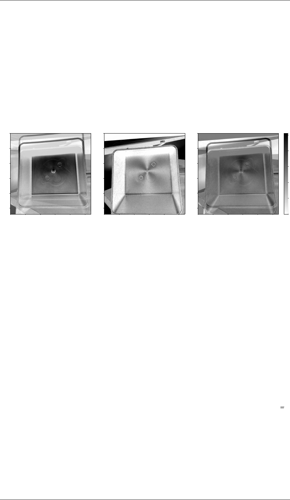
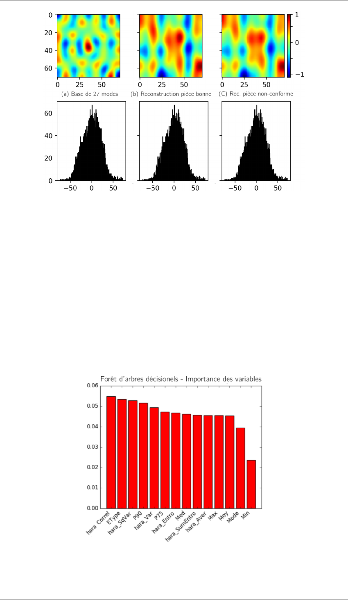
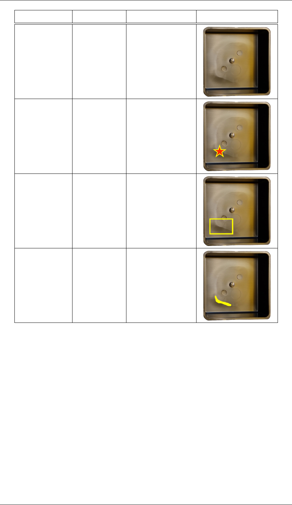
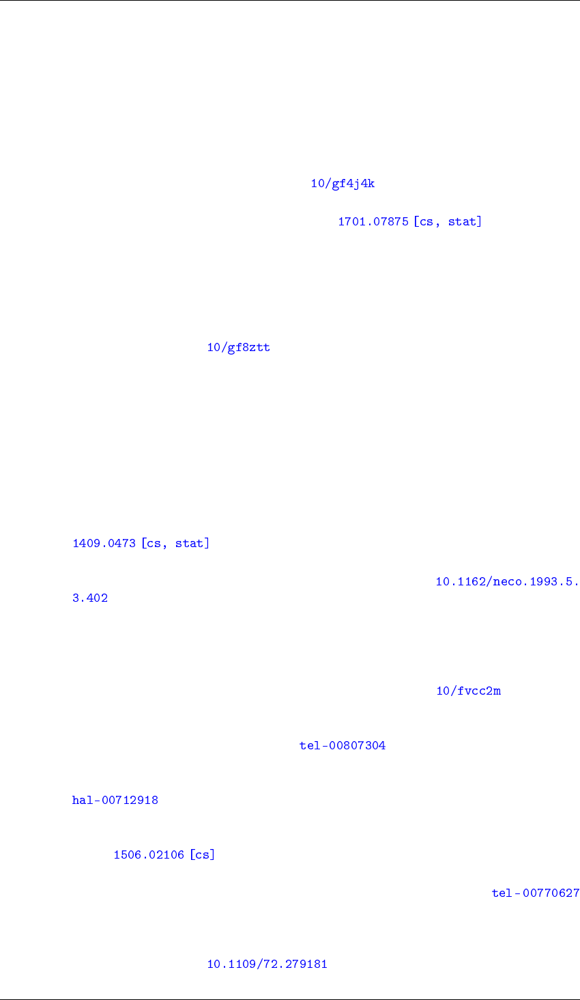
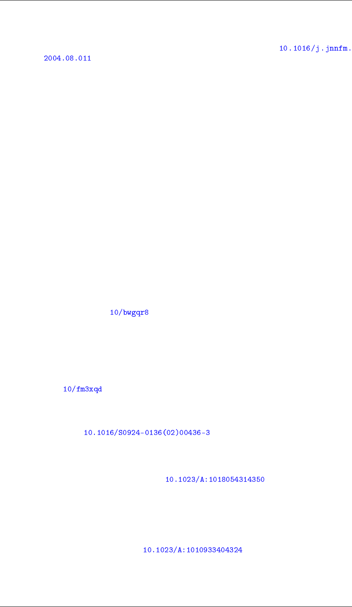
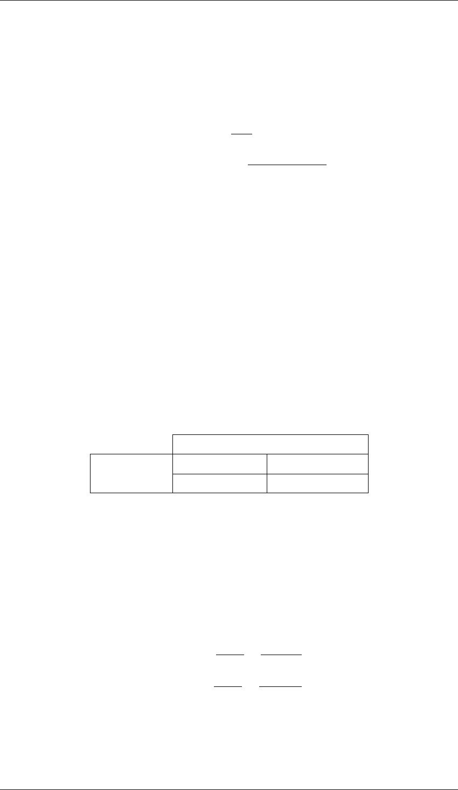

THÈSE
Pour obtenir le grade de
DOCTEUR DE L’UNIVERSITÉ SAVOIE MONT
BLANC
Spécialité : Sciences pour l’Ingénieur
Arrêtée ministériel : 25 mai 2016
Présentée par
Pierre Nagorny
Thèse dirigée par Maurice Pillet
et codirigéee par Éric Pairel
préparée au sein du Laboratoire SYMME
dans l’École Doctorale SISEO
Contrôle automatique non-invasif de la
qualité des produits
Application au procédé d’injection-moulage des
thermoplastiques
Thèse soutenue publiquement le 9 mars 2020,
devant le jury composé de :
Gilles Régnier
Professeur des Universités, Arts et Métiers-ENSAM, Président
Christophe Cudel
Professeur des Universités, Université Haute-Alsace, Rapporteur
Fabrice Mériaudeau
Professeur des Universités, Université de Bourgogne, Rapporteur
Ronan Le Goff
Ingénieur de Recherche, Centre Technique IPC, Examinateur
Maurice Pillet
Professeur des Universités, Université Savoie Mont Blanc, Directeur de thèse
Éric Pairel
Maître de conférences Habilité à Diriger les Recherches, Université Savoie Mont
Blanc, Co-Directeur de thèse
Émilio Vitale
Ingénieur Statisticien, Plastic Omnium Intelligent Exterior Systems, Invité

Remerciements & Dédicace
Remerciements
Ces quelques lignes seront insuffisantes pour remercier tous ceux qui doivent l’être. Le lecteur
se devra d’effectuer une recherche bibliographique pour réunir la liste complète de ces personnes :
co-auteurs, membres de groupements de travaux, doctorants de l’École Doctorale SISEO en 2017-
2020, les étudiants de l’IUT d’Annecy et de l’école d’ingénieur Polytech Annecy qui ont été
d’excellents cobayes.
Je souhaite remercier les professeurs Christophe Cudel et Fabrice Mériaudeau pour l’intérêt qu’ils
ont porté à ce travail et pour leurs commentaires détaillés qui ont permis d’améliorer ce manuscrit.
Merci au professeur Gilles Régnier d’avoir accepter de présider le jury; ainsi qu’à messieurs
Ronan Le Goff, Émilio Vitale pour leurs présences le jour J et leurs aides pour la réalisation
des essais expérimentaux industriels, indispensable pour avancer dans mon travail.
Je remercie particulièrement Éric Pairel et Maurice Pillet pour :
— la direction idéale de ces travaux de recherche,
— leur soutien humain infaillible,
— le partage de leurs expériences académique, professorale et de recherche.
Le financement de ce travail et son accomplissement, n’aurait pû être obtenu sans leur
persévérance. Je remercie BPI France et de manière générale l’effort de la France pour le
financement de la Recherche. Merci aux Bibliothèques Universitaires pour leur travail de
préservation des ouvrages de références, et à tous les sites de l’Internet qui rendent accessibles
une vaste connaissance librement, HAL, arXiV, Science-Hub qui ont rendus possible l’étude
bibliographique.
Cette ligne me permet de remercier efficacement l’ensemble des membres du laboratoire SYMME
d’Annecy–Le Bourget-du-Lac pour la bonne ambiance qu’ils entretiennent. Je garde un excellent
souvenir de tous les fructueux échanges qui m’ont permis d’approfondir ou de faire germer des
idées. Merci aux chercheurs, ingénieurs, administratifs et aux doctorants pour avoir égayés tous ces
moments; en particulier mon voisin de bureau Orlando; le couloir du haut : Amandine, Florian,
Jérémy, Koki, Luc, Marine, Mathias, Mickaël, Thomas, Thomas, Thomas ; le couloir du bas :
Amélie, Aurélien, Christian, Ludovic, Mathias, Thibault; les voisines de l’IREGE / label RES :
Camille, Caroline, Olga; les voisins du Bourget, Jean, Marie ; et pour la fabrication additive Blaise
et Hugues.
Coté famille, je dois d’énormes mercis à mes grands-parents, mes parents modèles —Monique et
Fred—, la merveilleuse Margot et un joyeux enfant qui a égayé la rédaction de ce manuscrit.
Enfin, merci à vous, lecteurs, qui faites vivre ce manuscrit. J’espère qu’il vous permettra d’obtenir
des réponses ou qu’il saura créer de nombreuses interrogations, tout en vous divertissant, avant de
vous endormir.
Dédicace
À ma généreuse famille, pour tout le soutien reçu, qui m’a permis de mener à bien ce travail.
i
Épigraphe
© Gotlib / Dargaud
1
Mes grands-parents ont connu l’orage.
En 2000, j’avais huit ans, il n’y avait pas d’orage chez moi. Je suis allé à l’école.
En 2027, ma fille aura à son tour huit ans. J’espère qu’il n’y aura pas d’orage.
1. Extrait de deux planches de Marcel Gotlib, publiées en Novembre 1969 dans le N°525 de l’hebdomadaire Pilote,
puis dans la Rubrique-à-Brac Taume 2, publiée aux éditions Dargaud.
iii
Table des matières
Remerciements & Dédicace . . . . . . . . . . . . . . . . . . . . . . . . . . . . . . . . i
Épigraphe . . . . . . . . . . . . . . . . . . . . . . . . . . . . . . . . . . . . . . . . . iii
Table des matières . . . . . . . . . . . . . . . . . . . . . . . . . . . . . . . . . . . . . v
Introduction 1
1 Contexte industriel et problématique de recherche 5
1.1 Le procédé d’injection-moulage des thermoplastiques . . . . . . . . . . . . . . . 6
1.1.1 Paramètres réglables d’une presse à injecter . . . . . . . . . . . . . . . . 8
1.2 La qualité d’un produit en injection-moulage des thermoplastiques . . . . . . . . 10
1.3 Revue de la recherche académique sur le procédé d’injection-moulage . . . . . . 12
1.3.1 Cartographie bibliographique . . . . . . . . . . . . . . . . . . . . . . . 12
1.3.2 Modélisation du procédé d’injection-moulage . . . . . . . . . . . . . . . 13
1.3.3 Maîtrise du procédé d’injection-moulage des thermoplastiques . . . . . . 17
1.4 Problématique industrielle : le contrôle qualité en ligne de production . . . . . . 19
1.4.1 Viabilité économique du déploiement du mesurage de la qualité en ligne
de production . . . . . . . . . . . . . . . . . . . . . . . . . . . . . . . . 19
1.4.2 Mesurage des variables d’état du procédé : mesurage indirect des
caractéristiques du produit . . . . . . . . . . . . . . . . . . . . . . . . . 20
1.4.3 Mesurage direct des caractéristiques du produit . . . . . . . . . . . . . . 21
1.4.4 Cahier des charges pour le contrôle de la qualité en ligne de production . 26
1.4.5 Proposition d’une définition du degré d’invasivité d’un système de mesure
pour un procédé . . . . . . . . . . . . . . . . . . . . . . . . . . . . . . . 28
1.4.6 Étude technico-économique du mesurage des caractéristiques du produit . 29
1.4.7 Formalisation de la notion de qualité d’une pièce . . . . . . . . . . . . . 30
1.5 Conclusion : la problématique du contrôle de la qualité en ligne de production . . 31
2 Apport de l’imagerie non-conventionnelle pour la mesure non-invasive de la qualité 33
2.1 Contexte de l’essai expérimental . . . . . . . . . . . . . . . . . . . . . . . . . . 34
2.1.1 Exploration du procédé par plan d’expériences . . . . . . . . . . . . . . 34
2.1.2 Sélection des paramètres de l’étude expérimentale . . . . . . . . . . . . 35
2.2 Évolution des pièces moulées après la sortie du moule . . . . . . . . . . . . . . . 37
2.3 Apport de la thermographie pour le contrôle de la géométrie des pièces . . . . . . 39
2.3.1 Essai expérimental de thermographie des pièces en sortie du moule . . . 39
2.3.2 Extraction de la géométrie à partir de l’image thermique . . . . . . . . . 41
2.4 Apport de la polarimétrie pour le contrôle des défauts d’aspect . . . . . . . . . . 45
2.4.1 Polarimétrie pour mettre en valeur les défauts des pièces plastiques . . . 45
2.4.2 Conception d’un capteur polarimétrique bas-coût . . . . . . . . . . . . . 46
2.4.3 Apport de la polarimétrie sur les performances d’un classifieur de la qualité 50
2.5 Traitement et fusion de l’information issue de mesures multimodales . . . . . . . 53
2.5.1 Nécessité de l’extraction de l’information pertinente . . . . . . . . . . . 53
v

Table des matières
2.5.2 Traitement d’images amont . . . . . . . . . . . . . . . . . . . . . . . . 54
2.5.3 Descripteurs statistiques . . . . . . . . . . . . . . . . . . . . . . . . . . 54
2.5.4 Sélection automatique de descripteurs pertinents . . . . . . . . . . . . . 59
2.5.5 Description d’images par apprentissage statistique . . . . . . . . . . . . 60
2.6 Synthèse et perspectives . . . . . . . . . . . . . . . . . . . . . . . . . . . . . . 61
2.6.1 Synthèse : la mesure non-invasive en cycle industrielle . . . . . . . . . . 61
2.6.2 Perspectives de recherche . . . . . . . . . . . . . . . . . . . . . . . . . 61
3 Modélisation de la notion de qualité par apprentissage 66
3.1 Construction d’un jeu de données représentatif . . . . . . . . . . . . . . . . . . . 68
3.1.1 Exploration humaine en cycle de production . . . . . . . . . . . . . . . . 68
3.1.2 Réglage automatique du procédé pour la création d’un jeu de données . . 68
3.1.3 Annotation humaine du jeu de données en contexte industriel . . . . . . . 69
3.1.4 Conclusion : transmission de l’expertise humaine en condition industrielle 74
3.2 Construction d’une métrique de la qualité par apprentissage . . . . . . . . . . . . 76
3.2.1 Apprentissage statistique supervisé . . . . . . . . . . . . . . . . . . . . 76
3.2.2 Apprentissage par transfert de domaine . . . . . . . . . . . . . . . . . . 80
3.2.3 Apprentissage semi-supervisé . . . . . . . . . . . . . . . . . . . . . . . 81
3.2.4 Apprentissage non-supervisé . . . . . . . . . . . . . . . . . . . . . . . . 88
3.3 Optimisation automatique des hyper-paramètres d’un modèle . . . . . . . . . . . 105
3.3.1 Optimisation par recherche aléatoire . . . . . . . . . . . . . . . . . . . . 106
3.3.2 Optimisation par méta-modèle bayésien . . . . . . . . . . . . . . . . . . 106
3.3.3 Méthodes de réduction du coût d’évaluation du méta-modèle . . . . . . . 109
3.3.4 Optimisation par algorithmes bandits . . . . . . . . . . . . . . . . . . . 110
3.3.5 Optimisation par algorithmes évolutionnistes . . . . . . . . . . . . . . . 111
3.3.6 Optimisation de l’architecture de réseaux de neurones profonds . . . . . 111
3.4 Conclusion : modélisation par apprentissage pour l’industrie . . . . . . . . . . . 113
4 Système de contrôle de la qualité par apprentissage à partir de l’imagerie non-
conventionnelle 117
4.1 Description du système de contrôle de la qualité proposé . . . . . . . . . . . . . 118
4.1.1 Dispositif d’acquisition d’images polarimétriques et thermiques en ligne
de production . . . . . . . . . . . . . . . . . . . . . . . . . . . . . . . . 118
4.1.2 Solution logicielle d’analyse d’image pour inférer la qualité . . . . . . . 120
4.2 Validation expérimentale : applications industrielles . . . . . . . . . . . . . . . . 127
4.2.1 Essai "boîte noire" au Centre Techniques IPC . . . . . . . . . . . . . . . 127
4.2.2 Essai "plaques" confidentiel . . . . . . . . . . . . . . . . . . . . . . . . 131
4.2.3 Discussions et limites du système proposé . . . . . . . . . . . . . . . . . 131
4.3 Conclusion . . . . . . . . . . . . . . . . . . . . . . . . . . . . . . . . . . . . . 132
4.4 Perspectives . . . . . . . . . . . . . . . . . . . . . . . . . . . . . . . . . . . . . 132
Conclusion générale 134
Bibliographie 137
Table des figures 159
Liste des tableaux 163
Annexes 165
vi

Table des matières
A Maîtrise du procédé d’injection-moulage des thermoplastiques 165
A.1 Réglage initial du point de fonctionnement . . . . . . . . . . . . . . . . . . . . . 167
A.1.1 Apport des systèmes experts . . . . . . . . . . . . . . . . . . . . . . . . 168
A.2 Régulation du point de fonctionnement . . . . . . . . . . . . . . . . . . . . . . . 168
A.2.1 Utilisation de l’automatique . . . . . . . . . . . . . . . . . . . . . . . . 169
A.2.2 Apport du contrôle adaptatif . . . . . . . . . . . . . . . . . . . . . . . . 170
A.2.3 Apport de la modélisation par réseaux de neurones . . . . . . . . . . . . 171
A.3 Détection de situations hors-contrôles . . . . . . . . . . . . . . . . . . . . . . . 171
A.3.1 Analyse en Composante Principale . . . . . . . . . . . . . . . . . . . . 172
A.3.2 Maîtrise Statistique des Procédés . . . . . . . . . . . . . . . . . . . . . . 172
A.4 Pilotage des caractéristiques de la pièce produite . . . . . . . . . . . . . . . . . . 173
A.4.1 Ajustement du procédé à partir de caractéristiques prédites . . . . . . . . 174
A.4.2 Ajustement à partir des caractéristiques mesurées sur le produit . . . . . 175
B Étude technico-économique du mesurage des caractéristiques du produit 177
C Économie du secteur de la plasturgie française 178
D Plan d’expériences 179
E Apprentissage statistique 182
E.1 Métrique de performances d’un classifieur . . . . . . . . . . . . . . . . . . . . . 182
E.1.1 Justesse équilibrée . . . . . . . . . . . . . . . . . . . . . . . . . . . . . 183
E.1.2 Matrice de confusion . . . . . . . . . . . . . . . . . . . . . . . . . . . . 183
E.1.3 Précision et rappel . . . . . . . . . . . . . . . . . . . . . . . . . . . . . 183
E.1.4 F-mesure . . . . . . . . . . . . . . . . . . . . . . . . . . . . . . . . . . 183
E.1.5 Courbe ROC . . . . . . . . . . . . . . . . . . . . . . . . . . . . . . . . 184
E.1.6 Validation croisée pour la comparaison des performances de classifieurs . 185
E.2 Apprentissage statistique traditionnel . . . . . . . . . . . . . . . . . . . . . . . . 186
E.2.1 Machine à vecteurs de support . . . . . . . . . . . . . . . . . . . . . . . 186
E.2.2 K-plus-proches voisins . . . . . . . . . . . . . . . . . . . . . . . . . . . 187
E.2.3 Bagging . . . . . . . . . . . . . . . . . . . . . . . . . . . . . . . . . . . 188
E.2.4 Forêt d’arbres décisionnels . . . . . . . . . . . . . . . . . . . . . . . . . 188
E.2.5 Boosting . . . . . . . . . . . . . . . . . . . . . . . . . . . . . . . . . . 189
E.2.6 Réseaux de neurones . . . . . . . . . . . . . . . . . . . . . . . . . . . . 189
F Réseau de convolution profond, Deep Learning 191
F.1 Historique . . . . . . . . . . . . . . . . . . . . . . . . . . . . . . . . . . . . . . 191
F.2 Réseaux de convolutions résiduels . . . . . . . . . . . . . . . . . . . . . . . . . 192
F.3 Fonctions d’activations . . . . . . . . . . . . . . . . . . . . . . . . . . . . . . . 193
F.4 Méthodes de régularisation pour limiter le sur-apprentissage . . . . . . . . . . . 195
F.4.1 Dropout . . . . . . . . . . . . . . . . . . . . . . . . . . . . . . . . . . . 195
F.4.2 Normalisation de lots . . . . . . . . . . . . . . . . . . . . . . . . . . . . 195
F.4.3 Arrêt prématuré de l’apprentissage . . . . . . . . . . . . . . . . . . . . . 196
F.4.4 Réduction de dimensions par interpolation . . . . . . . . . . . . . . . . . 196
F.4.5 Pénalisation sur les poids . . . . . . . . . . . . . . . . . . . . . . . . . . 198
F.4.6 Augmentation artificielle du jeu de données . . . . . . . . . . . . . . . . 198
G Résultats de l’extraction de la géométrie d’une pièce à partir de son image thermique200
H Confidentiel - Essai "plaques" 201
H.1 Essai "plaques" confidentiel . . . . . . . . . . . . . . . . . . . . . . . . . . . . 201
vii
Introduction
Introduction
e travail de doctorat s’inscrit dans le projet de recherche collaborative FUI
2
SAPRISTI
3
du
21
ème
appel à projet FUI Régions.
4
. L’obtention d’une chaîne de fabrication compétitive passe par
l’optimisation du procédé de production. Le projet FUI SAPRISTI s’intéresse en particulier au
procédé d’injection-moulage des thermoplastiques dans le secteur automobile. C’est pourquoi il
est labellisé par trois pôles de compétitivité :
— Plastipolis,
— iDforCAR,
— Mont-Blanc Industries.
Le consortium FUI SAPRISTI est constitué de laboratoires académiques, d’industriels
transformateurs et du Centre Technique français de la plasturgie IPC. Ainsi, les partenaires du
consortium SAPRISTI sont :
— Acsystème, développeur et intégrateur de solutions en automatique et traitement de
l’information,
— Le Centre Technique IPC, acteur européen en développement et recherche pour le secteur
de la plasturgie,
— Le laboratoire LaMCoS de l’INSA de Lyon, expert de la modélisation du procédé
d’injection-moulage des thermoplastiques,
— Plastic Omnium, équipementier automobile mondial
— Renault, automobiliste concepteur et équipementier,
— SISE, acteur européen de la régulation des procédés en plasturgie, dont notamment le
contrôle de l’injection séquentiel,
— Le laboratoire SYMME
5
de l’Université Savoie Mont Blanc, expert en réglage automatique
et en optimisation de procédés industriels, dans le cadre de son axe de recherche sur la
Qualité industrielle.
L’injection-moulage des thermoplastiques est un procédé de production bas-coût et haut-
volume. C’est un procédé particulièrement intéressant car il permet d’obtenir avec un temps de
cycles courts des pièces de toutes dimensions aux géométries complexes; qui sont très proches du
produit final. Le marché de la plasturgie représente en France 3500 entreprises pour 30,2 Milliards
de Chiffre d’Affaires en 2018
6
. Dans ce contexte, l’enjeu du projet FUI SAPRISTI est triple :
— Déterminer des indicateurs pertinents à mettre sous contrôle.
2. FUI : Fond Unique Interministériel
3. SAPRISTI : Système Autocorrectif pour la PRoduction zéro défaut de pIèces pLaSTIques
4. Résultats du 21
ème
appel à projets FUI sur competitivite.gouv.fr : 60 projets bénéficieront d’une aide de l’État de
43 Millions d’Euros ainsi que d’une aide des collectivités territoriales et des fonds communautaires (FEDER) de 37,8
Millions d’Euros.
5. SYMME : SYstèmes et Matériaux pour la MÉcatronique
6. Synthèse 2018 du secteur réalisée par la Fédération Française de la Plasturgie.
1

Introduction
— Mieux comprendre les phénomènes physiques qui entrent en jeu dans le procédé, afin de
modéliser le procédé en prenant en compte les indicateurs sélectionnés.
— Optimiser le procédé à partir de la modélisation et des indicateurs, afin de produire une
qualité optimale.
Ce travail de doctorat s’inscrit dans ce projet. L’objectif à long terme du FUI SAPRISTI est de
mettre sous contrôle le procédé, afin de maximiser la qualité de la production.
Nous avons choisi de mettre en place un moyen de contrôle des caractéristiques des pièces en
ligne de production. D’autres approches réalisent des mesurages sur le procédé plutôt que sur le
produit. C’est pourquoi nous avons orienté nos travaux vers la conception d’un moyen de mesure
automatique de la qualité des produits, en ligne de production.
Dans le cas de l’injection-moulage des thermoplastiques, aucun système de mesure de la
qualité ne répond actuellement aux exigences des partenaires du FUI SAPRISTI ; en particulier
avec les contraintes techniques issues de l’intégration de la mesure de la qualité en ligne de
production. Des échanges avec les partenaires du FUI SAPRISTI nous ont permis de prendre
en compte les limites que posent le procédé industriel. Nous avons identifié trois verrous au
déploiement massif du contrôle qualité à cent pourcent dès la sortie de la machine :
— économique : pour être déployé sur chaque machine le coût du système doit être faible,
— technologique : respect de la durée du cycle, peu invasif pour le procédé de production et
capable d’extraire l’information sur la qualité des produits à partir des mesures,
— humain : capable de modéliser la perception qualité de l’expert humain.
Nous évaluerons et chercherons à résoudre chacun de ces verrous afin de proposer un moyen de
mesure industriellement viable.
Afin d’identifier les variables du procédé qui sont susceptibles de contenir une information sur
la qualité du produit, nous avons réalisé une étude de la littérature. De nombreuses variables ont été
étudiées depuis 1975. La pratique industrielle actuelle propose d’utiliser des mesurages intégrées
dans l’outillage. L’intégration des capteurs nécessaire à ces mesures est invasive, puisqu’il est
nécessaire de modifier les outillages. C’est à dire que le travail d’ingénierie nécessaire à la
conception de l’outillage en intégrant les capteurs est coûteux. De plus, l’instrumentation des
capteurs est fragile et leur maintenance nécessite un arrêt prolongé de la production, puisque c’est
l’outillage complet qui doit être expertisé. Afin de lever les verrous économiques et technologiques
qui limitent le déploiement du contrôle qualité, nous n’avons pas retenu la mesure invasive dans
nos travaux. Cela permet de limiter la complexité de la mise en place des dispositifs de mesure.
C’est pourquoi nous avons défini le périmètre de notre recherche au contrôle non-invasif pour le
procédé industriel, de la qualité des produits.
L’expérimentation occupe une part importante de nos travaux. Dans un premier temps, cela
nous a permis de comprendre le procédé et la pratique industrielle. Dans un second temps, nous
avons étudié l’utilisation de moyens de mesurages issus de l’imagerie non-conventionnelle :
scanner laser, thermographie, polarimétrie, ainsi que de mesures intégrées dans l’outillage que
nous n’avons pas retenu. L’imagerie non-conventionnelle permet d’acquérir des informations que
l’œil humain ne peut percevoir. Nous nous appuyons sur l’expérimentation et la mesure pour
construire nos modèles. Dans le cas où l’on dispose d’un grand nombre de cas d’étude, cette
démarche est particulièrement adaptée à l’utilisation de l’apprentissage statistique pour modéliser
les phénomènes.
À partir des résultats des mesures, il s’agit de concevoir un système capable de discerner les
pièces conformes, des pièces non-conformes. Nous orientons nos travaux dans l’utilisation de
méthode d’apprentissage statistique. L’expert qualité humain transmet son savoir au système de
mesure, qui réalise le contrôle de manière autonome.
2

Introduction
Ces travaux de doctorat ont fait l’objet de communications en congrès scientifiques
internationaux [NPP17b; NPP17a; Nag+17; Nag+18; Nag+19], ainsi que d’un colloque national
[NPP17b].
Ce manuscrit est constitué de quatre chapitres qui peuvent être indépendamment parcourus.
Le lecteur sera orienté au gré de sa lecture, vers les sections d’autres chapitres, lorsque des
informations complémentaires pourront lui être utiles.
Le premier chapitre présente de manière détaillée le contexte industriel du travail de doctorat
et les objectifs de recherche pour le déploiement du contrôle qualité dès la sortie de l’injection-
moulage. Le second chapitre a pour objectifs de présenter les différentes technologies de
métrologies existantes et de justifier notre choix d’utilisation de l’imagerie non-conventionnelle
thermographique et polarimétrique à partir d’un essai expérimental. Le troisième chapitre propose
d’étudier les méthodes de formalisation de la notion de qualité par apprentissage et de les évaluer
sur notre cas d’application industriel. Nous présenterons les méthodes d’apprentissage supervisé
et non-supervisé, ainsi que la démarche d’annotation d’un jeu de données d’apprentissage. Enfin,
le quatrième chapitre détaille la conception d’un nouveau dispositif de mesure et réalise son
évaluation sur deux cas d’applications industrielles.
En conclusion, un bilan concernant les travaux de ces trois années de doctorat sera dressé. Une
discussion sera proposée concernant les nombreuses perspectives de recherche que nous avons
identifiées.
3
1
Contexte industriel et problématique de recherche
Dans ce premier chapitre, nous présentons le contexte du procédé
d’injection-moulage des thermoplastiques dans lequel s’inscrit nos
travaux. Dans un premier temps, nous étudierons les problématiques
de recherche de la littérature en injection-moulage. Dans un second
temps, nous positionnerons notre travail sur la problématique du du
contrôle de la qualité géométrique et d’aspect en temps de cycle
industriel.
Sommaire
1.1 Le procédé d’injection-moulage des thermoplastiques . . . . . . . . . . . . 6
1.1.1 Paramètres réglables d’une presse à injecter . . . . . . . . . . . . . . . 8
1.2 La qualité d’un produit en injection-moulage des thermoplastiques . . . . 10
1.3 Revue de la recherche académique sur le procédé d’injection-moulage . . . 12
1.3.1 Cartographie bibliographique . . . . . . . . . . . . . . . . . . . . . . 12
1.3.2 Modélisation du procédé d’injection-moulage . . . . . . . . . . . . . . 13
1.3.3 Maîtrise du procédé d’injection-moulage des thermoplastiques . . . . . 17
1.4 Problématique industrielle : le contrôle qualité en ligne de production . . . 19
1.4.1 Viabilité économique du déploiement du mesurage de la qualité en
ligne de production . . . . . . . . . . . . . . . . . . . . . . . . . . . . 19
1.4.2 Mesurage des variables d’état du procédé : mesurage indirect des
caractéristiques du produit . . . . . . . . . . . . . . . . . . . . . . . . 20
1.4.3 Mesurage direct des caractéristiques du produit . . . . . . . . . . . . . 21
1.4.4 Cahier des charges pour le contrôle de la qualité en ligne de production 26
1.4.5 Proposition d’une définition du degré d’invasivité d’un système de
mesure pour un procédé . . . . . . . . . . . . . . . . . . . . . . . . . 28
1.4.6 Étude technico-économique du mesurage des caractéristiques du produit 29
1.4.7 Formalisation de la notion de qualité d’une pièce . . . . . . . . . . . . 30
1.5 Conclusion : la problématique du contrôle de la qualité en ligne de production 31
5
Chapitre 1. Contexte industriel et problématique de recherche
1.1 Le procédé d’injection-moulage des thermoplastiques
Figure 1.1 – Une presse à injecter. Photographie originale de Glenn McKechnie c by SA 2.5,
Wikimedia Commons.
La machine qui met en œuvre le procédé d’injection-moulage est la presse à injecter (voir la
Figure 1.1). Un polymère est fondue dans un tube chauffé, appelé le fourreau. Le fourreau contient
une vis pour malaxer la matière. Dans une presse à injecter, on distingue deux parties cinématiques
indépendantes : la vis de dosage et l’outillage amovible. La rotation et l’avance de la vis sont
régulées afin de définir les caractéristiques de la matière fondue qui sera injectée. En particulier,
il s’agit d’homogénéiser la matière fondue afin qu’elle ait une certaine viscosité. L’avancée de la
vis produit une pression sur la matière qui est également régulée : c’est la pression d’injection.
Le procédé d’injection-moulage des thermoplastiques consiste à injecter sous une pression élevée,
généralement supérieure à 100 MPa, le polymère fondu et visqueux dans un moule. La pression
est maintenue pendant le refroidissement de la matière; en particulier jusqu’à ce que le canal par
lequel la matière est entrée dans le moule soit solidifié.
Cette phase de maintien permet de densifier la matière afin de compenser le retrait consécutif
au refroidissement. Le passage de la phase d’injection à la phase de maintien est appelé la
commutation (on parle couramment de "point de commutation"). La phase de maintien se termine
avant le début de la phase d’injection. La phase de dosage, qui est réalisée pendant le moulage
d’une pièce, conditionne les caractéristiques de la matière fondue pour la pièce suivante; il y a un
cycle de décalage.
L’ensemble qui constitue le moule est appelé un "outillage"; ce dernier intègre un système
de régulation thermique à température constante afin de favoriser le refroidissement de la pièce.
L’outillage doit également supporter les contraintes mécaniques des pressions d’injection et l’on
cherche à éviter la déformation de sa géométrie pendant l’injection. C’est pourquoi les outillages
en injection-moulage sont volumineux et massifs en comparaison des dimensions des pièces
produites.
Le procédé d’injection-moulage des thermoplastiques est un procédé cyclique. Afin de mettre
en évidence la séquence d’un cycle du procédé, nous proposons un schéma bloc d’un cycle
d’injection en Figure 1.2. On remarque en particulier que l’étape de dosage est réalisé en parallèle
du refroidissement de la pièce et de son éjection. Le dosage est l’étape pendant laquelle la matière
première est fondue dans la vis d’injection. Lors du démarrage d’une presse à injecter, il est courant
de produire une vingtaine de pièce pour ajuster les réglages et stabiliser le cycle. Nous détaillons
dans la Section 1.1.1 suivante les paramètres qui peuvent être réglés sur une presse à injecter.
6
1.1. Le procédé d’injection-moulage des thermoplastiques
Course d’injection
Course de Maintien
Course dosage
Fermeture
outillage
Injection
Maintien
Pression de maintien
Refroidissement
Dosage
Ouverture
outillage
et sortie des
éjecteurs
Cycle d’injection
Vitesse d’avance
Figure 1.2 – Schéma-bloc du procédé d’injection-moulage.
7

Chapitre 1. Contexte industriel et problématique de recherche
Le procédé d’injection-moulage est également séquentiel : il est composé de phases
successives (voir Figure 1.2). Chaque phase possède des paramètres qui influent sur les phases
suivantes et, à terme, sur les caractéristiques du produit fini. Les multiples phases font que le
nombre de paramètres qui peuvent être ajustés sur le procédé est supérieur à vingt. Il est possible
d’ajuster précisément les températures, les courbes de pressions et les durées d’ouvertures et de
fermetures de multiples canaux d’injection. Enfin, le procédé d’injection-moulage possède une
certaine dynamique : c’est à dire que l’ajustement d’un des paramètres du procédé met une certaine
durée avant de se répercuter sur les produits. Cette dynamique est majoritairement due à l’inertie
thermique de l’outillage massif.
D’un point de vue industriel, l’injection-moulage des thermoplastiques est un procédé à haute
cadence, peu coûteux car répétable. Une fois la presse à injecter réglée, le procédé est généralement
stable dans le temps. Il peut produire de manière continue plusieurs milliers de pièces sans
intervention humaine. De plus, le coût de la matière première thermoplastique est faible.
La pratique industrielle de la production d’une pièce par moulage de thermoplastique suit les
étapes suivantes :
1. Apport de la matière première
2. Injection-moulage de la pièce
3. Stockage des pièces
4. Étapes de finition (traitements de surface, peintures)
5. Stockage des pièces
6. Contrôle de la qualité
7. Expédition
Le contrôle de la qualité des pièces n’est aujourd’hui pas réalisé dès la sortie du moule (après
l’étape 2.). Ainsi, si une pièce est non-conforme après l’étape d’injection-moulage, elle ne sera
pas écartée de la chaîne de production. Nous discuterons en particulier dans la Section 1.4 des
limites qui contraignent la réalisation du contrôle en ligne de production.
1.1.1 Paramètres réglables d’une presse à injecter
Le nombre de paramètres réglables d’une presse à injecter est grand. Dans le Tableau 1.1,
nous répertorions les 16 paramètres les plus courants qui peuvent être réglés sur un presse. Cette
liste n’est pas exhaustive. En particulier, les choix de la matière première, de la buse et les profils
d’évolution des pressions ajoutent de nombreuses possibilités de réglage. Nous remarquons que
de nombreux paramètres sont dépendants. Par exemple, la durée du cycle de production dépend de
la vitesse d’injection, qui dépend également de la pression d’injection que l’ont souhaite obtenir.
Des profils d’avance de la vis et de pression d’injection sont représentés dans la Figure 1.3.
On observe dans la première phase du cycke d’injection une avance rapide de la position de la
vis et une augmentation de la pression d’injection, afin de remplir l’empreinte de matière fondue.
Une seconde phase est le maintien de la pression dans l’empreinte pendant le refroidissement de
la matière. Puis le moule est ouvert et la vis est progressivement reculé à sa position initiale.
La pratique industrielle utilise le savoir-faire du technicien régleur. Le régleur a souvent accès
à la courbe de pression de l’injection. Sur des pièces compliquées, le réglage du procédé peut
prendre plusieurs heures.
8
1.1. Le procédé d’injection-moulage des thermoplastiques
Figure 1.3 – Profil de position de la vis et de pression d’injection pendant un cycle d’injection-
moulage.
Phase du procédé Paramètres réglables Description Valeur classique
Dosage Course de dosage Distance de recul de la vis 50-100 cm
Dosage Température du fourreau Températures des colliers chauffants 200-300 °C
Dosage Vitesse de rotation de la vis Rotation de la vis qui malaxe la matière 1-20 tours/min
Injection Course d’injection Distance d’avance de la vis pendant l’injection 50-100 cm
Injection Pression d’injection Profil de pression exercée sur la vis et matière 10-200 MPa
Injection Pression de commutation Détermine le passage de l’injection au maintien 10-100 MPa
Injection Vitesse d’injection Vitesse d’avance de la vis 0,5 - 1 m/s
Maintien-refroid. Durée de maintien Durée de maintien de la pression 10-60 s
Maintien-refroid. Pression de maintien Profil de pression exercée sur la vis 10-100 MPa
Maintien-refroid. Débit thermorégulateur Débit de circulation du fluide 20-100 dm
3
/s
Maintien-refroid. Température thermorégulateur Régulation thermique du moule 10-40 °C
Ouverture-éjection Course d’ouverture Distance d’ouverture de l’outillage 10-100 cm
Ouverture-éjection Vitesse d’ouverture Vitesse d’ouverture de l’outillage 0,5 - 2 m/s
Ouverture-éjection Course des éjecteurs Distance de sortie des éjecteurs 1-20 cm
Ouverture-éjection Vitesse de rentrée des éjecteurs Vitesse de sortie des éjecteurs 0,5 - 2 m/s
Fermeture outillage Vitesse de fermeture Vitesse de fermeture de l’outillage 0,5 - 2 m/s
Tableau 1.1 – Paramètres réglables sur une presse à injecter classique.
9
Chapitre 1. Contexte industriel et problématique de recherche
1.2 La qualité d’un produit en injection-moulage des
thermoplastiques
La norme ISO9000 [ISO15] spécifie la notion de qualité comme l’aptitude d’un ensemble de
caractéristiques intrinsèques d’un objet à satisfaire des exigences. Dans notre cadre des produits
industriels, les exigences sont celles du client final ou du donneur d’ordre. Elles sont spécifiées
dans la documentation technique du produit, dont le dessin. Des caractéristiques sont mesurées sur
le produit. Puis les résultats sont comparées aux exigences, c’est à dire des limites d’acceptation
ou des intervalles de tolérances. Nous distinguons cinq grands types de caractéristique :
— géométriques
— mécaniques,
— sensoriels : visuelles, haptiques, olfactives,
— chimiques,
— économiques.
Dans le cadre de ce travail, nous nous intéressons en particulier aux caractéristiques
géométriques et d’aspect. La maîtrise de ces deux types de caractéristique est un enjeu important
pour le secteur de la plasturgie. Les tolérances dimensionnelles sont de plus en plus serrées.
À celles-ci s’ajoutent l’exigence de peu de non-conformité de l’aspect des pièces. Enfin,
l’amélioration de la qualité est un facteur important de rentabilité et de compétitivité des
entreprises. Dès 1950, DEMING [Dem82] décrit la réaction en chaîne que permet d’initier
l’amélioration de la qualité : réduction des coûts des rebuts, diminution du prix de revient, gain de
marchés et, à terme, création d’emplois.
Le Tableau 1.2 présente les non-conformités d’aspect habituelles en injection-moulage des
thermoplastiques.
Non-conformité Description Causes probables
Homothétie dimension modifiée retrait de la matière
Gauchissement défaut de surface refroidissement non homogène
Retassure cavité dans la matière pression de maintien, vitesse d’injection
Incomplet trou dans la pièce quantité de matière injectée, clapet anti-retour défaillant
Ligne de soudure ligne décolorée pression d’injection, température matière
Jet libre trace décolorée viscosité matière, conception moule, pression d’injection
Éjection trace de l’éjecteur vitesse éjecteur, température matière, durée refroidissement
Combustion trace noire conception du moule, température de la matière
Givrage bulle ou trace blanche matière humide
Pollution trace colorée usure de l’outillage, pollution de la matière
Tableau 1.2 – Principaux défauts d’aspects en injection-moulage des thermoplastiques.
Un défaut de ligne de soudure entraine une fragilité. La majorité des non-conformités d’aspect
sont des défauts géométriques de surface. Seules la combustion, le givrage et la pollution sont
entrainées pas la modification des propriétés du polymère. Ces imperfections géométriques sont
souvent dues au mauvais maintien du polymère contre les parois de l’outillage, ou bien à la
solidification trop rapide de la matière. Les défauts d’incomplets sont les plus simples à détecter
par analyse d’image : un seuillage puis une détection de contours est suffisant. La détection des
autres non-conformité est plus compliquée. C’est notre objectif principal de recherche.
10
1.2. La qualité d’un produit en injection-moulage des thermoplastiques
La Figure 1.4 présente une mesure par microscopie confocale d’un défaut de retassure
sur une pièce plastique automobile de deux mètres. Ce défaut est caractéristique des pièces
automobiles qui sont peintes afin de réfléchir la lumière de manière harmonieuse. La légère
inflexion de la surface entraine une "cassure" de la réflexion de la lumière, ce qui attire le regard
et amplifie l’impression de défaut. L’écart géométrique de l’inflexion est de l’ordre de la dizaine
de micromètres.
(a) Photographie du défaut.
AltiMap Premium 6.2.7487
0 2 4 6 8 mm
mm
0
1
2
3
4
5
6
7
8
mm
0
0.1
0.2
0.3
0.4
0.5
0.6
0.7
0.8
0.9
1
NM
mm
0
0.2
0.4
0.6
0.8
1
0 2 4 6 mm
mm
0
1
µm
0
50
100
150
200
µm
0
Aire horizontale 3.05 mm²
Aire développée 3.14 mm²
Complexité 3.06 %
Profondeur 11.5 µm
Volume 0.0125 mm³
Périmètre 8.06 mm
0 2 4 6 mm
mm
0
1
µm
0
40
80
120
160
0 2 4 6 mm
mm
0
1
µm
0
2
4
6
8
10
Longueur = 1.52 mm Pt = 10.4 µm Echelle = 20.0 µm
0 0.1 0.2 0.3 0.4 0.5 0.6 0.7 0.8 0.9 1 1.1 1.2 1.3 1.4 1.5 mm
µm
-10
-5
0
5
Longueur = 8.93 mm Pt = 21.2 µm Echelle = 40.0 µm
0 0.5 1 1.5 2 2.5 3 3.5 4 4.5 5 5.5 6 6.5 7 7.5 8 8.5 mm
µm
-20
-10
0
10
Vue e n 3D
Mesure d'une ride
Profil sans filtrage ondul/rugo
Ondulation (filtrage gaussien cut-off 0.25mm)
Rugosité (filtrage gaussien cut-off 0.25mm)
Carte de profondeurs (mesures brutes)
Recadrage (échelle de couleur optimisée)
Laboratoire SYMME - Projet SAPRISTI - 16/11/17 - Mesure géométrique AltiSurf AVEC défaut
(b) Mesure de surface par microscopie confocal.
AltiMap Premium 6.2.7487
0 2 4 6 8 mm
mm
0
1
2
3
4
5
6
7
8
mm
0
0.1
0.2
0.3
0.4
0.5
0.6
0.7
0.8
0.9
1
NM
mm
0
0.2
0.4
0.6
0.8
1
0 2 4 6 mm
mm
0
1
µm
0
50
100
150
200
µm
0
Aire horizontale 3.05 mm²
Aire développée 3.14 mm²
Complexité 3.06 %
Profondeur 11.5 µm
Volume 0.0125 mm³
Périmètre 8.06 mm
0 2 4 6 mm
mm
0
1
µm
0
40
80
120
160
0 2 4 6 mm
mm
0
1
µm
0
2
4
6
8
10
Longueur = 1.52 mm Pt = 10.4 µm Echelle = 20.0 µm
0 0.1 0.2 0.3 0.4 0.5 0.6 0.7 0.8 0.9 1 1.1 1.2 1.3 1.4 1.5 mm
µm
-10
-5
0
5
Longueur = 8.93 mm Pt = 21.2 µm Echelle = 40.0 µm
0 0.5 1 1.5 2 2.5 3 3.5 4 4.5 5 5.5 6 6.5 7 7.5 8 8.5 mm
µm
-20
-10
0
10
Vue en 3D
Mesure d'une ride
Profil sans filtrage ondul/rugo
Ondulation (filtrage gaussien cut-off 0.25mm)
Rugosité (filtrage gaussien cut-off 0.25mm)
Carte de profondeurs (mesures brutes)
Recadrage (échelle de couleur optimisée)
Laboratoire SYMME - Projet SAPRISTI - 16/11/17 - Mesure géométrique AltiSurf AVEC défaut
(c) Profil du défaut.
Figure 1.4 – Défaut de retassure mesurée par microscope confocal, AltiMet 520
0
.
La mesure de la géométrie à l’échelle micrométrique, pendant la durée du cycle du procédé, est
un véritable défi. Dans la suite de ce chapitre, nous présenterons les moyens de mesure existants;
puis nous orienterons notre étude sur les moyens de mesure sans contact; en particulier nous nous
intéresserons aux moyens de mesure compatibles avec le temps de cycle du procédé d’injection-
moulage.
0. Spécifications techniques de l’Altisurf 520 sur le site Internet de la société Altimet.
11
Chapitre 1. Contexte industriel et problématique de recherche
1.3 Revue de la recherche académique sur le procédé d’injection-
moulage
Le procédé d’injection est l’étape clé du processus de fabrication des pièces plastiques
moulées. Il répercute ses défauts sur l’aval de la chaîne de production, comme par exemple sur
les étapes d’assemblages et de finitions.
Dans cette section, nous identifierons trois axes de recherche principaux qui lui ont été
dévoués : la modélisation physique du procédé; la maîtrise du point de fonctionnement; et
l’optimisation des réglages. Nous réaliserons une cartographie bibliographique §1.3.1, puis nous
nous intéresserons aux travaux de modélisation du procédé d’injection-moulage §1.3.2. Enfin,
nous étudierons la recherche sur la maîtrise du procédé d’injection-moulage §1.3.3.
1.3.1 Cartographie bibliographique
Afin d’identifier les thématiques de recherche qui sont associées au procédé d’injection-
moulage, nous avons réalisé une cartographie bibliographique dans la Figure 1.5.
Figure 1.5 – Cartographie bibliographique de la maîtrise du procédé d’injection-moulage.
Elle présente le graphe relationnel que nous avons construit à partir des mots-clés associés à
421 publications, de 1970 à 2015. Les mots-clés sont retenus s’ils apparaissent plus de quatre fois.
Ils sont regroupés par relations. Nous utilisons le formalisme VOS (Visualization Of Similarities)
proposé par VAN ECK et WALTMAN [vW06; van+10]. Sur ce graphique, nous identifions plusieurs
thématiques de recherche. Dans la suite de cette section, nous présenterons chacune d’elles.
— la modélisation mathématique et la simulation du procédé (couleur cyan) §1.3.2.2,
— la modélisation empirique par plan d’expériences (couleur magenta) §1.3.2.3,
— l’apport des systèmes à réseaux des neurones pour modéliser le procédé (en jaune) §1.3.2.3,
12
1.3. Revue de la recherche académique sur le procédé d’injection-moulage
— l’apport des systèmes experts pour régler le point de fonctionnement initial (en bleu) §1.3.3,
— la régulation du point de fonctionnement par l’automatique (couleur rouge, Engineering
Process Control) §1.3.3,
— l’analyse statistique afin de détecter les dérives (en vert, Statistical Process Control) §1.3.3.
L’ensemble de ces travaux de recherche a deux grands objectifs :
— améliorer la modélisation du procédé pour pouvoir optimiser ses paramètres,
— maîtriser les caractéristiques des produits fabriqués.
Ces deux objectifs sont souvent traités de manière complémentaire. Dans les sections suivantes,
nous présenterons chacune de ces thématiques de recherche.
1.3.2 Modélisation du procédé d’injection-moulage
Chacune des phases du procédé d’injection-moulage influe sur la suivante et, à terme,
conditionne les caractéristiques du produit. Nous étudierons les travaux de la littérature sur
la modélisation systémique du procédé, puis nous proposerons une nouvelle représentation
systémique. Nous présenterons ensuite les travaux sur les modèles théoriques du procédé
d’injection-moulage et les travaux d’identification de modèles à partir de résultats de mesure
expérimentaux.
1.3.2.1 Modélisation systémique
En 1999, KAZMER et HATCH proposent un découpage en cinq phases [KH99] (voir la Figure
1.6) qui est une évolution du découpage en trois phases qui avait été proposé par MA [Ma74].
Cette représentation systémique du procédé fait apparaître des variables d’état intermédiaires qui
sont associées à chacune des phases.
Température
Fourreau
1000
PLASTICATION
INJECTION
MAINTIEN
REFROIDISSEMENT
EJECTION
QUALITE PRODUIT/PROCEDE
Pression
du Fondu
Granulés
Thermoplastique
Pression Vis
0.02
RPM de la vis
0 . 5
Déformation
Dimensions
Clarté
Coût
économique
Contraintes
résiduelles
Intégrité
Pièce
ejectée
Relaxation
Solidification de couches
Résistance
Aspect
Durée de séjour
dans le moule
Volume
du Fondu
Température
du Fondu
Qualité du Fondu
Profil de Vitesse d’Injection
0.02
Pression d’Injection Maximal
0 . 1
Profil de Pression de Maintien
0 . 2
Durée de Maintien
0.01
Viscosité
du Fondu
Pression dans
la Buse
Débit
Temperature du liquide de refroidissement du moule
200
Durée de Refroidissement
0.01
Vitesse du Front
de Fondu
Pression
du Fondu
Densité
du Fondu
Température
du Fondu
Solidification de couches
Tonnage de bride
Solidification de couches
Temps de cycle
Température
de la Pièce
Contraintes
Internes
Effort dans
la Pièce
Course d’Ejection
0.02
Vitesse d’Ejection
0.01
Défaut
de Jet
Défaillance
du Moule
Quantité injectée
0.02
REGLAGES
MACHINES
CARACTERISTIQUES
QUALITE
VARIABLES D’ETAT
Figure 1.6 – Vue systémique du procédé d’injection-moulage, traduite de KAZMER et HATCH
[KH99].
13
Chapitre 1. Contexte industriel et problématique de recherche
Elle fait également apparaître les relations de dépendance entre les différentes phases. La
représentation met en évidence plusieurs variables intermédiaires, qui influent soit directement
sur les caractéristiques du produit, soit sur les caractéristiques d’autres phases. Ces variables
intermédiaires ne sont pas nécessairement observables. Il est par exemple très difficile de mesurer
la densité de la matière fondue, ou encore l’évolution des contraintes internes.
Cette figure permet de mettre en évidence dix caractéristiques du produit qui sont la cause de
12 variables de réglage. L’injection-moulage est un procédé multi-entrées, multi-sorties (MIMO).
On distingue également deux réglages de "profils". Un profil est une valeur de réglage qui évolue
dans le temps. Aussi, les possibilités de réglages d’un profil sont bien plus importantes que pour
une grandeur scalaire. Dans le cas où un profil serait représenté par 10 points; nous obtenons alors
20 variables de réglage pour deux profils.
Enfin, nous remarquons que cette représentation systémique ne fait pas apparaître la nature
cyclique du procédé. En effet, la phase de dosage est réalisée en temps masqué au cycle principal
de fabrication d’une pièce.
{PVs}
Caractéristiques
Paramètres
{DP}
Dosage
Injection
Refroidissement
Caractéristiques
matière
Caractéristiques
Pièce en
sortie machine
Caractéristiques
Pièce injectée
Conditions de
maintien et
refroidissement
Variables
d’injection
Caractéristiques
fondu
Variables de
plastification
Conditions de
stabilisation
Caractéristiques
Pièce stable
Stabilisation
{C0}
{C1}
{C2}
{C3}
{C4}
{P1}
{P2}
{P3}
{P4}
Variables de
finitions
Caractéristiques
Pièce finie
Finitions
{C} {P}
Figure 1.7 – Représentation Zig Zag du procédé d’injection-moulage des thermoplastiques.
Nous nous appuyons sur la méthodologie Axiomatic Design pour représenter le procédé
[Suh90]. SUH propose la représentation Zig Zag, afin de mettre en évidence les liens entre
les paramètres d’un procédé (Process Variables) et les caractéristiques d’un produit (Design
Parameters). Dans la Figure 1.7, nous proposons une représentation Zig Zag du procédé
d’injection-moulage. La représentation Zig Zag fait apparaître les variables du procédé P
P
P
i
i
i
et les
caractéristiques du produit lors de chacune des phases C
C
C
i
i
i
. Les caractéristiques du produit fini C
C
C
sont fonction de l’ensemble des phases. De plus, chaque phase est fonction des phases précédentes,
ainsi que des variables du procédé. Si un réglage est modifié au niveau de l’une des phases i, les
caractéristiques du procédé pour toutes les phases suivantes C
C
C
j>i
pourront être modifiées.
Nous remarquons en particulier que les caractéristiques d’une pièce finie sont liées aux phases
de stabilisation et de finition. Or, la stabilisation de pièces prend du temps. Sur des pièces massives,
il faut attendre plusieurs heures que la pièce refroidisse et que les contraintes internes se stabilisent.
C’est pourquoi, les étapes de finition sont généralement réalisées plusieurs heures après l’injection-
moulage d’une pièce.
14

1.3. Revue de la recherche académique sur le procédé d’injection-moulage
Dans la suite de cette section, nous présenterons les publications les plus importantes
concernant la modélisation du procédé d’injection-moulage. Nous distinguons les modélisations
physiques, qui cherchent à proposer un modèle mathématique du procédé à partir de connaissances
théoriques, des modélisations empiriques qui utilisent les données d’expériences pour identifier un
modèle mathématique.
1.3.2.2 Modélisations physiques du procédé d’injection-moulage
La nature multivariée du procédé rend difficile la définition d’un modèle théorique. En 1987,
AGRAWAL, PANDELIDIS et PECHT estiment, en conclusion de leur revue de la régulation du
procédé d’injection-moulage, que les futurs travaux de recherche devront prendre en compte
l’ensemble des variables d’entrée, ainsi que leurs interactions [APP87]. Pourtant, d’après le
Tableau A.1 aucun des modèles proposés dans la littérature après 1987 ne prend en compte
l’ensemble des 12 variables de ce procédé, telles que présentées dans la Figure 1.6, voir l’Annexe
A Tableau A.1.
Un modèle théorique doit prendre en compte les nombreuses interactions multi-physiques
entre chaque phase du procédé. De plus, la connaissance de la physique des polymères reste un
champ de recherche ouvert. L’évolution de la cristallinité d’un polymère, lors de sa solidification,
peut par exemple être modélisée par l’équation de NAKAMURA et al. [Nak+72; NKA73]. Le
lecteur intéressé la modélisation micro-mécanique des polymères semi-cristallin pourra se référer
à la monographie de GALESKI et RÉGNIER [GR09]. Les auteurs discutent en particulier des
contraintes thermo-mécaniques qui s’exercent sur la matière pendant un cycle de production.
Ils analysent les conséquences de ces contraintes sur les propriétés cristallographiques et sur les
propriétés mécaniques macroscopiques des pièces.
À l’échelle macroscopique, plusieurs travaux propose de modéliser les phases de dosage,
injection, maintien et le refroidissement. En 1991, CHIU, SHIH et WEI proposent un modèle non-
linéaire des phases de dosage et d’injection, à partir des lois d’écoulement d’un fluide visqueux
et compressible [CSW91]. Huit variables d’état sont utilisées : délai avant le début du dosage,
pression d’arrivée de la matière pour le dosage, pression d’injection, position de la vis, pression
de la vis, volume du polymère dans l’empreinte et débit du polymère. Leur travail compare le
modèle avec des mesures de pression et de température dans l’outillage : les profils des résultats
de mesure et du modèle sont similaires. En 2004, BÉREAUX et al. proposent un modèle de l’étape
de dosage et de la plastification du polymère, à partir des lois d’écoulement non-newtoniennes des
polymères visqueux [Bér+04]. Les travaux de doctorat de LE GOFF propose une modélisation des
phases de maintien et de refroidissement, qui s’appuie sur les transferts thermiques au niveau des
parois [Le +05; Le 06]. En particulier, LE GOFF montre qu’il est nécessaire de prendre en compte
la transformation cristalline du polymère, car les propriétés thermiques de ce dernier évoluent
pendant le refroidissement.
Enfin, la méthode des éléments finis permet d’appliquer des modèles physiques élémentaires
sur des millions d’éléments discrets. Elle est particulièrement utilisée pour modéliser les phases
de dosage et d’injection du polymère fondu [MNB09]. À partir de la simulation de l’évolution
des variables du procédé, elle permet également d’optimiser la conception des outillages et de
dimensionner les structures [GTW08].
L’ensemble de ces travaux s’intéressent à des phases spécifiques du procédé. À notre
connaissance, aucun travail de la littérature ne prend en compte l’ensemble des phases et des
paramètres du procédé, telles que présentés dans la Figure 1.7. Dans la suite de nos travaux, nous
ne nous appuierons pas sur les connaissances de modèles physiques. En effet, notre problématique
de contrôle de la qualité nécessite de répondre à une grande variété de cas d’applications.
Cependant, les modèles théoriques de la littérature sont spécifiques à certains matériaux et à
certains cas d’applications. De plus, les modèles théoriques aujourd’hui établis ne permettent pas
de simuler l’ensemble des caractéristiques du produit que nous devons contrôler.
15

Chapitre 1. Contexte industriel et problématique de recherche
1.3.2.3 Modélisations empiriques du procédé d’injection-moulage
La littérature en injection-moulage est fournie d’études expérimentales. La démarche classique
est l’identification de modèles à partir de mesurages sur le procédé.
Dès 1974, MA propose de modéliser les phases du procédé à l’aide de fonctions polynomiales,
qui sont identifiées par des mesures expérimentales [Ma74]. Il discute de l’utilisation du support
informatique pour stocker les données, définir les fonctions et réaliser l’identification. La
modélisation du procédé complet est la composé des modèles fonctionnels des différentes phases
successives. Ce travail ne propose pas de validation expérimentale de la méthode présentée.
En 2000, DELAUNAY et al. montrent l’influence de la déformation du moule pendant le cycle
d’injection [Del+00b]. Ce travail étudie les limites des modèles existants à partir de mesures
expérimentales pendant les phases de maintien et de refroidissement. Ils montrent également la
nécessité de prendre en compte l’évolution du contact entre le polymère et les parois du moule
[Del+00a]. En effet, la matière fondue n’est pas en contact continu avec la paroi. Des poches d’airs
peuvent se former ; ce qui modifie sensiblement les variables de refroidissement et la cristallisation
du polymère. Les travaux antérieurs assumaient que le moule était indéformable et que le contact
entre le moule et le polymère était parfait. La démarche de ces travaux est l’identification des
paramètres d’un modèle polynomial, à partir de mesures de température et de pression dans
le moule. Les auteurs remarquent la nécessité de modéliser le couplage entre l’évolution de la
géométrie du moule et le refroidissement, pour simuler correctement les contraintes imposées à
la matière. Les modèles identifiés par les auteurs sont limités aux cas d’études spécifiques sur
lesquelles les mesures expérimentales ont été réalisées.
Nous remarquons, dans la littérature de l’injection-moulage, deux grandes démarches utilisées
pour identifier des modèles multivariés :
— l’exploration et la modélisation du procédé par les plans d’expériences §1.3.2.3 qui permet
d’identifier des modèles empiriques,
— l’identification de modèles par apprentissage, à l’aide de réseaux de neurones §1.3.2.3.
1.3.2.3.1 Plan d’expériences
Les plans d’expériences permettent de construire un modèle polynomiale d’un système à plusieurs
paramètres. De plus, ils permettent d’adapter la quantité d’essais expérimentaux à réaliser en
fonction de l’ordre du modèle que l’on cherche à obtenir. Les essais sont réalisés suivant une table
de variation des paramètres. Nous discutons des plans d’expériences dans le Chapitre 3.1 Section
2.1.1. Le modèle obtenu permet théoriquement d’optimiser une sortie en fonction des paramètres,
et ainsi, comme tout modèle de trouver un point de fonctionnement idéal.
En 1993, RÉGNIER et TROTIGNON sont les premiers à proposer l’utilisation des plans
d’expériences pour identifier un modèle polynomial d’ordre 2 avec interactions du phénomène
de retrait, à partir de 6 paramètres du procédé [RT93 ; RS94]. De nombreux travaux utiliseront
par la suite cette démarche expérimentale. En 2013, FEI, MEHAT et KAMARUDDIN réalisent une
étude rétrospective de 1999 à 2010, sur l’utilisation de la méthode des plans d’expériences en
injection-moulage [FMK13]. Ils distinguent deux utilisations faites dans la littérature :
— produire un jeu de données expérimentales pour identifier des modèles,
— limiter le coût de l’optimisation par simulations numériques en utilisant un modèle
intermédiaire construit par plans d’expériences.
L’étude de FEI, MEHAT et KAMARUDDIN remarque en particulier qu’un nombre important
de modèles est identifié par apprentissage, à l’aide de réseaux de neurones. La théorie des
plans d’expériences permet d’identifier des modèles polynomiaux. Or, les variables qui entrent
en jeu dans le procédé d’injection-moulage ont souvent des réponses non linéaires par rapport
aux paramètres de réglages et des interactions qui peuvent être difficilement modélisé par des
16

1.3. Revue de la recherche académique sur le procédé d’injection-moulage
polynômes. C’est pourquoi les modèles à réseaux de neurones ont été largement utilisés dans la
littérature.
Nous utiliserons dans nos travaux un plan d’expériences de criblage pour construire notre jeu
de données, dans le Chapitre 3.1. Cela permet de parcourir un espace représentatif de la plage de
fonctionnement du procédé en un minimum d’essais.
1.3.2.3.2 Modélisation par réseaux de neurones
L’utilisation des réseaux de neurones pour la modélisation dans les systèmes industriels est
proposée dès 1980. Un réseau de neurones est une composée de fonctions non-linéaires. Il est
adapté à l’identification de modèles aux multiples entrées. Il est intéressant de noter que le procédé
d’injection-moulage est également représenté par une composition de fonctions dans la littérature :
MA [Ma74] utilise une fonction polynômiale pour modéliser chaque phase du procédé.
En 2000, SCHNERR-HÄSELBARTH et MICHAELI proposent le système Intelligent Quality
Control [SM00]. Un algorithme à réseaux de neurones est utilisé pour prédire la caractéristique
de la masse des pièces produites, à partir des variables du procédé. Les données d’apprentissage
proviennent d’un plan d’expériences factoriel à trois niveaux, sur trois paramètres du procédé :
température du fondu, pression de maintien et vitesse d’injection. À intervalle temporels régulier,
150 points de mesure de la pression dans le moule sont enregistrés pendant les phases d’injection
et de maintien. La masse de la pièce est mesurée dès la sortie de la machine avec une résolution
au 1 milligramme; les expériences conduisent à une variation de masse de 1,4%. Le réseau est
alors capable de prédire la masse des pièces avec une exactitude de 86%, soit une moyenne de 5
milligrammes d’erreur sur une masse total de 35 milligrammes. Ces résultats mettent en valeur
l’intérêt des modèles qui utilisent des réseaux de neurones.
1.3.3 Maîtrise du procédé d’injection-moulage des thermoplastiques
Dans cette section, nous positionnerons notre travail de contrôle de la qualité en ligne de
production dans la thématique de recherche de la maîtrise du procédé d’injection-moulage.
L’objectif final est de maîtriser la qualité du produit : c’est à dire de limiter la dispersion des
caractéristiques des pièces produites. Nous résumons cette démarche en nous référant à notre
représentation Zig-Zag Figure 1.7 :
1. réglage initial d’un point de fonctionnement (paramètres P
P
P
2−4
)
2. régulation du point de fonctionnement P
P
P
2−3
3. détection des dérives du procédé C
C
C
1−3
,
4. ajustement des paramètres P
P
P
2−4
afin de corriger les caractéristiques C
C
C
0−1
,
L’Annexe A propose une étude bibliographique des techniques proposées afin de maîtriser le
procédé d’injection-moulage. Le Tableau A.1 de l’Annexe A récapitule cette revue de la littérature.
On observe que les travaux de recherche initiaux utilisent l’automatique pour réguler le procédé.
Dernièrement, les travaux s’appuient principalement sur une démarche de Maîtrise Statistique des
Procédés.
À partir de l’étude de ces travaux et de notre connaissance de la pratique industrielle de la
plasturgie, nous identifions les trois difficultés du procédé d’injection-moulage :
— le réglage initial du point de fonctionnement (paramètres P
P
P
2−4
),
— la surveillance des dérives des caractéristiques du procédé C
C
C
1−4
et du produit C
C
C
0
.
— l’ajustement des réglages P
P
P
2−4
pour corriger les caractéristiques du produit C
C
C
0
.
Aujourd’hui, l’industrie de la plasturgie repose sur l’expérience du technicien-régleur
pour définir le point de fonctionnement initial. Le bureau d’étude peut définir un point de
fonctionnement mais un ajustement précis devra être réalisé par le technicien-régleur. Il n’existe
pas de méthode de réglage automatique du point de fonctionnement, mais des systèmes
17
Chapitre 1. Contexte industriel et problématique de recherche
d’assistance au réglage ont été proposés §A.1.1. La multitude de paramètres qui peuvent être
ajustés sur le procédé rend difficile la découverte automatique d’un point de fonctionnement
permettant de produire une pièce conforme. Le technicien-régleur réalise cette tâche grâce à sa
connaissance empirique du procédé. Aussi, le réglage initial de la presse à injecter est long. La
pratique industrielle est l’ajustement de chacun des paramètres P
P
P
2−4
du procédé, pour que les
variables intermédiaires C
C
C
1−4
soient satisfaisantes, ainsi que les caractéristiques C
C
C
0
du produit.
De plus, il est impossible pour un technicien régleur d’avoir une vue d’ensemble de la valeur des
variables intermédiaires car elles ne sont pas toujours mesurées; voir parfois non mesurables. Dans
la pratique, le réglage initial du point de fonctionnement est une opération itérative et empirique.
De la même manière, si l’on souhaite corriger une caractéristique C
C
C
0
du produit, il est difficile
de déterminer comment modifier les réglages P
P
P
2−4
. Cela est rendu d’autant plus compliqué par le
fait que les caractéristiques de la pièce stable C
C
C
0
ne sont connues que plusieurs heures après sa
production.
La régulation du procédé d’injection-moulage est le sujet de nombreux travaux. Les outillages
modernes possèdent des capteurs qui permettent de connaître précisément les caractéristiques de
la matière, ou même la pression ou la température dans le moule. La méthode qui est certainement
la plus avancée a été proposée en 2009. MICHAELI et SCHREIBER réalise la régulation des
paramètres de l’ensemble des phases d’injection, de maintien et de refroidissement [MS09]. Cela
permet de suivre le diagramme Pression, Volume, Température (PVT) de transformation de la
matière idéal pendant l’ensemble du cycle (voir Annexe §A.2). La difficulté de la régulation de
toutes les variables C
C
C
2−3
est due à la complexité de la modélisation du procédé, en particulier des
interactions entre les variables. Les auteurs de cette étude utilisent un modèle à réseau de neurones
qui est identifié à partir des mesures de pression et de températures dans le moule pendant le cycle.
L’optimisation des paramètres à partir du modèle permet de trouver les ajustements qui permettent
de suivre le diagramme PVT. Les auteurs étudient l’effet de cette régulation du procédé sur la
dispersion de la masse des pièces, lorsque la température du fourreau est modifié pour introduire
une perturbation : la masse est stabilisée.
En 2003, PILLET, MAIRE et BRONET proposent des principes pour adapter la Maîtrise
Statistique des Procédés à l’injection-moulage [PMB03]. Le choix des variables à contrôler
peut se faire sur les paramètres du procédé et sur les caractéristiques du produit. Les auteurs
recommandent de choisir peu de variables. Celles-ci doivent être les plus représentatives possibles
des défauts à surveiller. Enfin, il est recommandé de choisir des variables faciles à mesurer. Le
procédé d’injection-moulage est capable de produire une pièce toutes les dizaines de secondes.
Le risque de contrôler une pièce conforme comme une pièce non-conforme est appelé le risque
de faux positif. Ce risque est généralement défini à plus ou moins trois fois l’écart-type de
la distribution de la valeur surveillée. Dans le cas d’un temps de cycle de 30 secondes, cela
correspondrait à une fausse alarme toutes les 2,5 heures, soit 0,27% de pièces hors-contrôles.
Cette fréquence est trop élevée, c’est pourquoi les auteurs recommandent d’ajuster le risque à 4,5
fois l’écart-type, soit 0, 00068% de pièces hors-contrôles, soit une pièce toutes les 992 heures de
production.
Une démarche complémentaire à la détection des dérives serait de réaliser un ajustement des
paramètres du procédé pour compenser la dérive, c’est la régulation du procédé.
18

1.4. Problématique industrielle : le contrôle qualité en ligne de production
1.4 Problématique industrielle : le contrôle qualité en ligne de
production
Dans le cadre de productions industrielles par injection-moulage des thermoplastiques, les
contrôles qualité sont traditionnellement effectués sur les produits finis, juste avant l’expédition
des pièces. Il s’agit de s’assurer que les pièces sont conformes aux exigences spécifiées par le
cahier des charges. Les pièces non-conformes sont mises au rebut. Le contrôle qualité final est
réalisé à l’issue des étapes de finition, telles que la peinture et la décoration. Pour des productions
de pièces à faible valeur ajoutée, le contrôle est souvent réalisé par prélèvements aléatoires de
pièces. Il est effectué par un opérateur humain, ce qui est coûteux. Le contrôle peut nécessiter
la mesure de dimensions géométriques ou de propriétés mécaniques de la pièce. La mesure
géométrique peut être réalisée à l’aide d’un pied à coulisse.
D’après le Tableau A.1, le mesurage des caractéristiques qualité des produits, dès leurs sorties
de l’outillage est peu étudiée. La caractéristique la plus étudiée dans la littérature est la masse de
la pièce [SM00; Fou+06; MS09]. Cela s’explique, par la rapidité de cette mesure et par la facilité
de la réalisation de la pesée, dès la sortie de la machine, ainsi que par la bonne précision des
balances. Dans l’industrie, la masse est souvent considérée comme une caractéristique qui valide
la qualité de la pièce. Si les pièces ont des manques, la masse sera nécessairement plus faible. De
plus, la densité de matière injectée fait varier la masse et fait également varier les caractéristiques
mécaniques. Surveiller la masse des pièces permet de détecter les manques matières et les défauts
les plus importants.
Nous remarquons que de nombreuses études annoncent réaliser le contrôle de la qualité
du produit, alors qu’elles s’intéressent uniquement à la masse ou à une unique dimension
géométrique. En revanche, les caractéristiques d’aspects des pièces sont rarement mesurées en
ligne de production. Les cahiers des charges posent pourtant des contraintes en termes d’aspect :
pas de trace, pas de tâche, une couleur uniforme, une texture définie.
De plus, les caractéristiques d’aspect contiennent des informations importantes pour l’analyse
des causes de la variabilité des caractéristiques d’une pièce. Le technicien-régleur utilise
prioritairement l’aspect des pièces pour régler la machine.
Une perspective à long terme de nos travaux pourra être le pilotage automatique du procédé
d’injection-moulage. Pourtant, aucun système de pilotage automatique n’a aujourd’hui pris en
compte les caractéristiques visuelles des pièces.
Dans nos travaux, nous chercherons à proposer un dispositif de contrôle adapté aux contraintes
industrielles. Nous avons identifié trois verrous au déploiement massif du contrôle qualité à cent
pour-cent sur les lignes de production :
Économique : c’est le coût du dispositif de mesure,
Technologique : le respect des contraintes industrielles et l’extraction de l’information sur la
qualité à partir des mesures,
Humain : la modélisation de la notion de qualité à partir de l’expertise humaine.
Dans les sections suivantes, nous détaillerons chacun de ces verrous. L’objectif de notre travail est
de proposer une solution technique pour les dépasser.
1.4.1 Viabilité économique du déploiement du mesurage de la qualité en ligne de
production
L’automatisation du contrôle des produits est principalement déployée pour des productions
à gros volumes. Les productions industrielles ont pour caractéristiques une cadence élevée, c’est
à dire un temps de cycle court. En Annexe, le Tableau C.1 présente la répartition économique
industrielle française par secteurs d’activité. Elle indique une marge moyenne de 27% pour
le secteur de la plasturgie française, en 2016 [Dir19]. C’est une marge relativement élevée
19
Chapitre 1. Contexte industriel et problématique de recherche
en comparaison des autres secteurs d’activé. Le nombre d’entreprise du secteur est également
important. En posant l’hypothèse que 1% de la marge du secteur de la plasturgie devrait être
dépensé pour automatiser le contrôle de la qualité (pour un chiffre d’affaires moyen de 1,3
millions d’euros par entreprise), on obtient un budget de 13 000C par entreprise pour le contrôle
qualité. Cette estimation permet de rendre compte du budget limité de l’automatisation du contrôle.
Contrairement à la transformation de la matière première, le contrôle de la qualité n’apporte pas de
valeur au produit final; c’est une sécurité pour respecter le cahier des charges et palier aux dérives
du procédé.
Pour un produit qui nécessite un niveau de qualité très élevé, il est nécessaire de réaliser
un contrôle qualité final de chaque pièce (contrôle à cent pour-cent). Dans le cas de l’injection-
moulage de pièces plastiques, le contrôle qualité final est souvent effectué plusieurs heures après
l’étape de moulage. Parfois, le contrôle final est réalisé après l’ajout de valeur des étapes de
finitions. Si la pièce est non-conforme juste après le moulage, alors de la valeur a été ajoutée à une
pièce non-conforme. De plus, la valeur ajoutée par les étapes de finitions, telles que la peinture ou
la galvanoplastie, est bien plus important que la valeur ajouté par l’injection-moulage. Si le temps
de cycle du procédé permet de produire une pièce toutes les 30 secondes, cela correspond à une
production de milles pièces par journée de 8 heures. Si le contrôle de la qualité est réalisé un jour
après la production, cela correspondrait ici à 1000 pièces d’encours. Ainsi, si un défaut est détecté
suite à ce contrôle qualité, l’ensemble des 1000 pièces de l’encours sont des pièces rebuts qui ont
été finies inutilement.
L’objectif du contrôle qualité en ligne est de détecter les défauts erratiques, ainsi que les dérives
de la qualité le plus tôt possible, afin d’écarter les pièces de la chaîne d’ajout de valeur.
Le moulage d’une pièce non-conforme a un coût négligeable en comparaison du coût des
étapes de peinture et de finitions de cette pièce non-conforme. Détecter les pièces non-conformes
dès la sortie de la presse d’injection, afin de les écarter de la chaîne de production, permet de
diminuer les rebuts finaux et de supprimer ainsi les coûts associés à leurs finitions.
1.4.2 Mesurage des variables d’état du procédé : mesurage indirect des
caractéristiques du produit
La littérature sur l’injection-moulage étudie peu le mesurage directe des caractéristiques du
produit. La majorité des travaux proposent de mesurer des variables physiques sur le procédé, à
partir de capteurs positionnés à l’intérieur de l’outillage et de la presse. En général, un modèle
est construit afin de prédire une caractéristique du produit, qui est souvent la masse de la pièce, à
partir des mesures dans le moule, qui sont souvent la pression et la température. L’argumentaire
de ces travaux est que les variables au plus proches de la matière fondue permettent de prédire au
mieux les caractéristiques finales de la pièce.
Une analyse multi-variée permet ensuite de détecter les dérives du procédé. Les capteurs les
plus répandus sont les sondes de température et les sondes de pression [Kur+09]. Le coût de cette
instrumentation invasive des moules est élevé. Intégrer les conduits, nécessaires au passage des fils
et connecteurs, est compliqué sachant que les moules ont également des canaux de refroidissement
indispensables au procédé. De plus, les capteurs subissent de fortes contraintes ce qui réduit
leur durée de vie. La défaillance d’un capteur nécessite l’arrêt de la production si l’on souhaite
conserver la surveillance.
Dans “Quality Prediction in Injection Molding”, nous proposons de construire un modèle qui
détermine la valeur d’une cote dimensionnelle de la pièce produite, à partir de mesures sur le
procédé [Nag+17]. Un capteur de pression et un capteur de température sont positionnées au
contact de la matière, dans le moule. La position des capteurs que nous utilisons est optimisée
selon la méthode de AGAZZI et al. [Aga+13]. À partir des signaux de capteurs de pression et de
température mesurés pendant le cycle du procédé, une valeur géométrique continue est prédite à
l’aide d’un modèle identifié par apprentissage statistique.
20

1.4. Problématique industrielle : le contrôle qualité en ligne de production
La Figure 1.8 présente ces signaux pour une pièce. On observe pour la pression une valeur
maximale lors de l’injection de la matière dans l’empreinte, puis une pression décroissante pendant
la phase de maintien. Enfin, la pression est nulle lorsque la pièce est solidifiée et pendant que
l’empreinte est ouverte. Pour la température, on observe un refroidissement progressif suite à
l’injection de la matière fondue.
Figure 1.8 – Résultats de mesure de la pression et la température dans l’outillage pendant tout le
cycle.
Nous nous appuyons sur une production de 204 pièces, pendant laquelle les paramètres de la
machine ont variés suivant un plan d’expériences de criblage, discuté dans le Chapitre 3.1 §2.1.2
à venir. Le modèle qui prédit au mieux la géométrie à partir des mesures s’appuie sur des réseaux
de neurones récurrents. La Figure 1.9 présente les résultats normalisés obtenues par validation
croisée
1
, pour 27 pièces de la base de données de validation. L’erreur de prédiction est faible.
Cela correspond à une erreur moyenne de prédiction de la dimension de 1,3 millimètres sur une
dimension de 90 millimètres, soit une erreur relative de 1,54%. Ces résultats montrent l’intérêt
de ce type de mesure indirecte des caractéristiques du produit. Cette erreur est inférieure aux
tolérances générales des pièces plastiques donnée dans la norme ISO20457 [ISO18], qui exige
entre 2% et 4% d’écarts dimensionnel.
Dans une démarche de surveillance de l’état du procédé d’injection-moulage, la mesure de
variables sur la machine est importante. Une mise sous surveillance statistique MSP
2
permet de
détecter les situations hors-contrôle. Nous invitons le lecteur qui s’intéresse aux mesures réalisées
sur le procédé plutôt que sur le produit, à consulter l’état de l’art récent et exhaustif de AGEYEVA,
HORVÁTH et KOVÁCS [AHK19].
Un capteur intégré dans le moule est associé un outillage, et donc à une unique pièce. Il
n’est pas viable de démonter le capteur pour le positionner sur un autre outillage. À contrario,
un dispositif de mesure extérieur au procédé n’est pas lié à un outillage.
1.4.3 Mesurage direct des caractéristiques du produit
Le mesurage de la pièce permet d’obtenir directement une information sur ses caractéristiques;
à la différence du mesurage de variables dans le moule, qui ne sont que des indicateurs de la qualité.
Pour être intégrée à la ligne de production et contrôler cent pourcent des pièces, le mesurage
des caractéristiques du produit doit être réalisé dans une durée inférieure au temps de cycle du
procédé d’injection-moulage pour que cela soit viable économiquement. Si la pièce doit être
déplacée devant le moyen de mesure, la durée du convoyage doit également être incluse dans
1. Nous détaillons le principe de la validation croisée dans l’Annexe E.1.6.
2. Nous présentons la littérature sur la surveillance statistique MSP en injection-moulage dans l’Annexe A.3.
21
Chapitre 1. Contexte industriel et problématique de recherche
Figure 1.9 – Résultats du modèle LSTM sur le jeu de données de test.
cette durée. De plus, si on souhaite écarter la pièce non-conforme de la chaîne de production, il est
alors nécessaire d’effectuer l’analyse de résultat pendant la durée du cycle. La Figure 1.10 inscrit
la durée de mesurage dans le chronogramme du cycle du procédé. Cette contrainte de durée de
mesurage sera une contrainte forte pour l’ensemble des choix technologiques de nos travaux.
Fermeture Injection Maintien
Dosage
Ouverture
Rentrée
éjecteurs
Sortie
éjecteurs
Temps de cycle
Production de la pièce n
Refroidissement
Mesure de la Qualité de la pièce n+1
Figure 1.10 – Intégration de la mesure dans le cycle d’injection-moulage.
Différentes mesures sont aujourd’hui compatibles, de par leurs courtes durées, avec une
utilisation en cycle industriel : pesée de la masse; imagerie par thermographie infrarouge; contrôle
d’aspect par caméras; imagerie tridimensionnelle [Sch+02]; durométrie; imagerie des champs de
contraintes par les phénomènes de photoélasticité sur les pièces plastiques transparentes.
L’approche de nos travaux consiste à mesurer les caractéristiques des pièces dès la sortie de la
presse d’injection-moulage. La réalisation de ces mesures nécessite de convoyer la pièce devant le
banc de mesure. Un tapis roulant ou un bras robotisé permet de déplacer la pièce.
Dans nos travaux, nous n’utiliserons pas de méthodes de mesure invasives, ni de mesures
réalisées hors-ligne. L’étude de ces méthodes peut néanmoins servir d’inspiration pour concevoir
des méthodes de mesure non invasives et sans destruction des pièces. Ainsi, nous nous
intéresserons dans nos travaux à la polarimétrie et à la thermographie. En revanche, nous
n’étudierons pas l’utilisations des rayonnements X et Térahertz, car les machines restent
22
1.4. Problématique industrielle : le contrôle qualité en ligne de production
coûteuses. Nous discutons dans cette section de l’utilisation de différents moyens de mesure en
ligne de production. Les apports de la thermographie et de la polarimétrie seront détaillés dans le
Chapitre suivant Section 2.3 et Section 2.4.
Nous proposons une liste des principales caractéristiques qui peuvent être mesuré sur une pièce
plastique :
— contraintes internes,
— contraintes internes,
— structure cristalline de la matière,
— densité,
— état de surface,
— géométrie.
1.4.3.1 Mesurage des contraintes internes
La mesure des contraintes résiduelles dans la pièce est un enjeu important car elles fragilisent
les pièces. La thèse de doctorat de GIROUD, intitulée “Mesure et calcul des contraintes résiduelles
dans les pièces injectées en thermoplastiques avec et sans fibres de renfort”, propose de mesurer les
contraintes internes d’une pièce à l’aide de la méthode de l’enlèvement de couches fines [Gir01].
C’est une méthode qui détruit la pièce et qui doit être réalisée en dehors de la ligne de production.
1.4.3.2 Mesurage cristallographique
La mesure des caractéristiques cristallographiques est importante car ce sont ces
caractéristiques qui déterminent les propriétés mécaniques des pièces. MENDOZA et al. utilise
par exemple la polarimétrie sur couche mince (micrographie) pour mettre en évidence les axes
d’orientation du polymère semi-cristallin [Men+03]. Dans ces travaux de thèses, MALHAB
introduit l’utilisation de la diffraction des rayons X à grands et petits angles, à l’aide d’un
rayonnement synchrotron hautement énergétique (12 KeV) [Mal12]. La cohérence du faisceau
synchrotron (30 micromètres) permet de mettre en évidence la structure cristallographique dans
l’épaisseur des échantillons plastiques. Cela permet d’étudier l’évolution de la structure en
fonction des paramètres du procédé d’injection. La diffraction à grands angles (Wide-Angle X-
ray Scattering) permet de déterminer le degré de cristallinité du polymère semi-cristallin, en
observant les figures de diffraction de la structure cristalline. La diffraction à petits angles permet
de déterminer les dimensions nanomètriques de la structure du polymère, telles que la longueur de
la période de répétition du motif cristallin, la largeur et la longueur de la lamelle cristalline. À partir
de la structure cristalline, il est possible de diagnostiquer des défauts structurelles et d’expliquer
leurs causes en terme de variables du procédé de production (viscosité de la matière, pression
d’injection, températures ...).
1.4.3.3 Mesurage de la densité
En 2010, le projet PLASTX du Pôle Européen de la Plasturgie
3
propose de réaliser une mesure
par tomographie rayons X des pièces dès leur sortie du moule
4
. La source de rayons X est fixe
et un bras robotique déplace la pièce dans un mouvement de rotation. La tomographie permet
de mesurer le champ de densité de la pièce. Les résultats du projet PLASTX montrent que cette
mesure est compatible avec le temps de cycle industriel. Cependant, la mise en place d’une source
de rayons X sur une ligne de production reste difficile en raison des blindages nécessaires.
3. Le Pôle Européen de la Plasturgie est devenu le Centre Technique Industriel de la Plasturgie et des Composites
(IPC) en 2017.
4. Vidéo de présentation du démonstrateur du projet PLASTX.
23
Chapitre 1. Contexte industriel et problématique de recherche
1.4.3.4 Mesurage de l’état de surface et de l’aspect
En 2009, le projet européen poliMATIC
5
a proposé de robotiser l’utilisation de la microscopie
confocal (capteur Altimet de la société Altisurf) pour contrôler la rugosité de pièces. La position
du capteur est asservie en distance pour mesurer des pièces courbes. Un interféromètre portatif
6
a également été développé pour améliorer la résolution et atteindre une précision inférieure au
nanomètre [BR12]. La durée de la mesure est élevée, car le capteur mesure une surface de 4 ×4
centimètres. Il doit être déplacé sur toute la surface.
Dernièrement, dans ses travaux de doctorat, LACOMBE utilise un dôme de mesure de la
réflectance (Reflectance Transformation Imaging) pour contrôler les caractéristiques d’aspect de
pièces plastiques [Lac18]. Ce dôme de réflectance n’est actuellement pas intégré à la ligne de
production, à cause de ses dimensions. Des travaux sont actuellement en cours pour proposer une
méthode d’intégration en ligne de production.
1.4.3.5 Mesurage géométrique par triangulation laser
Le contrôle dimensionnel de profil plan peut être automatisé par imagerie de profil. Dans le cas
de pièces moulées, les caractéristiques géométriques sont souvent tridimensionnelles. Il est alors
nécessaire de réaliser le mesurage de plusieurs profils orthogonaux, où bien d’utiliser un moyen
de mesure tridimensionnel.
Capteur CCD/PSD
Laser
ΔΖ
Δ
z
Lentille
Objet
Contrainte de géométrie
pour la mesure
Figure 1.11 – Mesure de la géométrie d’un objet par triangulation laser. Figure dérivée du travail
original de Georg Wiora (Dr. Schorsch), CC BY-SA 3.0, via Wikimedia Commons.
Il existe un grand nombre de moyens de mesure pouvant être qualifiés de scanner
tridimensionnel. Nous distinguons les méthodes avec contact physique de la pièce et sans contact,
qui utilisent la réflexion ou la transmission d’une onde électromagnétique. Dans le cadre de la
mesure sans contact, les moyens les plus employés sont la stéréoscopie, la photogrammétrie, la
lumière structurée, la tomographie, le temps de vol et la triangulation laser.
La triangulation laser s’appuie sur la mesure d’un écart de parallaxe entre d’une part, une
source laser balayée linéairement par un galvanomètre, et d’autre part la réflexion du laser sur
l’objet à mesurer. Une source lumineuse laser est choisie car la largeur du faisceau lumineux sur la
5. Projet de recherche de la Commission européenne FP7-NMP-2009-SME-3 : automated-polishing.eu
6. Interféromètre désormais commercialisé par la société QiSab
24
1.4. Problématique industrielle : le contrôle qualité en ligne de production
pièce doit être la plus petite possible. Le faisceau laser cohérent garantit une dispersion angulaire
faible à grande distance.
La Figure 1.11 présente le principe de la mesure par triangulation. Un écart géométrique
verticale ∆Z entraine un écart proportionnel, sur le plan du capteur. La méthode de triangulation
laser souffre de quatre contraintes principales :
— L’intensité lumineuse du laser doit être supérieure à la luminosité ambiante. C’est pourquoi
la longueur d’onde du laser est souvent choisie hors du spectre visible.
— La fréquence de balayage du laser doit être très supérieure au déplacement de la pièce. Cela
conditionne la fréquence d’acquisition du capteur.
— Le matériau qui est mesuré doit avoir une absorption faible pour la longueur d’onde du laser
et les réflexions spéculaires directes doivent être évitées.
— La géométrie de la pièce doit permettre la mesure : elle ne doit pas entrainer d’occlusion
pour le couple source laser et capteur. L’écart angulaire de ce couple est souvent proche de
45°. C’est pourquoi les géométries concaves doivent être supérieures à 45°.
La Figure 1.12 présente notre mise en place de cette mesure, en cycle industriel. Le scanner
tridimensionnel que nous utilisons est le Handyscan 3D ZSCANNER 700
7
. La durée de la mesure
est de 40 secondes.
Cycle
d’injection
Ouverture
Ejection
de la pièce
Scan
de la pièce
Banc de mesure
Bras de manipulation
Balance
Figure 1.12 – Mesure de la géométrie d’un objet par triangulation laser en cycle industriel.
Le scanner est fixe et une rotation complète de la pièce est exécutée devant le scanner, à l’aide
du bras robotisé qui décharge la presse (voir Figure 1.12). La vitesse de cette rotation définie la
durée de la mesure, qui est elle même limitée par la durée cycle de production de la machine. Un
temps de cycle court impose de réaliser des déplacements rapides devant le scanner.
Le scanning de la pièce dès sa production permet de comparer la géométrie produite à la
géométrie de référence de l’outillage. La Figure 1.14 a. présente l’écart de la pièce chaude à la
géométrie cible, qui est définie par le modèle de la conception CAO.
Dans notre cas d’application, la pièce mesurée possède des côtés qui occultent la réflexion du
laser. De plus, la vitesse de rotation que nous avons dû utiliser est trop élevée en comparaison de
7. Caractéristiques techniques du scanner Handyscan 3D ZSCANNER 700 sur le site du fabricant Créaform.
25
Chapitre 1. Contexte industriel et problématique de recherche
Figure 1.13 – Nuage de points de la pièce obtenue en cycle industriel avec le HandyScan.
la fréquence de balayage du laser. La Figure 1.13 b. présente de scanning. On observe la présence
de trous dans le maillage des surfaces. D’une pièce à l’autre, les trous n’apparaissent pas aux
mêmes endroits sur la pièce. Aussi, l’exploitation automatique d’une telle mesure est compliquée.
Un traitement manuel des nuages de points est requis. Dans la suite de nos travaux, nous avons
choisi de ne pas exploiter cette mesure à cause des performances non-adaptées de notre matériel.
L’étude de cette démarche de mesure devra être évaluée à l’aide d’un profilomètre laser ou d’un
scanner tridimensionnel qui possède une fréquence de balayage laser plus rapide, afin de limiter
les trous dans le nuage de points.
(a) Interpolation du nuage de points à l’aide du
logiciel PowerInspect2017 de Autodesk.
(b) Interprétation de l’écart des points de mesures
à l’aide de la librairie Python Matplotlib [Hun07;
Cas+19].
Figure 1.14 – Écart géométrique entre la pièce mesurée et la géométrie de référence de l’outillage.
Nous avons balancé le nuage de point à l’aide d’un critère de distance minimale entre les
points et le modèle de référence (critère de moindres carrés). Il est ainsi possible de caractériser
les variations de la géométrie.
1.4.4 Cahier des charges pour le contrôle de la qualité en ligne de production
Dans le cas de pièces techniques, les exigences du client peuvent atteindre 3,4 pièces
défectueuses par million de pièces (3,4 ppm est la valeur couramment admise pour une approche «
Six Sigma »). Il est alors indispensable de réaliser le contrôle qualité sur cent pourcent des pièces,
avant l’envoi au client. Ce contrôle présente un coût et il devient intéressant de l’automatiser.
26
1.4. Problématique industrielle : le contrôle qualité en ligne de production
Injection
Moulage
Stockage
Finition
(peinture)
Stockage,
expédition
Mesure
Qualité
proposée
Mesure Qualité
existante
X1(X0) X2(X1) X3(X1, X2)
Matière
première
X0 Y(X1, X2, X3)
M1 M2
Pièce client
nale
Figure 1.15 – Intégration du contrôle de la qualité
La Figure 1.15 présente l’intégration du contrôle de la qualité au sein de la ligne de production.
Le contrôle de la qualité des produits est, de manière classique, réalisée après la finition des
pièces. L’état de la pièce dépend alors des étapes précédentes de finition X3, de stockage X2,
de transport et de l’injection-moulage X1. Des défauts peuvent apparaitre lors des phases de
transports, stockages et de finitions. Plus on multiplie le nombre d’étapes successives, plus il est
difficile de trouver l’étape qui est la cause du défaut. De plus, si la pièce est défectueuse à l’étape
de l’injection-moulage X1, elle entraine des coûts de non-qualité : le coût du stockage de la pièce
X2 et le coût de sa finition X3. Le contrôle qualité en fin de chaîne de production ne permet pas
d’éviter ces coûts. Pour l’ensemble de ces raisons, nous proposons de réaliser la mesure de la
qualité du produit dès la sortie du moule d’injection, alors que les pièces sont encore chaudes.
En plus d’éliminer les rebuts de la chaîne de production, il serait alors possible de construire un
modèle de causalité entre les paramètres du procédé d’injection-moulage et les caractéristiques
qualité de la pièce.
Le contrôle qualité est souvent réalisé de manière binaire : pièces conformes ou pièces
non-conformes. Occasionnellement, des grilles de notation à critères peuvent être utilisées pour
attribuer une note de la qualité. On réalise alors la moyenne géométrique de la note pour chacun des
critères. Ce processus de notation est néanmoins beaucoup plus long. Il est réservé aux productions
de pièces dont le prix de revient est élevé.
Les contraintes qui s’appliquent à la réalisation de la mesure du produit, au sein de la ligne
de production, sont synthétisées dans le Tableau 1.3. Elles définissent le cahier des charges du
dispositif de contrôle que nous cherchons à obtenir.
Une des contraintes du contrôle en ligne de production est que, si une mesure par prélèvement
est réalisée, alors il est difficile de ré-intégrer la pièce prélevée au flux de production. Le contrôle
de toutes les pièces sur la ligne de production apportent des bénéfices suivants :
— la traçabilité des pièces pour le client, qui dispose d’une fiche de qualité pour chaque pièce,
— l’analyse des performances du procédé et son optimisation,
— l’assurance de respecter les exigences du nombre de pièces défectueuses par lot.
Le contrôle à cent pour-cent nécessite alors d’être réalisée pendant le temps de cycle du
procédé. La durée de la mesure est d’autant plus réduite que la pièce doit être amenée devant
le dispositif de mesure. Il est nécessaire d’inclure la durée des convoyages aller et retour. Enfin, il
n’est pas envisageable d’augmenter la durée du cycle du procédé pour pouvoir réaliser la mesure,
car cela impacterait très fortement le coût de la pièce de la presse. C’est pourquoi nous estimons
que la durée de la mesure doit être au maximum de 10 secondes. Ainsi, le moyen de mesure
doit être situé à proximité de la ligne de production. En admettant une vitesse de déplacement du
convoyeur de 1 mètre par seconde (ce qui est élevée), le dispositif de mesure devra être situé à
moins de 5 mètres de l’emplacement initial de la sortie de la pièce.
Cette contrainte de proximité du moyen de mesure dans la ligne de production implique une
contrainte sur les dimensions du moyen de mesure. À partir de nos essais réalisés dans des ateliers
de production, nous estimons l’encombrement acceptable à 1 mètre cubique. Il est également
27
Chapitre 1. Contexte industriel et problématique de recherche
Contraintes industrielles Cahier des charges
Flux continu Mesure de toutes les pièces
Durée du cycle Durée de 10 secondes
Coût du moyen de mesure Inférieur à 10 000 C
Type de défauts Géométrie et couleur
Dimensions du défaut 10 micromètres à 1 mètre
Dimensions de la pièce 10 à 200 centimètres
Distance à la pièce 0 à 200 centimètres
Dimensions du moyen de mesure Inférieure à 0,1 m
3
Taux de faux positifs 1 à 8 pièces par journée
Taux de faux négatifs 5 à 100 pièces par million
Tableau 1.3 – Contraintes industrielles et cahier des charges pour la contrôle en ligne de la
qualité.
recommandé de limiter la complexité du câblage nécessaire à l’installation du moyen de mesure.
Enfin, nous avons pour objectif de couvrir une large gamme de pièces plastiques. C’est pourquoi
nous définissons des critères sur la dimension des pièces pouvant être mesurées, ainsi que sur
la distance du moyen de mesure à la pièce. Dans le cas où le moyen de mesure utilise des
capteurs optiques, cela permet de dimensionner la solution optique qui devra couvrir un angle de
champ allant de 40° à 90°. Nous ajoutons une dernière recommandation qui concerne le contrôle
dimensionnel des pièces plastiques souples : il est difficile de toucher ces pièces sans les déformer;
d’autant plus à la sortie du moule, quand elles sont encore chaudes. C’est pourquoi un moyen de
mesure sans contact est à privilégier pour le contrôle des pièces souples.
Enfin, l’installation du dispositif de mesurage devra être simple et d’une durée inférieure à
une heure, pour que sa mobilité soit réelle. Un tel dispositif de mesure s’inscrit dans la démarche
de l’industrie agile, où les lignes de productions sont fréquemment reconfigurées, en fonction des
besoins.
1.4.5 Proposition d’une définition du degré d’invasivité d’un système de mesure
pour un procédé
Afin de compléter notre revue sur les différents moyens de mesure, nous proposons de définir
une échelle du degré d’invasivité d’un système de mesure, au regard du procédé industriel. Nous
proposons de définir la notion d’invasivité d’un moyen de mesure comme la quantité de travail
nécessaire pour intégrer le moyen de mesure au procédé. Ces modifications sont effectuées sur
le procédé, soit à posteriori de la fabrication du moyen de production, soit en amont pendant la
conception du procédé. Le degré d’invasivité ne prend pas en compte le coût d’achat du moyen de
mesure. En revanche, il prend en compte le coût de la modification du procédé, qui est un élément
de décision important.
Le Tableau 1.4 présente une échelle originale du degré d’invasivité d’un moyen de mesure, vis
à vis d’un moyen de production.
Dans notre travail, nous nous intéresserons à mettre en œuvre des moyens de mesures
possédant une invasivité minimale; ce qui correspond au degré 1 de notre échelle : on parlera
de mesure non-invasive pour le procédé industriel.
Degré 0 Atteindre le degré 0 nécessite de ne pas réaliser de mesure. Le procédé ne doit pas générer
28
1.4. Problématique industrielle : le contrôle qualité en ligne de production
Degré d’invasivité Type de mesure Description de la modification
0 Pas de mesure Aucune modification sur le procédé.
1 Sans contact Positionnement d’un capteur vers la pièce.
2 Avec contact de la pièce Convoyage de la pièce pour le contact.
3 Mesure sur la machine Intégration de capteurs sur la machine.
4 Mesure dans l’outillage Capteurs dans l’outillage pour les variables d’état.
5 Avec manutention humaine Intégration de la mesure humaine.
6 Mesure hors-ligne Extraction de la pièce de la ligne de prod. pour mesurer.
Tableau 1.4 – Degré d’invasivité de la mesure sur un procédé de production.
de rebuts, ou alors il est nécessaire de disposer d’une simulation informatique (modèle
mathématique) du procédé. Ce modèle doit être suffisamment représentatif du procédé pour
prédire les caractéristiques des pièces réellement produites. En 2019, il n’existe pas à notre
connaissance de modèle capable de prédire l’aspect des pièces.
Degré 1 Les mesures ne nécessitent pas de contact. La durée de la mesure n’augmente pas la
durée du cycle.
Degré 2 Le contact avec la pièce requiert une programmation précise du moyen de convoyage. Il
nécessite l’utilisation d’un bras robotique, car un tapis n’est pas suffisamment précis.
Degré 3-4 L’intégration de capteurs dans l’outillage entraine un travail de conception
supplémentaire et une maintenance spécifique.
Degré 5 Une mesure qui nécessite une manutention humaine pour être réalisée est très invasive.
En effet, l’humain est difficilement automatisable. De manière générale, une mesure
industrielle doit être automatisée pour éviter que les erreurs et les retards n’impactent le
flux de production.
Degré 6 La mesure hors-ligne entraine la perte de la pièce, en plus de toutes les contraintes
précédentes. C’est ainsi la mesure la plus invasive possible pour un procédé de production
industriel.
1.4.6 Étude technico-économique du mesurage des caractéristiques du produit
Le Tableau B.1 présente des mesures qui peuvent être réalisées sur la pièce. Afin d’évaluer
la compatibilité du moyen de mesure avec le temps de cycle industriel, nous précisons la durée
totale de la mesure en incluant la durée du déplacement de la pièce vers l’appareil de mesure. Plus
l’appareil de mesure est volumineux et nécessite une précision de positionnement, plus cette durée
sera longue. Le coût par pièce correspond au coût d’utilisation d’une machine pour réaliser le
contrôle à cent pourcent des pièces dès la sortie du moule. Les coûts économiques sont indicatifs,
en 2019. En particulier, le coût horaire est calculé pour un amortissement du coût d’achat de la
machine de mesure de dix années et une production de 120 pièces par heures, 300 journée ouvrées
annuelles, soit 3 millions de pièces par an. Dans le cas où un opérateur humain est requis, le coût
chargé est intégré : 15C par heures, en 2019. Dans le cas où la mesure est automatisée, le coût de
l’installation inclut le dispositif de convoyage (bras robotique ou tapis roulant) en plus du dispositif
de mesure. Le détail des coûts est présenté dans le Tableau B.1 en Annexe. Ce tableau permet
de mettre en valeur les moyens compatibles avec les contraintes industrielles. Les contraintes
majeures sont la durée de la mesure et le coût de la mesure.
De plus, les productions industrielles doivent aujourd’hui être réactives aux changements; on
parle d’agilité. Aussi, dans une démarche d’évolution continue de la ligne de production, au fil des
29

Chapitre 1. Contexte industriel et problématique de recherche
changements de série, nous recommandons fortement l’utilisation d’un dispositif de mesure qui
puisse être adapté rapidement à de nombreux types de pièce. C’est ici un avantage considérable
des moyens de mesure sans contact physique avec la pièce.
Rappelons que nous sommes en présence de pièces chaudes; aussi, la thermographie est
un moyen de mesure intéressant du point de vue du coût et de la rapidité. Nous détaillons
l’emploi de la thermographie dans la Section 2.3. La polarimétrie est une méthode d’imagerie
non-conventionnelle qui est aussi intéressante, en particulier pour les pièces transparentes, mais
aussi pour la mise en valeur des défauts de surfaces. Nous détaillons son emploi dans la Section
2.4.
À partir du Tableau B.1, nous retenons les moyens de mesure qui répondent aux contraintes
de coût, de durée de la mesure et de la simplicité de mise en place, pour la suite de nos travaux :
— plusieurs comparateurs instrumentés,
— profilomètre laser,
— scanner 3D §1.4.3.5,
— thermographie §2.3,
— imagerie couleur,
— polarimétrie §2.4.
1.4.7 Formalisation de la notion de qualité d’une pièce
Aucune norme ne spécifie actuellement la notion qualité d’aspect. Plusieurs travaux de
recherche sont en cours, sur la notion de sensation tactile [Alb+16a; Alb+16b; Alb+17; Alb+19;
Alb19] et sur l’aspect visuel [Des+15]. Ces travaux associent une démarche de spécification de la
qualité, aux développements de nouveaux moyens de mesures [Des15a; Pit16; Lac18].
Les pièces produites en injection-moulage des thermoplastiques possèdent une grande variété
de dimension, de forme et d’état de surface. Au sein d’une même entreprise, un système de
contrôle de la qualité doit donc être capable de mesurer une grande variété de pièces. Nous
chercherons à simplifier au maximum l’utilisation de notre système de mesure afin de maximiser
son adoption industrielle.
La qualité d’aspect est une notion qui est souvent définie dans les cahiers des charges sous la
forme de défauthèques et d’échelles. L’interprétation de ces définitions nécessite le travail d’un
expert qualité humain. L’expert qualité possède généralement la notion de la qualité du produit
pour un atelier de production. Il forme les opérateurs, afin de leur transmettre les exigences qui sont
interprétées à partir du cahier des charges. Cependant, il est difficile de transmettre ce savoir. De
plus, il est difficile d’obtenir une mesure répétable de la qualité par différents opérateurs. Dans nos
travaux, nous chercherons à automatiser cette interprétation. Notre principal objectif de recherche
est d’exploiter l’information issues des capteurs afin de proposer une mesure de la qualité d’aspect
et de la géométrie. Notre système réalisera l’interprétation des mesures à partir d’un modèle de
la qualité construit par apprentissage. Cette démarche est détaillée dans le Chapitre 3. À terme,
l’objectif est de proposer un modèle de la qualité qui serait générique à tous types de pièces; ce
modèle serait équivalent à un humain formé à l’expertise qualité; il serait capable d’inspecter tous
types de pièces et de détecter les défauts communs : manque de matière, retassure, brûlure.
30
1.5. Conclusion : la problématique du contrôle de la qualité en ligne de production
1.5 Conclusion : la problématique du contrôle de la qualité en ligne
de production
Dans ce premier chapitre, nous avons présenté le contexte du procédé d’injection-moulage des
thermoplastiques dans lequel s’inscrit ce travail de doctorat §1.1.
À partir d’une étude bibliographique (Annexe A), nous avons présenté les principaux travaux
sur la maîtrise du procédé d’injection-moulage. Cela nous permet de mettre en évidence une
limite importante de cette thématique : le manque de moyen de mesure en ligne de production
des caractéristiques du produit. Nous avons positionné l’intérêt de notre travail sur le contrôle
non-invasif de la qualité en ligne de production pour la maîtrise du procédé d’injection-moulage.
Dans le second partie de ce chapitre, nous avons présenté la problématique industrielle que
nous cherchons à résoudre dans nos travaux de recherche. Il s’agit de répondre au besoin de
mesurage des caractéristiques du produit en ligne de production. Nous mettons en évidence les
principales contraintes industrielles. Le coût du moyen de mesure doit être faible par rapport au
coût de la production de pièces non-conformes. Le mesurage doit être réalisé pendant la courte
durée du cycle du procédé. L’analyse de la mesure doit permettre de déterminer si la pièce est
conforme ou non-conforme. Le contrôle de la qualité, si il est réalisé après l’étape de moulage
de la pièce, permet d’écarter les pièces non-conformes de la chaîne de production. L’économie
réalisée correspond à la valeur qui aurait été ajoutée à des pièces non-conformes lors des étapes
suivantes de la chaîne de production.
Enfin, pour réaliser le contrôle de la pièce, il est nécessaire d’interpréter le résultat de la
mesure. Dans le cadre des défauts géométriques, il existe des solutions de contrôle automatique de
vision informatique. Cependant, nous nous intéressons également dans le cadre de notre travail aux
défauts d’aspect. Aujourd’hui, l’expert qualité humain est requis pour interpréter l’aspect d’une
pièce. Un objectif de recherche concerne l’interprétation de la mesure et la formalisation de la
notion de qualité d’aspect.
Ce chapitre nous a permis de présenter nos premières contributions. Une revue
bibliographique des approches de contrôle et de pilotage dans le cadre de la maîtrise
du procédé d’injection plastique nous a permis de positionner notre problématique de
recherche.
Nous avons également défini le périmètre de notre recherche autour de la mise en
œuvre d’un système de contrôle non invasif des pièces, dès la sortie du moule. Nous
utiliserons des méthodes d’imageries comme moyen de mesure sans contact des
pièces. Le principal enjeu technologique de nos travaux sera d’exploiter ces images
afin d’évaluer la qualité et de pouvoir discriminer les pièces conformes des pièces non-
conformes.
Synthèse : Problématique industrielle et périmètre de recherche
31
2
Apport de l’imagerie non-conventionnelle pour la
mesure non-invasive de la qualité
La mesure des caractéristiques d’une pièce est un pré-requis
indispensable à la maîtrise de la qualité. Dans ce chapitre, nous
discuterons du choix des capteurs pour mesurer des pièces plastiques
en ligne de production, juste après la sortie du moule. Une
expérimentation permet de justifier de l’intérêt de la thermographie
et de la polarimétrie. Nous exploiterons l’information de ces mesures
afin de déterminer la conformité des pièces.
Sommaire
2.1 Contexte de l’essai expérimental . . . . . . . . . . . . . . . . . . . . . . . . 34
2.1.1 Exploration du procédé par plan d’expériences . . . . . . . . . . . . . 34
2.1.2 Sélection des paramètres de l’étude expérimentale . . . . . . . . . . . 35
2.2 Évolution des pièces moulées après la sortie du moule . . . . . . . . . . . . 37
2.3 Apport de la thermographie pour le contrôle de la géométrie des pièces . . 39
2.3.1 Essai expérimental de thermographie des pièces en sortie du moule . . 39
2.3.2 Extraction de la géométrie à partir de l’image thermique . . . . . . . . 41
2.4 Apport de la polarimétrie pour le contrôle des défauts d’aspect . . . . . . . 45
2.4.1 Polarimétrie pour mettre en valeur les défauts des pièces plastiques . . 45
2.4.2 Conception d’un capteur polarimétrique bas-coût . . . . . . . . . . . . 46
2.4.3 Apport de la polarimétrie sur les performances d’un classifieur de la
qualité . . . . . . . . . . . . . . . . . . . . . . . . . . . . . . . . . . . 50
2.5 Traitement et fusion de l’information issue de mesures multimodales . . . . 53
2.5.1 Nécessité de l’extraction de l’information pertinente . . . . . . . . . . 53
2.5.2 Traitement d’images amont . . . . . . . . . . . . . . . . . . . . . . . 54
2.5.3 Descripteurs statistiques . . . . . . . . . . . . . . . . . . . . . . . . . 54
2.5.4 Sélection automatique de descripteurs pertinents . . . . . . . . . . . . 59
2.5.5 Description d’images par apprentissage statistique . . . . . . . . . . . 60
2.6 Synthèse et perspectives . . . . . . . . . . . . . . . . . . . . . . . . . . . . . 61
2.6.1 Synthèse : la mesure non-invasive en cycle industrielle . . . . . . . . . 61
2.6.2 Perspectives de recherche . . . . . . . . . . . . . . . . . . . . . . . . 61
33

Chapitre 2. Apport de l’imagerie non-conventionnelle pour la mesure non-invasive de la qualité
Dans ce chapitre, nous discuterons de l’intérêt de méthodes d’imageries non conventionnelles
pour mesurer les caractéristiques des pièces. Nous présenterons nos travaux expérimentaux afin de
valider l’intérêt de mesures par imagerie non-conventionnelle : thermographie §2.3 et polarimétrie
§2.4.
L’imagerie conventionnelle consiste en l’acquisition et le traitement de signaux sous forme
d’images, dans le domaine spectrale du visible (longueur d’ondes dans le vide de 380 à 780
nanomètres). À contrario, l’imagerie non-conventionnelle concerne les domaines spectrales qui
ne sont pas visibles, ainsi que les méthodes d’acquisition et de traitement qui ne forment pas une
image. En particulier, nous discuterons de l’imagerie dans les spectres infrarouges intermédiaires
et lointains (3 000 à 15 000 nanomètres), qui permettent de mesurer l’émission thermique des
pièces. Nous discuterons également de l’acquisition d’images polarisées des pièces. Enfin, nous
discuterons des méthodes de fusions et d’exploitation des données de ces images, afin de qualifier
les caractéristiques des pièces.
2.1 Contexte de l’essai expérimental
Dans cette section, nous présentons le contexte de l’essai expérimental sur lequel s’appuie les
résultats de nos travaux. Il s’agit de la production de 204 pièces "boîte noire" au Centre Technique
IPC (voir la Figure 2.3). La production a été réalisée en Juillet 2018 sur une presse à injecter Billion
200T H150/470-200, qui possède une force de fermeture et maintien de 2 000 kilo Newtons pour
le vérin d’injection principal. Un bras robotique Staubli est utilisé pour le déchargement de la
pièce et le convoyage devant les dispositifs de mesure. La matière utilisée est un polypropylène
automobile ExonMobil EXXTRAL CMU201 de couleur noire. Les réglages de la machine ont été
ajustés suivant le plan d’expériences de criblage qui est présenté dans la Section 2.1.1 suivante.
Plusieurs mesures ont été réalisées sur les pièces chaudes, dix secondes après leur sortie du
moule : scanning 3D, mesure d’une dimension géométrique avec un comparateur (voir la Figure
2.1), pesée, imagerie visible, imagerie thermique. L’ensemble des mesures a été automatisé à
l’aide du bras robotisé qui est traditionnellement utilisé pour décharger la pièce du moule (voir
la Figure 1.12). De plus, la qualité des pièces a été évaluée par expertise humaine trois jours après
la production. La méthode d’évaluation est détaillée dans la Section 3.1.3.1 du Chapitre 3 suivant.
2.1.1 Exploration du procédé par plan d’expériences
Pour construire un jeu de données représentatif du procédé d’injection-moulage et de la pièce
en présence, il est nécessaire de parcourir la plus grande variété possible de réglages machine.
Les plans d’expériences sont intéressants pour sélectionner les essais à réaliser pour
modéliser un phénomène. Il s’agit de méthodes qui permettent d’ordonner la réalisation d’essais
expérimentaux et de spécifier les modifications à réaliser sur les variables. L’objectif est de limiter
le nombre d’essais à réaliser. Il est également possible d’associer la complexité (ou le degré
polynomial) du modèle, avec le nombre d’essais pouvant être réalisé. Un petit nombre d’essais
permettra de construire un modèle linéaire, tandis qu’un plus grand nombre d’essais pourrait
permettre de réaliser un modèle quadratique. En 1935, FISHER [Fis74] propose un ouvrage de
référence sur le sujet de la construction et de l’analyse des plans d’expériences. Nous présentons
dans l’Annexe D les principaux plan d’expériences de la littérature.
34
2.1. Contexte de l’essai expérimental
Figure 2.1 – Mesure d’une dimension géométrique de la boîte noire à l’aide d’un comparateur.
2.1.2 Sélection des paramètres de l’étude expérimentale
En amont de la réalisation des essais et du travail de modélisation, il est nécessaire de
sélectionner les variables à étudier. L’expertise des partenaires du projet FUI SAPRISTI a permis
de retenir 11 variables pertinentes à prendre en compte dans la réalisation du plan de criblage. Ces
variables sont celles qui influencent le plus les caractéristiques des pièces plastiques. Le Tableau
2.1 référence les variables de réglage du procédé que nous avons sélectionnées. Les variables
"critiques" ne sont pas étudiées dans le plan d’expériences. En effet, leur bon réglage est nécessaire
pour produire une pièce complète. C’est pourquoi le réglage de ces paramètres est réalisé en amont
du plan d’expérience, par un technicien-régleur expert. Suite à la sélection des variables étudiés,
un ordre de priorité est défini, d’après les connaissances des experts.
Le procédé d’injection-moulage est séquentiel, c’est pourquoi il est possible de régler certaines
consignes sous la forme de séquences temporelles; par exemple des paliers successifs de pression
de maintien, en fonction de l’avancement du cycle d’injection. En pratique, sur notre pièce
simple, cette possibilité n’est pas réalisée. Au contraire, en injection multi-buses séquentielle,
le réglage des séquences temporelles est crucial pour obtenir une pièce de bonne qualité. Le
nombre de valeurs de réglages de ces paramètres séquentiels est très élevé, c’est pourquoi les
plans d’expériences ne sont plus adaptés à leur étude exhaustive. Un point de fonctionnement doit
être initialement trouvé : c’est l’étape du réglage initial. Elle est réalisée par le technicien régleur.
Par la suite, une exploration du procédé pourra être réalisée autour de ce point de fonctionnement.
L’analyse des résultats obtenus permet d’obtenir une modélisation de la réponse en fonction
des valeurs des paramètres du procédé. La réponse ici étudiée est la qualité de la pièce, c’est
à dire ses caractéristiques. Le modèle obtenu permet de mettre en évidence les paramètres les
plus influents sur la qualité. Il est alors possible de négliger les variables qui n’ont pas ou peu
d’influence. Nous n’avons cependant pas choisi d’exploiter cette information car nous cherchons
à produire un moyen de mesure de la qualité adapté à différentes machines. Le nombre d’essais
réalisé dans le plan d’expériences est défini par le nombre de variables, le nombre de niveaux
35
Chapitre 2. Apport de l’imagerie non-conventionnelle pour la mesure non-invasive de la qualité
Priorité Variable de réglages Identifiant Niveau -1 Niveau 0 Niveau 1
1 Critique Vit. de rentrée des éjecters / / optimale /
1 Critique Durée de maintien / 15 s 15 s 15 s
1 Critique Débit thermorégulateurs / / optimal /
1 Critique Course d’ouverture / optimale /
1 Testée Température fourreau T-four 220°C 240°C 260°C
2 Testée Temp. thermo-régulateurs T-therm 20°C 40°C 60°C
3 Testée Pression de maintien P-main 100 hPa 200 hPa 300 hPa
4 Testée Vit. d’ouverture outillage v-ouve 100 mm/s 110mm/s 120mm/s
5 Testée Course d’injection C-com 80 cm
3
83 cm
3
86 cm
3
6 Testée Vitesse d’injection v-inj 50 cm
3
/s 70 cm
3
/s 90 cm
3
/s
7 Testée Contre-Pression C-ouv 30 hPa 50 hPa 70 hPa
8 Testée Délais de dosage t-reta 1 s 5 s 10 s
9 Testée Vitesse de rotation de vis v-rot 50 tr/min 100 tr/min 150 tr/min
10 Testée Force de fermeture P-ferm 1000 kN 1500 kN 2000 kN
16 Testée Course de dosage C-dos 90 cm
3
100 cm
3
110 cm
3
Tableau 2.1 – Sélection des variables pour l’étude.
choisis et le choix de la construction du plan. Dans le cas des plans factoriels, le nombre d’essais
à réaliser augmente rapidement. Dans le cadre d’une première série d’essais, il est intéressant de
choisir un plan orthogonal à deux niveaux qui comporte peu d’essais. Cela permettra d’étudier les
interactions sous forme linéaire, afin de pouvoir affiner le modèle dans un plan suivant.
Nous avons conduit deux expérimentations par plans d’expériences sur des machines
industrielles. Dans un premier temps, un plan d’expérience de criblage L12 a été utilisé : 11
variables sur 2 niveaux [PB46]. La Section 2.1.1 précédente discute des constructions possibles
de plans d’expériences et de l’intérêt des plans de criblage. Nous avons ajouté deux essais au
centre pour étudier la répétabilité du procédé et deux essais de validation. Notre plan est détaillés
en Annexe dans le Tableau D.1. La réalisation pratique de ce plan d’expériences a demandé 4
journées de 8 heures. Il a été choisi d’attendre la stabilisation du procédé avant de réaliser les
mesures. La production de 20 à 40 pièces est requise pour être certain de la stabilité. Nous n’avons
pas mesuré les 30 premières pièces produites lors du début de chaque expérience. Du point de vue
de l’organisation des essais, la contrainte principale est la capacité thermique du moule. Aux vues
de la masse d’acier en présence, la montée et la descente en température de l’outillage est très
longue. C’est pourquoi nous avons ordonné les essais pour réaliser une montée progressive de la
température de l’outillage
1
.
1. En parallèle de ce travail de doctorat, COLLOMB a récemment proposé de réduire au maximum la capacité
thermique de l’outillage et d’isoler les parois. Cela a permis de réduire le temps de cycle du moulage des composites
[Col18]. Il serait intéressant d’étudier cette démarche, par exemple est prenant en compte les déformations de l’outillage
sous les contraintes pour l’alléger.
36

2.2. Évolution des pièces moulées après la sortie du moule
2.2 Évolution des pièces moulées après la sortie du moule
La mesure pendant le cycle du procédé est réalisée sur des pièces encore chaudes, qui viennent
de sortir de l’outillage. Leur température est comprise entre 50°C et 150°C. Les caractéristiques
de la pièce chaude ne sont pas celles de la pièce finale.
Le polymère est un matériau viscoélastique. À l’état de fluide, les contraintes dues à une
déformation de la matière disparaissent en quelques secondes. À long terme, les contraintes
internes se relaxent [Gir01]. En revanche, lors du refroidissement de la pièce dans le moule,
il y a création de contraintes internes. Ces contraintes sont la causes de l’hétérogénéité de la
matière et de la géométrie du moule. GALESKI et RÉGNIER étudient les liens entre les propriétés
mécaniques macroscopiques et la structure cristalline des pièces moulées [GR09]. La structure
cristalline d’une pièce varie en fonction de l’épaisseur. Cela dépend des conditions des phases de
maintien et de refroidissement. Les propriétés mécaniques, dont les contraintes internes, dépendent
des conditions d’injection et de la géométrie des pièces.
De plus, pendant le refroidissement, la géométrie de la pièce se modifie. C’est le retrait : une
réduction des dimensions de la pièce qui varie de l’ordre de 0,1% à 10%, selon le matériau et la
géométrie.
(a) Caractéristique de masse.
(b) Caractéristique de géométrie.
Figure 2.2 – Modèle linéaire entre les caractéristiques des pièces chaudes (30 secondes après
production) et des pièces stabilisées (3 jours après production), Logiciel Ellistat
1
.
Nous avons étudié l’évolution des caractéristiques sur une production de 204 pièces, présentée
dans le Section 2.1 précédente. Cette étude a été réalisée pour un unique matériau et une
unique pièce. Afin d’étudier l’ensemble de la plage de fonctionnement du procédé d’injection-
moulage, nous avons ajusté les réglages de la machine selon une plan d’expériences de criblage.
L’organisation de cet essai expérimental est détaillé au Chapitre 3.1 §2.1.2. L’étude propose la
mesure d’une cotation géométrique et de la masse des pièces, trente secondes après la production
puis trois jours après. Les pièces mesurées trois jours après la production sont considérées comme
refroidies et leur géométrie stabilisée. Un modèle linéaire permet de modéliser la réduction d’une
dimension géométrique avec une justesse R
2
= 0, 75 et une significativité statistique élevée, au sens
de la valeur-p qui est inférieure à 0,05. Aussi dans notre cas, nous avons observé que la réduction
des dimensions (le retrait) est homothétique et peut être approximée par un modèle linéaire.
La Figure ?? présente les résultats obtenues. Il est intéressant de noter que la masse des pièces
réduit de 0,2% lors de la relaxation. Il pourrait s’agir d’une perte de composés organiques volatils.
De plus, les caractéristiques d’aspect des pièces sont très proches, entre les deux instants de
mesures. Les pièces qui possèdent des givrures ou des marques de brûlure les conservent. Enfin,
1. Site Internet de la société Ellistat.
37
Chapitre 2. Apport de l’imagerie non-conventionnelle pour la mesure non-invasive de la qualité
nous avons observé que le retrait dimensionnel lors du refroidissement entraine une diminution
des défauts visuels d’aspect de type retassure (voir Section 1.2). Ces défauts sont causés par la
courbure géométrique des surfaces; ce sont des défauts de planéité. La Figure 2.3 présente des
photographies d’une même pièce, avant et après le refroidissement. On observe que la planéité du
fond de la boîte est visuellement similaire entre la pièce chaude et la pièce stabilisée. On observe
également l’effet du retrait : les parois de la boîte sont incurvées après le refroidissement. En
revanche, lors du refroidissement, les défauts de planéité diminuent, car la géométrie de la pièce
se stabilise sur une position moyenne. C’est pourquoi, les défauts d’aspect qui sont causés par des
variations géométriques sont plus prononcés quelques secondes après la production des pièces, que
sur des pièces stabilisées. L’évolution de la pièce lors du refroidissement est simple à modéliser.
Les caractéristiques des pièces finales sont proches des caractéristiques des pièces chaudes. Notre
démarche de mesure des caractéristiques du produit, dès la sortie de la machine, s’appuie sur ce
constat.
(a) 10 secondes après production.
(b) 3 jours après production.
Figure 2.3 – Photographie de l’aspect des pièces.
38

2.3. Apport de la thermographie pour le contrôle de la géométrie des pièces
2.3 Apport de la thermographie pour le contrôle de la géométrie des
pièces
L’imagerie thermographie d’un objet capture son émission thermique dans les domaines de
l’infrarouge moyen et lointain (longueur d’onde de 3 000 à 15 000 nanomètres). Les caméras
thermiques les plus courantes utilisent un grand nombre de capteurs de type micro-bolomètres non-
refroidis (une image de 320×240 pixels utilise 76 800 micro-bolomètres). Un micro-bolomètre est
composé d’un matériau semi-conducteur thermo-sensible. Lorsqu’il est soumis à un rayonnement
infrarouge, le matériau chauffe et la résistance électrique du matériau qui compose le pixel varie.
Les micro-bolomètres d’une caméra thermique FLIR que nous utilisons sont précis à 0,05°C en
moyenne à une température ambiante de 30°C. La calibration de chacun des micro-bolomètres
est réalisée en usine à partir de la mesure d’un corps noir de référence. Cependant, la mesure
de température à partir de l’émission thermique d’une pièce nécessite de connaître le coefficient
d’émissivité du matériau. Les matériaux que nous souhaitons étudier sont variés, aussi nous
choisissons dans notre travail de nous affranchir de la connaissance de l’émissivité thermique et
d’analyser les données brutes issues du capteur. Les données brutes sont les valeurs de l’émission
infrarouge mesurée par les micro-bolomètres, encodées sur 16 bits.
Une méthode très répandue de contrôle non-destructif de l’intégrité des pièces mécaniques
est la thermographie dynamique (aussi appelée thermographie active). Il s’agit de chauffer
localement la pièce à l’aide d’une source de chaleur dirigée (par exemple un laser), puis de
mesurer précisément l’évolution de la température de refroidissement. Cette mesure dure quelques
secondes. Elle permet de mettre en évidence les différences de capacité calorifique; ce qui
indique en particulier les changements de densité. Dans ses travaux de doctorat, LEGRAND
propose une méthode de thermographie multi-spectrale afin de s’affranchir de la connaissance
de l’émissivité de la surface contrôlée [Leg02]. De nombreuses applications industrielles de la
thermographie dynamique mettent en évidence l’intérêt de la méthode pour le contrôle des pièces
et des assemblages. Dernièrement, HERRMANN, MIGNIOT et AUBRETON propose d’utiliser cette
méthode afin de contrôler rapidement des pièces transparentes [HMA19] : c’est la technique du
Scanning From Heating, proposée pour la première fois par EREN et al. [Ere+09] .
Dans le cas de la mesure de pièces moulées directement après la sortie du moule, les
pièces sont déjà chaudes. C’est pourquoi la mesure thermique a un fort intérêt. Cependant, la
pratique industrielle de l’imagerie thermique pour le suivi des procédés de production se résume,
aujourd’hui, au suivi de l’évolution de la température de quelques régions d’intérêts de la pièce,
qui ont été préalablement prédéfinies. Une analyse plus avancée des motifs de l’image peut être
réalisée.
Dans le cadre de notre travail, nous ne chercherons pas à analyser des valeurs de température
absolue. Nous n’avons pas non plus étudiée son évolution (nous discutons de cette perspective
de recherche à la fin de ce chapitre en Section §2.6). Nous souhaitons analyser le champ de
températures sur la surface de la pièce. Ainsi, la connaissance de l’émissivité du matériau n’est
pas nécessaire. La principale difficulté de notre approche est l’analyse pertinente de l’ensemble
des pixels de l’images. Il s’agit d’extraire une information pertinente à propos des caractéristiques
de la pièce, à partir du champ de températures.
2.3.1 Essai expérimental de thermographie des pièces en sortie du moule
Nous avons étudié l’intérêt de la mesure thermique des pièces chaudes sur une production de
204 pièces. Les paramètres de la machine ont été variés suivant un plan d’expériences de criblage,
discuté dans le Chapitre 3.1 §2.1.2. Nous avons réalisé une mesure par imagerie thermique pour
chaque pièce chaude, 10 secondes après la sortie du moule. La caméra thermique utilisée était
sensible sur une plage de longueur d’ondes de 7,5 à 13 micromètres. Le matériau utilisé est un
polypropylène automobile, au degré de cristallinité supérieur à 70%. Nous n’avons pas caractérisé
39
Chapitre 2. Apport de l’imagerie non-conventionnelle pour la mesure non-invasive de la qualité
Figure 2.4 – Mesure thermique et mesure géométrique d’une pièce thermo-moulée.
40
2.3. Apport de la thermographie pour le contrôle de la géométrie des pièces
l’émissivité thermique du polypropylène utilisé. Une émissivité ε = 0, 97, "classique" pour le
polypropylène, est utilisée pour calculer la température de surface, dans les figures suivantes.
L’instant de mesure a été rendu répétable par l’utilisation d’un bras robotisé et par la
synchronisation temporelle de la mesure. Trois jours après la production, nous avons mesuré
la surface qui a été imagée à l’aide d’une Machine de Mesures Tridimensionnel Mahr MS222.
1000 points de mesure ont été réalisés à l’aide d’un capteur laser interférométrique. La Figure
2.4 présente le résultats des deux mesures réalisées : thermique et géométrique. Une soustraction
des deux mesures montre qu’il n’y a pas de correspondance directe entre la géométrie et l’image
thermique. Il semble exister une relation entre le point chaud central de la pièce (buse d’injection)
et le défaut de planéité géométrique.
2.3.2 Extraction de la géométrie à partir de l’image thermique
Dans l’étude “Generative Adverserial Networks for Geometric Surfaces Prediction in Injection
Molding”, nous avons cherché à déterminer si une information sur la géométrie de la pièce pouvait
être obtenue par la thermographie [Nag+18]. Nous avons évalué la faisabilité de l’utilisation d’une
unique image thermique pour obtenir la géométrie de la pièce. Sous réserve qu’une information
sur la géométrie soit présente dans l’image thermique, il s’agit alors de construire un modèle qui
relie l’image thermique à la géométrie.
128x128x1
64x64x64
32x32x128
image
thermique
16x16x256
8x8x512
4x4x512
2x2x512
1x1x512
2x2x1024
4x4x1024
8x8x1024
16x16x512
32x32x256
64x64x128
surface
générée
128x128x1
GénérateurDiscriminateur
surface
réelle
128x128x2
16x16x64
8x8x128
4x4x256
2x2x512
réelle ou
générée ?
32x32x2
patches
Légende
conv 2x2, LeakyReLu
copy
up-conv 2x2, ReLu
conv 2x2, Sigmoid
Figure 2.5 – Architecture du réseau antagoniste génératif U-Net, utilisée par le modèle pix2pix.
Nous avons évalué que l’utilisation de modèles polynomiaux ne permet pas de modéliser la
relation entre une image thermique et une image géométrique. Il est nécessaire de disposer d’un
modèle qui est adapté au traitement d’images. Les récentes avancées des réseaux de neurones
profonds pour la transformation d’images nous ont poussé à évaluer l’utilisation de réseaux
génératifs antagonistes (GAN, détaillé dans le Chapitre 3 §3.2.4.8). Nous avons utilisé la méthode
pix2pix, proposée par ZHU et al. [Zhu+17]. La Figure 2.5 présente l’architecture du réseau de
neurones U-Net, qui est proposée par RONNEBERGER, FISCHER et BROX [RFB15]. Un réseau
extrait l’information pertinente dans un vecteur de petites dimensions, appelé espace latent. Le
réseau génératif produit ensuite une image réaliste à partir de cette espace latent. L’espace latent
contient uniquement l’information pertinente pour reconstruire la géométrie de la pièce.
41
Chapitre 2. Apport de l’imagerie non-conventionnelle pour la mesure non-invasive de la qualité
(a) Image thermique de la pièce 10s après prod.
(b) Image de l’altitude de la surface de la pièce.
Figure 2.6 – Présentation d’un échantillon du jeu de données, en fausse couleur.
Le jeu de données de notre étude est composé de couples d’images thermiques et d’images
géométriques, présenté Figure 2.6 La valeur des pixels d’une image "géométrique" encode la
mesure de hauteur de la surface. La géométrie de la surface de la pièce est obtenue à l’aide d’un
microscope confocal Altisurf 520
2
. Le réseau de neurones que nous utilisons est spécialisé dans
le traitement d’images numériques de 8 bits. Aussi, les images que nous utilisons sont normalisées
sur 8 bits, soit sur une plage de valeurs entières de 0 à 255. La perte de résolution de cette
conversion est importante : le capteur thermique est précis à 0,05°C (ce qui ferait 2 000 valeurs
entières), le microscope confocal à 0,1 micromètres (ce qui ferait 10 000 valeurs entières). L’image
thermique que nous utilisions a une résolution de 0,902°C, tandis que la carte d’élévation de la
surface a une résolution de 1,57 micromètres.
La durée de l’apprentissage du modèle est de 3 heures pour 37 couples d’images. Les poids
de l’ensemble du réseau de neurones sont ajustés par apprentissage sur un jeu de données
(méthode détaillée dans le Chapitre 3 §E.2.6). Le jeu de données comporte 37 pièces. Le nombre
d’échantillons est faible car la durée de la mesure d’une pièce à l’aide du microscope confocal
était de 45 minutes. Une perspective directe est de réaliser cette étude sur un plus grand nombre
d’échantillons et une variété de pièces.
Par la suite, nous évaluons la capacité du modèle appris à transformer une image thermique
en image géométrique. La Figure G.1 présente les résultats obtenus sur un jeu de données de
test, qui n’a pas été utilisé pendant l’apprentissage. Afin de mesurer la similarité entre les images
originales et les images générées, nous calculons les indicateurs les plus utilisés dans la littérature
de la compression d’images. Nous n’avons pas réalisé de comparaison pixel à pixel car les
images générées peuvent être légèrement translatées en comparaison des images originales. Nous
calculons les coefficients de Similarité Structurelle SSIM proposée par WANG et al. [Wan+04] et
le Peak Signal to Noise Ratio pour la qualité de reproduction d’une image. Enfin, nous utilisons
la Décomposition Modale Discrète comme méthode de comparaison de la similarité entre deux
images. La Décomposition Modale Discrète décrit une image à partir de ses modes de vibrations
spatiaux. Nous détaillons le principe de la Décomposition Modale Discrète dans la Section 2.5.3.2.
Le Tableau 2.2 présente les résultats de ces comparaisons.
La similarité moyenne sur les 14 pièces du jeu de données de test est élevée et l’écart-type
global est faible. Le jeu de données étant très petit, nous avons vérifié que la p-valeur est inférieure
à 5%, pour toutes les mesures de similarité. La méthode pix2pix permet d’extraire, de l’image
2. Spécifications techniques de l’Altisurf 520 sur le site Internet de la société Altimet.
42
2.3. Apport de la thermographie pour le contrôle de la géométrie des pièces
test01 - réelle/générée
test02 - réelle/générée
test03 - réelle/générée
test04 - réelle/générée
test05 - réelle/générée
test06 - réelle/générée
test07 - réelle/générée
test08 - réelle/générée
test09 - réelle/générée
test09 - réelle/générée
test10 - réelle/générée
test11 - réelle/générée
test12 - réelle/générée
test13 - réelle/générée
Figure 2.7 – Comparaison entre les images générées par le modèle à partir de l’image thermique
et les images "géométriques" originales.
Mesure de similarité Moyenne Écart-type
Distance cosinus 0,9 0,10
Corrélation R
2
0,8 0,15
PSNR 18 3,95
SSIM 0,86 0,07
Distance cosinus sur DMD 0,99 0,08
Corrélation R
2
sur DMD 0,98 0,04
Tableau 2.2 – Performance du modèle pix2pix : similarité entre images générées et images
originales.
43
Chapitre 2. Apport de l’imagerie non-conventionnelle pour la mesure non-invasive de la qualité
thermique, de l’information sur la géométrie des pièces.
Bien que ces résultats soient encourageants, la durée de la phase d’apprentissage du modèle est
de 3 heures sur une carte graphique puissante (Nvidia GTX 1080Ti). Il semble possible de pouvoir
mettre à jour ce type de modèle à une fréquence journalière. Enfin, la robustesse de ce modèle aux
perturbations est également difficile à évaluer sur cette faible quantité de données et cet unique cas
d’étude.
Dans notre recherche d’une méthode de contrôle des caractéristiques de la pièce, il reste à
interpréter cette géométrie prédite. Il s’agit de comparer la géométrie obtenue à la géométrie cible,
qui doit être celle du produit final. Différentes méthodes de comparaison géométrique existent.
Cependant, nous souhaitons proposer une méthode de contrôle de la qualité des pièces la plus
simplifiée possible. C’est pourquoi nous choisissons pour la suite de notre travail de ne pas
utiliser de modèle prédictif de la géométrie dans notre système de contrôle. En revanche, nous
utiliserons la démarche d’extraction de l’information à l’aide de réseau de neurones profonds, qui
a ici montrée des possibilités intéressantes (voir le Chapitre 3).
La conclusion principale de cette étude est que l’image thermique contient
l’information de la géométrie de la pièce finale. Ainsi, suivre une dérive de la
géométrie revient à suivre une dérive de l’image thermique.
Dans un objectif de contrôle de la qualité, l’analyse de l’image thermique permettrait
de définir si une pièce est conforme ou est non-conforme, d’un point de vue
géométrique.
Synthèse : thermographie pour le contrôle de la géométrie des pièces
44
2.4. Apport de la polarimétrie pour le contrôle des défauts d’aspect
2.4 Apport de la polarimétrie pour le contrôle des défauts d’aspect
La mesure du Degré de POlarisation Linéaire (DOLP) est utilisée dans de nombreux domaines
techniques, dont le contrôle de la qualité de pièces composites
3
et de bouteilles en verre [AE18].
Dans le cadre du moulage de polymères transparents, l’imagerie polarimétrique est couramment
utilisée pour visualiser les contraintes mécaniques. Les polymères transparents ont des propriétés
de biréfringence qui sont induites par l’organisation interne des chaines des polymères [DVA95].
Les contraintes mécaniques appliquées à la pièce modifieront la biréfringence locale du matériau :
c’est le phénomène optique de photoélasticité [Bre33]. Il est ainsi possible d’observer les
contraintes mécaniques qui s’exercent. Cependant, il n’existe pas à notre connaissance de travaux
dans le domaine de la détection des défauts sur les pièces moulées en plastique. C’est l’objet de
l’étude présentée dans cette section.
2.4.1 Polarimétrie pour mettre en valeur les défauts des pièces plastiques
Les réflexions de la lumière à la surface d’un matériau peuvent être décomposées en une
composante spéculaire et une composante diffuse [HK93]. La composante lumineuse diffuse est
causée par le phénomène de transluminescence (subsurface scattering). La lumière entre dans
le matériau; où elle est absorbée et dispersée ; avant de sortir du matériau. La lumière est alors
absorbée et diffusée en fonction de sa longueur d’onde. La lumière qui sort du matériau devient
isotrope.
couche supérieure
couches internes
)d()c()b((a)
brûlure
Figure 2.8 – Différentes composantes de réflexion d’un polymère semi-cristallin.
(a) réflexion spéculaire, (b) réflexion diffuse, (c) réflexion diffuse sur un défaut structurel du
matériau, (d) réflexion spéculaire sur un défaut de forme géométrique. Figure inspirée de
[Deb+00]. .
À partir de ces connaissances physiques, nous cherchons à utiliser la mesure de l’angle de
polarisation pour la détection de défauts sur les pièces plastiques. La Figure 2.8 présente l’effet de
différents défauts sur la polarisation de la lumière réfléchie. La réflexion spéculaire est représentée
par le rayon (a). La réflexion diffuse est représentée par le rayon (b).
Dans le cadre des matériaux semi-cristallins, nous posons deux hypothèses importantes pour
la polarisation des réflexions :
— Un défaut géométrique (forme, retassure, rayure) modifie la courbure de la surface, ainsi il
modifie l’angle de polarisation de la réflexion spéculaire : réflexion (d) Fig. 2.8.
— Un défaut qui modifie la structure de la matière (brûlure, givrage, pollution) diffuse la
lumière incidente, ainsi la lumière que le défaut réfléchit est diffuse; elle ne possède pas
3. Le Fraunhofer Institute for Integrated Circuits IIS a présenté la solution de polarimétrie POLKA pour le contrôle
de pièces composites, lors du salon Control Stuttgart 2018.
45

Chapitre 2. Apport de l’imagerie non-conventionnelle pour la mesure non-invasive de la qualité
de composante spéculaire : réflexion (c) Fig. 2.8.
Dans la suite de cette section, nous évaluerons l’intérêt de la polarimétrie pour la mise en valeur
des défauts sur un cas d’application industriel. Si nos hypothèses sont vérifiées, cela permettra de
mettre en valeur séparément les défauts géométriques à l’aide de la composante spéculaire et les
défauts de la structure de la matière à l’aide de la composante diffuse. Pour des questions de coût
de l’équipement, nous utiliserons un capteur polarimétrique que nous avons conçu.
La mesure des composantes de réflexions spéculaires et diffuses d’un matériau est un enjeu
important pour les rendus d’images photo-réalistes. En 1997, NAYAR, FANG et BOULT [NFB97]
propose de mesurer la composante spéculaire, séparément de la composante diffuse, en utilisant un
filtre polarisant. Selon les équations de Fresnel, une réflexion spéculaire est linéairement polarisée
selon son plan d’incidence : réflexion (a) Fig. 2.8. À contrario, une réflexion diffuse n’est pas
polarisée : réflexion (b) Fig. 2.8.
0 200 400 600 800 1000
0
200
400
600
800
1000
0 200 400 600 800 1000
0
200
400
600
800
1000
0
50
100
150
200
250
0 200 400 600 800 1000
0
200
400
600
800
1000
(a) Image originale (b) Composante diffuse (c) Composante spéculaire
Figure 2.9 – Acquisition des composantes de réflexions spéculaire et diffuse.
En positionnant un filtre polarisant linéaire devant une caméra et en l’orientant selon un angle
orthogonal à l’angle d’incidence de la source lumineuse, on capture uniquement la composante
diffuse [Deb+00]. La même démarche, réalisée avec le polarisant orienté selon le même angle
que l’angle d’incidence, permet de capturer la composante spéculaire, ainsi que la moitié de la
composante diffuse. Il est alors possible de séparer la réflexion spéculaire et la réflexion diffuse,
telle que la Figure 2.9 le montre. Sur ces images, on observe que, selon l’hypothèse émise, les
défauts de forme géométrique du fond de la boîte sont mis en valeur dans l’image spéculaire, mais
pas dans l’image diffuse. En revanche, les défauts qui ont modifiés la structure de la matière (ici
des tâches de givrage et des impuretés) apparaissent peu dans l’image spéculaire, mais ils sont
présents, de couleur sombre, dans l’image diffuse. Dans la suite de ce travail, nous chercherons
à évaluer quantitativement l’apport de la polarimétrie pour les performances de la détection des
défauts.
2.4.2 Conception d’un capteur polarimétrique bas-coût
Les capteurs polarimétriques commerciaux actuellement disponibles sont coûteux (> 5000C).
Cela s’explique par les technologies complexes qu’ils emploient pour obtenir une résolution élevée
de la mesure du Degré de Polarisation Linéaire (DoLP). Cela nécessite un processus de calibration
long. Aussi, ces capteurs sont principalement utilisés à des fins de recherches ou d’applications de
surveillance civile et militaire.
Différentes méthodes de conception d’un capteur polarimétrique existent [Tyo+06]. La
méthode la plus classique utilise 3 ou 4 caméras, qui imagent chacune la lumière selon un
angle de polarisation linéaire différent. Plusieurs caméras sont superposées et un chemin optique
spécialement conçu aligne précisément l’image des différentes caméras pour compenser la
46
2.4. Apport de la polarimétrie pour le contrôle des défauts d’aspect
différence de parallaxe. Les miroirs sans-teints sont couramment utilisés pour supprimer la
parallaxe entre deux caméras [WA95]. Dans le cas où 3 caméras, ou plus sont utilisées, des miroirs
et des prismes deviennent nécessaires. C’est le principe de la division d’amplitude.
La méthode de la division du temps utilise une caméra haute vitesse et un filtre polarisant, en
rotation synchronisée avec la fréquence d’acquisition du capteur. Cela limite le nombre d’images
par secondes de l’acquisition et cela limite la durée de vie à cause du système rotatif. Dans la
même démarche, le filtre polarisant peut être remplacé par des cristaux liquides [GFB11].
Les capteurs polarimétriques peuvent aussi être construits avec un capteur unique. On parle
de division de l’ouverture lorsque la surface du capteur est séparée pour acquérir différents degrés
de polarisation. Plusieurs lentilles focalisent une image, qui a été polarisée par un filtre, sur une
région différente du capteur. Cette méthode nécessite une compensation de l’écart de parallaxe
créé par l’écart des différentes lentilles [Rio+15].
Figure 2.10 – Notre polarimètre et le procédé de calibration par homographie.
Enfin, on parle de division du plan focal lorsque ce sont les pixels du capteur qui sont
directement polarisé. Des filtres polarisés sont directement intégrés sur le plan du capteur
[Yam+16] (CMOS Sony IMX250-MZR, 5 millions de pixels
4
). Cela supprime la complexité
optique, mais réduit la résolution finale de l’image par un facteur 4. Il est possible d’interpoler
entre les angles de polarisation pour limiter cette perte, à la manière de la reconstruction d’une
image couleur à partir de la matrice de filtre de Bayer. Le capteur IMX250-MZR dispose néanmoins
d’une résolution d’acquisition de 2448 ×2048 pixels, soit une résolution de 1223 ×1023 pixels,
ce qui est suffisant pour utiliser nos algorithmes.
Nous avons étudié la possibilité de réalisation d’un capteur polarimétrique au coût limité
(inférieur à 1000C), avec une résolution satisfaisante de 1920 × 1080 pixels [Nag+19]. En
comparaison, le coût des caméras basées sur un capteur à division de plan focal est de l’ordre
de 2000C.
4. Informations sur le capteur polarimétrique IMX250-MZR, sur le site Internet du fabriquant Sony.
47
Chapitre 2. Apport de l’imagerie non-conventionnelle pour la mesure non-invasive de la qualité
Nous avons choisi de ne pas utiliser de système optique pour simplifier la construction. Notre
capteur repose sur la fusion de trois caméras polarisées par des filtres linéaires à 0°, 60° et 120°
(voir la Figure 2.10 (a)). Ces trois angles, espacés de 60°, permettent de modéliser l’ensemble
du disque de polarisation linéaire dans la sphère de Poincaré
5
. Une source de lumière polarisée
linéairement à 0° éclaire les pièces.
2.4.2.1 Choix des capteurs et correction de parallaxe
Nous utilisons des webcams grands publics Logitech C922
6
, pour leurs simplicités
d’implémentation en USB et leurs qualités en condition de basse luminosité. Des caméras
industrielles plus robustes peuvent être utilisées avec la même méthode.
Afin de compenser la parallaxe, sans système optique, nous utilisons une transformation
logicielle. Dans un premier temps, nous calibrons la position du plan de fusion à l’aide d’une
planche de référence composée de marqueurs ChAruco [Gar+14; Gar+16; RMM18]. Ensuite,
nous utilisons la bibliothèque OpenCV [Bra00] pour calculer une transformation homographique
entre les trois caméras (voir la Figure 2.10 (c)). La détection des marqueurs et l’association entre
deux images est présentée dans la Figure 2.11. Le logiciel de fusion polarimétrique est distribué
sous licence libre MIT, sous la forme d’un paquet Python. Le code source du paquet camera-fusion
est disponible en ligne.
Figure 2.11 – Détection et association de marqueurs ChAruco entre deux caméras.
Il est important de noter que la parallaxe est compensée sur un plan unique. Ainsi, le vecteur
de Stokes ne peut être reconstruit que dans ce plan. La parallaxe est une limite importante de notre
système lorsque la surface de l’objet que l’on mesure n’est pas située sur le plan de la calibration.
La différence de parallaxe dans notre système pourrait être exploitée. Une perspective intéressante
à nos travaux serait d’utiliser la théorie light-field, à partir des 3 caméras qui possèdent un point
de vue différent [Wil+05]. Il serait alors possible d’obtenir une information de polarimétrie en
fonction de la distance, tel que le travail de GENDRE et al. [Gen+18] le propose. La reconstruction
d’une carte de profondeur de la scène est également possible. La précision attendue n’est pas de
l’ordre du micromètre, mais cette information complémentaire pourrait être utile afin d’évaluer la
géométrie globale d’une pièce.
Cependant, afin de ne pas avoir à réaliser de calibration, notre approche est de ne pas corriger
la parallaxe pour l’analyse des images. Nous analyserons les données brutes issues des capteurs,
afin de classifier la qualité des pièces.
5. Pour reproduire la sphère de Poincaré, il est nécessaire de mesurer également la composante de polarisation
circulaire, ce que nous ne faisons pas ici
6. Informations sur la webcam C922 sur le site Internet de la société Logitech.
48
2.4. Apport de la polarimétrie pour le contrôle des défauts d’aspect
2.4.2.2 Dimensionnement de la source lumineuse polarisée
La Figure 2.12 présente les images brutes pour une unique pièce. Dans ce cas spécifique, on
observe que la dernière image est plus sombre que les autres. Cela est dû au fait que l’angle du
filtre polarisant linéaire situé devant la caméra est orthogonale à l’angle de polarisation linéaire de
la source lumineuse. La Figure 2.9 utilise cette propriété pour séparer les réflexions diffuses et les
réflexions spéculaires.
Figure 2.12 – Images de la même pièce par les 3 caméras, sous 3 angles de polarisation différents.
Enfin, nous avons évalué qualitativement dans des ateliers de production l’effet de la lumière
ambiante, non polarisée, sur la qualité de nos mesures. Nous employons une source lumineuse
puissante de 8000 lumens pour pouvoir négliger l’effet de la lumière ambiante. Nous estimons
que la moitié de la luminosité est perdue par la polarisation. Grâce au dimensionnement de notre
source lumineuse, nous n’avons pas observé de problème lors des essais en atelier. En effet, les
zones situés à proximité direct des machines sont souvent peu éclairées, car l’éclairage des ateliers
est traditionnellement au plafond ; il est éloigné de plusieurs mètres des machines, tandis que notre
dispositif mesure des pièces à une distance maximale d’un mètre. Nous recommandons néanmoins
de vérifier qu’aucune source lumineuse directe ne risque de polluer les mesures. Une perspective
à nos travaux sera d’évaluer quantitativement l’effet de la lumière ambiante non polarisée sur les
performances de notre système.
2.4.2.3 Reconstruction du vecteur partiel de Stokes
L’équation de STOKES 2.1 permet de connaitre l’intensité lumineuse de la réflexion, pour un
degré de polarisation θ [Sto51] :
I(θ ,Φ) =
1
2
[S
0
+ S
1
cos2θ + S
2
cosΦ sin2θ + S
2
sinΦ sin2θ] (2.1)
À l’aide de notre dispositif, nous mesurons l’intensité lumineuse pour trois angles de
polarisation linéaires θ espacés de 60°; mais nous ne mesurons pas l’angle de polarisation
circulaire Φ que nous définissons arbitrairement à zéro. Nous supposons que nos filtres polarisants
sont idéaux et polarisent complètement la lumière. Aussi, nous négligeons la transmittance
49
Chapitre 2. Apport de l’imagerie non-conventionnelle pour la mesure non-invasive de la qualité
perpendiculaire à leur angle de polarisation effective. À partir de 2.1, nous obtenons les Équations
2.2, 2.3, 2.4 :
I(θ = 0
◦
) =
1
2
[S
0
+ S
1
] (2.2)
I(θ = 60
◦
) = −
1
4
S
0
+
1
2
r
3
2
S
2
(2.3)
I(θ = 120
◦
) = −
1
4
S
0
−
1
2
r
3
2
S
2
(2.4)
On obtient le vecteur partiel de STOKES de la lumière réfléchie 2.5 [Li+14] :
S
partiel
=
S
0
S
1
S
2
=
I
Q
U
=
1
3
I
0
+
1
3
I
60
+
1
3
I
120
2
3
I
0
−
1
3
I
60
−
1
3
I
120
1
2
√
3
2
I
60
−
1
2
√
3
2
I
120
(2.5)
La Figure 2.13 présente les résultats de reconstruction obtenus. On observe les erreurs dues
à la parallaxe sur une pièce qui n’est ici pas plane. Les mesures sur le fond de la boîte sont
néanmoins exploitables. Cette évaluation est actuellement qualitative. Une perspective de ce travail
sera d’évaluer la justesse de notre reconstruction sur des échantillons optiques de références.
2.4.3 Apport de la polarimétrie sur les performances d’un classifieur de la qualité
Dans “Polarimetric Imaging for Quality Control in Injection Molding”, nous évaluons l’apport
de la polarimétrie pour la détection des défauts sur les pièces plastiques [Nag+19]. Nous réalisons
notre étude sur le jeu de donnée de 204 pièces "boîte noires", qui est présenté dans le Chapitre
3.1 §2.1.2. Les paramètres de la machine ont été variés suivant un plan d’expériences de criblage;
aussi, le jeu de donnée est composé de pièces qui possèdent une variété de défauts. La qualité de
chaque pièce a été évaluée selon la méthode présentée dans le Chapitre 3.1 §3.1.3.1. À partir de
cette évaluation, nous définissons deux types de pièces sur notre échelle de qualité : les pièces
conformes dont l’indice de qualité est inférieur à 3, et les pièces non-conformes dont l’indice
est supérieur. Les images enregistrées ont une résolution de 1920 ×1200 et nous avons dû sous-
échantillonner cette résolution à 331 ×331 pixels pour réaliser l’analyse sur notre infrastructure
informatique.
Nous comparons les performances d’algorithmes de classification de la qualité dans trois cas :
— Sans éclairage polarisé, ni filtres polarisants sur les caméras (dataset_bench),
— sans éclairage polarisé, mais avec des filtres polarisés sur les caméras (dataset_nopola),
— avec éclairage polarisé et filtres polarisés sur les caméras (dataset_pola).
La Figure 2.12 présente les images obtenues dans les trois cas par notre système. La classification
est réalisée sur les images brutes issues des capteurs. Nous n’avons pas compensé la parallaxe,
ni pré-traité les images. Nous discutons de l’intérêt du pré-traitement d’images dans la section
suivante §2.5.2.
Dans le cadre de cette étude, l’algorithme d’apprentissage est considéré comme le meilleur
possible, afin de négliger son influence. L’algorithme d’apprentissage est choisi et il est optimisé
automatiquement par la méthode TPOT, qui est détaillée dans le Chapitre 3 §3.3.5. La durée de
l’apprentissage du meilleur classifieur est de 15 heures.
Le Tableau 2.3 présente les scores de justesse obtenus avec le meilleur algorithme de
classification, pour différentes conditions d’éclairage et de polarisation. La première ligne indique
le score dans le cas où les images des trois caméras ont été utilisées. Les images brutes des capteurs
sont concaténées dans une matrice de dimensions 993 ×331. Les lignes suivantes indiquent le
50
2.4. Apport de la polarimétrie pour le contrôle des défauts d’aspect
0 200 400 600 800 1000
0
200
400
600
800
1000
Image originale
50
100
150
200
250
0 200 400 600 800 1000
0
200
400
600
800
1000
Param`etre de Stokes S
0
: Intensit´e
0.0
0.2
0.4
0.6
0.8
1.0
0 200 400 600 800 1000
0
200
400
600
800
1000
Param`etre de Stokes S
1
: Q
−1.00
−0.75
−0.50
−0.25
0.00
0.25
0.50
0.75
1.00
0 200 400 600 800 1000
0
200
400
600
800
1000
Param`etre de Stokes S
2
: U
−1.00
−0.75
−0.50
−0.25
0.00
0.25
0.50
0.75
1.00
0 200 400 600 800 1000
0
200
400
600
800
1000
Degr´e de polarisation lin´eaire DoLP
0.0
0.2
0.4
0.6
0.8
1.0
0 200 400 600 800 1000
0
200
400
600
800
1000
Angle de polarisation AoP
−1.5
−1.0
−0.5
0.0
0.5
1.0
1.5
Figure 2.13 – Reconstruction des paramètres de Stokes partiels, du Degré et de l’Angle de
Polarisation, à partir des images de 3 caméras.
51
Chapitre 2. Apport de l’imagerie non-conventionnelle pour la mesure non-invasive de la qualité
Angle dataset_pola dataset_nopola dataset_bench
3 angles 0,921 0,851 0,948
0
◦
0,841 0,831 0,923
60
◦
0,853 0,851 0,820
120
◦
0,812 0,830 0,889
Tableau 2.3 – Comparaison des scores de justesse de classification de la non-conformité.
score dans le cas où seule une caméra polarisée à un certain angle est utilisée. La première colonne
est le score obtenu avec un éclairage polarisé. La seconde colonne est le score obtenu avec un
éclairage non polarisé. Enfin, la dernière colonne est une mesure de référence : aucune caméra
n’est polarisée et l’éclairage n’est pas polarisé.
On observe que l’utilisation des 3 caméras polarisées et de l’éclairage polarisée permet
d’obtenir un score de classification plus élevé (justesse de 0,921). La polarimétrie semble apporter
de l’information pour améliorer la détection des pièces conformes.
En revanche, l’utilisation des 3 caméras sans polarisation permet d’obtenir un score plus élevé
que le système polarisé. Nous expliquons ce résultat par le fait qu’il existe de l’information
supplémentaire pertinente dans la fusion des trois points de vue. De plus, les filtres polarisants
pourraient dégrader une partie de cette information issue des trois caméras. Enfin, il est possible
que notre système à faible coût occasionne un biais pour les données. Nous n’avons pas réussi à
mettre en évidence de biais. Une perspective importante de nos travaux sera de réaliser la même
étude à l’aide d’un polarimètre calibré, afin de valider définitivement si c’est la polarimétrie qui
apporte de l’information, ou bien les différents points de vue des caméras.
Notre étude montre l’intérêt de la polarimétrie pour la mise en valeur des défauts sur
les pièces plastiques.
Les variations de la courbure de la géométrie des pièces peuvent être observées par la
variation de l’angle de polarisation des réflexions spéculaires. Cela permet de mettre
en évidence les défauts de retassure.
Les défauts qui modifient la structure de la matière peuvent être observés dans les
réflexions diffuses, qui ne sont pas polarisées.
Pour le contrôle de la qualité, l’analyse de l’imagerie polarimétrique permettrait de
déterminer le type de défaut en présence. Une étude approfondie reste à réaliser pour
valider quantitativement l’intérêt de la polarimétrie, en comparaison de la seule analyse
de plusieurs points de vue.
Synthèse : polarimétrie pour le contrôle des défauts d’aspect
52

2.5. Traitement et fusion de l’information issue de mesures multimodales
2.5 Traitement et fusion de l’information issue de mesures
multimodales
Dans le cadre de nos travaux, nous avons évalué l’intérêt de deux techniques d’imageries
non-conventionnelles, polarimétrie et thermographie, pour la mesure des caractéristiques d’une
pièce. Nous cherchons désormais à combiner ces mesures. De nombreuses méthodes de fusions
multimodales peuvent être appliquées.
Dans notre étude sur l’apport de la polarimétrie §2.4.3 [Nag+19], nous proposons de
concaténer les images issues des capteurs et d’exploiter cette donnée en utilisant l’apprentissage
statistique. Cette démarche peut être réalisée en ajoutant une image thermique aux données.
On parle de "fusion amont" des données. Cette démarche est intéressante car un algorithme
d’apprentissage statistique va pouvoir apprendre de la relation entre les différentes mesures. C’est
la démarche que nous choisissons d’employer dans nos travaux.
Sur ces données concaténées, il est possible d’appliquer un méthode de réduction de
l’information §2.5.3. Il est important que cette méthode ne détruise pas l’information pertinente
contenue dans les mesures. C’est pourquoi nous avons privilégié dans nos travaux les méthodes de
réduction de l’information par apprentissage non-supervisé. Dans le Chapitre §3, nous comparons
différentes méthodes d’apprentissage non-supervisées sur nos données.
Dans cette section, nous présenterons en particulier les méthodes de filtrages que nous avons
évaluées sur nos données. Enfin, nous détaillerons l’intégration logicielle des méthodes de fusion
sur système embarqué, dans le Chapitre 4.
2.5.1 Nécessité de l’extraction de l’information pertinente
Nous supposons dans cette section que l’information pertinente est contenue dans les mesures
issues des capteurs. Aucun algorithme ne peut extraire de l’information si elle n’existe pas.
Une perspective de nos travaux est de proposer l’ajustement en boucle fermée de la qualité
des pièces. C’est pourquoi notre système de contrôle de la qualité doit respecter le temps de cycle
du procédé, afin de pouvoir corriger les paramètres du procédé dès la pièce suivante. Doivent être
inscrits dans le temps de cycle de production d’une pièce : le déplacement de la pièce devant le
système de mesure, la durée de la mesure et la durée de l’analyse de la mesure. Si la durée de
la mesure est de 10 secondes, la durée de l’analyse des mesures doit être proche de la seconde.
Le contexte industriel demande une grande fiabilité et le respect de cette durée d’analyse de la
mesure.
Nous avons évalué la faisabilité industrielle d’un traitement des mesures sur serveur distant
(Cloud), qui disposent de moyens de calcul performants. La durée des calculs sur ces serveurs
est de l’ordre de la milliseconde. En pratique, ce sont les problèmes de latence des réseaux
informatiques qui ne permettent pas d’être certain d’une réponse inférieure à la seconde. Sans
évolution de l’infrastructure réseau dans les ateliers de production, au vue de cette contrainte
temporelle, la réalisation de l’analyse des mesures doit être effectuée sur un système de calcul
embarqué, au plus proche des moyens de mesure.
Aussi, plus la dimension de l’information issue des capteurs est réduite, plus l’inférence
est rapide. La réduction de dimensions est aussi appelée "extraction de l’information" ou
"compression de l’information".
Dans cette section, nous discutons de l’intérêt du traitement des images obtenues par
nos capteurs, en amont de l’analyse des mesures §2.5.2. Puis nous présentons notre méthode
d’extraction de l’information pertinente, à l’aide d’une sélection automatique de descripteurs
statistiques §2.5.4.
53
Chapitre 2. Apport de l’imagerie non-conventionnelle pour la mesure non-invasive de la qualité
2.5.2 Traitement d’images amont
Nous avons étudié la possibilité de mettre en valeur la présence des défauts d’aspect que nous
souhaitons détecter. Notre hypothèse est simple : si un traitement d’image fait ressortir les défauts
pour la vision d’un humain, ce traitement améliorera les performances du système informatique
de détection des défauts.
Nous avons étudié l’effet de différentes méthodes de traitement d’image sur la performance de
la classification de la qualité des pièces. La Figure 2.14 présente les différents traitements étudiés.
(a) 0
◦
, 45
◦
, 90
◦
→RGB (b) Différence à 0
◦
→RGB (c) Diff.+gaussien+Sobel (d) (c) avec histo. optimisé
Figure 2.14 – Illustration de différentes méthodes de pré-traitements des images issues des trois
caméras polarisées.
En pratique, nous n’avons pas réussi à valider notre hypothèse. Toutes les méthodes de
traitement que nous avons implémentées ont diminuées les performances de classification. Le
traitement d’image semble détruire une partie de l’information pertinente. Aussi, à défaut de
trouver un traitement idéal, nous recommandons de ne pas réaliser de traitement d’images et
d’analyser les données brutes issues des capteurs. C’est l’intérêt des méthodes d’apprentissage
statistique pour exploiter les données brutes. Ils construisent la méthode de traitement la plus
appropriée de manière automatique.
2.5.3 Descripteurs statistiques
Nous utilisons des descripteurs de référence de la littérature. À contrario des méthodes
présentées dans le Chapitre 3, il n’y a pas d’apprentissage. C’est l’humain qui conçoit les
fonctions mathématiques des descripteurs. La limite à cette démarche est le manque de variété
des descripteurs disponibles. À contrario, les méthodes par apprentissage de réseau de neurones
permettent de créer des descripteurs spécifiquement adaptés aux problèmes à résoudre. Le réseau
de neurones va apprendre la méthode : c’est la démarche de l’apprentissage de bout-en-bout (end
to end learning) : à partir des données brutes ont obtient le résultat attendu.
Dans notre étude “Quality Prediction in Injection Molding”, nous avons choisi de balayer un
large spectre de la vision par ordinateur [Nag+17]. 25 descripteurs statistiques ont été évalués :
— statistiques d’ordre inférieur à 2 :
minimum,
maximum,
moyenne,
médiane,
mode,
écart-type,
quantile 75 et 90,
54
2.5. Traitement et fusion de l’information issue de mesures multimodales
— statistiques d’ordre supérieur :
quantile 75% et 90%,
assymétrie (skewness),
coefficient d’aplatissement (kurtosis),
14 paramètres de HARALICK, SHANMUGAM et DINSTEIN,
100 premiers modes de la Décomposition Modale Discrète.
Nous détaillerons le principe des paramètres de Haralick §2.5.3.1 et de la Décomposition
Modale Discrète §2.5.3.2 dans les paragraphes suivants.
2.5.3.1 Description de la texture d’une image : paramètres de Haralick
En 1973, HARALICK, SHANMUGAM et DINSTEIN proposent 14 paramètres pour décrire la
texture d’une image [HSD73]. Les travaux de doctorat de LACOMBE utilisent avec succès les
paramètres de Haralick pour décrire des images, dans un objectif d’automatisation du contrôle
de la qualité de pièces plastiques. Les paramètres de Haralick ont été largement utilisés dans
la littérature du traitement d’images. C’est pourquoi nous avons étudié leurs apports pour la
description de nos images thermiques et polarimétriques.
La méthode de Haralick nécessite le calcul de la matrice des co-occurrences des pixels voisins
de l’image, appelée Gray-Level Co-occurrence Matrix. La matrice de co-occurrence G est carrée,
de dimension N
g
le nombre de niveau de luminance dans l’image. Pour une image classique 8
bits, N
g
= 256. La matrice G est constituée de couples de valeur P
i, j
qui indiquent le nombre
d’occurrence où un pixel de valeur i est adjacent à un pixel de valeur i, Équation 2.6. Pour
une image 8 bits, on aura 255
2
couples p. HARALICK, SHANMUGAM et DINSTEIN proposent
d’évaluer les co-occurrences entre les pixels selon 4 directions θ = 0,
π
2
,
3π
4
, π.
G =
p(1,1) p(1,2) ··· p(1, N
g
)
p(2,1) p(2,2) ··· p(2, N
g
)
.
.
.
.
.
.
.
.
.
.
.
.
p(N
g
,1) p(N
g
,2) ··· p(N
g
,N
g
)
(2.6)
Une distance d entre les couples de pixels comparées peut également être introduite. En
pratique on choisit souvent d = 1 pour que les couples soient les voisins directs. La matrice
finale est divisée par le nombre total R de comparaisons P effectuées p
i, j
=
P
i, j
R
; R est fonction
des dimensions de l’image. Chaque valeur de la matrice peut être considérée comme la probabilité
qu’un pixel de valeur i soit adjacent à un pixel de valeur j, selon l’angle θ . Ainsi, pour une image
évaluée sous 4 angles, la matrice de co-occurrence G a pour dimension 256
2
×4 = 262 144. Pour
une image couleur à 3 canaux, 3 matrices de co-occurrences sont calculées, une matrice par canal.
Une image d’une profondeur de B bits à 3 canaux, de dimensions N ×N pixels, possède une
matrice de co-occurrences de dimension N
2
×3B
2
×4 valeurs.
Afin d’exploiter cette matrice qui est beaucoup plus volumineuse que l’image originale,
HARALICK, SHANMUGAM et DINSTEIN proposent 14 descripteurs statistiques qui encodent une
information sur la texture de l’image.
1. le second moment angulaire
∑
i
∑
j
p(i, j)
2
, qui mesure l’homogénéité de l’image,
2. le contraste
∑
N
g
−1
k=0
k
2
p
x−y
(k), qui mesure la quantité de variation locale,
3. la corrélation,
∑
N
g
i=1
∑
N
g
j=1
(i j)p(i, j)−µ
x
µ
y
σ
x
σ
y
, qui mesure la relation entre les niveaux des pixels
voisins,
4. la variance, l’inertie)
∑
N
g
i=1
∑
N
g
j=1
(i −µ)
2
p(i, j),
55
Chapitre 2. Apport de l’imagerie non-conventionnelle pour la mesure non-invasive de la qualité
5. le moment différentiel inverse
∑
N
g
i=1
∑
N
g
j=1
1
1+(i−j)
2
p(i, j) qui mesure l’homogénéité locale : il
est élevé lorsque les niveaux des pixels locaux sont uniformes et réciproquement,
6. la moyenne des sommes
∑
2N
g
i=2
ip
x+y
(i),
7. la variance des sommes
∑
2N
g
i=2
(i −entropie)
2
p
x+y
(i),
8. l’entropie des sommes −
∑
2N
g
i=2
p
x+y
(i)log(p
x+y
(i)),
9. l’entropie −
∑
N
g
i=1
∑
N
g
j=1
p(i, j)log(p(i, j)),
10. la variance des différences
∑
N
g
−1
i=0
i
2
p
x−y
(i),
11. l’entropie des différences −
∑
N
g
−1
i=0
p
x−y
(i)log(p
x−y
(i)),
12. la première information sur la mesure de corrélation
entropie−HXY1
max{HX,HY}
,
13. la seconde information sur la mesure de corrélation [1 −exp(−2(HXY2 −entropie))]
1/2
,
14. le coefficient de corrélation maximum, qui est la seconde plus grande valeur propre de
Q(i, j) =
∑
k
p(i,k)p( j,k)
p
x
(i)p
y
(k)
.
2.5.3.2 Filtrage d’image par décomposition modale
La problématique de la mesure des surfaces complexes a amené aux développements de
méthodes de description de la géométrie des objets. Ces méthodes s’appuient principalement sur
les théories du traitement de signal. Les méthodes de description géométrique les plus répandues
sont :
— La transformée en cosinus discrète qui utilise des fonctions harmoniques en cosinus pour
décrire les surfaces par leurs modes et leurs amplitudes. Cette méthode est souvent utilisée
en traitement d’images et pour la compression de données.
— La décomposition en séries de Fourier, qui s’appuie sur la transformation de Fourier discrète.
Cette méthode permet de décomposer une surface en un espace harmonique composé de
fonctions sinus et cosinus. La décomposition obtenue est ainsi plus générale que celle
obtenue par la Transformée en cosinus discrète.
— La transformée en ondelettes discrète, qui décompose la surface tridimensionnelle mesurée
en fonctions d’une base composée d’ondelettes discret.
— La décomposition en harmoniques sphériques qui décrit des formes complexes dans un
espace harmonique sphérique. Cette technique est notamment utilisée pour caractériser des
formes dans un espace en trois dimensions.
En complément de ces travaux, la décomposition d’une forme par ses modes de vibrations a été
proposée en 2007 par SAMPER et FORMOSA [SF07]. Puis, les travaux de doctorat de ADRAGNA ;
FAVRELIÈRE [Adr07; Fav09] ont cherché à utiliser la Décomposition Modal Discrète (DMD)
comme méthode de tolérancement et de spécification des formes géométriques complexes [Fav09].
Une décomposition modale décompose un signal dans une base spectrale, qui est construite à
partir d’une base de modes propres. La base des modes propres est définie par ses vecteurs propres,
aussi appelés "vecteurs modaux". La surface mesurée est alors projeté dans cette base propre; elle
est exprimée en terme d’amplitude des différents modes discrets. La base est construite à partir de
la solution à un problème de mécanique vibratoire [Goï+16]. Récemment, GOÏC et al. [Goï+11]
a montré que la DMD peut être utilisée pour caractériser des géométries globales (défauts de
formes), ainsi que des géométries locales (rugosités).
Lorsque la DMD est utilisée pour un problème de géométrie plane, les modes correspondent
aux modes propres de la vibration d’une plaque plane. Contrairement aux publications précédentes
qui s’appuient sur des logiciels d’analyse par éléments finis pour obtenir les modes de vibrations
(théorie des poutres épaisses de Timoshenko [Tim37]), nous construisons une base modale à partir
56
2.5. Traitement et fusion de l’information issue de mesures multimodales
Figure 2.15 – Représentation des 100 premiers modes de notre base B.
57
Chapitre 2. Apport de l’imagerie non-conventionnelle pour la mesure non-invasive de la qualité
de la théorie de Euler–Bernoulli. La solution analytique de la valeur des modes w
n
de vibration
d’une poutre aux conditions aux limites libre-libre est donnée par l’Équation 2.7
7
.
ˆw
n
= A
h
(sinβ
n
x + sinhβ
n
x) +
sinβ
n
L −sinhβ
n
L
coshβ
n
L −cosβ
n
L
(cosβ
n
x + coshβ
n
x)
i
avec β
n
:=
µω
2
n
EI
1/4
(2.7)
Les modes obtenues pour une poutre sont combinés par un simple produit afin d’obtenir la
base modale B
i
j = w
i
·w
j
. La Figure 2.15 présente les modes plans obtenus.
Il est intéressant de noter que nous construisons une représentation erronée des modes de
vibrations d’une plaque, pour des conditions aux limites libre-libre : les modes à la symétrie
horizontale et verticale (colonne 1 et ligne 1) n’existent pas
8
. L’application de la transformée
modale au filtrage d’images est directe : on décrit l’image en la projetant dans la base modale. On
peut également reconstituer l’image originale par la transformée inverse.
Les travaux de doctorat de PITARD [Pit16] ont montré l’intérêt de la Décomposition Modale
Discrète pour la reconstruction du champ de luminance d’un objet, à partir de mesures par un
dôme multi-éclairages. Par la suite, les travaux de doctorat de LACOMBE [Lac18] exploitent la
DMD pour décrire les mesures d’un dôme multi-éclairages pour le contrôle de l’aspect de produits.
Nous proposons d’utiliser cette paramétrisation DMD sur les images polarimétrique et thermique.
La Figure 2.16 présente le filtrage d’une image de pièce non-conforme par un mode : on obtient
une unique valeur scalaire.
(a) Image photographique d’une pièce.
·
(b) Mode B
24
de la base modale B.
= 1,326
Figure 2.16 – Filtrage de la photographie d’une pièce par le mode n°24 de la base B.
Nous proposons d’appliquer la DMD à la description des images d’une pièce conforme et
d’une pièce non-conforme, Figure 2.17. La base modale a été ici optimisée par validation croisée
§E.1.6 afin de maximiser les performances de classification des pièces conformes / non-conformes
§3.3. Les 27 meilleurs modes ont été retenus. La moyenne des modes de la base est représentée
dans la première image de la Figure 2.17. Les deux dernières images de la Figure 2.17 présentent
le résultat d’une reconstruction d’une image d’une pièce conforme et d’une image d’une pièce
non-conforme, à partir d’une description modale. On observe que l’image originale n’est pas
reconstruite. La majeure partie de l”information de l’image est perdue par le filtrage. Cependant,
7. Afin de réaliser l’application numérique, nous fixons arbitrairement les valeurs de l’amplitude A = 1m, module de
Young E = 1.0E
+10
Pa, du moment d’inertie I
xx
= 1.0E
−08
kg·m
2
, la masse par unité de longueur µ = 3.0E
+02
kg·m
−1
.
8. La théorie des plaques de Kirchhoff–Love permettrait une modélisation réaliste des modes de vibration d’une
plaque libre; dans le cas du filtrage d’image, cela permettrait de supprimer la présence de modes orthogonaux.
58

2.5. Traitement et fusion de l’information issue de mesures multimodales
Figure 2.17 – Reconstruction d’une image après description modale
(a) Base modale moyenne obtenue par sélection des 27 modes par validation croisée.
Reconstruction d’une image (b) d’une pièce conforme et d’une image (c) d’une pièce
non-conforme, après description modale à l’aide de la base (a) de 27 modes.
il est facile de distinguer visuellement une pièce conforme d’une pièce non-conforme : leurs
descriptions modales possèdent des différences visuelles.
2.5.4 Sélection automatique de descripteurs pertinents
Dans cette section, nous présentons la méthode de sélection de descripteurs que nous avons
utilisée dans nos travaux. L’objectif de cette démarche est d’obtenir un nombre réduit de valeurs
qui contiennent l’information pertinente de la mesure de la qualité. À partir de ces valeurs, un
algorithme de classification est utilisé pour déterminer la qualité de la pièce. Nous discutons des
méthodes existantes pour construire ce modèle classifieur dans le Chapitre 3 suivant.
Figure 2.18 – Importance des descripteurs par Forêt d’arbres décisionnels.
Nous avons retenu comme méthode de sélection automatique des descripteurs les Forêts
59
Chapitre 2. Apport de l’imagerie non-conventionnelle pour la mesure non-invasive de la qualité
d’arbres décisionnels pour leurs meilleurs performances sur nos cas d’études. Pour chaque arbre,
il est possible d’obtenir le nombre de variables qui sont associées. On obtient ainsi une valeur sur
l’importance relative des variables. Plus une variable est associée a un grand nombre d’arbre, plus
cette variable est importante.
La Figure 2.18 montre les résultats de cette méthode dans le cadre de l’étude de classification
de la qualité à partir des images thermiques §2.3 [Nag+17]. Les paramètres de Haralick §2.5.3.1
sont les plus représentés. En particulier, l’homogénéité, la variance et l’entropie sont les plus
pertinents. L’homogénéité telles que définis par HARALICK, SHANMUGAM et DINSTEIN est un
indicateur de l’uniformité d’une image. L’entropie évalue la présence de motifs aléatoires. Dans
notre cas, la présence de défauts entraine un écart plus important de ces valeurs, par rapport à une
image conforme, ce qui permet de classifier.
2.5.5 Description d’images par apprentissage statistique
L’intérêt de l’utilisation de méthodes d’apprentissage pour la description d’images est que
c’est l’algorithme qui va construire la méthode de traitement optimale des données brutes. Nous
présentons les méthodes que nous avons évaluées sur notre problématique dans le Chapitre §3
§3.2.4.
En particulier, nous avons obtenu des résultats encourageants à l’aide des auto-encodeurs
variationnels §3.2.4.7. Un auto-encodeur cherche à reproduire la donnée entrée, avec le
minimum de paramètres possibles. Ainsi, l’auto-encodeur apprend à compresser l’information
dans un vecteur de petite dimension. C’est une méthode d’apprentissage non-supervisée. Aucune
annotation des données n’est requise.
Dans le Chapitre §3, nous comparons différentes méthodes d’apprentissage non-supervisées.
Nous discutons en particulier du coût des calculs des différentes méthodes et de la possibilité
d’intégration de ces algorithmes sur des systèmes embarqués, au plus près des capteurs.
Les images capturées par nos capteurs ont une grande dimension. Il est nécessaire
d’extraire l’information pertinente de ces images, afin de pouvoir utiliser le résultat
pour classifier si les pièces sont conformes ou non-conformes.
Nous avons présenté différentes méthodes issues de l’a littérature du traitement
d’images. En particulier, les paramètres de Haralick et le filtrage par décomposition
modale sont intéressants dans le cadre du contrôle d’aspect. Enfin, nous avons présenté
la méthode de sélection automatique des variables les plus pertinentes par les forêts
d’arbres décisionnels, que nous avons retenue.
Cependant, les méthodes d’extractions de descripteurs que nous avons présenté sont
limitées à l’imagination humaine qui définit les descripteurs. Dans la suite de ce
travail, Chapitre 3, nous nous intéresserons aux méthodes qui utilisent des réseaux
de neurones profonds afin de construire automatiquement les descripteurs les plus
appropriés au problème en présence.
Synthèse : Fusion multimodale de l’information
60

2.6. Synthèse et perspectives
2.6 Synthèse et perspectives
Pour conclure ce chapitre, nous réalisons une synthèse de l’apport de notre travail au contrôle
de la qualité des pièces plastiques. Nous proposons ensuite plusieurs pistes de recherche à
privilégier.
2.6.1 Synthèse : la mesure non-invasive en cycle industrielle
Dans ce chapitre, nous avons mis en évidence l’importance de la sélection d’une moyen de
mesure adapté aux contraintes industrielles. L’invasivité d’un moyen de mesure pour le procédé
est un critère important à prendre en compte. Nous avons sélectionné des moyens de mesures
sans contacts qui s’appuient sur l’imagerie non-conventionnelle. Afin d’évaluer la pertinence de
l’imagerie thermique et de la polarimétrique pour le contrôle de la qualité, nous avons réalisé
des études sur une production de 192 pièces. Une perspective importante à nos travaux est la
reproduction de nos résultats sur des cas d’études différents et sur un nombre de pièces beaucoup
plus important.
La triangulation laser permet d’obtenir un nuage de point de la géométrie de la pièce.
Cependant, les difficultés de mises en place et la faible répétabilité de la mesure nous ont amené
à écarter ce moyen de mesure. La thermographie contient une information sur la géométrie de la
pièce. C’est une mesure rapide qui peut être déployée facilement. Une perspective de recherche
est l’étude du refroidissement dynamique des pièces. La polarimétrie permet de mettre en valeur
différents types de défauts : les défauts géométriques et les défauts sur la structure de la matière.
C’est également une méthode de mesure rapide que nous avons mis en place avec succès en
cycle industriel. Nous avons conçu un polarimètre bas-coût pour réaliser cette mesure et il sera
nécessaire de confronter nos mesures à un capteur calibré.
Enfin, nous avons discuté de différentes méthodes de traitement de ces mesures multi-
modales. Dans le Chapitre 3, nous discuterons en particulier de l’exploitation de ces mesures par
apprentissage statistique. L’objectif est de réaliser un système qui classifie la qualité des pièces à
partir des mesures brutes.
À la suite de ce travail exploratoire, nous avons intégré la mesure thermique et la polarimétrie
dans un système compact, adapté aux contraintes industrielles. Nous présentons ce système dans
le Chapitre 4.
2.6.2 Perspectives de recherche
Nous détaillons dans la suite trois perspectives majeures à nos travaux : la première concerne
l’exploitation dynamique de la mesure thermographique, la seconde est l’apport de la mesure
de réflectance de la surface de la matière, et enfin l’exploitation optimale de la polarimétrie par
l’imagerie de la matrice de Mueller complète.
2.6.2.1 Thermographie dynamique
L’intérêt de l’utilisation d’une caméra thermique est que la fréquence d’acquisition est au
minimum de 9 images par secondes
9
. Cela permet de réaliser des mesures dynamiques. Une
perspective de travail intéressante est la mesure du refroidissement de la pièce à partir de plusieurs
images thermiques prisent dans le temps. La soustraction des valeurs de température donnera
l’évolution de la température. L’équation analytique du transfert thermique par convection permet
de dimensionner la durée de l’intervalle de capture en fonction de la sensibilité des micro-
bolomètres (dans notre cas 0,05°C en moyenne à 30°C).
9. L’utilisation de fréquences d’acquisition supérieures à 9 Hertz est limitée par la politique de restriction du
commerce international de la défense International Traffic in Arms Regulations.
61

Chapitre 2. Apport de l’imagerie non-conventionnelle pour la mesure non-invasive de la qualité
En posant l’hypothèse que le transfert de la chaleur par conduction au sein de la pièce et par
convection à l’interface avec l’air sont du même ordre de grandeur, on obtient l’Équation 2.8
h(T
sur f ace
−T
ambiante
) ≈
k
L
épaisseur
(T
interne
−T
surface
) (2.8)
On pose l’hypothèse que la température de la pièce est uniforme, ce qui permet de négliger
les gradients de température internes. On obtient
˙
Q
pièce
, le flux de chaleur transféré à l’air par la
pièce, Équation 2.9.
˙
Q
pièce
= Sh(T −T
ambiante
) = −ρVC
p
dT
dt
(2.9)
Une solution représente l’évolution de la température de la pièce au court du temps, Équation
2.10.
T
t
−T
ambiante
T
sortie
−T
ambiante
= exp
−
hS
ρcV
t
(2.10)
— ρ = 0,9210E
−3
kg·m
−3
, la densité du polypropylène,
— C
p
= 2000J·kg
−1
·K
−1
, la capacité thermique massique approximative du polypropylène,
— h = 15W·m
−2
·K
−1
, le coefficient d’échange thermique de l’air ambiant,
— S = 503,0cm
2
, la surface de la peau de la pièce étudiée,
— V = 61,7cm
3
, le volume de matière de la pièce étudiée,
— T
sortie
= 363K, le température de la pièce à sa sortie de l’outillage,
— T
ambiante
= 293K, le température ambiante de l’atelier de production.
Figure 2.19 – Mesure par caméra thermique de l’évolution sur 2 secondes de la température d’une
pièce.
Le modèle analytique prévoit une diminution de 0,5°C par seconde de la température de la
pièce. Il est possible de réaliser une mesure dynamique en capturant des images thermographiques
toutes les secondes; ce qui est compatible avec le temps de cycle industriel. La Figure 2.19 montre
une mesure préliminaire réalisé sur une pièce 10 secondes après sa production. On observe que
la diminution de la température sur 2 secondes est en moyenne de 1°C, ce qui est concordant
avec le résultat analytique §2.10. Le champ de l’évolution de température est difficile à interpréter
visuellement. Il est possible que cette mesure dynamique contienne beaucoup de bruit. Une étude
statistique sur de nombreuses pièces devra être réalisée. La plage temporelle pourrait alors être
allongée et le nombre de prises d’images augmenté pour moyenner le bruit. Une perspective
de recherche est l’exploitation de ces mesures, par exemple à l’aide de réseau de neurones de
convolutions ou de réseaux récurrents pour prendre en compte l’évolution temporelle. Le champ
de la dynamique de refroidissement pourrait contenir une information intéressante du point de la
densité de la pièce.
62

2.6. Synthèse et perspectives
2.6.2.2 Mesure de la réflectance en ligne de production
Ce travail de doctorat ne nous a pas permis d’explorer l’ensemble des méthodes d’imageries
non-conventionnelles. En particulier, nous ne nous sommes pas intéressés à la mesure de la
réflectance de la surface de la pièce. Les caractéristiques de l’apparences d’un objet peuvent être
mesurées avec un dôme composé de multiples points d’éclairages (aussi appelé "dôme multi-
éclairages" ou "dôme de réflectance") [Mar+00 ; Gho+07]. Ce système est plus rapide que le gonio-
réflectomètre qui doit déplacer la source lumineuse avec précision. La mesure de multiple point
d’éclairage permet de détecter des défauts géométriques de l’ordre du micromètre. La distribution
de la luminosité des réflexions
10
est modifiée par la présence du défaut. Par exemple, un défaut
de rayure entraine une concentration de l’intensité lumineuse sur un petit nombre de pixels du
capteur, ce qui permet de le mettre en valeur [Dés+14].
Les caractéristiques de réflectance d’un matériau possèdent un lien direct avec la rugosité
de sa surface [TS67]. ZHANG, DANA et NISHINO [ZDN16] propose une méthode d’exploitation
intéressante de la mesure d’un matériau sous différents angles d’éclairages, qui utilise un réseau
de neurones de convolutions (le principe du réseau de convolution est présenté dans le Chapitre
3 §3.2.1.1). L’étude utilise un jeu de données composé d’une unique image sous 42 angles
d’éclairage, et de la valeur du coefficient d’adhérence associé au matériau. 137 échantillons
composent le jeu de données, ils sont répartis en 21 classes représentant des coefficients
d’adhérence différents. Le modèle à réseau de neurones de convolution est capable de prédire
le coefficient d’adhérence du matériau à partir des éclairages avec un coefficient de corrélation
R
2
= 0,7885. Ce résultat encourageant motive l’utilisation de la mesure de réflectance des pièces.
De plus, la rugosité d’un matériau produit des sensations haptiques lorsqu’il est touché. La
sensation haptique d’un objet est une caractéristique importante pour le client final. Certains
cahiers des charges spécifient désormais des sensations haptiques pour les produits, en particulier
dans le domaine du luxe. L’étude “See to Touch?” a cherché à quantifier la relation entre les
mesures réalisées à l’aide d’un dôme multi-éclairages et la sensation haptique perçue sur les
échantillons [Lac+17]. Sur un nombre restreint de 12 échantillons, les auteurs établissent un
modèle entre le coefficient d’adhérence et les images réalisées à l’aide d’un dôme de réflectance.
L’erreur de prédiction maximale est de 7%, ce qui montre l’intérêt de la mesure de réflectance
pour l’étude des sensations haptiques.
Cependant, ce système de dôme de réflectance est difficile à intégrer sur les lignes de
production, en raison de sa taille. Plus l’objet à mesurer est grand, plus le diamètre du dôme
augmente. Pour une application de contrôle de pièces automobiles de 1 mètre de long, le dôme
peut atteindre plus de 10 mètres de diamètre.
Un système d’éclairage mono-point est plus simple à intégrer en production, mais il nécessite
un positionnement précis de l’équipement d’éclairage et du capteur. Enfin, il n’est pas robuste aux
décalages de positionnement de la pièce. Il nécessite un positionnement précis des pièces, ce qui
augmente la complexité technique de la chaîne de production. Une perspective importante à nos
travaux est l’intégration de la mesure de réflectance en ligne de production, dans le respect des
contraintes industrielles.
2.6.2.3 Polarimétrie par imagerie de Mueller
Dans le cadre de ce travail, nous n’avons pas réalisé la mesure de l’ensemble des couples
de polarisations. En particulier, nous n’avons pas fait varier la polarisation de l’éclairage. Nous
n’avons pas non plus utiliser la polarisation circulaire. Une perspective de recherche intéressante
est de réaliser une mesure de la matrice de Mueller complète [PC95].
10. La distribution de la luminosité des réflexions est appelée "réflectivité bidirectionnelle" (Bidirectional Reflectance
Distribution Function).
63

Chapitre 2. Apport de l’imagerie non-conventionnelle pour la mesure non-invasive de la qualité
Pour mesurer la matrice de Mueller, il est nécessaire de réaliser 16 images en variant les
conditions de polarisation :
— 4 images en variant l’angle de polarisation de la source lumineuse (Polarization State
Generator),
— 4 images en variant l’angle de polarisation du capteur (Polarization State Analyzer).
Notre système réalise déjà 3 images de condition de polarisation linéaire. L’ajout d’une quatrième
caméra permettra de mesurer la polarisation circulaire. Enfin, il reste à commander un éclairage
afin de faire varier son angle de polarisation.
À partir de la mesure de la matrice de Mueller, QUÉAU et al. calculent des iamges de
dépolarisation qu’ils utilisent pour identifier la classe de différents matériaux [Qué+19]. Les
résultats qu’ils obtiennent sont encourageants et l’approche de l’exploitation des données brutes
par apprentissage est similaire à la notre. L’introduction de la polarimétrie de Mueller pour le
contrôle des défauts sur les pièces plastiques pourrait ouvrir un large champ de recherche.
64

3
Modélisation de la notion de qualité par
apprentissage
Dans ce chapitre, nous étudierons différentes méthodes de la
littérature qui pourraient nous permettre de modéliser la qualité par
apprentissage statistique. L’objectif est de construire un modèle qui
permet à partir d’images, d’inférer la qualité des pièces. Dans un
premier temps, il est nécessaire de disposer d’un jeu de données
représentatif du phénomène à modéliser. Ensuite, il faut sélectionner
l’algorithme à utiliser pour modéliser par apprentissage. Enfin,
nous discuterons de l’optimisation de ces modèles. Le diagramme
3.1 synthétise cette démarche. C’est sous le prisme des contraintes
industrielles que nous discuterons des limites au déploiement de ces
méthodes sur les lignes de production.
Sommaire
3.1 Construction d’un jeu de données représentatif . . . . . . . . . . . . . . . . 68
3.1.1 Exploration humaine en cycle de production . . . . . . . . . . . . . . . 68
3.1.2 Réglage automatique du procédé pour la création d’un jeu de données . 68
3.1.3 Annotation humaine du jeu de données en contexte industriel . . . . . . 69
3.1.4 Conclusion : transmission de l’expertise humaine en condition industrielle 74
3.2 Construction d’une métrique de la qualité par apprentissage . . . . . . . . 76
3.2.1 Apprentissage statistique supervisé . . . . . . . . . . . . . . . . . . . 76
3.2.2 Apprentissage par transfert de domaine . . . . . . . . . . . . . . . . . 80
3.2.3 Apprentissage semi-supervisé . . . . . . . . . . . . . . . . . . . . . . 81
3.2.4 Apprentissage non-supervisé . . . . . . . . . . . . . . . . . . . . . . . 88
3.3 Optimisation automatique des hyper-paramètres d’un modèle . . . . . . . 105
3.3.1 Optimisation par recherche aléatoire . . . . . . . . . . . . . . . . . . . 106
3.3.2 Optimisation par méta-modèle bayésien . . . . . . . . . . . . . . . . . 106
3.3.3 Méthodes de réduction du coût d’évaluation du méta-modèle . . . . . . 109
3.3.4 Optimisation par algorithmes bandits . . . . . . . . . . . . . . . . . . 110
3.3.5 Optimisation par algorithmes évolutionnistes . . . . . . . . . . . . . . 111
3.3.6 Optimisation de l’architecture de réseaux de neurones profonds . . . . 111
3.4 Conclusion : modélisation par apprentissage pour l’industrie . . . . . . . . 113
66

Acquisition de données représentatives
Exploration
des points de
fonctionnement du
procédé
Extraction de variables pertinentes
Réduction de
dimension
Construction et apprentissage du modèle
Classification de la
qualité
Validation des performances
Métriques des faux
positifs/négatifs
Déploiement du modèle en production
Inférence de la
conformité en sortie
de machine
Mesure
en ligne §3.1
Deep
Learning
§3.2
AutoML
§3.3
Contrôle
de la
qualité
par
apprentissage
Figure 3.1 – Diagramme du processus de construction d’un algorithme de contrôle de la qualité
par apprentissage.
67
Chapitre 3. Modélisation de la notion de qualité par apprentissage
3.1 Construction d’un jeu de données représentatif
Tout système d’apprentissage statistique nécessite un jeu de données représentatif du modèle à
construire. Pour maximiser son adoption, un système de mesure de la qualité ne doit pas modifier
le moyen de production en place : il doit être non invasif. Il doit s’intégrer au procédé et aux
pratiques métiers. La réalisation de plans d’expériences, afin de modéliser le procédé, est difficile
à intégrer dans la pratique industrielle. Nous avons présenté la méthode de construction d’un jeu
de données par plan d’expériences dans la Section 2.1.1. Les plans d’expériences sont conçus pour
limiter le nombre d’essais, mais malgré cela, il est admis que la seule utilisation du savoir-faire
du technicien-régleur est plus avantageuse pour régler le procédé. Sur les pièces simples que nous
avons pu étudier dans le cadre de ce travail, le technicien régleur est capable de régler le procédé
d’injection pour obtenir une pièce de qualité satisfaisante en une trentaine de minutes, soit 30
pièces produites pour un temps de cycle de production d’une minute par pièce. Deux solutions
sont possibles :
— utiliser la phase de réglage, pilotée par le technicien-régleur, afin de recueillir des données
variées,
— automatiser la phase de réglage de la machine.
Le Tableau 3.1 présente les méthodes envisagées. Le réglage automatique du procédé n’est
aujourd’hui pas possible, c’est pourquoi nous n’avons pas évalué l’exploration du procédé lors du
pilotage automatique.
Méthode de construction Avantage Inconvénient
Plan d’expériences §2.1.1 Exploration de l’ensemble des réglages Difficile à intégrer en production
Réglage manuel §3.1.2 Pendant le réglage du procédé L’explo. dépend de la variabilité du procédé
Réglage automatique §3.1.2 Exploration de l’ensemble des réglages
Tableau 3.1 – Méthodes de construction du jeu de données d’apprentissage.
3.1.1 Exploration humaine en cycle de production
Nous avons conduit deux expérimentations sur des machines industrielles, sans planification
préalable des configurations de réglage de la machine. Ces essais ont permis d’obtenir des retours
sur la faisabilité et la fiabilité de notre dispositif de mesure de la qualité. Afin d’explorer les plages
de fonctionnement du procédé, nous recommandons d’acquérir les données en particulier pendant
ces évènements :
— pendant les réglages,
— pendant les défaillances du procédé,
— pendant que certains asservissements du procédé sont arrêtés et que le procédé dérive.
Ces recommandations permettent de maximiser la variance du jeu de données. Nous notons
que c’est pendant la phase de réglage que la variance des données est maximale. En effet, le
réglage de la machine est un processus itératif qui nécessite d’appliquer successivement plusieurs
points de fonctionnement au procédé. Les vingt pièces produites pendant le réglage possèdent des
caractéristiques de qualité variées. Le jeu de données pourra être complété au fur et à mesure de
la production pour que les données soient représentatives du point de fonctionnement industriel.
3.1.2 Réglage automatique du procédé pour la création d’un jeu de données
Nous définissons le réglage d’un procédé comme la sélection d’un point de fonctionnement
initial (réglage du procédé), son optimisation (ajustement des réglages), puis sa régulation. Le
68

3.1. Construction d’un jeu de données représentatif
réglage est aujourd’hui réalisé par un opérateur humain. Dans le cas où la phase de réglage serait
automatisée, il deviendrait possible d’explorer la plage de fonctionnement du procédé, tout en
ajustant les réglages. Les plans d’expériences §2.1.1 sont particulièrement adaptés à l’acquisition
de données sur l’ensemble de l’espace de fonctionnement d’un procédé. Il est possible de
compléter un plan d’expériences par de nouveaux essais, dans les plages de réglages qui possèdent
les meilleurs performances.
3.1.3 Annotation humaine du jeu de données en contexte industriel
C’est par l’annotation d’un jeu de données que l’expert humain transfert sa connaissance au
système informatique.
Nous distinguons deux méthodes d’annotation humaine d’un jeu de données d’apprentissage :
— l’annotation "hors production", qui est effectuée à posteriori de la production des données,
— l’annotation "en production".
Une des principales limites au déploiement de système par apprentissage est le coût de
l’annotation. En effet, le coût de l’annotation humaine est conséquent car il monopolise un
expert du domaine. En 2015, BEARMAN et al. évalue les durées moyennes de différents types
d’annotations [Bea+15]. Le Tableau 3.2 présente leurs résultats. Pour un humain, déterminer et
annoter si une image est d’une certaine catégorie dure une seconde. Dans notre cas d’application,
si ces résultats sont respectés, l’humain mettrait une seconde à déterminer si la pièce est conforme
ou non. Si l’humain doit déterminer la présence et la localisation approximative de l’élément
sur l’image, cette durée est de 2,4 secondes. Enfin, si la localisation est un rectangle la durée
augmente; elle est supérieur à la minute si l’humain identifie précisément la position de l’élément
en dessinant un masque sur l’image.
Dans notre cadre industriel, la durée d’annotation détermine le coût économique du travail de
l’expert qualité qui la réalise. Ainsi, il n’est pas envisageable de réaliser une segmentation précise
de l’emplacement des défauts depuis une ligne de production. Nous discuterons dans la suite de la
problématique de l’annotation d’un jeu de données dans un contexte industriel.
3.1.3.1 Annotation hors production
Nous proposons une méthode de notation de la qualité basée sur l’expertise humaine. De
précédents travaux sur l’évaluation visuelle de la qualité par de multiples experts ont montrés la
difficulté d’accorder les avis d’experts humains. BAUDET, PILLET et MAIRE étudie l’évaluation
de la qualité de 18 produits [BPM11], par un panel de cinq contrôleurs humains. Les résultats
de l’évaluation de ce panel possédaient une dispersion maximale de 50% sur l’ensemble des
niveaux de qualité. Cette dispersion est très élevée. Elle n’est pas acceptable pour un moyen
de mesure. Cette étude montre qu’il est nécessaire de formaliser l’évaluation. Il faut également
former les contrôleurs humains pour harmoniser les évaluations. Afin d’évaluer la dispersion des
évaluations humaines, BAUDET [Bau12] propose une évolution de la méthode R&R (Repetability
& Reproductibility) qui a été initialement proposée par le AUTOMOTIVE INDUSTRY ACTION
GROUP et al. pour évaluer la dispersion des moyens de mesure [Aut+10]. La dispersion peut
avoir deux causes : un problème de répétabilité de la mesure ou un problème de reproductibilité.
Pour que le système de mesure soit conforme et puisse être utilisé, la pratique industrielle accepte
généralement une dispersion inférieure à 30% Dans notre cas, nous chercherons à concevoir un
système de contrôle qui réalisera moins de 10% d’erreurs de classification.
Sur notre cas d’application "boîte noire", présenté dans le Chapitre 2 Section 2.1, nous avons
expérimenté une notation de la qualité des pièces. Une échelle de notation est construite au fur et
à mesure, par comparaison manuelle entre les défauts présents sur les pièces. Afin de réduire la
variabilité de l’évaluation, ce classement est réalisé par vote de quatre contrôleurs. Nous justifions
cette démarche par la nécessité de limiter la dispersion intra-classe. Si les contrôleurs ne sont
69

Chapitre 3. Modélisation de la notion de qualité par apprentissage
Méthode Durée par classe Qualité de localisation Illustration de l’annotation
Label de présence 1,0 s Aucune localisation
Label + point 2,4 s Localisation globale
Label + rectangle 10 s Localisation locale
Label + masque 78 s Segmentation précise
Tableau 3.2 – Durées d’annotations moyenne d’une image pour un humain.
pas capable de différencier deux pièces, alors ces pièces appartiennent à une même classe. Nous
n’avons pas réalisé d’analyse de répétabilité R&R du panel de quatre experts. C’est une perspective
intéressante pour des travaux complémentaires.
La Figure 3.2 présente la réalisation de l’annotation hors-production. Les numéros sous les
colonnes de pièces indiquent la valeur attribuée à chaque colonne sur l’échelle de qualité qui a été
construite. L’échelle va de 1 (le niveau de qualité le meilleur), à 7 (les pièces qui possèdent les
pires caractéristiques du point de vue des défauts d’aspect).
Il s’est avéré difficile pour les contrôleurs de donner une note qui prend en compte plusieurs
types de défaut. Les contrôleurs experts possèdent un a-priori de la notion de qualité qui s’appuie
sur des typologies de défauts. C’est pourquoi nous avons identifié trois défauts présents sur les
pièces de cette étude : la retassure, le givrage et les brulures. Aussi, la démarche de notation
par comparaison a été réalisée trois fois de suite, pour les trois types de défaut. Une moyenne
géométrique des notes combine les trois types de défaut et produit l’évaluation finale de la qualité
de chaque pièce.
70
3.1. Construction d’un jeu de données représentatif
Figure 3.2 – Annotation hors-ligne par les experts humains.
Nous identifions trois limites à ce processus d’annotation humaine :
— la durée de trois heures avec quatre experts pour évaluer deux cents pièces, soit soixante
pièces par heure,
— la surface de travail nécessaire pour organiser les pièces et que les trois experts puissent les
manipuler librement,
— les risques liés à la détérioration des pièces entre leur production et l’étape d’annotation.
C’est pourquoi, nous recommandons de réaliser l’annotation au plus près du procédé d’injection-
moulage; si possible dès la sortie des pièces du moule d’injection.
3.1.3.2 Annotation en ligne de production
Réaliser l’annotation en ligne de production permet d’éliminer trois risques d’erreurs critiques
sur le jeu de données d’apprentissage :
— la perte du lien entre les mesures en production et l’annotation hors-production,
— la transformation des pièces entre leur production et leur annotation
— l’erreur d’annotation a posteriori : l’expert peut ici observer la pièce.
En contrepartie, la durée disponible pour l’annotation est très limitée. En plus de la durée
de l’annotation, l’expert humain doit assister les opérations de manutention des pièces et les
opérations connexes. Nous estimons la disponibilité de l’expert humain à une trentaine de secondes
pour un temps de cycle du procédé d’une minute.
Dans le cas d’une annotation au fil de la production de pièces, il n’est pas envisageable de
réaliser une segmentation précise, à cause de sa durée élevée proche de la minute (voir le Tableau
3.2 qui présente les durées moyennes de la tâche d’annotation. Nous obtenons de ces résultats
l’intérêt de réaliser une annotation rapide, sans nécessairement chercher à localiser les défauts.
Indiquer la présence ou l’absence de défauts est rapide. Ensuite, nous pouvons préciser le niveau
de la qualité en proposant une échelle discrète simple, par exemple à cinq niveaux de qualité. Afin
de répondre à ce problème de vitesse d’annotation, une interface logicielle a été spécifiquement
développée. Nous discutons de cette interface dans le Chapitre 4. Cette interface permet aussi de
conserver le lien entre les mesures et l’annotation.
3.1.3.3 Intégration de l’humain dans le système d’apprentissage
L’expertise humaine est indispensable à la modélisation par apprentissage statistique.
L’humain doit transférer ses connaissances au logiciel informatique. C’est pourquoi, il nous paraît
71

Chapitre 3. Modélisation de la notion de qualité par apprentissage
indispensable d’intégrer l’humain au plus près du processus d’apprentissage. Cela nécessite une
interface adaptée. Par ce biais, l’expert humain peut effectuer deux actions :
— identifier la cause du défaut,
— alerter si le modèle statistique donne une information erronée.
Afin de motiver l’expert humain à transmettre ses connaissances au système informatique,
l’interface informatique d’annotation doit simple et conviviale. De nombreuses sociétés
informatiques l’ont bien compris et nous annotons actuellement de manière naturelle et
transparente des bases de données d’apprentissage : par le biais de notre navigation sur l’Internet
ou des interactions avec notre smartphone, et de toutes les données recueillies par les capteurs
connectés. Le déploiement d’un système d’évaluation de la qualité dans les ateliers de production
sera facilité par l’attrait de l’interaction avec l’interface d’annotation.
Nous avons développé une solution logicielle afin de satisfaire cette nécessité. Nous
discuterons de ce développement logiciel dans le Chapitre 4. Une interface sur navigateur web
est accessible depuis tous les terminaux. Tout au long de la production de nouvelles pièces,
celles-ci s’affichent en temps réel et l’expert humain peut annoter la qualité. L’annotation peut
être réalisée sur la ligne de production, ce qui permet alors en plus le contrôle visuel direct des
pièces. L’annotation peut également être effectuée à distance : dans ce cas, l’expert humain se base
sur l’image enregistrée par le dispositif de mesure pour évaluer la qualité. Dans le cas de pièces
techniques à haute valeur ajoutée, la présence de l’expert sur la ligne est recommandée. Il peut
ainsi manipuler les pièces pour réaliser une annotation précise.
3.1.3.4 Assistance à l’annotation humaine
Il est possible d’assister l’expert qualité dans la tâche d’annotation en proposant une note qu’il
suffit de confirmer. Il est également possible de limiter le nombre d’annotations à réaliser aux cas
les plus critiques. C’est à dire de ne pas demander à l’expert d’annoter toutes les pièces, mais de
détecter les pièces nouvelles qui peuvent enrichir le jeu de données et de requérir leur annotation.
Deux démarches peuvent être réalisées en parallèle : suggérer et détecter les pièces nouvelles, qui
sont pertinentes à annoter.
3.1.2.4.1 Suggestion d’annotation
Dans certains cas, l’expertise humaine ne permet pas de différencier la qualité entre deux pièces.
Plusieurs limites humaines peuvent être la cause d’une telle situation :
— l’expert ne peut pas mémoriser les caractéristiques de l’ensemble des pièces produites,
— l’expert humain ne peut pas comparer les pièces car elles ne lui sont plus accessibles.
Il est alors intéressant de suggérer à l’expert humain une annotation pour la pièce. De plus,
si cette suggestion est motivée par un argumentaire, elle sera d’autant plus crédible. Il ne faut
néanmoins pas influencer l’expert humain. C’est pourquoi cette suggestion ne doit être effectuée
que lorsque le niveau de confiance du modèle statistique est élevée. Des les autres cas, il vaudra
mieux écarter la pièce incertaine du jeu de données d’apprentissage. Nous recommandons une
certitude de classification supérieure à 90% pour suggérer une annotation.
Pour suggérer la catégorie de la pièce, les méthodes de clustering permettent d’identifier
des paquets de pièces similaires. Pour suggérer, il faut également justifier. Il est nécessaire de
transmettre à l’expert humain l’information. C’est pourquoi, l’affichage sous forme d’un graphique
des paquets de pièces similaires est utile. Les algorithmes ACP 3.2.4.3, t-SNE 3.2.4.5 ou UMAP
3.2.4.6 permettent de projeter un espace de grandes dimensions dans un graphique à deux ou
trois dimensions. Nous détaillons leur application dans la Section 3.2.4. Ce graphique peut être
interprété par un humain. Sur ce graphique, nous ajoutons l’affichage automatique de l’image
de chaque pièce lors du survol des points par le curseur d’une souris informatique. Cela permet
72

3.1. Construction d’un jeu de données représentatif
d’identifier les paquets de pièces similaires très rapidement, mais aussi les erreurs de classification
(humaine ou du système automatique).
3.1.2.4.2 Détection de nouveautés
Dans le cas spécifique des productions industrielles sur des procédés stables, la majorité des pièces
produites sera de bonne qualité. C’est pourquoi, la tâche d’annotation de toute la production
industrielle sera laborieuse pour l’expert humain et aura peu d’intérêt pour le modèle. Aussi,
la variabilité maximale sur les procédés industriels est produite lors de la phase de réglage du
procédé. Il est capital d’annoter les pièces issues de cette phase. Par la suite, les pièces seront
similaires et de bonne qualité. De plus, différents points de fonctionnement du procédé peuvent
amener à la production de pièces similaires, car le procédé d’injection moulage est non-bijectif, à
cause de la multiplicité de ses paramètres réglables et de leurs réponses non-linéaires. Il est ainsi
nécessaire de mettre en évidence les pièces qui présentent de l’intérêt pour la base d’apprentissage :
c’est à dire les pièces qui sont "nouvelles". Des méthodes d’analyses de données sans supervision
permettent de réaliser cette tâche. Nous détaillons l’application de ces méthodes dans la Section
3.2.4. Nous présentons ici les deux méthodes que nous avons implémentées : la mesure de distance
de Mahalanobis; la machine à vecteurs de support à une classe.
Mesure de distance dans un espace réduit par l’Analyse en Composantes Principales
La dimension d’une image numérique est grande. Une image couleur de 1920 × 1080 pixels est
composée de 6,2 millions de valeurs. Une comparaison pixel à pixel n’est pas envisageable car
la position des points d’intérêt entre les images peuvent légèrement varier. Il est intéressant de
comparer la similarité en dépassant les variations de positionnement mais on conservant les points
d’intérêts.
Il est possible de réduire l’espace des données en projetant les valeurs des pixels dans un
espace de dimensions réduit. L’Analyse en Composantes Principales §3.2.4.3 réduit l’espace des
données initial en combinant les relations linéaires existantes entre les composantes. La dimension
de l’espace de donnée réduit est choisi afin de limiter la perte d’informations à partir de l’espace
initial. Cette perte d’information est mesurée par la diminution de la variance exprimée dans les
données. Dans notre cas spécifique, les données d’entrée sont des images qui comportent 6,2
millions de pixels. Nous projetons ces valeurs dans un espace de dimensions 100. La perte de
variance dans les données projetée est alors inférieure à 0,01% de la variance des données initiales.
Dans cet espace de dimensions réduit, il devient possible de mesurer la distance entre les
points. La distance euclidienne ne prend pas en compte les corrélations entre les variables, c’est
pourquoi la distance de Mahalanobis [Mah36], Équation 3.1 est couramment employée pour
mesurer des distances entre paquets d’individus. La distance de Mahalanobis entre un paquet de
pièces de référence et une pièce nouvelle est représenté par une hyper-ellipse.
D
Mahalanobis
(x,y) =
q
(x −y)
T
Σ
−1
(x −y) (3.1)
Pour obtenir un détecteur de nouveauté, il reste à définir un seuil à partir duquel la pièce est
considérée comme nouvelle. Ce seuil est soit imposé, soit défini de manière automatique. Dans le
cas d’un seuil automatique, on choisira un seuil égal à la distance de Mahalanobis de l’ensemble
des pièces actuellement dans la base d’apprentissage. La distance de toute pièce nouvelle dépassera
alors ce seuil et la nouveauté sera détectée. Cette démarche est employée avec succès dans les
travaux de LACOMBE sur le contrôle visuel automatique par système multi-éclairage, afin de
détecter les pièces conformes et les pièces non-conformes [Lac18].
73

Chapitre 3. Modélisation de la notion de qualité par apprentissage
Machine à Vecteurs Supports à une classe
À partir d’un classifieur machine à vecteurs de support
1
, SCHÖLKOPF et al. proposent de chercher
à classifier l’ensemble des individus existants dans une unique classe [Sch+99; Sch+01]. C’est la
méthode One-Class SVM. Les individus qui seront similaires aux individus existants ne seront pas
détectés comme nouveaux. En revanches, les individus qui ne sont pas similaires seront détectés.
Le paramètre de marge b correspond à la probabilité de classifier un nouvel individu, qui serait
situé en dehors de l’hyperplan de marge maximal, comme nouveau.
À l’aide de noyau gaussien, cette méthode permet de prendre en compte des données aux
propriétés fortement non-linéaires, ce que la matrice de covariance de la distance de Malhanobis
ne permet pas.
3.1.2.4.3 Détection de modification sur le procédé
Une approche complémentaire, pragmatique, au problème de la détection de nouveauté, est de
réaliser la détection de l’intervention du technicien humain sur les réglages du procédé. En effet,
lorsque le technicien modifie les réglages, il cherche nécessairement à optimiser la qualité des
pièces produites. Il suffit alors d’ajouter, au jeu de données d’apprentissage, les pièces pour
lesquelles une intervention humaine sur les réglages a eu lieu. De manière pratique, le système
de mesure doit disposer d’une mémoire tampon où les mesures des quelques dernières pièces
produites sont conservées. En cas d’intervention humaine sur les réglages du procédé, les mesures
de cette mémoire tampon sont ajoutée au jeu de données d’apprentissage. Nous ajouterons
également un certain nombre de pièces qui seront produites à la suite avec les nouveaux réglages.
Nous proposons d’ajouter un nombre de pièces e, fonction de la variabilité court-terme du procédé.
Dans le cas de l’injection des thermoplastiques, suite à un réglage, une dizaine de pièces permettent
de stabiliser le procédé. C’est pourquoi nous proposons d’enregistrer deux pièces précédant
la modification des réglages, ainsi que les dix pièces suivant la modification. Cette contrainte
dimensionne la capacité de mémoire informatique du système d’apprentissage. Dans le cas de
douze pièces, la mémoire tampon sera de l’ordre d’un gigaoctet pour notre application.
Nous n’avons pas pu évaluer notre proposition dans le cadre de ce travail, car cela aurait
nécessité l’enregistrement automatique de la valeur des réglages de la machine. Cette intégration
doit être réalisée en lien avec les constructeurs des presses d’injection-plastique; ou par rétro-
ingénierie, ce qui demandera des ressources conséquentes. L’évaluation de cette proposition est
une piste de travail importante pour la suite de nos travaux.
3.1.4 Conclusion : transmission de l’expertise humaine en condition industrielle
Dans cette section, nous avons présenté plusieurs méthodes de construction d’un jeu de
données. Pour identifier un modèle par apprentissage, il est nécessaire de disposer d’individus
qui sont représentatifs de l’ensemble de la plage de fonctionnement du procédé. Si les individus
ne couvrent pas l’ensemble du procédé, le modèle sera partiel, voir biaisé.
Dans la première partie, nous avons discuté de l’intérêt du réglage automatique du procédé
pour construire un jeu de données représentatif. Nous utilisons dans notre travail de doctorat, pour
valider expérimentalement nos hypothèses, une table L12 de criblage §2.1.2. Cette table permet
de faire varier 11 paramètres en ne réalisant que 12 essais, ce qui permet de couvrir rapidement la
variabilité des réglages du procédé.
Dans la seconde partie, nous avons présenté notre méthode d’évaluation de la qualité de
pièces plastiques par un panel d’experts. L’évaluation est nécessaire afin d’annoter notre jeu
d’apprentissage; c’est à dire d’associer à chaque pièce une information : pièce conforme ou pièce
non-conforme. Notre méthode a permis d’obtenir une évaluation de la qualité de 210 pièces sur
1. Le principe de fonctionnement d’un classifier machine à vecteurs de supports est discuté dans l’Annexe §E.2.1.
74
3.1. Construction d’un jeu de données représentatif
une échelle ordinale. Cette méthode nécessite la comparaison d’une production complète; c’est
une évaluation réalisée à posteriori de la production.
L’annotation d’un jeu de données est l’étape clé de la modélisation par apprentissage statique :
l’expert humain transfert sa connaissance au système informatique.
L’annotation d’un jeu de données est une opération longue. Nous avons proposé des méthodes
pour réduire la durée de l’évaluation de la qualité par l’expert humain et pouvoir réaliser une
annotation du jeu de données d’apprentissage au fur et à mesure de la production de nouvelles
pièces. En particulier, la détection de nouveauté permet de demander à l’expert humain d’évaluer
uniquement les pièces qui possèdent des caractéristiques "nouvelles". Il est également possible de
suggérer une évaluation de la qualité, pour que l’expert humain puisse annoter plus rapidement
§3.1.3.4. Enfin, nous proposons de suivre les modifications des réglages du procédé : si le réglage
est modifié, il est très probable que les caractéristiques de la pièce produite soient différentes des
caractéristiques précédentes. Il faut demander à l’expert humain d’annoter les pièces lorsque les
réglages sont modifiés §3.1.3.4.
L’annotation d’un jeu de données est une étape clé de l’apprentissage statique; l’expert
humain transfert sa connaissance au modèle.
Les plans d’expériences permettent d’explorer rapidement la réponse d’un système,
puis il est possible d’enrichir le jeu de données au fur et à mesure de la créations de
nouveaux individus par une annotation production.
Enfin, afin d’augmenter la vitesse d’annotation et de simplifier le travail de l’expert
humain, il est possible de suggérer automatiquement des annotations.
Synthèse : Transmission de l’expertise humaine par l’annotation d’un jeu de données
75

Chapitre 3. Modélisation de la notion de qualité par apprentissage
3.2 Construction d’une métrique de la qualité par apprentissage
La qualité d’un produit est spécifiée dans le cahier des charges. Cependant, lorsque les
spécifications ne sont pas normalisées, elles entrainent souvent une traduction subjective afin de
réaliser le contrôle. C’est pourquoi la qualité d’un produit, lorsqu’elle intègre les aspects sensoriels
en plus des aspects géométriques, est souvent subjective. Elle s’appuie sur une connaissance
holistique d’un expert qualité humain. La notion de qualité d’aspect est difficile à formaliser.
Des travaux de recherche ont permis des avancées dans ce domaine. L’analyse ontologique de
corpus de textes de références permet par exemple de hiérarchiser les descriptions formelles afin
de normaliser ces notions de qualité, du point de vue visuel [Bau12], et sensorimoteur [Alb+17].
Une fois normalisée le contrôle de la qualité peut être automatisé [Des15b; Pit16; Lac18; Alb19]
afin de garantir la répétabilité.
Construire une métrique de la qualité par apprentissage revient à apprendre la fonction f
θ
qui a
pour paramètres θ tel que f
θ
(x) : R
F
→R
D
transforme les points de l’espace d’origine R
F
dont les
propriétés sont similaires (par exemple un niveau de qualité de pièces équivalent) vers des points
proches au sens de la métrique, dans l’espace R
D
. Réciproquement, la fonction f
θ
doit transformer
les points d’origines dont les propriétés sont opposées, vers des points distants de l’espace R
D
. La
transformation f : X ×X → ℜ
+
0
dans un espace vectoriel X est une métrique si ∀
~
x
i
,
~
x
j
,
~
x
k
∈ χ :
1. f (
~
x
i
,
~
x
j
) + f (
~
x
j
,
~
x
k
) ≥ f (
~
x
i
,
~
x
k
) , inégalité triangulaire
2. f (
~
x
i
,
~
x
j
) ≥ 0 , inégalité non négative.
3. f (
~
x
i
,
~
x
j
) = f (
~
x
j
,
~
x
i
) , symétrie.
4. f (
~
x
i
,
~
x
j
) = 0 ⇐⇒
~
x
i
=
~
x
j
, identité des indiscernables.
Dans le cas de la construction d’une métrique par apprentissage, il est probable que l’identité
des indiscernables ne soit pas remplie. Aussi, nous cherchons dans ce travail à apprendre une
pseudo-métrique et non pas une véritable métrique. La littérature sur ce sujet est vaste, c’est
pourquoi ce travail de doctorat n’a pas permis d’explorer de manière exhaustive l’ensemble des
méthodes d’apprentissage de métriques proposées dans la littérature. Un excellent état de l’art
sur le sujet est le doctorat de BELLET [Bel12]. Nous nous sommes intéressés aux méthodes les
plus pertinentes compte-tenu de notre problématique d’analyse d’images. Ce travail de doctorat
a permis de comparer différents algorithmes sur notre problème de classification binaire de la
conformité des pièces. Nous nous sommes uniquement intéressés à l’utilisation de données de
mesure sous forme d’images numériques. Nous présenterons les algorithmes supervisés étudiés,
puis les algorithmes semi-supervisés qui permettent de limiter la durée de l’annotation humaine
requise dans les Sections 3.2.3 et 3.2.4. Enfin, nous présenterons les moyens disponibles pour
optimiser les performances des classifieurs par sélection automatique des hyper-paramètres dans
la Section 3.3.
3.2.1 Apprentissage statistique supervisé
Sur notre problématique du contrôle qualité, nous cherchons ici à résoudre un problème
de classification (aussi appelé "discrimination"). C’est à dire que nous cherchons à classer
automatiquement dans des groupes les individus qui ont des propriétés similaires. Ici, nous
cherchons à classer les pièces qui sont observées comme conforme dans le groupe des pièces
non-conformes, et réciproquement. Cette fonction de classification est modélisée par l’Équation
3.2. Pour un vecteur d’observations
~
x dans R
N
, la prédiction ˆy du classifieur f est donnée par :
ˆy = f (
~
x) (3.2)
Pour un classifieur, y est souvent un vecteur de la probabilité d’appartenance de l’individu à
chacune des classes. La dimension de y est le nombre de classes possible dans notre problème.
76

3.2. Construction d’une métrique de la qualité par apprentissage
Un cas particulier est le classifieur dit "linéaire", Équation 3.3. La fonction est alors le produit
scalaire des observations avec la matrice de poids. Le terme linéaire signifie que la fonction est une
combinaison linéaire. W est alors une matrice de poids et
~
b est un vecteur de biais. L’apprentissage
supervisé consiste à trouver les valeurs de la matrice de poids W et du biais
~
b tel que la valeur de
ˆy s’approche le plus possible de la valeur connue du couple (x, y).
ˆy = f
W
T
·x +
~
b
= f
N
∑
i=1
w
i
·x
i
+ b
i
!
(3.3)
Plusieurs distances mathématiques peuvent être utilisées pour estimer l’écart entre deux
populations. La distance de MAHALANOBIS [Mah36] a été utilisée dans les travaux de doctorat
de LACOMBE sur une problématique similaire de contrôle automatique de la qualité à partir de
mesures visuelles [Lac18]. Cependant l’utilisation de la distance de MAHALANOBIS est limitée
aux espaces linéaires. Il est difficile de l’utiliser pour séparer des motifs visuels compliqués.
Il est alors nécessaire de transformer les données pour les rendre linéairement séparables, en
amont de la mesure de distance. Nous détaillons l’utilisation de la distance de Mahalanobis dans
la Section 3.2.3.2. Nous avons choisi dans ce travail de comparer des approches traditionnelles
d’apprentissage supervisé, avec des approches par réseaux de neurones de convolution profonds.
L’intérêt de ces méthodes est la forte non-linéarité et le grand nombre de degrés de liberté des
modèles. Ces types de classifieurs représentent aujourd’hui l’état de l’art académique et industriel
en analyse d’images.
L’Annexe E propose une synthèse de la théorie de l’apprentissage statistique et des principaux
algorithmes traditionnels. Dans ce travail de doctorat, nous nous sommes intéressés en particulier
aux méthodes de Deep Learning, que nous détaillons dans la suite de ce chapitre.
3.2.1.1 Réseaux profonds de convolutions
Les réseaux de neurones de convolutions, proposés par LECUN et al. [LeC+89], ont un
comportement non linéaire particulièrement adapté à l’analyse de données complexes, telles que
des images, et à l’apprentissage de représentations de ces données. La couche de convolution
est l’élément principal du réseau. Les couches de convolutions sont associées les unes à la suite
des autres pour former un réseau profond (d’où le nom de Deep Learning). Entre chaque couche
peuvent être ajoutées des couches composées de fonctions d’activations non linéaires, des couches
de moyennes globales ou locales, ou d’autres fonctions avancées. Le réseau résultant est une
composée de fonctions de convolutions avec des fonctions intermédiaires. L’Équation 3.4 détaille
la forme d’un modèle complet F et de l’application d’une couche f
n
: c’est un modèle affine
composé d’une matrice de poids W et d’un vecteur de biais b.
F(x) = ( f
n
◦ f
n−1
◦.. . f
2
◦ f
1
)(x), avec f
n
(x) = w
n
·x + b
n
(3.4)
De plus, l’opération de convolution est très efficiente pour des problèmes en grandes
dimensions [GBC16]. Pour une entrée de dimensions m, et une sortie de dimensions n,
l’application matricielle complète x →y aura une complexité O(m·n). L’opération de convolution
pour un noyau de dimensions k aura une complexité de O(k ·n). Lorsque la dimension du noyau
k est très petite devant la dimension de l’entrée m, l’opération de convolution permet un gain
d’occupation mémoire et ainsi de coût de calcul. Le gain est considérable lorsque les données
d’entrée ont de grandes dimensions, comme dans notre cas avec des images. Il est bien plus
efficient de créer des architectures profondes, supérieures à c couches de convolutions successives
avec des noyaux de petite dimension k, car c est très petit devant m.
La dernière couche du réseau est appelée couche de classification (ou classifieur). Si le
problème est binaire (comporte uniquement deux classes), la sortie du réseau est une probabilité
d’appartenance à la première classe. Pour un problème multi-classes, la sortie du réseau serait
77
Chapitre 3. Modélisation de la notion de qualité par apprentissage
un vecteur de probabilité d’appartenance à chacune des classes. Pour un problème binaire, une
fonction d’activation sigmoïde, Équation 3.5, est utilisée afin de transformer les valeurs de la
précédente couche vers une probabilité : s
[−∞;+∞]
→ p
[0;1]
.
Sigmoïde f (s
i
) =
1
1+ e
−s
i
(3.5)
Pour un problème multi-classes, une fonction SoftMax (Équation 3.6), inverse de la sigmoïde,
est utilisée. SoftMax =
~
s
[−∞;+∞]
→~p
[0;1]
Chaque classe a préalablement été encodée sous la forme
d’un vecteur à la dimension égale au nombre total de classes, c’est le one-hot encoding.
SoftMax f (s
i
) =
e
s
i
∑
nb classes
c
e
s
c
(3.6)
Le modèle à réseau de neurones est pleinement différentiable. C’est pourquoi la méthode
traditionnelle d’ajustement des poids des neurones du réseau est la rétro-propagation de l’erreur
proposée, par RUMELHART, HINTON et WILLIAMS [RHW85] qui est adaptée aux réseaux de
convolutions à couches multiples par LECUN et al. [LeC+89]. Par la suite, LECUN et al. [LeC+98]
développe l’apprentissage progressif stochastique des poids du réseau, aussi appelée descente de
gradient stochastique : l’apprentissage est réalisé successivement sur une portion des données
choisie aléatoirement (les mini-batch), car calculer le gradient pour la totalité du jeu de données
serait trop coûteux en matière de puissance de calcul.
VAPNIK définit dans la théorie Vapnik–Tchervonenkis la notion d’apprentissage statistique
comme un problème d’optimisation [Vap92], Équation 3.7, où on cherche à minimiser l’erreur
empirique E, en fonction des poids W du réseau et d’un terme de régularisation λ sur les poids W
(régularisation de Tikhonov §F.4.5).
E (W,λ
p
) =
1
`
`
∑
i=1
L (y
i
,F (x
i
,W)) + λ
p
kWk
2
(3.7)
À chaque itération, une fonction de coût L calcule l’erreur entre les prédictions du réseau ˆy
et les valeurs de références y. La fonction de coût est choisie pour être adaptée au problème de
classification en présence.
Dans le cas de l’apprentissage supervisé, on cherche à trouver la fonction F qui minimise la
perte de l’information entre l’approximation finale et le jeu de données initial. L’entropie H est une
métrique importante de la théorie de l’information, proposée par [Sha48]. Pour une distribution
de probabilité p donnée, l’entropie est exprimée par l’Équation 3.8. Elle mesure la quantité de
données minimale nécessaire pour encoder l’information de la distribution.
Entropie H(p) = −
N
∑
i=1
p(x
i
) · log p(x
i
) (3.8)
Aussi, en comparant les entropies d’une distribution source y et d’une approximation de ˆy, on
mesure la quantité d’information perdue par la méthode d’approximation F. C’est la divergence
de KULLBACK et LEIBLER [KL51], Équation 3.9 et nous cherchons ici à la minimiser.
Divergence
KL
(ykˆy) =
N
∑
i=1
y(x
i
) · (logy(x
i
) −log ˆy(x
i
)) (3.9)
Dans le cas d’une classification binaire, on utilise ainsi la fonction de coût logistique (Équation
3.10), aussi appelée entropie-croisée binaire. Cette fonction est généralisable aux problèmes multi-
classes avec i > 1.
L
logit
( ˆy,y) = −
2
∑
i=1
y
i
log( ˆy
i
) = −y
1
log( ˆy
1
) −(1 −y
1
)log(1 − ˆy
1
) (3.10)
78

3.2. Construction d’une métrique de la qualité par apprentissage
Le calcul est simplifié en combinant la fonction d’activation sigmoïde et la fonction de coût
logistique, Équation 3.11.
L
logit
◦ f
sig
(X,y
1
) = −y
1
log( f
sig
(X)) −(1 −y
1
)log(1 − f
sig
(X)) = −y
1
·X + log
1+ e
X
d’où
L
logit
◦ f
sig
(X,y
1
) =
−X +log
1+ e
X
si y
1
= 1
log
1+ e
X
si y
1
= 0
(3.11)
À chaque itération, la dérivée
2
de cette erreur est rétro-propagée pour ajuster chacun des
poids du réseau. De plus, la dérivée est pondérée par un facteur 0 < η < 1 qui est appelée le
facteur d’apprentissage. La valeur du facteur η est critique pour obtenir la convergence de l’erreur
vers zéro. Plus le réseau sera compliqué et plus le problème d’optimisation en présence sera non-
linéaire et non-convexe ; c’est à dire qu’il possèdera de nombreux minima locaux. C’est pourquoi,
un facteur η trop petit demandera un grand nombre d’itérations avant d’obtenir la convergence
et l’équilibre sera souvent atteint sur un minima local. A contrario, un facteur η trop grand
empêchera la convergence car le gradient oscillera. Les deux problèmes critiques à éviter lors
de l’ajustement par descente de gradients sont l’effondrement du gradient qui occasionne une
convergence globale des poids du réseau vers zéro et l’explosion du gradient qui occasionne une
divergence globale des poids du réseau vers l’infini [BSF94; Hoc+01]. Des algorithmes avancés
existent pour limiter ces problèmes.
La vaste littérature sur le sujet ne nous permettra pas de détailler l’intérêt des différentes
méthodes proposées, aussi, nous utiliserons dans l’ensemble de nos travaux l’algorithme
d’optimisation récent Adam proposé par KINGMA et BA [KB14]. Ce dernier permet l’ajustement
automatique du facteur d’apprentissage η au fur et à mesure des itérations. De plus, des facteurs
de régularisation sur la dérivée seconde (aussi appelé "moment") sont ajoutés pour accélérer la
convergence et éviter les minimums locaux.
Nous récapitulons dans le Tableau 3.3 les différents hyper-paramètres critiques de
l’apprentissage par descente de gradient stochastique des réseaux de neurones profonds. Dans
ce travail, nous ne présenterons pas de manière exhaustive les contraintes qui existent sur
l’architecture des réseaux de convolutions. Le choix des nombres de couches, des dimensions
des noyaux de convolutions, des décalages, remplissages (padding), réduction (pooling, §F.4.4).
Nous invitons le lecteur à se référer à l’excellente synthèse de DUMOULIN et VISIN [DV16].
Dans ce travail, nous avons étudié un panel représentatif de différentes architectures récentes
de réseaux de neurones profonds, sur notre cas d’application de contrôle de la qualité. Le Tableau
3.4 présente les architectures étudiées avec leurs occupations de mémoire de travail, le nombre
de paramètres (Degrés De Libertés) et les scores de justesse obtenus sur le jeu de données de
validation d’ImageNet. L’erreur Top-1% correspond à l’erreur de justesse pour l’annotation qui
est prédite avec la plus grande probabilité par le réseau. L’erreur Top-10 correspond à l’erreur
de justesse pour les dix annotations qui sont prédites avec la plus grande probabilité par le réseau.
Ainsi, si l’annotation qui devait être prédite est "chat", mais que le réseau prédit l’annotation "chat"
en neuvième position, alors l’erreur Top-10% sera nulle, mais l’erreur Top-1 sera maximale. Dans
notre problématique de classification binaire de la qualité, nous nous intéressons uniquement à
l’erreur Top-1.
Nous distinguons également les ressources informatiques nécessaires à entrainer ces modèles :
la durée du calcul et la mémoire de travail nécessaire. De plus, pour réaliser l’inférence à l’aide
de ces modèles, ils doivent être chargés en mémoire de travail (RAM du processeur, ou RAM du
GPU). Les modèles qui possèdent un grand nombre de poids nécessitent de grandes quantités de
2. Le lecteur pourra se référer à la note de référence de SADOWSKI pour le détail du calcul de la dérivée [Sad16].
79
Chapitre 3. Modélisation de la notion de qualité par apprentissage
Hyper-paramètres Valeurs de la littérature Description
Nombre de couches [2;200] Nombre de couches dans le réseau.
Type de couche Convolution, Connectés, Pooling Type de couche, varie à chaque couche.
Neurones par couche [1;4000] Varié à chaque couche successive.
Fonction d’activation tanh, sigmoïde, SoftMax Transforme la sortie en probabilités.
Fonction de coût Logistique, Entropie-croisée, `
1
, `
2
Erreur entre référence et prédiction.
Initialisation Loi uniforme, normale . . . Méthode d’initialisation des poids.
Régularisation des poids `
1
, `
2
Limite l’explosion des poids.
Facteur d’apprentissage [10
−7
;10
−1
] Pas du gradient, vitesse de convergence.
Lots d’apprentissage/mini-batch [16;128] Nombre d’individus par lot
Tableau 3.3 – Hyper-paramètres critiques pour l’apprentissage de réseaux de neurones profonds.
mémoires ce qui limite leur utilisation dans des systèmes embarqués qui seraient positionnés au
cœur des ateliers de production. La faible quantité de données annotées dont nous disposons est
une problématique industrielle qui a orienté nos travaux vers le transfert de domaines de réseaux
préalablement appris sur de grandes quantités de données annotées, §3.2.2.
L’Annexe F propose des compléments d’information sur les méthodes d’apprentissages
des réseaux profonds. Il est intéressant de construire des réseaux profonds pour résoudre des
problèmes d’analyse d’images; mais il devient alors nécessaire d’employer des méthodes de
régularisations des poids, pour garantir la convergence de l’apprentissage itératif.
Architecture Année Mémoire Paramètres Erreur Top-1% Erreur Top-5%
MobileNetV2 2018 14 Mo 3,5 M 28,12 9,71
VGG19 2014 549 Mo 143,6 M 25,76 9,12
DenseNet-201 2016 80 Mo 20,2 M 22,80 6,43
ResNet-152 2015 232 Mo 60,3 M 21,69 5,94
ResNext-50_32x4d 2016 85 Mo 25,1 M 22,38 6,30
ResNext-101_32x8d 2016 170 Mo 44,3 M 20,69 5,47
ResNeXt-101_32x48d_wsl 2018 3100 Mo 829 M 14,6 2,4
Tableau 3.4 – Architecture des réseaux de convolutions étudiés.
3.2.2 Apprentissage par transfert de domaine
Le faible nombre d’individus disponibles (inférieur à mille pièces) nous a conduit à utiliser
des réseaux de neurones profonds préalablement entrainés sur des très grands jeux de données.
Le jeu de données ImageNet [Den+09] est composé de 2 millions d’images réparties en mille
catégories différentes. L’apprentissage par transfert de domaine, aussi résumé "apprentissage par
transfert", cherche à réutiliser un modèle spécialisé sur un certain problème, pour résoudre un
autre problème. En pratique, les meilleures approches proposées dans la littérature nécessitent de
conserver des caractéristiques fortes entre les deux domaines. Nous nous contenterons ici d’utiliser
des modèles spécialisés sur l’analyse d’images à trois canaux de couleurs, et de les spécialiser sur
notre propre problématique.
80

3.2. Construction d’une métrique de la qualité par apprentissage
Dans ce cadre d’apprentissage par transfert de domaine, nous n’avons pas la liberté de modifier
l’architecture du réseau pré-appris, car il faudrait alors réapprendre les poids des neurones du
réseau. La technique répandue est alors de supprimer la ou les dernières couches du réseau pré-
appris et d’ajouter de nouvelles couches spécifiques à notre problème. Les dernières couches
du réseaux sont considérées comme étant le véritable classifieur. Les couches précédentes se
contentent de compresser l’information en une représentation dans un espace de dimensions réduit.
Nous travaillons uniquement sur l’architecture du classifieur, c’est à dire de la fin du réseau.
Le choix de l’architecture et de la typologie des couches influence fortement la performance du
classifieur, c’est pourquoi des méthodes de sélections automatiques de ces paramètres doivent être
employées. Elles sont discutées dans la Section 3.3.
On distingue deux étapes successives à l’entrainement d’un réseau de neurones par transfert :
l’entraînement des nouvelles dernières couches, puis la spécialisation de l’ensemble du réseau.
Il s’agit dans un premier temps de garantir la convergence du classifieur sur notre problème. On
cherche à obtenir un score de classification satisfaisant. C’est pourquoi dans un premier, seuls les
poids des neurones des nouvelles dernières couches sont ajustés par rétro-propagation du gradient
de l’erreur. Une fois que la convergence des dernières couches a été obtenue, il est possible de
spécialiser finement l’ensemble du réseau en réalisant un ajustement de l’ensemble des poids des
couches afin d’améliorer le score de classification. Nos travaux ont montré que cette étape de
spécialisation n’est pas nécessaire lorsque le jeu de données d’apprentissage est petit (inférieur à
mille individus). En effet, nous n’observons pas d’augmentation du score de classification après
la phase de spécialisation. De plus, la durée de l’apprentissage de spécialisation est deux ordres
de grandeur plus longue que la durée de l’apprentissage des dernières couches du réseau, car
le nombre de variables à ajuster sur l’ensemble du réseau est bien plus grande. La durée de
l’apprentissage des dernières couches du réseau est de dix secondes sur un processeur graphique
récent et puissant (NVIDIA GTX1080Ti, 2017). La durée de l’apprentissage de spécialisation est
de dix minutes. Cette durée rend l’apprentissage de spécialisation compatible avec une mise à jour
horaire du classifieur, sous réserve de disposer d’un processeur graphique adapté. L’apprentissage
des dernières couches peut en revanche être réalisé en cycle de production, pièce après pièce. Un
classifieur de la conformité qui utilise l’apprentissage par transfert sera adapté aux productions
dans lesquels les changements de séries ou bien la dérive du procédé est supérieure à l’heure. Ce
qui est compatible avec une mise à jour régulière du modèle de la conformité.
3.2.3 Apprentissage semi-supervisé
Le coût de l’annotation humaine d’un jeu de données est élevé. De plus, la problématique
qui oppose qualité de l’annotation contre quantité d’annotation est critique dans le contexte
du contrôle industriel. Les annotations doivent avoir un niveau de certitude élevé afin d’éviter
les erreurs de types faux-positifs et faux-négatifs. Il vaut mieux que l’expert humain passe du
temps pour annoter une pièce avec certitude, plutôt qu’il annote rapidement plusieurs pièces, avec
nécessairement moins de certitudes. C’est pourquoi, les méthodes d’apprentissage qui nécessitent
peu d’exemples par classe (few-shot learning), voir un unique exemple par classe (one-shot
learning), sont intéressantes.
De plus, l’apprentissage semi-supervisé permet d’utiliser des individus qui n’ont pas été
annotés. Le jeu de données d’apprentissage est alors plus grand et les performances en
classification sont augmentées. L’apprentissage semi-supervisé repose sur plusieurs hypothèses
sur la structure des données §3.2.3, synthétisées dans la monographie de référence sur le sujet
Semi-supervised learning [CSZ10]. Plus récemment, la thèse de DURAND [Dur17] propose trois
méthodes de classification semi-supervisées qui utilisent des réseaux de convolutions profonds.
81

Chapitre 3. Modélisation de la notion de qualité par apprentissage
Hypothèse de continuité : les points qui sont proches dans l’espace des données ont plus de
chances d’appartenir à la même classe.
Hypothèse d’ensembles : les points sont souvent regroupés en ensembles discrets (paquets ou
clusters). Les points dans le même ensemble ont plus de chances d’appartenir à la même
classe.
Hypothèse de densité faible : du point de vue de la séparation des classes, la limite entre deux
classes devrait se situer dans une région de l’espace où la densité de présence d’ensembles
de différentes classes est faible.
Hypothèse de variétés : pour un espace de données initial, il existe un espace latent de
dimensions réduit qui conserve les propriétés des données, pour les trois hypothèses
précédentes.
L’hypothèse de variétés rend possible l’apprentissage de la transformation vers l’espace latent
à l’aide de l’ensemble des données (annotées ou non), puis d’apprendre le classifieur dans
l’espace latent. Ainsi, les données non annotées permettent de mieux capturer la distribution des
données dans l’espace initial, puis dans l’espace latent. De plus, utiliser une plus grande quantité
d’individus annotés partiellement permet d’obtenir un classifieur qui sera généralisable pour une
plus grande diversité de nouveaux individus. Nous détaillerons dans cette partie les méthodes
les plus utiles à notre problème de classification de la conformité à l’aide d’un jeu de données
partiellement annoté.
3.2.3.1 Réseau de neurones siamois profond
Un réseau siamois (Siamese Networks) est un réseau de neurones qui contient deux sous-
réseaux identiques. Le premier réseau siamois a été appliqué à la vérification d’empreintes
digitales, en 1992 [BC93]. Deux réseaux de convolutions identiques sont utilisés pour l’analyse
de similitude entre deux individus. Puis la distance entre la sortie des deux réseaux est calculée.
Les distances employées sont souvent la norme, la norme Euclidienne ou la fonction de coût de
contraste proposée par HADSELL, CHOPRA et LECUN [HCL06], Équation 3.12.
Enfin, une fonction exponentielle normalisée (SoftMax) sur ces valeurs retourne la probabilité
de similarité entre les deux individus. Ce travail détaille la méthode employée pour prétraiter
les images à partir des données enregistrées. En parallèle, une architecture similaire a aussi
été appliquée à la vérification de signatures [Bro+93]. Un modèle à réseau de neurones est
spécifiquement utilisé pour exploiter pleinement les informations temporelles obtenues lors
de l’enregistrement de la signature par la tablette 5990 Signature Capture Devices : position
cartésienne, distance du stylo au support, pression sur la pointe, le tout inscrit dans le temps;
ce qui rend toute falsification très difficile. Ces deux travaux montrent des résultats supérieurs à
95% de bonnes réponses en classification, dès 1992.
La montée en performance du calcul sur processeur graphique à permis de multiplier les
couches de convolutions. L’utilisation de réseaux siamois profonds a ainsi été proposée en 2015
et est devenue une thématique de recherche prolifique. KOCH, ZEMEL et SALAKHUTDINOV
[KZS15] les utilisent par exemple pour la détection de caractère sur de multiples alphabets. La
Figure 3.3 montre l’architecture d’un tel réseau. L’architecture présentée est celle utilisée par
RAO, WANG et COTTRELL [RWC16] pour la détection de similarité entre différentes expressions
de visages.
La fonction de coût de contraste, Équation 3.12, se compose de D
W
qui est une distance entre
les vecteurs en sortie des deux branches du réseau. Dans le cas le plus simple, c’est la norme
Euclidienne `
2
entre les vecteurs s_A et s_B. Dans cette équation, D
W
correspond à la distance
entre les matrices de poids W. La matrice de poids W est l’ensemble des poids de la branche
du réseau précédent cette fonction. Ainsi, cette fonction de coût de contraste permet de réaliser
l’apprentissage des poids du réseau afin de rapprocher dans l’espace latent les images similaires,
82
3.2. Construction d’une métrique de la qualité par apprentissage
11
96
ConvPool1 A
11
48
256
13
ConvPool2 A
256
6
384
13
ConvPool3 A
384
6
1024
FC1 A
256
FC2 A
2
FC3 A
11
96
ConvPool1 B
11
48
256
13
ConvPool2 B
256
6
384
13
ConvPool3 B
384
6
1024
FC1 B
256
FC2 B
2
FC3 B
2
|| s A - s B ||
1
SoftMax
32
96
32
48
100
Conv + ReLu
Max Pooling
FC + ReLu
L´egende
Figure 3.3 – Architecture d’un réseau siamois.
83
Chapitre 3. Modélisation de la notion de qualité par apprentissage
et au contraire d’éloigner les images non similaires. µ ∈ [0;1] est un terme qui permet de balancer
les effets d’attraction et de répulsion.
L
contraste
(0,x
i
,x
j
, µ) = (1−µ)
1
2
(D
W
)
2
+ (µ)
1
2
{
max(0,m −D
W
)
}
2
avec D
W
=
f (x
i
) − f (x
j
)
2
2
(3.12)
Afin que la fonction de coût réagisse en particulier aux paires d’images non similaires, on
introduit une marge m, de valeur supérieure à zéro, qui permet aux paires d’images dont la distance
est inférieure à cette marge de ne pas être prises en compte dans le résultat du calcul du coût.
La valeur de la marge peut être choisie selon les résultats de précision et de résidus souhaités.
Dans notre cas de contrôle qualité, nous souhaitons par exemple limiter les faux positifs : les
pièces mauvaises qui sont classées comme étant bonnes. Minimiser le coût de contraste revient à
positionner toutes les images d’une même classe en un unique point de l’espace. Cette propriété
peut devenir une limite lorsque des images d’une même classe possèdent des caractéristiques
d’autres classes. C’est pourquoi la fonction de coût de triplet a été proposée et nous la détaillons
dans la Section suivante 3.2.3.2.
3.2.3.2 Réseau de neurones de triplets profond
Basé sur la même idée que le réseau siamois, le réseau de triplets (Triplet Networks) utilise
trois réseaux de convolutions en parallèles. Les trois sorties des convolutions sont utilisées par la
fonction de coût de triplets (Triplet Loss, Équation 3.14), proposée par [Wan+14] WANG et al.,
appliquée à la détection des images au contenu similaire.
La fonction de coût de triplets est dérivée de la fonction de coût LMNN (Large Margin Nearest
Neighbor), Équations 3.13, proposées par WEINBERGER, BLITZER et SAUL [WBS06]. LMNN
s’appuient sur la distance de MAHALANOBIS [Mah36] (ici notée L
Maha
) pour la classification par
la méthode des K-plus-proches voisins. Le terme ε
éloignement
pénalise les petites distances entre les
points. Il garantit également que les exemples négatifs sont éloignés des exemples de la classe i.
µ ∈ [0;1] permet de balancer les deux termes (en pratique µ = 0,5 est satisfaisant).
L
LMNN
(0,x
i
,x
j
,y, µ) = (1 −µ)ε
rapprochement
+ ε
éloignement
ε
rapprochement
(L
Maha
) =
∑
j i
L(
~
x
i
−~x
j
)
2
ε
éloignement
(L
Maha
) =
∑
i, j i
∑
n
(1−y
n
)max
0,1 +
L
Maha
(
~
x
i
−
~
x
j
)
2
−
k
L
Maha
(
~
x
i
−
~
x
n
)
k
2
(3.13)
Cette méthode est proche de la méthode employée par les Machines à Vecteurs Supports
(Support Vector Machines) : maximiser la marge séparant les classes dans l’espace métrique
appris. La fonction de coût ε
éloignement
est composée du coût de hinge (Hinge loss, L
Hinge
(z) =
max(0,z)) aussi utilisé par les SVM. Cependant, contrairement aux SVM, la méthode peut
être utilisée pour de la classification multi-classes, sans modification et avec de meilleures
performances que l’algorithme SVM.
Récemment, SCHROFF, KALENICHENKO et PHILBIN [SKP15] ont fait évoluer le coût L
LMNN
et propose la fonction de coût de triplet L
triplet
Équation 3.14. Trois images sont présentées en
entrée au réseau : une image A de référence, une image Positive d’une catégorie et une image
Négative d’une autre catégorie. La distance entre l’image R de Référence et l’image P Positive
doit être plus petite que la distance entre l’image R et l’image N Négative. La fonction de coût de
triplets cherche à entrainer le réseau afin séparer la paire positive (image R, image P) de la paire
négative (image A, image N) par une distance de marge : c’est à dire minimiser la distance entre
(images R, image P) et maximiser la distance entre (image R, image N).
84

3.2. Construction d’une métrique de la qualité par apprentissage
Les travaux de WANG et al. [Wan+14] et SCHROFF, KALENICHENKO et PHILBIN [SKP15]
proposent également l’utilisation d’architectures de réseaux de convolutions profonds issues de
la littérature sans les modifier (AlexNet modifié [ZF13] et GoogleLeNet-InceptionV1 [Sze+14]),
à la manière de boites noires, et d’entrainer l’ensemble du réseau ainsi constitué. A la suite
du réseau, la norme Euclidienne entre les trois branches est calculée. Ainsi, la distance entre
toutes les images qui sont de la même catégorie sera petite, tandis que la distance entre les
paires d’images de différentes catégories sera grande. WU et al. [Wu+17] justifient l’utilisation
de la norme Euclidienne au lieu de la norme Euclidienne élevée au carré utilisée dans SCHROFF,
KALENICHENKO et PHILBIN [SKP15].
A la différence de la fonction de coût de contraste (Équation 3.12) qui cherche à positionner
toutes les images d’une même classe en un unique point de l’espace latent, la fonction de coût
de triplet cherche à maximiser une marge entre chaque paire d’images de catégories différentes.
Ainsi, les images similaires peuvent être positionnées librement à des points différents de l’espace
latent, sous réserve que la condition sur la marge entre les catégories différentes soit remplie.
L
triplet
(x
r
,x
p
,x
n
) = max
0,
f
x
R
i
− f
x
P
i
2
−
f
x
R
i
− f
x
N
i
2
+ α
(3.14)
x
R
i
représente l’ensemble des images de référence, x
P
i
l’ensemble des images de catégorie
positive et x
N
i
de catégorie négative.
Le problème majeur de cette fonction de coût est que sur l’ensemble d’un jeu de données, la
majorité des triplets d’images répondront à cette contrainte. Dans ce cas, le réseau ne pourra pas
optimiser rapidement ses poids sur cette condition, car la fonction de coût sera le plus souvent
constante. C’est pourquoi il est nécessaire de sélectionner judicieusement des triplets d’images
qui sont difficiles à discriminer, en commençant au début par des triplets faciles, puis en raffinant
la difficulté au fur et à mesure de l’apprentissage par descente de gradient.
Pour l’entrainement optimale du réseau, il s’agit de sélectionner, pour toutes images x
R
i
de
référence, les images x
P
i
et x
N
i
telles que les Équations 3.15 soient remplies.
x
P
i
= argmax
x
P
i
f
x
R
i
− f
x
P
i
2
x
N
i
= argmin
x
N
i
f
x
R
i
− f
x
N
i
2
(3.15)
Les auteurs de [SKP15] appellent ces paires d’images "négatives-difficiles" et "positives-
difficiles". Ainsi, les images "négatives-difficiles" sont celles qui possèdent le plus de similarités
avec l’image de référence, mais qui devront être les plus éloignées de l’image de référence
après l’apprentissage. Réciproquement, les images "positives-difficiles" sont celles qui sont les
moins similaires avec l’image de référence, mais qui devront être les plus rapprochées de l’image
de référence après l’apprentissage. La figure 3.4 présente les trois cas d’images Négatives x
N
i
possibles pour un couple d’images (Référence, Positive) :
— Négatives-faciles :
f
x
R
i
− f
x
N
i
2
>
f
x
R
i
− f
x
P
i
2
+α , dans ce cas L
triplet
= 0.
— Négatives-modérées :
f
x
R
i
− f
x
P
i
2
<
f
x
R
i
− f
x
N
i
2
<
f
x
R
i
− f
x
N
i
2
+α,
avec ici 0 < L
triplet
< α.
— Négatives-difficiles :
f
x
R
i
− f
x
N
i
2
<
f
x
R
i
− f
x
P
i
2
, on a L
triplet
> α.
La condition de similarité maximale sur les images négatives peut cependant créer un minima
local lors de l’apprentissage, en ne sélectionnant que certaines images du jeu de données, ce qui
empêche la convergence. Il est nécessaire d’introduire une certaine variabilité dans les images
négatives. C’est pourquoi [SKP15] introduit une troisième condition, Équation 3.16.
f
x
R
i
− f
x
P
i
2
<
f
x
R
i
− f
x
N
i
2
(3.16)
Il s’agit de sélectionner des images "négatives-modérées", c’est à dire des images qui sont plus
éloignées de l’image de référence que les images positives, mais qui ont une similarité élevée avec
85
Chapitre 3. Modélisation de la notion de qualité par apprentissage
marge α
R P
Nég.-modérées
Nég.-difficiles
Négatives-faciles
Figure 3.4 – Trois différents types d’images Négatives possibles pour un couple d’images
(Référence, Positive)
Figure inspirée de l’article de blog de O. Moindrot.
l’image de référence. Dans la même démarche, SHI et al. [Shi+16] proposent de sélectionner en
plus les images "positives-modérées". La Figure 3.5 récapitule la méthode d’apprentissage d’un
réseau de triplets.
marge α
R P
N
marge α
R P
N
Apprentissage
Figure 3.5 – Principe de l’apprentissage d’un réseau de triplets.
Figure inspirée de [SKP15].
Le calcul des Équations 3.15 pour la sélection d’images sur l’ensemble du jeu de données est
très coûteux. C’est pourquoi ce calcul est traditionnellement réalisé en amont de l’apprentissage.
De plus, pour sélectionner les images parmi l’ensemble du jeu de données, il est nécessaire que
le jeu de données puisse être chargé dans la mémoire de travail de la machine qui effectue le
calcul des conditions. Les jeux de données actuels sont souvent trop volumineux pour pouvoir
être chargés en entier dans la mémoire. C’est pourquoi il a été proposé de réaliser ce calcul
pendant l’apprentissage [Wan+14; SKP15]. Pour maximiser les performances du calcul de la
méthode d’optimisation des poids par descente de gradient sur processeur graphique, les données
86
3.2. Construction d’une métrique de la qualité par apprentissage
d’apprentissage sont séparées en paquets (mini-batch) avant d’être présentées en entrée du
réseau pour l’apprentissage. Pour chaque paquet, les couples d’images "négatives-modérées" sont
alors sélectionnées de manière itérative, en parallèle de l’apprentissage. Récemment, HERMANS,
BEYER et LEIBE [HBL17; Yu+18] proposent de sélectionner les images négatives-difficiles dans
les paquets. Sur leur problème spécifique de la détection de visages, ils montrent qu’il n’est pas
nécessaire d’introduire la condition de marge modérée car le fait de découper le jeu de données en
paquets aléatoires garantie une certaine variété d’images dans les paquets.
Figure 3.6 – Projection par t-SNE à partir des valeurs de la dernière couche d’un réseau de triplet.
L’échelle 1-5 correspond aux niveaux de qualité évalués par les experts humains; -1 correspond
aux pièces non annotées.
La Figure 3.6 présente les valeurs de la dernière couche d’un réseau de triplets, de 200, projetée
en deux dimensions par l’algorithme t-SNE §3.2.4.5. Les différentes classes annotées par les
experts humains sont bien séparées. Les pièces non annotées sont également positionnées dans
les bonnes classes. Enfin, il est intéressant d’observer qu’un paquet correspondant à une erreur de
mesure, comme par exemple l’absence de pièces et la capture du bras robotique préhenseur est
mis en évidence.
L’apprentissage de métrique est un domaine de recherche actif. SOHN [Soh16] généralisent
par exemple ces méthodes à N-paires d’images et montre l’intérêt d’une fonction de coût à
72-paires en comparaison des triplets (3-paires). SONG et al. [Son+15] proposent une méthode
d’adaptation de domaine : un modèle pré-appris peut être compléter à l’aide de nouveaux
individus. [Wan+17] WANG et al. proposent d’utiliser une fonction de coût basée sur une
projection dans un espace angulaire. DUAN et al. [Dua+18] proposent la méthode DAML (Deep
Adversarial Metric Learning) qui utilise un réseau antagoniste génératif (détaillé dans la Section
3.2.4.8) afin de produire une image négative-difficile artificielle, à partir d’un triplet d’images
défini. Les résultats obtenus montrent l’intérêt de la méthode dans le cas où le nombre d’individus
est faible. Dernièrement, ZHENG et al. [Zhe+19] proposent une comparaison de ces méthodes
(N-paires, métrique angulaire et DAML) sur trois jeux de données de références.
87
Chapitre 3. Modélisation de la notion de qualité par apprentissage
3.2.3.3 Intérêt des méthodes issues de l’apprentissage par renforcement
Les récents succès des méthodes d’apprentissage par renforcement peuvent également être
inclus dans cette section. À chaque itération, l’algorithme choisit de réaliser une action et il obtient,
pour cette action, une récompense, positive en cas d’amélioration de l’objectif, ou négative dans
le cas inverse. L’apprentissage par renforcement est particulièrement adapté au réglage optimal
des procédés. Il est nécessaire de disposer d’un environnement capable de recevoir une action et
produire une récompense. Cet environnement peut être une simulation réaliste de l’environnement,
ou bien l’environnement réel. Dans notre cas, les actions seraient la modification des réglages du
procédé et la récompense, la pièce produite. Cependant, nous ne disposons actuellement pas de
simulation informatique réaliste de notre problème. De plus, l’évaluation en conditions réelles
nécessite de disposer d’une machine pilotée par l’algorithme, qui produit un minimum de mille
pièces. Néanmoins, dans le contexte d’une production en quantité industrielle, l’utilisation de
l’apprentissage par renforcement devient possible. C’est une piste de recherche qui devra être
évaluée à la suite de ces travaux.
3.2.4 Apprentissage non-supervisé
Contrairement aux méthodes précédemment présentées, nous cherchons ici à classer sans
aucune assistance d’un expert humain. Supprimer le besoin d’annotation d’un expert amène
deux bénéfices : une disponibilité totale du système et une suppression des risques d’erreurs
humaines. Ces méthodes permettent de réduire la dimension des données et de classifier en
utilisant uniquement les hypothèses sur la structure des données, précitées dans la Section 3.2.3,
sans annotation. La réduction de dimensions est un enjeu important dans notre problématique
industrielle. En effet, les données enregistrées par les capteurs ont un ordre de grandeur de l’ordre
du million de valeurs scalaires par pièces. Le traitement de la mesure doit être effectué sur un
système embarqué, intégrable à la ligne de production, qui a une puissance de calcul faible. Plus
la dimension de l’information issue des capteurs est réduite, plus l’inférence de la conformité sera
rapide. De plus, la réduction de l’information est un objectif crucial afin de pouvoir piloter en
boucle fermée le procédé. En effet, le pilotage multivarié des procédés industriels est possible
dans un espace de dimensions faibles (de dimensions dix à cent). Il existe deux grandes classes
de méthodes de réduction de dimensions. Celles-ci s’appuient sur deux démarches distinctes : la
factorisation de matrices (ACP §3.2.4.3, ACP à noyau §3.2.4.4, Auto-encodeurs) et les graphes de
voisinages (K-moyennes §3.2.4.1, §3.2.4.5, §3.2.4.2, §3.2.4.6). Nous évaluons dans cette section
les algorithmes les plus importants que nous utilisons pour répondre à notre problème de contrôle
automatique de la conformité des produits. La réduction de dimensions et le clustering
3
spectral
(aussi appelé "apprentissage de variétés") sont souvent combinées. Dans un premier temps on
réduit la dimension de l’information, puis on regroupe par paquet les individus (clustering) à
partir de l’espace réduit.
3.2.4.1 K-moyennes
L’algorithme des K-moyennes (K-means), proposé par MACQUEEN [Mac67; Llo82] cherche
à séparer les individus X en C groupes de classes telle que la variance soit égale entre les groupes.
C’est une méthode de clustering spatial dans l’espace des données initiales. Soit c
j
le barycentre
d’un groupe dans l’espace des données, l’algorithme cherche à minimiser la distance Euclidienne
des individus au point c. Il s’agit de minimiser l’inertie
4
du groupe d’individu c
j
∈C. L’algorithme
3. Nous employons le terme anglais clustering en lieu et place du mot français "regroupement", afin de préciser
qu’il s’agit de réaliser un regroupement algorithmique des données en paquets de données similaires, et non pas d’autres
formes de regroupement.
4. L’inertie est la somme des distances Euclidiennes entre les individus du groupe.
88

3.2. Construction d’une métrique de la qualité par apprentissage
est itératif. Le nombre de groupes doit être préalablement connu. La position initiale des points c
j
est initialisée aléatoirement. À chaque itération, les individus x
i
∈ X sont associés au point c
j
le
plus proche. La position de c
j
est alors mise à jour comme barycentre des points x
i
qui lui sont
associés, Équation 3.17.
C(X) = arg min
c
j
∈C
n
C
∑
j=1
n
∑
i=1
x
i
−c
j
2
(3.17)
La convergence est nécessairement atteinte mais elle peut être un minimum locale. Le résultat
final est fortement dépendant de la position initiale des points centroïdes c. C’est pourquoi
l’algorithme complet est répété de nombreuses fois avec des initialisations de c
j
différentes.
La méthode d’initialisation k-means++, plus performante, a été proposée par ARTHUR et
VASSILVITSKII [AV07]. Elle propose de positionner les points centroïdes c de manière à les
éloigner au maximum entre eux. Les résultats obtenus sont ainsi meilleurs. Enfin, la distance
Euclidienne `
2
est une métrique qui répond mal aux problèmes en très grandes dimensions ou aux
formes de groupes allongées ou irrégulières. Cette distance ne prend pas en compte la variation
de la densité des points dans l’espace. C’est pourquoi une transformation de l’espace des données
est souvent réalisée en amont de cet algorithme (ACP, kernel trick ...). Des méthodes de clustering
spectral ont alors été proposées pour répondre à cette limite.
La complexité de l’algorithme K-moyennes est de l’ordre de O(N log(N)). C’est la méthode
de clustering la plus efficiente qui existe.
3.2.4.2 HDBSCAN
ESTER et al. [Est+96] proposent la méthode DBSCAN (Density-Based Spatial Clustering
of Applications with Noise) qui s’appuie sur l’organisation spatiale, en matière de densité, des
données. L’algorithme distingue en amont trois catégories d’individus dans les données. Pour
chaque point c, on distingue : les points centraux s’ils sont entourés d’un nombre minimal MinPts
de voisins et sont situés dans un rayon ε du point c; les points de bordures s’ils ont moins de
nb_min_points voisins et sont situés dans un rayon ε ; et les points de bruit, dont la distance avec
c est supérieure à ε. Ainsi, le nombre de paquets est défini par nb_min_points et les points de
bordures sont associés au paquet par leur point c correspondant. À la différence de l’algorithme
K-moyennes §3.2.4.1, l’algorithme DBSCAN ne cherche pas à produire des paquets circulaires
et les points trop éloignés sont ignorés ce qui le rend robuste aux perturbations. Néanmoins,
les performances de la méthode DBSCAN sont limités sur les problèmes où les individus ont de
grandes dimensions. On cherchera à réduire la dimension de l’information, par exemple lorsque
l’on traite des images, avant d’appliquer cette méthode. Les hyper-paramètres nb_min_points et
ε doivent être optimisés. Trouver un couple optimal peut être difficile, dans le cas où les données
sont réparties de manière fortement non homogène; c’est à dire lorsque les différences de densités
de la répartition des points sont grandes.
Récemment, CAMPELLO, MOULAVI et SANDER [CMS13] introduisent la méthode
HDBSCAN (Density-Based Clustering Based on Hierarchical Density Estimates) qui fait évoluer
DBSCAN en prenant en compte l’organisation spatiale des données. HDBSCAN ne nécessite pas
de paramètre ε.
De nombreuses méthodes de clustering s’appuient sur l’organisation hiérarchique des données.
C’est le clustering hiérarchique, qui utilise les arbres binaires de tri. Le résultat est souvent
visualisé sous forme de dendrogrammes. Une évolution du clustering hiérarchique ajoute
l’utilisation de l’analyse spectrale. Ce sont les méthodes de clustering spectral qui proposent des
solutions à ces limites. Il s’agit d’utiliser les relations entre les individus au sein des paquets, par
la construction de graphes et par l’analyse spectrale, c’est à dire l’utilisation des vecteurs propres
des données. Nous invitons le lecteur à consulter l’excellent tutoriel “A Tutorial on Spectral
89
Chapitre 3. Modélisation de la notion de qualité par apprentissage
Clustering” [von07] sur les méthodes de clustering spectrales, qui ne peuvent être approfondies
dans le cadre de ce travail.
Figure 3.7 – Projection par UMAP à partir de la valeur des pixels des images.
L’échelle -1 à 4 correspond aux clusters obtenus par HDBSCAN.
La Figure 3.7 présente les clusters obtenus par l’algorithme HDBSCAN. La dimension des
données a préalablement été réduite par l’algorithme UMAP §3.2.4.6. Les différents niveaux de
qualité annotés par l’expertise humaine sont détectés.
3.2.4.3 Analyse en Composantes Principales
Dès 1901, PEARSON ; HOTELLING [Pea01; Hot33] proposent la méthode d’Analyse en
Composantes Principales (Principal Component Analysis). C’est la méthode de réduction de
dimensions de référence qui s’appuie sur une factorisation de la matrice représentative des
données. Pour un jeu de données X de N individus, on calcule la matrice de covariance C, Équation
3.18.
C = cov(X) =
1
N
N
∑
n=1
(x
n
−x)·(x
n
−x)
T
(3.18)
λ (X ·V) =
X ·C·V
(3.19)
Soit m le nombre de variables par individus. Les vecteurs propres v
k
(avec 1 ≤ k ≤ N, de la
matrice de covariance C sont appelés les composantes principales de X, Équation 3.19. Les valeurs
propres λ
k
sont utilisées pour ordonner les vecteurs propres v
k
, dans l’ordre croissant de la variance
des données exprimées par chaque vecteur propre. On obtient un espace de dimensions réduit où
l’on peut projeter les données. La réalisation d’une ACP entraine nécessairement une réduction de
la variance, en comparaison de la variance de l’ensemble des individus du jeu de données initial. La
90
3.2. Construction d’une métrique de la qualité par apprentissage
valeur de cette réduction indique la perte d’informations liée à l’ACP. Dans ce travail, nous serons
satisfaits des ACP qui ne font perdre que 1% de la variance des données initiales. On choisira le
nombre k de vecteurs supports en fonction de ce critère. Dans notre application, cinquante vecteurs
supports sont suffisants.
L’Analyse en Composantes Principales peut être employée comme méthode de réduction de
l’information, par transformation linéaire. Nous pouvons appliquer une ACP à k composantes
sur l’image brute, ce qui compresse l’information dans un vecteur de dimension k. Puis nous
appliquons la transformée inverse pour obtenir une reconstruction. La Figure 3.8 montre la
capacité de l’ACP à encoder les caractéristiques d’une image, en fonction du nombre de
composantes. Des artefacts de couleurs (ici vertes) sont présents. L’erreur de reconstruction est
la différence des valeurs des pixels entre l’image originale et l’image reconstruite. Le graphique
3.9 montre l’évolution de la qualité de reconstruction en fonction de la proportion de la variance
conservée. On observe que l’erreur diminue lorsque le nombre de composantes et la variance
conservée augmente. Il est intéressant d’observer que pour 5 composantes, ce sont les détails
des côtés de la pièce et des défauts du fond de la pièce qui ne sont pas représentés. Nous nous
intéressons; dans le cadre de notre problématique de contrôle de la conformité, à ces défauts, mais
l’ACP prend en compte en priorité les caractéristiques globales de l’image. Lorsque l’on utilise 100
composantes, l’erreur de reconstruction est négligeable. Des artefacts restent néanmoins présents.
Dans les sections suivantes, nous étudierons des méthodes qui permettent de supprimer la présence
d’artefacts et de prendre en compte les caractéristiques locales des images.
Figure 3.8 – Compression par ACP.
La Figure 3.10 présente les valeurs des deux dimensions obtenues pour chaque pièce en
appliquant une ACP sur la valeur des pixels bruts de l’image. On observe une séparation
intéressante des images qui ne contiennent pas de pièce, mais par exemple le bras robotique
préhenseur. En revanche, seuls deux paquets sont mis en évidences, parmi lesquels des pièces
de bonnes qualité et des pièces de mauvaises qualité sont mélangées. L’ACP réalisée sur les pixels
bruts est limitée aux motifs globaux de l’image. Il est nécessaire de réaliser un prétraitement
91

Chapitre 3. Modélisation de la notion de qualité par apprentissage
0 10 20 30 40
50 60
70 80 90 100
0.4
0.6
0.8
1
Nombre de composantes
Variance conservée
0.2
0.4
0.6
0.8
1
·10
−2
Erreur de reconstruction
Variance conservée Erreur de reconstruction
Figure 3.9 – Qualité de la compression par ACP en fonction du nombre de composantes.
Figure 3.10 – Projection par ACP à partir de la valeur des pixels des images.
L’échelle 1-5 correspond aux niveaux de qualité évalués par les experts humains; -1 correspond
aux pièces non annotées.
92
3.2. Construction d’une métrique de la qualité par apprentissage
des images pour extraire les motifs pertinents sur notre problème avant d’appliquer une ACP.
L’expertise humaine est requise pour choisir les méthodes judicieuses de prétraitement à appliquer.
Nous détaillons des approches de ce type dans la Section 2.5.1. L’ACP utilise ici deux uniques
composantes. Comme présenté dans les figures 3.8 et 3.9, une centaine de composantes permettent
de modéliser la variance de notre jeu de données de manière satisfaisante. Avec deux composantes,
la perte de variance est de 36 %, ce qui est important. Il sera judicieux d’utiliser un nombre de
composantes plus important, ou bien d’utiliser une méthode plus robuste tels que le t-SNE §3.2.4.5
ou UMAP §3.2.4.6.
Le calcul de la matrice de covariance C a une complexité de l’ordre de O(m
2
·N). La
décomposition en valeur propre a une complexité O(m
3
). La complexité de l’ACP est O(m
2
·N +
m
3
). Soit, pour un nombre de variables constant m N, l’ACP a une complexité linéaire O(N).
Ainsi, le coût de son calcul est négligeable sur les ressources informatiques modernes. C’est une
méthode très efficiente de réduction de l’information.
3.2.4.4 ACP à noyau
L’ACP à noyau (Kernel-PCA) réalise une ACP dans l’espace transformé par un noyau K (voir
la méthode de construction d’un noyau, §E.2.1). Elle a été proposée par SCHÖLKOPF, SMOLA et
MÜLLER [SSM97 ; SSM98]. La méthode de la transformée par noyau utilise une transformation
ϕ de l’espace initial des données, vers un espace où les données sont linéairement séparables. On
applique alors la méthode de l’ACP dans ce nouvel espace pour trouver les k vecteurs propres V,
Équation 3.20.
C
ker
= cov(ϕ(X)) =
1
N
N
∑
n=1
ϕ (x
n
−x) ·ϕ (x
n
−x)
T
λ (ϕ(X)·V) =
ϕ(X)·C
ker
V
(3.20)
L’optimisation des hyper-paramètres d’une ACP à noyau (choix du noyau et de ses paramètres)
peut être réalisée par recherche exhaustive d’hyper-paramètres et validation croisée. On cherche
à obtenir la transformée qui limite au maximum la corruption de l’information du jeu de données
initial. Ainsi, on cherche l’ACP qui, suite à une projection des données dans l’espace des vecteurs
propres, puis à la transformée inverse dans l’espace initial, conserve les données. La métrique
utilisée est la norme Euclidienne, entre les données initiales et les données transformées puis
transformées inverses, par l’ACP à noyau.
La Figure 3.11 présente le résultat d’une optimisation sur k : le nombre de paramètres et γ :
coefficient d’un noyau RBF. On choisira ici k = 20 et γ = 0,02154.
Nous obtenons des performances inférieures à l’ACP, Figure 3.12. La transformation par
un noyau gaussien est ici inutile. De manière générale, le traitement d’images aux textures
complexes nécessite l’utilisation de modèles fortement non linéaires, ce qui n’est pas le cas du
noyau gaussien. C’est pourquoi les méthodes par réseaux de neurones non linéaire obtiennent de
meilleurs résultats. Nous les étudierons dès la section suivante, §3.2.4.7.
La complexité de l’ACP à noyau est O(m
2
·n
2
+ m
3
) pour un noyau linéaire et O(m
2
·n
3
+ m
3
)
pour un noyau gaussien (RBF). Dans le cas m n, les complexités sont quadratiques O(n
2
) pour
un noyau linéaire et cubique O(n
3
) pour un noyau gaussien. Lorsqu’on utilise l’ACP à noyau, on
limitera le nombre de variables m des individus. De plus, la difficulté apparait dans le cas où le jeu
de données est grand (n > 1000) : le coût du stockage du noyau K en mémoire devient significatif.
3.2.4.5 t-SNE
La méthode t-SNE (t-Distributed Stochastic Neighbor Embedding) est proposée par VAN
DER MAATEN et HINTON [vH08]. C’est une méthode de réduction de l’information itérative
93
Chapitre 3. Modélisation de la notion de qualité par apprentissage
Figure 3.11 – Optimisation des paramètres d’une ACP à noyaux. Métrique : Norme `
2
.
Figure 3.12 – Compression par ACP à noyau.
94
Chapitre 3. Modélisation de la notion de qualité par apprentissage
particulièrement adaptée à la visualisation des données dans un espace à deux ou trois dimensions.
t-SNE est une évolution de la méthode SNE (Stochastic Neighbor Embedding) [HR03]. Les deux
méthodes utilisent la même démarche. Une distribution de probabilité P est générée afin de
modéliser la distribution des distances entre les points, pour le jeu de données initial. Le nombre de
points voisins à prendre en compte est défini par l’hyper-paramètre de perplexité. Une petite valeur
de perplexité permet de mettre en évidence les structures locales, alors qu’une grande valeur mettra
en évidence les structures globales. La valeur de perplexité définira la variance de la distribution.
En pratique, on choisira une valeur dans [5;50]. Une distribution Q est générée afin de modéliser
les mêmes propriétés des données, mais dans un espace de dimensions réduit. On cherche alors à
minimiser l’écart entre les deux distributions P et Q afin de trouver la distribution Q optimale. Cette
démarche permet de modéliser la structure non-linéaire des données. Les paramètres de Q sont
ajustés par descente de gradient stochastique, afin de minimiser la divergence de Kullback-Leibler
entre les deux distributions, Équation 3.9. SNE utilise une distribution de probabilité gaussienne,
alors que t-SNE, une distribution qui suit une loi de Student (t-distribution). La loi de Student
est à queue-longue. Elle tend plus lentement vers zéro qu’une distribution gaussienne. Aussi, elle
est plus adaptée à la modélisation des distances entre de petits nombres d’individus. Enfin, t-SNE
propose de simplifier les calculs de l’optimisation de Q en utilisant une loi de Student à un degré
de liberté, qui est une loi de Cauchy, f (t) =
1
π(1+t
2
)
.
Trois conséquences de la méthode limitent son utilisation à la seule visualisation de données.
La réduction de dimensions obtenue n’est pas une fonction. Aussi, de nouveaux individus ne
pourront pas être projetées dans l’espace réduit. L’algorithme est stochastique et chaque exécution
produit un résultat différent. Enfin, les résultats dépendent fortement de la valeur de l’hyper-
paramètre perplexité.
Figure 3.14 – Projection par t-SNE à partir de la valeur des pixels des images.
L’échelle 1-5 correspond aux niveaux de qualité évalués par les experts humains; -1 correspond
aux pièces non annotées.
96

3.2. Construction d’une métrique de la qualité par apprentissage
La Figure 3.14 présente la projection obtenue par t-SNE sur la valeur des pixels bruts de
l’image de chaque pièce. On observe une séparation en quatre paquets, dont un paquet qui contient
les images "erronées" (qui ne contiennent pas de pièce). À la différence de la projection par ACP,
Figure 3.10, trois paquets de différente qualité de pièces sont mis en évidences. L’algorithme
t-SNE propose une réduction de dimensions plus pertinente que l’ACP, pour les problèmes
où des motifs complexes doivent être distingués. Cependant, appliquer cet algorithme sur les
valeurs des pixels bruts limite les résultats à la séparation de motifs globaux. Il est nécessaire
de réaliser un prétraitement des images pour extraire les motifs pertinents sur notre problème. Une
approche par apprentissage supervisé et réseau de neurones de convolution est la plus pertinente.
L’apprentissage par transfert de domaine (§3.2.2) peut également être utilisé, comme méthode
d’extraction des motifs pertinents.
Une dernière limite de cette méthode est posée par le calcul de la distance Euclidienne entre
les points que l’on cherche à modéliser dans les distributions P et Q. La distance Euclidienne
nécessite de vérifier l’hypothèse de linéarité de l’espace entre les points. C’est une hypothèse
forte qui est rarement vérifiée pour les données complexes, notamment lorsque la répartition des
points n’est pas uniforme. C’est pourquoi de nouvelles méthodes de réduction de l’information
ont été proposées. Nous nous intéresserons en particulier à la méthode UMAP §3.2.4.6, qui utilise
la géométrie riemannienne pour résoudre ces limites.
La complexité de l’algorithme t-SNE est de l’ordre de O(dN
2
), avec d la dimension de l’espace
réduit. [Maa14] propose d’accélérer l’algorithme à une complexité de O(dN logN), dans le cas où
d ≤ 3 en approximant le gradient par l’algorithme à arbres binaires de recherche de BARNES et
HUT [BH86].
3.2.4.6 UMAP
La méthode de réduction de l’information UMAP est proposée par MCINNES, HEALY et
MELVILLE [MHM18 ; McI+18]. Elle s’appuie sur l’apprentissage de variété (manifold learning).
On cherche, dans l’espace de dimensions initiales, une variété (des surfaces topologiques), pour
laquelle les données sont au plus proche de celle-ci.
La variété obtenue est alors une représentation des données dans un espace de dimensions
réduit. Alors que l’ACP réalise une projection dans un espace euclidien, UMAP projette les
données dans un espace riemannien. L’espace riemannien possède les hypothèses de connexité
et de complétude, ce qui limite la perte d’informations. L’algorithme UMAP cherche une variété
V dans cet espace, telle que les données soient situées au plus proches de celle-ci. Afin d’utiliser
cette démarche, trois hypothèses sont faites :
— La distribution des données est uniforme sur la variété V utilisée.
— La métrique riemannienne peut être localement approximée comme une constante.
— L’espace riemannien utilisé est connexe.
Le théorème du nerf [Zis72] affirme qu’il est possible de représenter la variété topologique
V par un n-simplexe
5
. Dans ce cas, V et sa représentation en simplexes sont équivalentes. Il est
alors possible de modéliser ces simplexes par une distribution combinatoire P, en appliquant la
logique floue (topologie-floue). Nous invitons le lecteur qui souhaite approfondir ce raisonnement
à consulter la publication originale des auteurs de l’algorithme UMAP [MHM18]. Par la suite,
représenter les données dans un espace de petites dimensions, revient à trouver la variété de petites
dimensions qui possède la distribution Q la plus similaire possible, avec la distribution P de la
variété des données initiales. Cela revient à trouver la distribution Q telle que l’entropie croisée
entre les deux distributions P et Q soit minimale. Cette démarche est similaire à la minimisation
5. Un simplexe est l’élément topologique le plus simple possible.
97
Chapitre 3. Modélisation de la notion de qualité par apprentissage
de la divergence de Kullback-Leibler de t-SNE §3.2.4.5 qui met en évidence la structure locale des
données, mais elle permet également de préserver la structure globale.
Figure 3.15 – Représentation par UMAP à partir de la valeur des pixels des images.
L’échelle 1-5 correspond aux niveaux de qualité évalués par les experts humains; -1 correspond
aux pièces non annotées.
La Figure 3.15 présente la représentation en deux dimensions obtenues en appliquant UMAP
sur la valeur des pixels brutes de l’image. En comparaison de t-SNE, UMAP permet de mettre en
évidence la structure globale des données dans les deux dimensions, tout en conservant la structure
locale des paquets d’individus. Les images qui ne contiennent pas de pièces sont séparées, ainsi
que le paquet de pièces annotées d’un niveau de qualité 0 (mauvais). De plus, le niveau de qualité
1 est séparé. Les niveaux 2 à 5 sont représentés dans deux paquets distincts. Il apparait un paquet
de pièces de très bonne qualité (niveau 5). Ce paquet contient quelques pièces des niveaux 3
et 4; aussi cela indique que l’annotation humaine n’est pas robuste lorsque l’on approche de la
qualité maximale. En comparaison des résultats obtenus avec un réseau de triplets, Figure 3.6,
cette méthode présente une séparation des paquets identiques, mais sans annotation humaine et
avec un coût de calcul plus de cent fois moindre. L’approche topologique permet d’améliorer
les performances et la méthode UMAP montre son intérêt dans le cadre d’une approche non-
supervisée de suggestion d’annotation à l’expert humain.
Afin de trouver le graphe de la représentation en petites dimensions, UMAP utilise l’algorithme
(Nearest-Neighbor-Descent) d’optimisation de graphes proposé par DONG, MOSES et LI
[DML11]. Les auteurs évaluent empiriquement la complexité de leur méthode de l’ordre de
O(N
1.14
). Aussi, la complexité de la méthode UMAP est limitée par cet algorithme. Elle est de
l’ordre de O(N logN).
98
3.2. Construction d’une métrique de la qualité par apprentissage
3.2.4.7 Auto-encodeurs variationnels
Un auto-encodeur cherche à reproduire la donnée entrée, avec le minimum de paramètres
(ou Degrés De Liberté). Aucune annotation des données n’est requise. C’est une méthode qui
permet d’apprendre la représentation des données dans un espace de dimensions réduit (aussi
appelé feature learning ou representation learning). En 1987, LECUN et MILGRAM ; GALLINARI
et al. proposent un réseau auto-encodeur utilisant des réseaux de neurones, afin de supprimer le
bruit d’images [LM87; Gal+87]. Dans leurs travaux, ils étudient la capacité du réseau à mémoriser
les caractéristiques des images initiales, en fonction de son architecture. En parallèle, BALLARD
propose un auto-encodeur (appelé dans ce texte systèmes auto-associatifs) à trois couches [Bal87].
Dans ces travaux, les poids des neurones sont ajustés par rétro-propagation du gradient, qui a été
récemment proposée.
Un auto-encodeur se compose de deux parties : un encodeur z = f (x) qui compresse
l’information initiale dans un espace de dimensions réduit (appelé espace latent) et un décodeur
ˆx = g(z) qui reconstruit ensuite une approximation de x à partir de z. f et g sont généralement des
réseaux de convolutions profonds, dont les poids respectifs sont W
f
et W
g
. La Figure 3.16 présente
l’architecture d’un auto-encodeur qui utilise des réseaux de convolutions pour ces fonctions.
8
128
16
64
32
32
64
16
128
8
128
1
z
1×1→8×8
128
8
8*→16*
64
16
16*→32*
32
32
32*→64*
16
64
8
128
3
128
tanh
Conv2D
Max Pooling Interpolation
ReLU
tanh
L´egende
Figure 3.16 – Architecture d’un auto-encodeur.
Afin de mesurer la similitude telle que x ' ˆx, la fonction de coût à minimiser lors de
l’apprentissage du modèle est souvent l’erreur quadratique entre x et ˆx, Équation 3.21.
min
W
f
,W
g
L
g´en´eration
(x, ˆx) = min
W
f
,W
g
x −g( f (x,W
f
),W
g
)
2
2
(3.21)
Enfin, une contrainte indispensable est appliquée à la dimension de z, qui doit être très petite
devant la dimension de x. Ainsi, seules les propriétés les plus importantes des données sont prises
en compte. Un cas particulier apparait si le décodeur g est une application linéaire et si la fonction
de coût est l’erreur quadratique : alors les valeurs de z sont équivalentes aux valeurs propres d’une
Analyse en Composantes Principales [BK88].
La Figure 3.17 présente une image entrée et sa reconstruction après le passage dans un auto-
encodeur dont z a une dimension de 128 valeurs. On observe la perte d’information visuelle : la
marque de l’éjecteur a, par exemple, disparu. En revanche, les défauts d’aspect qui nous intéressent
sont reproduits. Le taux de compression est ici de 120 : 124 ×124 pixels → 128 valeurs. À la
différence de la compression par ACP, Figure 3.8, la reconstruction ne possède pas d’artefacts.
En revanche, le coût de calcul de cette méthode est beaucoup plus grand que pour une ACP. Il
est nécessaire de disposer d’une accélération des calculs massivement parallèle, par exemple sur
processeur graphique, pour pouvoir construire un modèle à partir d’un grand nombre d’individus.
La Figure 3.18 présente les valeurs des 128 dimensions de z projetées par l’algorithme t-SNE,
présenté dans la Section 3.2.4.5. Les différentes classes exprimées dans l’espace latent z sont
mieux séparées que dans la Figure 3.14 qui utilisait les données brutes : l’ensemble des valeurs
des pixels. On observe également que l’évaluation des cinq classes de qualité, évaluées par les
99
Chapitre 3. Modélisation de la notion de qualité par apprentissage
Figure 3.17 – Reconstruction d’une image par un auto-encodeur.
experts humains, est respectée. Les pièces non annotées sont positionnées dans les bonnes classes.
Enfin, il est intéressant d’observer qu’un paquet correspondant à une erreur de mesure, comme par
exemple l’absence de pièces et la capture du bras robotique préhenseur est mis en évidence.
Un auto-encodeur modélise une application (encodeur x → z) et l’application inverse
(générateur z ˆx). Cependant, il est difficile d’interpoler les valeurs de z afin de générer des ˆx, car
l’espace z n’a pas de contrainte de continuité; aussi z est généralement discontinue. Récemment,
l’auto-encodeur variationnel (Variational Auto-Encoder) est proposé par KINGMA et WELLING ;
REZENDE, MOHAMED et WIERSTRA [KW13; RMW14]. Il utilise une méthode d’inférence
variationnelle. À la différence d’un auto-encodeur, un VAE modélise le générateur g sous la
forme d’une distribution de probabilité p(x|z) sur les données. De même, l’encodeur f sera une
distribution q(z|x). Un a priori fort sur la distribution q est introduit : on cherche généralement
q(z|x) qui soit proche d’une gaussienne centrée N (µ = 0,σ = 1). Ainsi, q sera continue. Cette
condition revient à minimiser la divergence de Kullback-Leibler entre la distribution de l’encodeur
q(z|x) et la distribution du générateur p(z|x). L’auto-encodeur variationnel nécessite une fonction
de coût composite, Équation 3.22.
L
VAE
= L
g´en´eration
+ L
latent
avec L
latent
( ˆy,y) = Divergence
KL
(p(z|x)kN( µ = 0;σ = 1))
(3.22)
Lors de l’apprentissage, les distributions p et q sont modélisées par des réseaux de neurones.
Les sorties du générateur seront les paramètres de la distribution : la moyenne et l’écart-type, tels
que q(z|x) = N
z;
~
µ(x), diag(
~
σ(x))
2
. La Figure 3.19, inspirée de [Doe16], représente le graphe
de calcul de ce modèle. Il devient possible de générer de nouvelles sorties à partir de la distribution
p(z), en tirant les valeurs de z à partir de la distribution N (µ = 0,σ = 1). Ces nouvelles sorties
ne sont pas nécessairement similaires aux données d’apprentissages de x. Ainsi, l’auto-encodeur
variationnel généralise l’auto-encodeur et le rend génératif.
La Figure 3.20 montre des images générées à partir de tirages aléatoires sur la distribution P de
l’espace latent z. On observe la diversité des défauts modélisés dans z, mais également le réalisme
limité que produit le générateur d’un VAE. Cela est dû à la compression élevée et au petit jeu de
données dont nous disposons ce qui entraine du bruit. Il est intéressant d’observer des artefacts
de couleur bleu, qui correspondent à la présence d’images dans le jeu de données où il n’y pas de
pièce, mais où le bras robotique de couleur bleue est présent. Le bras robotique est néanmoins très
peu présent dans z en comparaison des pièces : le VAE est robuste.
Les réseaux génératifs permettent de palier de manière intéressante au manque de variétés
des individus dans les petits jeux de données. Cependant, les images générées sont souvent
100
3.2. Construction d’une métrique de la qualité par apprentissage
Figure 3.18 – Projection par t-SNE à partir des valeurs de l’espace latent z d’un VAE.
L’échelle 1-5 correspond aux niveaux de qualité évalués par les experts humains; -1 correspond
aux pièces non annotées.
Encodeur
( )
Décodeur
( )
Valeur à parr de
*
+
Figure 3.19 – Graphe d’un auto-encodeur variationnel, inspiré de [Doe16].
Figure 3.20 – Génération d’images à partir de la distribution modélisant l’espace latent d’un
auto-encodeur variationnel.
101

Chapitre 3. Modélisation de la notion de qualité par apprentissage
floues, ce qui est souvent dû à la fonction de coût, l’erreur moyenne entre x et ˆx, utilisée lors
de l’apprentissage. En effet, l’erreur moyenne ne permet pas la prise en compte dans z des motifs
complexes qui sont peu présents dans le jeu de données. Dernièrement, KINGMA et WELLING
[KW19] propose une synthèse exhaustive des solutions à cette problématique : construire des
modèles plus profonds, ajouter des contraintes plus pertinentes dans la fonction de coût, comme
par exemple des tâches de classification auxiliaires, et mettre à jour de manière plus judicieuse
les poids lors de l’apprentissage du modèle. Un autre type de modèle génératif propose également
d’améliorer le réalisme des images générées. L’apprentissage n’est pas réalisé sur l’erreur entre
x et ˆx, mais de manière indirecte à partir de la valeur retournée par un second modèle. Ce
principe permet d’améliorer le réalisme en prenant en compte des motifs complexes lors de la
reconstruction. Il s’agit des modèles antagonistes génératifs que nous détaillons dans la Section
3.2.4.8.
L’apprentissage d’un modèle VAE est réalisé par descente de gradient stochastique. Les poids
du modèle sont ajustés sur un individu du jeu de données de taille B individus (appelé mini-
batch), pendant T itérations. La complexité de l’apprentissage est de l’ordre de O(TB
2
D+ TB
2
d),
avec T le nombre d’itérations, B le nombre d’individus dans un mini-batch, D la dimension d’un
individus et d la dimension de l’espace latent. De plus, la quantité de mémoire de travail nécessaire
au stockage des mini-batch est de l’ordre de O(B
2
D). Ces coûts de calcul sont importants. Dans
nos expériences, c’est la quantité de mémoire de travail sur le processeur graphique dont nous
disposons (11 gigaoctets) qui conditionne le nombre d’individus par mini-batch (ici, B = 64 et
D = 128
2
), d’où la complexité des calculs (T = 100, B = 64
2
, D = 128
2
). Nous obtenons une
complexité de l’ordre de 7 Milliards d’opérations et une occupation mémoire de l’ordre de 10
gigaoctets. La durée de l’apprentissage de notre modèle VAE est d’une heure sur un processeur
graphique dédié (NVIDIA GTX 1080 Ti). Avec les ressources informatiques actuelles, une mise
à jour journalière de ce modèle peut être envisagée, lors de son utilisation au sein d’un procédé
industriel.
3.2.4.8 Réseaux antagonistes génératifs
Proposés par GOODFELLOW et al. [Goo+14], les réseaux antagonistes génératifs (Generative
Adversarial Networks) permettent de raffiner le modèle de l’espace latent. En comparaison avec
les auto-encodeurs, les images issues du générateur sont plus proches des images originales. Les
GAN s’appuient sur une association de deux modèles qui sont entrainés en concurrence : un
générateur g génère ˆx = g(z) et un classifieur d (appelé discriminateur) calcule la probabilité
p que ˆx appartienne au jeu de donnée réel, p = d(x). L’objectif du générateur est de générer ˆx tel
que ˆx 'x, tandis que l’objectif du discriminateur est de distinguer les ˆx générés par le générateur,
des x réels, issues du jeu de données initial. La phase d’apprentissage de ce modèle est similaire à
un duel de la théorie du jeu où le générateur et son adversaire le discriminateur s’affrontent. Les
deux modèles sont entrainés en parallèle afin d’apprendre les poids w
g
et w
d
qui maximiseront
leurs performances. Un équilibre de Nash [Nas50; Nas51] est théoriquement atteint lorsque le
générateur produit des ˆx qui ne peuvent plus être distingués des x par le discriminateur. Trouver le
générateur g optimal revient à résoudre le problème d’optimisation de l’Équation 3.23 pour toute
donnée d’entrée x. Cependant, comme le problème d’optimisation cherche à minimiser un terme
et minimiser un autre terme, la solution optimale est difficile à obtenir lors de l’ajustement des
poids par descente de gradients stochastique car de nombreux optimums locaux (optimum pour un
seul des membres) existent [Goo+14].
g
optimal
= min
g
max
d
= E
x∼p
réelle
logd(x
x
x) + E
x
x
x∼p
générée
log(1−d(x
x
x)) (3.23)
Le modèle GAN fait partie des nombreux modèles proposés depuis les années 1990, qui
s’appuient sur un apprentissage non-supervisé par affrontement de deux modèles qui s’opposent
dans un jeu de minimisation-maximisation. SCHMIDHUBER propose une revue des travaux
102

3.2. Construction d’une métrique de la qualité par apprentissage
fondateurs sur le sujet [Sch19]. Le dynamisme actuel de la littérature sur les modèles de type GAN,
ainsi que la disponibilité des implémentations ouvertes par leurs auteurs, nous a permis d’évaluer
ces modèles sur notre problématique. De nombreux modèles utilisant des idées proches restent
à évaluer. Ils pourraient permettre d’obtenir de meilleures performances sur notre problématique
d’analyse de la qualité des produits.
À la suite de la proposition originale des GAN, RADFORD, METZ et CHINTALA [RMC15]
proposent des règles pour adapter les GAN à la reconstruction d’images : remplacer les couches
de moyenne (pooling, §F.4.4) par des convolutions de noyaux 1 ×1, utiliser la normalisation de
lot F.4.2, ne pas utiliser de couches pleinement connectées, utiliser l’activation ReLU F.3 pour le
générateur sauf pour la dernière couche tanh, utiliser LeakyReLU pour le discriminateur et enfin
des règles de construction de l’architecture du réseau qu’ils nomment DCGAN. Ce travail évalue
ces règles avec comme objectif d’encoder des jeux de données d’images complexes dans un espace
latent de dimensions 100. Enfin, le travail montre l’intérêt des GAN pour réaliser une classification
d’images de manière non-supervisée (pas d’annotation des données d’apprentissage). Il s’agit
d’utiliser le générateur comme fonction d’extraction des valeurs pertinentes d’une image (espace
latent), puis ensuite d’utiliser un classifieur SVM E.2.1 sur ces dimensions de l’espace latent. Les
performances sont légèrement inférieures à celles obtenues par une approche supervisée, ce qui
montre l’intérêt de la méthode puisqu’il n’a pas été nécessaire d’annoter les données pour obtenir
ce résultat. Le GAN, puisqu’il est entrainé pour reconstruire une image à partir des dimensions
réduit de l’espace latent, permet également d’extraire l’information pertinente des images. Cette
approche est particulièrement intéressante et nous chercherons à l’utiliser afin de répondre aux
problèmes industriels où les jeux de données sont petits.
Par la suite, SALIMANS et al. [Sal+16] complètent les règles du modèle DCGAN. ODENA ;
SALIMANS et al. [Ode16; Sal+16] proposent en parallèle de réaliser l’apprentissage de manière
semi-supervisée. L’objectif est de créer un discriminateur qui soit également capable de répondre
au problème de classification d’un jeu de données annotées. Il s’agit d’introduire dans le jeu de
données annotées une nouvelle classe "image générée". Pour un jeu de données comportant K
classes, on obtient un jeu de données de K + 1 classes. On utilise alors le générateur pour produire
les images correspondant à cette nouvelle classe K +1. Cette démarche est alors introduite dans la
fonction de coût du discriminateur, Équation 3.24. Ainsi, on obtient un discriminateur qui répond
au problème de classification supervisée, tout en étant capable de distinguer les images générées
par le générateur. L’intérêt est double : augmentation artificielle du jeu de données et robustesse
aux échantillons adversaires (les "fausses" images générées).
g
optimal
= min
g
max
d
= E
x∼p
réelle
logd(x
x
x) + E
x
x
x∼p
générée
log(1−d(x
x
x)) (3.24)
Par la suite, des améliorations importantes sont apportées à la méthode. ARJOVSKY,
CHINTALA et BOTTOU [ACB17] proposent de modifier la fonction de coût du discriminateur
qui évalue la qualité de la reconstruction en utilisant la distance de Wasserstein. [Gul+17], ainsi
que la normalisation spectrale [Miy+18].
L’ensemble de la littérature évalue les performances de ces modèles sur la base de données
ImageNet. En comparaison, dans notre cas d’application, le nombre de classes est très faible,
de deux classes à une dizaine de classes : pour représenter une échelle qualité bonne — qualité
mauvaise, ou pour représenter différentes typologies de défauts. C’est pourquoi un réseau génératif
simple est capable de réaliser une synthèse fidèle des nos images. En revanche, sur une base de
données qui comporte une grande variété de classes, comme ImageNet, il apparait que les modèles
génératifs ne permettent pas de modéliser les associations entre des éléments géométriques qui
doivent nécessairement être présents dans les images d’une classe. Un exemple est celui de la
représentation d’un chien, auquel la texture de pelage est bien appliquée par le modèle GAN,
mais qui ne possède pas quatre pattes attachées au corps. Cette limite provient de l’opérateur
de convolution qui est une opération locale spatialement contrainte. Par exemple, l’opérateur
103
Chapitre 3. Modélisation de la notion de qualité par apprentissage
de convolution ne peut pas associer la valeur du pixel située en haut à gauche, avec celle en
bas à droite. De plus, lors de l’ajustement des poids par rétro-propagation du gradient, il n’y a
pas de relation spatiale entre la valeur en sortie de convolution et les valeurs en entrées. Cette
problématique est critique dans le domaine du traitement de textes et la traduction (Natural
Language Processing) : la sémantique d’une phrase dépend de la position des mots dans la phrase.
C’est pourquoi le mécanisme d’attention a été proposé par BAHDANAU, CHO et BENGIO [BCB14]
pour la traduction de texte, puis étendu à l’analyse d’images par un réseau de convolutions par
[Xu+15]. Par la suite, VASWANI et al. [Vas+17] propose l’architecture de couche transformer,
qui généralise la méthode en éliminant l’usage de réseaux récurrents. Ils montrent qu’un réseau
constitué uniquement de couches d’attention permet d’atteindre les performances de l’état de l’art
en traduction de texte. L’attention est depuis utilisée dans toutes les méthodes de l’état de l’art en
traduction automatique. Une couche d’attention pondère la valeur d’entrée par une distribution de
probabilité, dont les paramètres sont appris, et qui dépend de la position spatiale de la valeur entrée.
Cette démarche est similaire aux portes d’activations des réseaux LSTM, ainsi qu’à l’architecture
des Highway Networks, §F.2, §F.1.
Dernièrement, ZHANG et al. [Zha+18] propose le modèle SAGAN (Self-Attention Generative
Adversarial Networks) qui associe l’utilisation de multiples méthodes et introduit l’utilisation
du mécanisme d’attention. Il s’agit pour la couche d’attention de modéliser une relation de
dépendance pour un pixel, entre tous les autres pixels. Il n’y a ainsi plus de restriction spatiale
aux convolutions.
Figure 3.21 – Génération d’images à partir de la distribution modélisant l’espace latent du
générateur d’un GAN.
La Figure 3.21 montre des images générées à partir de tirages aléatoires dans l’espace latent
du générateur d’un modèle SAGAN. On observe le meilleur réalisme des images obtenues, en
comparaison des résultats donnés par un VAE 3.20. La diversité des défauts est bien représentée.
De plus, il est intéressant de remarquer que malgré le très faible nombre d’images représentant un
bras robotique dans le jeu de données initial (1 erreur de capture pour 100 images), ces derniers
sont représentés avec beaucoup de réalisme dans l’espace latent du générateur. Un modèle GAN est
peu robuste. Il est sensible aux individus extrêmes d’un jeu de données. Dans notre cas, cela peut
être un avantage pour modéliser des défauts qui n’apparaissent pas souvent; mais cela demande
également une rigueur dans la construction du jeu de données, pour ne pas introduire d’images
erronées, comme ici le bras robotique.
De même que pour le modèle VAE, §3.2.4.7, la complexité de l’apprentissage d’un GAN est
très importante. L’apprentissage du modèle est réalisé par descente de gradients stochastiques.
Les poids du modèle sont ajustés sur un échantillon du jeu de données de taille B individus
(appelé mini-batch), pendant T itérations. La complexité de l’apprentissage est de l’ordre de
O(TB
2
D + TB
2
d), avec T le nombre d’itérations, B le nombre d’individus dans un mini-batch,
104
3.3. Optimisation automatique des hyper-paramètres d’un modèle
D la dimension d’un échantillon et d la dimension de l’espace latent. Nous sommes limités par
la capacité de mémoire de travail de notre processeur graphique à B = 64 et D = 128
2
, d’où la
complexité des calculs (T = 5000, B = 64
2
, D = 128
2
). Nous obtenons une complexité de l’ordre
de 350 Milliard d’opérations. La durée de l’apprentissage de notre modèle GAN est de 10 heures
sur un processeur graphique dédié (NVIDIA GTX 1080 Ti). Avec les ressources informatiques
actuelles, seule une mise à jour hebdomadaire de ce modèle peut être envisagée. Malgré le réalisme
de la méthode, il est nécessaire de disposer d’importantes ressources de calculs pour mettre à jour
le modèle à une fréquence journalière.
Nous avons évalué l’intérêt de différentes méthodes sur notre problématique de
construction d’une métrique à partir d’images numériques.
Notre contexte industriel limite le nombre d’individus dans nos jeux de données
d’apprentissage, c’est pourquoi nous nous sommes intéressés aux méthodes
d’apprentissage non-supervisés et semi-supervisés. Elles permettent de dépasser le coût
et les biais de l’annotation humaine du jeu de données d’apprentissage.
Enfin, pour que le modèle puisse prendre en compte rapidement les ajouts de données,
sa mise à jour doit être une opération courte, d’une durée maximale que nous fixons
à une heure. Malgré les performances intéressantes des réseaux antagonistes, nous
privilégierons une approche par transfert de domaine (§3.2.2).
Synthèse : Construction d’une métrique de la qualité d’une pièce par apprentissage
3.3 Optimisation automatique des hyper-paramètres d’un modèle
Les algorithmes présentés dans la section précédente possèdent plusieurs dizaines d’hyper-
paramètres. Leur ajustement est souvent crucial pour obtenir des performances satisfaisantes. On
parle d’optimisation des hyper-paramètres : on cherche à optimiser la performance du modèle
pour la tâche à effectuer. Il est également nécessaire de sélectionner les bonnes méthodes de
préparation des données. Le Tableau 3.3 recense, par exemple, les hyper-paramètres des modèles
à réseaux de neurones de convolutions profonds. Des méthodes d’optimisation automatique de ces
hyper-paramètres ont été proposées. Cette optimisation est souvent appelée AutoML (Automated
Machine Learning). Dans le cas des réseaux de neurones profonds, l’architecture du réseau
est également importante. Elle doit être considérée comme de nombreux hyper-paramètres. Le
nombre de paramètres devient alors très grand et les algorithmes d’optimisation traditionnels
deviennent limités; la méta-descente de gradients et les algorithmes évolutionnistes deviennent
plus adaptés §3.3.6. Cette section propose de parcourir les méthodes les plus avancées et de
discuter de leurs applications sur notre problématique de de contrôle de la conformité.
L’ensemble des expériences d’optimisation de modèles réalisées dans ces travaux ont utilisé
la librairie Sacred [Gre+17], afin de conserver un historique des hyper-paramètres et des
performances associés. Certaines de ces optimisations peuvent prendre plusieurs jours, c’est
pourquoi il est nécessaire de sauvegarder l’évolution des performances pour éviter toute perte
de ressources temporelles en cas d’erreur. Sacred permet également de rendre compte de la
progression des optimisations et de surveiller toute erreur.
105

Chapitre 3. Modélisation de la notion de qualité par apprentissage
3.3.1 Optimisation par recherche aléatoire
Afin de réaliser l’optimisation, il s’agit d’évaluer la performance de la méthode sur la plage
de valeurs de chacun des hyper-paramètres. Il est possible d’évaluer l’ensemble de la plage de
valeurs de manière exhaustive, par une grille d’essais régulière, ce qui est coûteux sur le plan du
calcul. Une démarche plus économique est le tirage aléatoire sur la plage de valeurs, proposée par
BERGSTRA et BENGIO [BB12].
Figure 3.22 – Optimisation d’une fonction à deux variables avec neuf essais. Figure reproduite de
[BB12].
La Figure 3.22 présente un tirage de 9 essais pour trouver le maximum d’une fonction à
deux dimensions. Dans le cas de la recherche exhaustive, seuls trois essais permettent d’étudier la
dimension horizontale. Dans la recherche aléatoire, les 9 essais permettent d’étudier la dimension
horizontale, ce qui est plus efficient. Cette limite de la recherche exhaustive est d’autant plus
importante que le nombre de dimensions étudiées est grand. Des méthodes plus évoluées qui ont
été proposées.
En 2011, BERGSTRA et al. [Ber+11] réalisent un état de l’art des méthodes d’optimisations
d’hyper-paramètres, pour les modèles à réseaux de neurones profonds. Ce travail montre l’intérêt
de l’optimisation itérative, basée sur le critère de la prédiction de l’amélioration de performance du
modèle (Expected Improvement, proposée par JONES [Jon01]). L’étude introduit deux méthodes
d’optimisation. Une méthode cherche à modéliser le problème d’optimisation par des processus
stochastiques gaussiens et la seconde méthode TPE propose une modélisation par noyaux,
§3.3.2.2. Ces méthodes s’appuient sur la construction de méta-modèles. L’étude montre la
supériorité de ces deux méthodes sur l’optimisation par tirage aléatoire.
3.3.2 Optimisation par méta-modèle bayésien
Cette démarche cherche dans un premier temps à modéliser le lien entre les hyper-paramètres
x
x
x et les performances y = f(x
x
x,D
D
D) du modèle f appris sur le jeu de données D
D
D. Il s’agit ensuite de
résoudre le problème d’optimisation des hyper-paramètres x
x
x dans l’espace de valeurs des hyper-
paramètres X , afin de trouver les hyper-paramètres optimaux x
x
x
?
. L’Équation 3.25 présente ce
problème dans le cas où la sortie de f est l’erreur d’apprentissage du modèle.
x
x
x
?
∈ argmin
x
x
x∈X
f (x
x
x) (3.25)
f est approximée par un méta-modèle M , sous la forme de procédés gaussiens
6
, qui permet
6. La théorie des procédés gaussiens a été développée par MATHERON [Mat63]. Cette démarche est aussi appelée
106

3.3. Optimisation automatique des hyper-paramètres d’un modèle
de prendre en compte l’incertitude sur les futures évaluations de m, Équation 3.26.
y = f (x
x
x) ∼ M
µ(x
x
x),k
x
x
x,x
x
x
0
(3.26)
On cherche à modéliser la distribution de probabilité de y connaissant les hyper-paramètres
x
x
x : p(y|x
x
x). Le procédé gaussien M est défini par sa moyenne µ et son noyau k (différents noyaux
sont présentés dans la Section précédente §E.6). Le coût de l’optimisation des procédés gaussiens
est néanmoins de l’ordre de O(N
3
). L’optimisation de f nécessite généralement de 10 à 100
évaluations de la fonction. Chaque évaluation de la fonction possède le coût de l’apprentissage
du modèle sur le jeu de données complet. Ce coût est très grand et il est nécessaire de limiter
au maximum le nombre d’évaluations du méta-modèle M . Des modèles différents des coûteux
procédés gaussiens ont été proposés. Nous les présentons dans les Sections suivantes §3.3.2.1,
§3.3.2.2.
Il est également nécessaire de choisir judicieusement les points d’évaluations x
x
x
n+1
de f à la
prochaine évaluation. Il n’est pas judicieux de choisir x
x
x
n+1
= µx
n
dans le cas où des minima locaux
existeraient. Le dilemme de l’optimisation itérative apparait : c’est le choix entre l’exploration de
f pour construire un modèle M pertinent qui représente tous les minimas (dont le minimum de
f ), et l’exploitation des valeurs de y = f (x
x
x
n+1
) qui permet d’atteindre le minimum y
?
et trouver x
x
x
?
.
Dans le cas de l’optimisation bayésienne, l’exploration cherche à choisir un point qui diminuera
les régions où l’incertitude du modèle est grande. C’est pourquoi JONES, SCHONLAU et WELCH
[JSW98] proposent le critère de la prédiction de l’amélioration de performance prédite (Expected
Improvement), Équation 3.27.
EI
p( f |D)
[max(y
?
− f (x
x
x),0)] (3.27)
Lors de la prochaine évaluation de f , les valeurs x
x
x
n+1
seront choisies pour maximiser ce critère.
Cela permet de choisir les valeurs des hyper-paramètres optimales pour l’évaluation suivante de
f . D’autres critères, que nous ne pouvons détailler ici, existent. Ils sont étudiés en réponse aux
problèmes de bandits à N bras.
3.3.2.1 Forêts d’Arbres décisionnels
La méthode SMAC (Sequential Model-Based Algorithm Configuration) est proposée par
HUTTER, HOOS et LEYTON-BROWN [HHL11]. La démarche est identique à la modélisation
gaussienne, mais elle utilise ici des Forêts d’Arbres décisionnels (§E.2.4). La sélection des
premiers essais à réaliser peut être effectuée à partir des plans d’expériences, §2.1.1. Un plan
hypercube latin ou une séquence de SOBOL’ §D est généralement utilisé.
La librairie auto-sklearn [Feu+15] utilise également les Forêts d’arbres décisionnels. Cette
librairie utilise la majorité des algorithmes de la librairie Scikit-Learn [Ped+11], afin de construire
automatiquement le modèle optimal. Cela représente la possibilité d’utiliser 15 classifieurs et 14
méthodes de prétraitement des données, ce qui introduit un nombre conséquent de 110 hyper-
paramètres. Cet algorithme utilise un méta-modèle préalablement appris sur un grand nombre de
jeux de données, afin de sélectionner les valeurs des hyper-paramètres initiaux. Cette démarche
a été proposée par FEURER, SPRINGENBERG et HUTTER [FSH15]. À la manière d’un expert
humain qui a appris à prioriser certains algorithmes en fonction du jeu de données auquel il
fait face, un méta-modèle est construit sur 140 jeux de données. Ce méta-modèle permet de
sélectionner les hyper-paramètres initiaux en fonction du jeu de données en présence. Ce travail
montre la pertinence du méta-modèle pour la sélection des essais initiaux, en comparaison d’une
sélection basée, par exemple, sur un plan latin hypercube §D. Enfin, auto-sklearn propose de
krigeage, d’après les travaux originaux de KRIGE [Kri51].
107
Chapitre 3. Modélisation de la notion de qualité par apprentissage
construire un modèle qui agrège plusieurs méthodes différentes en fonction de leurs performances,
dans une démarche ensembliste §E.2.3.
La Figure 3.23 montre le résultat de l’exploration des multiples classifieurs par auto-sklearn.
Le classifieur le plus performant est ici le Stochastic Gradient Boosting §E.2.5, a contrario d’une
durée d’apprentissage importante.
Figure 3.23 – Optimisation d’un modèle appris de manière supervisée, à l’aide de la librairie
auto-sklearn [Feu+15].
3.3.2.2 Estimateur par noyaux structuré en arbre
La libraire hyperopt [BYC13] (HYPER-parameter OPTimization) implémente la recherche
aléatoire §3.3.1 et l’algorithme TPE (Tree-structured Parzen Estimator) [Ber+11] qui réalise une
approximation de la fonction f par estimation par noyau
7
. La modélisation de chaque hyper-
paramètre est structurée dans un arbre de recherche. Le parcours de l’arbre permet de réaliser
l’optimisation entre de multiples paramètres. Une limite forte de cette méthode est que les
interactions entre chaque hyper-paramètres ne sont pas prises en compte dans le modèle car chaque
hyper-paramètres disposent de leur branche indépendante sur l’arbre. Dans le cas où deux hyper-
paramètres sont inter-dépendants, cette méthode est moins performante que les procédés gaussiens
§3.3.2.
Dans le cas de l’optimisation bayésienne, on cherche à modéliser la distribution de probabilité
de y connaissant les hyper-paramètres x
x
x : p(y|x
x
x). Dans le cas de l’estimation par densité de
noyaux, on cherche à modéliser la distribution de probabilité de p(x
x
x|y) et la distribution p(y). Le
théorème de Bayes permet d’obtenir p(x
x
x|y) = p(y)p(y|x
x
x). À chaque évaluation de f , on sépare les
7. L’estimation par noyau (kernel density estimator) est aussi appelée méthode de Parzen-Rosenblatt, car elle a été
initiée par Rosenblatt en 1956 et développée par Parzen en 1962.
108
3.3. Optimisation automatique des hyper-paramètres d’un modèle
(a) Nombre d’évaluations de f réalisées en
fonction de la limite de temps b.
(b) Erreur lors de l’apprentissage de f en fonction
de la limite de temps b.
Figure 3.24 – Évaluation partielle de f en fonction de b.
combinaisons d’hyper-paramètres qui obtiennent les meilleurs scores y ≤y∗ pour x
x
x
top
et on définit
la distribution m(x
x
x) = p(x
x
x
meilleurs
|y). Les combinaisons, dont le score est inférieur à y∗, définissent
la distribution b(x
x
x) = p(x
x
x
bo f
|y). On choisit généralement la limite y∗ comme le premier quartile,
tel que p(y < y∗) = 0.75. [Ber+11] montre que le rapport m/b est équivalent au critère de la
prédiction de l’amélioration de performance (§3.3.2), ce qui permet de choisir les prochains essais
en minimisant m/b.
3.3.3 Méthodes de réduction du coût d’évaluation du méta-modèle
L’évaluation de f (x
x
x,D
D
D) nécessite l’apprentissage d’un modèle sur le jeu de données D
D
D, ce qui
peut prendre plusieurs heures dans le cas de l’utilisation de réseaux de neurones profonds (Deep
Learning 3.2.1.1). C’est pourquoi des démarches ont récemment été proposées.
3.3.3.1 Évaluations partielles des configurations dans une durée limitée
Dans le cadre des algorithmes bandits, JAMIESON et TALWALKAR [JT15] propose la méthode
Successive Halving qui permet de réduire le coût de l’optimisation de f . Il s’agit d’évaluer
uniquement les configurations d’hyper-paramètres qui présentent un apprentissage de f rapide.
Dans cet objectif, plusieurs évaluations de f sont lancées en parallèle. Une durée maximale b
pour les évaluations est définie. À la fin de cette durée b, l’erreur d’apprentissage de chaque f
est évaluée. La moitié des modèles qui possèdent les erreurs les plus petites est conservée. La
durée maximale b est alors incrémentée et l’évaluation des modèles restants est à nouveau lancée.
Cette démarche est équivalente à l’évaluation itérative de la dérivée de l’erreur d’apprentissage
des modèles, tout en étant massivement parallélisable.
Cette méthode s’appuie sur l’hypothèse que le meilleur modèle f aura une vitesse
d’apprentissage plus rapide que les autres. La limite de cette méthode est qu’il y a un risque de ne
pas explorer des configurations d’hyper-paramètres qui donneraient de meilleures performances,
mais qui sont plus lentes que de mauvaises configurations. C’est une hypothèse forte qui a été
vérifiée dans ce travail sur des bases de données d’apprentissages conséquentes.
La Figure 3.24a présente l’évolution du nombre d’évaluations de f en fonction de b.
L’augmentation de b limite le nombre d’évaluations de f réalisées. Il est nécessaire de
sélectionner les bonnes configurations d’hyper-paramètres, ce que fait le méta-modèle. La Figure
3.24b présente l’erreur d’apprentissage de modèles f , obtenue pour différentes valeurs de b.
L’augmentation de b permet d’augmenter les performances du modèle.
109

Chapitre 3. Modélisation de la notion de qualité par apprentissage
L’utilisation de l’arrêt prématuré §F.4.3 pendant l’apprentissage de chaque modèle f est
également proposée par DOMHAN, SPRINGENBERG et HUTTER [DSH15]. Ce travail introduit
l’utilisation d’un modèle prédictif de l’évolution de l’erreur d’apprentissage. Pour cela, pendant
l’apprentissage de f , un modèle bayésien (méthode Monte-Carlo par chaînes de Markov) est
construit pour prédire l’évolution future de l’erreur d’apprentissage. Si l’évolution est défavorable,
l’apprentissage est stoppé avant la fin du nombre d’itérations prédéfinies. Dans le cas d’une
utilisation de cette méthode pour l’optimisation des hyper-paramètres de réseaux de neurones
profonds, les auteurs évaluent le gain à un facteur deux.
3.3.3.2 Évaluation de f sur un sous-ensemble des données
KLEIN et al. [Kle+16] propose d’évaluer f sur une partition réduite du jeu de données,
(cette méthode est prénommée Fabolas). La dimension du sous-ensemble du jeu de données
est progressivement augmentée au fur et à mesure que des configurations d’hyper-paramètres
satisfaisantes sont trouvées. La vitesse de l’optimisation est augmentée d’un facteur 10 en
comparaison d’une optimisation bayésienne ou de la méthode Hyperband §3.3.4. Associée à
l’évaluation partielle par arrêt prématuré, cette méthode est très efficace pour limiter le coût de
l’évaluation.
3.3.4 Optimisation par algorithmes bandits
Les méthodes bandits à N bras consistent en l’évaluation massivement parallèle de multiples
modèles, et en la sélection des meilleurs, à chaque itération. La méthode Hyperband est proposée
par LI et al. [Li+16]. Elle utilise la démarche d’arrêt prématuré de l’apprentissage §3.3.3.1. L’étude
des auteurs démontre que, dans le cas où l’espace des hyper-paramètres est organisé de la pire des
façons pour l’algorithme, la recherche d’une solution optimale amènera à un coût d’optimisation
5 fois plus grand qu’avec une recherche aléatoire §3.3.1. A contrario, dans le cas où l’espace
des hyper-paramètres est organisé dans le meilleur cas, la méthode à un coût 10 fois moins
grand qu’une recherche aléatoire. La méthode utilise également l’apprentissage progressif sur des
sous-ensembles des données §3.3.3.2. Les auteurs concluent sur la possibilité d’utiliser les plans
d’expériences §2.1.1 pour sélectionner les configurations d’hyper-paramètres à évaluer en premier.
Récemment, la méthode BOHB (Bayesian Optimization and HyperBand) a été proposée par
FALKNER, KLEIN et HUTTER [FKH17 ; FKH18]. Elle associe les techniques d’Hyperband pour la
sélection du nombre de configurations à évaluer dans un temps limité, et ajoute l’optimisation d’un
méta-modèle bayésien (similaire aux noyaux structurés en arbre TPE §3.3.2.2) pour sélectionner
les meilleures configurations à évaluer. À la différence de Hyperband qui sélectionne les
configurations de manière aléatoire, le méta-modèle permet de prendre en compte l’information
sur les configurations acquise au fur et à mesure des évaluations. La sélection des configurations à
évaluer est plus pertinente, ce qui permet d’atteindre la configuration optimale avec environ deux
fois moins d’évaluations que Hyperband.
Afin d’observer l’influence des différents hyper-paramètres sur la performance du modèle,
nous réalisons une analyse de la variance des hyper-paramètres pour f (ANAVAR/ANOVA),
en utilisant la librairie HUTTER, HOOS et LEYTON-BROWN [HHL14]. Lorsque le nombre
d’évaluations du modèle est assez grand (> 100), cela permet de rendre compte des interactions
possibles entre les hyper-paramètres. La Figure 3.25 présente les résultats pour deux couples
d’hyper-paramètres (beta est ici un terme de pénalisation des poids §F.4.5). On observe que les
surfaces de réponses sont complexes. De plus, le nombre d’hyper-paramètres présent est ici de
38 et des interactions existent entre les hyper-paramètres. C’est pourquoi un expert humain aurait
eu de grandes difficultés à réaliser cette optimisation manuellement, dans un espace continu de
dimensions 38.
110
3.3. Optimisation automatique des hyper-paramètres d’un modèle
Figure 3.25 – fANOVA des hyper-paramètres suite à l’optimisation avec BOHB.
3.3.5 Optimisation par algorithmes évolutionnistes
Proposée en 2016 dans OLSON et al. ; OLSON et al. [Ols+16a; Ols+16b], TPOT (Tree-Based
Pipeline Optimization Tool) s’appuie sur un algorithme génétique pour explorer les configurations
d’hyper-paramètres et sur une Forêt d’Arbres décisionnels §E.2.4 pour optimiser le meilleur
modèle.
Nous avons appliqué cette méthode dans “Polarimetric Imaging for Quality Control in
Injection Molding” [Nag+19], sur notre problématique de l’apprentissage supervisé d’un modèle
pour le contrôle de la conformité. Sur des images de dimensions 331 ×331 pixels, l’évaluation
de 300 modèles f est effectuée en 14 heures. Le gain de performances suite à l’optimisation
des hyper-paramètres est de 2%. L’algorithme a trouvé le meilleur modèle possible en une demi-
journée. Un expert humain n’aurait certainement pas réussi à trouver le meilleur modèle en si
peu de temps. Malgré la durée qui est importante, TPOT permet de remplacer plusieurs journées
d’expertise d’un ingénieur en sciences des données.
3.3.6 Optimisation de l’architecture de réseaux de neurones profonds
Afin qu’un modèle à réseaux de neurones profonds soit fonctionnel, son architecture doit être
optimisée. Il est nécessaire d’effectuer une recherche de différentes architectures. Deux solutions
apparaissent : une étude bibliographique des meilleurs modèles proposés sur le problème (aussi
appelée Grad-Student Descent), ou l’automatisation du processus de recherche (aussi appelée
Neural Architecture Search), que nous présentons dans la suite. Le coût de la recherche et de
l’optimisation de ces modèles est très important, à cause de l’infinité d’architecture possibles et
des nombreux hyper-paramètres. C’est pourquoi, il est nécessaire de disposer de ressources de
calculs conséquentes. Dans le cas où ces ressources ne sont pas disponibles, on préférera utiliser
un démarche d’apprentissage par transfert de domaine §3.2.2.
ZOPH et LE [ZL16] propose de réaliser un apprentissage automatique de l’architecture
de réseaux profonds : c’est le Neural Architecture Search. La méthode permet de proposer
l’architecture NASNet [Zop+17] qui établit un nouvel état de l’art en matière de performance de
classification sur les jeux de données ImageNet et CIFAR-10 [Kri09].
Nous avons étudié l’intérêt de cette démarche d’optimisation de l’architecture d’un réseau
de neurones. Dans notre étude [Nag+19], nous avons utilisé la librairie Auto-Keras [JSH18] sur
notre problématique. Cette méthode propose d’utiliser des architectures de la littérature comme
solutions initiales, puis de les modifier progressivement, en utilisant les principes de Neural
Architecture Search [ZL16]. Un méta-modèle bayésien §3.3.2 est construit pour parcourir et
optimiser les hyper-paramètres associés au réseau. Les modèles à réseaux de neurones profonds
111
Chapitre 3. Modélisation de la notion de qualité par apprentissage
nécessitent d’être optimisé sur processeur graphique. Aussi, l’architecture du modèle est contrainte
à la dimension de la mémoire de travail du processeur graphique sur lequel le modèle est stocké.
Dans le cas de notre expérimentation, les 11 Giga octets de notre processeur graphique était
limitant. Il n’a pas été possible d’obtenir de meilleures performances que celles obtenues par une
optimisation manuelle du réseau.
La recherche d’architecture de réseaux de neurones possède de grands enjeux, car il est
difficile pour les humains d’inventer des architectures plus performantes, aux vues de leurs
complexités grandissantes. Dernièrement, [EMH18] propose un état de l’art exhaustif de la
littérature AutoML. Les dernières avancées s’appuient sur l’apprentissage par renforcement pour
proposer une recherche d’architecture efficiente. C’est une perspective de recherche importante
pour la modélisation par apprentissage.
L’utilisation de solutions d’optimisation automatique de modèles rejoint une double
question économique. Est-il avantageux d’optimiser le modèle pour le procédé
industriel? C’est à dire d’augmenter les performances, par exemple dans le cadre du
contrôle de la conformité. De même, est-il plus coûteux d’optimiser manuellement les
hyper-paramètres d’un modèle, ou d’investir dans la puissance de calcul nécessaire
à l’automatisation? Pour des réseaux de neurones profonds, il est aujourd’hui plus
avantageux d’utiliser les méthodes AutoML.
Dernièrement, GIJSBERS et al. [Gij+19] réalise une comparaison de 4 méthodes sur
39 jeux de données. Ils montrent que sur certaines tâches, l’optimisation n’apporte
pas nécessairement de gain, en comparaison d’un classifieur à Arbres de Forêts
décisionnels. Les méthodes auto-sklearn et TPOT obtiennent des performances
similaires dans la majorité des cas.
Notre problématique industrielle impose des contraintes en matière de puissance
de calcul disponible. C’est pourquoi l’optimisation de modèles complexes, tels
que les réseaux de neurones profonds, ne peut être effectuée qu’à une fréquence
hebdomadaire. En revanche, sur des cas d’applications à fortes valeurs ajoutées, le
modèle doit avoir les meilleures performances possible. Il est alors envisageable
d’investir dans de plus grandes infrastructures de calculs, afin de réaliser une
optimisation journalière des modèles.
Synthèse : AutoML pour l’industrie
112
3.4. Conclusion : modélisation par apprentissage pour l’industrie
3.4 Conclusion : modélisation par apprentissage pour l’industrie
Nous avons choisi dans ce chapitre d’étudier une diversité représentative des méthodes et
algorithmes existants pour résoudre le problème du contrôle automatique de la qualité. Les
thématiques de l’architecture logicielle, l’application des calculs sur les ressources matérielles,
l’efficience des algorithmes et la large thématique de l’optimisation non-convexe sont au cœur de
ce domaine. Les moyens de production industrielle ont une inertie beaucoup plus grande que cette
littérature, c’est pourquoi il est nécessaire de concevoir des systèmes modulaires, qui pourront être
mis à jour, au fur et à mesure des progrès de l’apprentissage statistique.
3.4.1 Contraintes industrielles
Nous avons choisi de proposer une vision globale appliquée à notre problématique industrielle. Le
choix des méthodes et des algorithmes à utiliser dépend fortement des contraintes industrielles.
La Figure 3.26 positionne les méthodes présentées dans l’ensemble des méthodes d’apprentissage
existantes. Pour chaque méthode, nous avons discuté du coût des calculs. C’est une des principales
limites au déploiement de solutions d’apprentissage dans l’industrie. C’est notamment la limite du
coût du calcul, en rapport à sa durée, qui est encore aujourd’hui critique. Nous n’avons pas abordé
la problématique de l’utilisation des modèles appris, notamment de la vitesse de l’inférence. En
effet, compte tenu des puissances de calculs disponibles aujourd’hui dans les systèmes embarqués,
l’inférence à partir d’images peut être réalisée en quelques millisecondes. C’est l’apprentissage des
modèles et leurs mises à jour, qui sont coûteux.
Le Tableau 3.5 synthétise les discussions sur le coût des calculs. Le choix de la méthode
utilisée est dépendant de la fréquence de mise à jour du modèle de la qualité et de la disponibilité
des moyens de calculs. Si les calculs doivent être effectués au plus près de la production, sur des
systèmes embarqués, les réseaux de neurones les plus profonds ne sont pas envisageables. Enfin,
il est possible de s’appuyer sur les services de solutions de calculs distribués distantes (Cloud),
qui limitent la nécessité de maintenance locale des moyens de calculs. Elle nécessite néanmoins
le déploiement d’une infrastructure de réseau informatique fiable.
Algorithme Complexité Référence
Machine à vecteurs de support O(N
2
) §E.2.1
Réseaux de convolutions O(N T W ), T nb. itérations, W dim. des poids §3.2.1.1
Analyse en Composantes Principales O(N) §3.2.4.3
ACP à noyau O(N
3
) §3.2.4.4
k-moyennes O(N log(N)) §3.2.4.1
t-SNE O(N
2
) §3.2.4.5
UMAP O(N logN) §3.2.4.6
Auto-encodeur variationnel O(T D), T nb. itérations, D dim. individu §3.2.4.7
Réseaux antagonistes adversaires O(T D), T nb. itérations, D dim. individu §3.2.4.8
Tableau 3.5 – Complexité de l’apprentissage des méthodes étudiées en fonction du nombre
d’individus du jeu de données N.
3.4.2 Vers un modèle robuste de la notion de qualité d’une pièce
La dernière limite est certainement la plus importante. Il s’agit du nombre d’individus présent
dans le jeu de données. Nous disposons actuellement de jeux de données qui contiennent moins de
113
Chapitre 3. Modélisation de la notion de qualité par apprentissage
mille individus. L’état de l’art en Deep Learning, nous permet d’envisager la quantité de données
nécessaire afin de rendre robuste le système, pour toute machine, avec dix mille pièces dans le
jeu de données d’apprentissage (le jeu de données CIFAR-10 [Kri09] propose 6000 images par
classes).
La faisabilité du transfert de la modélisation de la qualité apprise sur une machine, vers une
autre machine produisant la même pièce, est en cours d’évaluation. À terme, cette démarche
permettra de réaliser l’apprentissage supervisé de la notion de qualité sur une unique machine, puis
de déployer le modèle sur un parc machines complet. Cela implique que le modèle doit avoir acquis
dans sa base d’apprentissage des images prises pour une même pièce, mais dans des configurations
de machines différentes, ou bien que la prise de vue soit réalisée dans un environnement maitrisé
et répété entre chaque machine.
La littérature renseigne des cas de biais, où le modèle produit des résultats satisfaisants
en apparence, alors que le modèle ne s’intéresse pas aux véritables causes. Dans notre cas,
il pourrait s’agir d’une machine qui possède une grille de protection de couleur rouge, qui
produirait uniquement des pièces mauvaises, tandis qu’une machine de couleur verte produirait
uniquement des pièces bonnes. Le modèle aura alors généralisé par apprentissage qu’aucune pièce
ne pourrait être bonne si produite à côté d’une grille rouge. Ce résultat sera alors très difficile à
comprendre. L’interprétation des résultats produite par un modèle est un enjeu important. Les
visualisations par apprentissage non-supervisé permettent dans notre cas d’identifier des paquets
d’individus similaires. Nous obtenons de 4 à 6 classes sur l’étude de la pièce "boîte noire", ce qui
correspondent à différents types de défauts.
Enfin, nous pouvons également envisager la construction d’un modèle de la notion de qualité
qui serait robuste à toutes pièces. Ce modèle rivaliserait avec l’humain afin de classifier les
défauts de n’importe quelle pièce. Le jeu de données d’apprentissage ImageNet propose quatorze
millions d’images pour vingt mille catégories. Construire un modèle de la notion de qualité robuste
nécessiterait une base de données d’apprentissage supérieure à dix mille pièces, pour au moins
mille pièces différentes. Il nécessiterait aussi un modèle à réseaux de neurones profonds ayant la
capacité de prendre en compte ces données.
La collection de ce grand nombre d’images de pièces nécessite un moyen d’acquisition adapté
aux contraintes industrielles. Cela rejoint l’objectif de nos travaux de proposer un dispositif de
mesure en ligne de production.
Dans ce chapitre, nous avons évalué différentes méthodes afin de construire un modèle
de la notion de qualité d’une pièce à partir d’images. Dans un premier temps, il
s’agit de construire un jeu de données représentatif de la variabilité du procédé de
production. Ce jeu de données doit être annoté par un expert humain qui évalue la
qualité des pièces. Ensuite, un algorithme d’apprentissage ajuste un modèle sur ce
jeu de données. La sélection de l’algorithme et l’optimisation des hyper-paramètres
doivent être réalisés afin d’obtenir les meilleurs performances de discrimination de la
conformité des pièces. Nous avons en particulier étudié les méthodes d’apprentissage
semi-supervisé et non-supervisé qui permettent de limiter le besoin d’annotation du jeu
de données.
Notre contribution est l’évaluation comparative de différentes méthodes sur notre
problématique de contrôle qualité industriel. Les contraintes de la puissance de calcul
disponible et de la durée de la mise à jour du modèle sont discutées. Elles dépendent
de la complexité des algorithmes. De nombreuses perspectives sont envisagés car
l’apprentissage statistique est un domaine de recherche très dynamique.
Synthèse : Modélisation de la qualité par apprentissage
114
4
Système de contrôle de la qualité par apprentissage
à partir de l’imagerie non-conventionnelle
Dans ce chapitre, nous présentons notre système de contrôle
de la qualité des pièces plastiques en ligne de production qui
répond aux contraintes industrielles de l’injection-moulage des
thermoplastiques. Le système se compose d’un dispositif de
mesure et d’une solution logicielle. Nous présentons les résultats
expérimentaux que nous avons obtenus à l’aide de ce système lors
de deux essais. Enfin, nous discutons des nombreuses perspectives
qui sont envisagées.
Sommaire
4.1 Description du système de contrôle de la qualité proposé . . . . . . . . . . 118
4.1.1 Dispositif d’acquisition d’images polarimétriques et thermiques en
ligne de production . . . . . . . . . . . . . . . . . . . . . . . . . . . . 118
4.1.2 Solution logicielle d’analyse d’image pour inférer la qualité . . . . . . 120
4.2 Validation expérimentale : applications industrielles . . . . . . . . . . . . . 127
4.2.1 Essai "boîte noire" au Centre Techniques IPC . . . . . . . . . . . . . . 127
4.2.2 Essai "plaques" confidentiel . . . . . . . . . . . . . . . . . . . . . . . 131
4.2.3 Discussions et limites du système proposé . . . . . . . . . . . . . . . . 131
4.3 Conclusion . . . . . . . . . . . . . . . . . . . . . . . . . . . . . . . . . . . . 132
4.4 Perspectives . . . . . . . . . . . . . . . . . . . . . . . . . . . . . . . . . . . 132
117
Chapitre 4. Système de contrôle de la qualité par apprentissage à partir de l’imagerie
non-conventionnelle
4.1 Description du système de contrôle de la qualité proposé
Le système que nous proposons se compose d’un dispositif de mesure et d’une solution
logicielle permettant d’extraire l’information pertinente des mesures. Positionné en ligne de
production, le système classifie selon la conformité de chaque pièce. Le système permet la mesure
de la qualité d’une pièce moulée dès la sortie du moule.
Les deux éléments matériel et logiciel sont intégrés afin d’obtenir des performances
satisfaisantes et de répondre aux contraintes industrielles, en particulier le coût du dispositif doit
être faible et la durée de la mesure inférieure à 5 secondes pour être compatible avec la durée du
cycle de production.
4.1.1 Dispositif d’acquisition d’images polarimétriques et thermiques en ligne de
production
Le dispositif de mesure combine deux techniques d’imagerie non-conventionnelle : la
thermographie et la polarimétrie. Cette combinaison originale fait l’objet d’une demande de
brevet “Dispositif et Procédé de Contrôle de Pièces” [NPP19]. L’utilisation de la thermographie
est motivée par l’information sur la géométrie de la pièce qui est contenue dans le champ de
température (voir la Section 2.3). L’utilisation de la polarimétrie est motivée par son intérêt pour
la discrimination des défauts de forme et des défauts de structure de la matière. La polarimétrie
possède une information complémentaire à l’imagerie traditionnelle (voir la Section 2.4).
4.1.1.1 Intégration matérielle
Afin de faciliter l’installation et la mobilité du dispositif, les capteurs ont été intégrés dans
une sphère d’un diamètre de vingt centimètres (voir la Figure 4.1). Les capteurs, l’éclairage et un
système embarqué de calcul sont intégrés dans ce faible volume.
Les capteurs sont constitués de quatre caméras (voir la Figure 4.2) :
— 1 caméra thermique FLIR Lepton
1
(résolution de 160 × 120 pixels),
— 3 caméras Logitech C922
2
(résolution de 1920 × 1080 pixels).
Figure 4.1 – Rendu réaliste du dispositif de mesure proposé.
1. Caractéristiques de la caméra Lepton 3 sur le site Internet du constructeur FLIR.
2. Caractéristiques de la caméra C922 sur le site Internet du constructeur Logitech.
118
4.1. Description du système de contrôle de la qualité proposé
Figure 4.2 – Intégration des capteurs.
Les caméras C922 sont des webcams destinées au grand public. Un filtre polarisant linéaire a
été positionné devant chacune d’elles, afin de réaliser un polarimètre, tel que décrit dans la Section
2.4 du Chapitre 2. Un éclairage annulaire linéairement polarisé, d’une intensité lumineuse de 8000
lumens est intégré autour des caméras. L’une des caméras du système image la lumière réfléchie
qui est polarisée selon un angle de 0° par rapport à l’angle de polarisation de l’éclairage; une autre
caméra à 90°; une dernière à 120°. Enfin, un capteur de présence de pièces est aussi intégré.
Le traitement logiciel est réalisé dans un mini-PC et les communications avec l’interface
utilisateur sont réalisées par une interface réseau sans-fil WiFi.
4.1.1.2 Détection robuste de pièces
Afin de déclencher la mesure, il est nécessaire de savoir de manière fiable si une pièce est
présente devant le dispositif. Nous avons volontairement souhaité concevoir un système autonome,
indépendant de l’automate de la ligne de production. C’est pourquoi nous n’utilisons pas les
informations de l’automate qui commande la presse et le robot de déchargement.
Un capteur de présence permet d’allumer l’éclairage et de déclencher l’enregistrement des
images lorsque une pièce est présente devant le dispositif. Pour la détection de présence, nous
avons retenu trois technologies :
— l’écho ultra-sonore de type sonar,
— la mesure d’une distance à l’aide d’un capteur laser, temps-de-vol,
— l’analyse d’images, en particulier l’image thermique des pièces chaudes.
Malgré les multiples capteurs, il est possible que des images soient enregistrées alors qu’aucune
pièce n’est présente (voir la Figure H.1). Dans ce cas, lors de la notation du jeu de données, l’expert
humain peut ne pas annoter la pièce. Une pièce non annotée n’est pas prise en compte dans le jeu
de données d’apprentissage.
119
Chapitre 4. Système de contrôle de la qualité par apprentissage à partir de l’imagerie
non-conventionnelle
4.1.1.3 Intégration du dispositif à la ligne de production
Le dispositif de mesure est positionné dans la chaîne de production (voir la Figure 4.3). La
mesure est effectuée de manière non invasive, ni pour le procédé de fabrication, ni pour la pièce.
C’est à dire que le travail d’intégration du système à la ligne de production est minimal. Le système
est indépendant de l’outillage. Un trépied photographique supporte le dispositif de mesure. La
pièce à contrôler est positionnée à une distance de vingt à cent centimètres du dispositif.
Figure 4.3 – Photographie de la présentation, par le bras robot, d’une pièce devant le prototype
du dispositif de mesure, lors de l’essai §4.2.1.
4.1.2 Solution logicielle d’analyse d’image pour inférer la qualité
L’intégration entre les capteurs matériels et la solution logicielle permet d’obtenir un moyen
de contrôle qui répond aux contraintes industrielles. Trois grandes tâches sont réalisées à l’aide de
la solution logicielle :
— la classification de la qualité des pièces à partir des images,
— l’annotation de la qualité des pièces par l’expert humain,
— la mise à jour du modèle par apprentissage à partir des annotations.
Le logiciel réalise la fusion des données des capteurs et l’extraction de l’information
pertinente, afin de déterminer la conformité de la pièce.
4.1.2.1 Architecture logicielle
La Figure 4.4 présente l’architecture logicielle du système qui s’appuie sur le principe du
client-serveur. Le dispositif de mesure acquière quatre images (1) qui sont compressées puis
téléversées sur le serveur de traitement (2). Le serveur de traitement (2) réalise l’inférence de
la qualité à partir des images, à l’aide d’un modèle à réseau de neurones de convolution profond
(3). Le serveur centralise la base de données (4) et les images qui constituent le jeu de données
d’apprentissage.
Lorsque le nombre d’échantillons à suffisamment augmenté dans le jeu de données
d’apprentissage (4), le modèle (3) est mis à jour par ajustement des poids du réseau de neurones.
En pratique, une mise à jour toutes les cent nouvelles pièces est satisfaisante.
La base de données (4) et le logiciel de traitement (2) peuvent être hébergés de manière
serverless dans le Cloud. La principale limite est le temps de latence de la connexion réseau
120
4.1. Description du système de contrôle de la qualité proposé
Figure 4.4 – Architecture logicielle du système proposé.
Internet qui nécessite une infrastructure rapide. Dans le cas où l’environnement industriel ne
permet pas cette connexion rapide, le serveur de traitement peut être installé dans l’atelier de
production.
Les communications entre le client et le serveur sont réalisées par requêtes HTTP à l’aide
d’une API à l’architecture REST (REpresentational State Transfer) [Fie00]. Cela permet une
robustesse aux erreurs de communication. L’horodatage et l’identification de chaque pièce est
sérialisé à partir d’un serveur de référence temporel NTP (Network Time Protocol). Enfin, le
système utilise la plateforme d’authentification et de gestion des comptes utilisateurs Firebase
3
.
4.1.2.2 Réseau de neurones pour le traitement des données
La notion de qualité est spécifique à une pièce, à un cahier des charges et à une interprétation de
ce cahier des charges par l’humain. L’utilisation de l’apprentissage supervisé permet de construire
une métrique de la qualité à partir de l’expertise humaine. Cette métrique est spécifique à une
pièce. Une perspective sera de généraliser cette métrique à toutes pièces, lorsque la quantité et la
diversité des pièces présentes dans le jeu de données sera suffisantes (plusieurs millions de pièces).
Nous proposons d’utiliser un unique réseau de neurones de convolution pour réaliser
l’extraction de l’information et la fusion des données issues des quatre caméras.
4.1.2.2.1 Fusion multi-modale et transfert de domaine
Dans notre contexte industriel, la quantité de pièces d’apprentissage dont nous disposons est trop
3. Site Internet de la plateforme développée par la société Firebase.
121
Chapitre 4. Système de contrôle de la qualité par apprentissage à partir de l’imagerie
non-conventionnelle
faible pour réaliser l’apprentissage d’un réseau de convolution profond complet. C’est pourquoi
notre approche est de réaliser un apprentissage par transfert de domaine
4
. Nous utilisons le réseau
de neurones profond, pré-appris sur un jeu de données différents qui dispose d’un grand nombre
d’individus (ImageNet possède 2 millions d’images pour 1000 catégories).
L’architecture du réseau de neurones que nous utilisons est constituée de quatre réseaux
résiduels
5
DenseNet [Hua+16] parallèles, représentée dans la Figure 4.5. Nous utilisons la librairie
TensorFlow [Aba+16] pour construire le réseau et réaliser l’apprentissage par optimisation des
poids. Le réseau DenseNet est tronqué au niveau de son avant-dernière couche conv4. Chaque
réseau prend en entrée les données brutes issues de chacune des quatre caméras du dispositif
de mesure. À la suite, les quatre réseaux sont fusionnés par concaténation des valeurs scalaires
en sortie de la couche conv4. Deux couches pleinement connectées, et une fonction d’activation
sigmoïde
6
transforment enfin ces valeurs en une probabilité de conformité de la pièce. Les hyper-
paramètres de ces deux dernières couches sont optimisés automatiquement par validation croisée
7
.
4.1.2.3.2 Durée de l’apprentissage du modèle
Pour réaliser le transfert de domaine, dans un premier temps, seuls les poids des dernières couches
du réseau FC1 et FC2 sont ajustés
8
. Ensuite, l’ensemble des poids du réseau est ajusté. Le critère
d’optimisation des poids est la minimisation de l’erreur de justesse balancée
9
.
Le nombre d’individus du jeu de données est très faible. C’est pourquoi nous utilisons la
méthode d’augmentation artificielle du jeu de données
10
. Les images sont aléatoirement recadrées
de 10% de leurs dimensions et une rotation de 0° à 10° est appliquée. Ces transformations
aléatoires permettent de rendre robuste le réseau aux variations de position des pièces. Elles sont
représentatives de notre cas d’application, où les pièces sont positionnées de manière relativement
répétable.
Nous utilisons une validation croisée
11
. C’est pourquoi le jeu de données est divisé en deux
sous-ensembles : un ensemble d’apprentissage composé de 60% des pièces et un ensemble de
validation composé de 40% des pièces. Afin de limiter le sur-apprentissage, la technique d’arrêt
prématuré
12
est employée. Si l’erreur de justesse ne diminue pas pendant plus de trente itérations,
l’apprentissage est arrêté et les poids du réseau sont conservés.
La Figure 4.6 présente l’évolution, au cours de l’apprentissage, de l’erreur de justesse pour
le jeu de données d’apprentissage et pour le jeu de données de validation. Cette Figure est
réalisée à l’aide du jeu de données "boîtes noires", présenté dans la Section 4.2.1 suivante.
L’apprentissage est réalisé avec un processeur graphique NVIDIA GTX 1080Ti pour accélérer
les calculs massivement parallèles. Nous observons en (a) une diminution rapide de l’erreur de
justesse lors de l’apprentissage initial des dernières couches du réseau. Cette première phase est
également rapide, d’une durée totale de six secondes. En (b), nous observons l’évolution lors de
l’apprentissage de spécialisation de l’ensemble du réseau. La convergence est plus lente (quatre-
vingt deux secondes) et le nombre d’individus du jeu de données limite l’amélioration de la
performance. La durée totale de l’apprentissage est de cent secondes.
4. Nous discutons du principe de l’apprentissage par transfert de domaine dans l’Annexe 3.2.2. Cela consiste à
utiliser d’autres jeux de données d’images.
5. Nous détaillons le principe des blocs résiduels dans l’Annexe F.2.
6. La fonction d’activation sigmoïde est discutée dans la Section 3.5.
7. Nous détaillons le principe de la validation croisée dans l’Annexe E.1.6.
8. On parle d’"apprentissage du réseau". Nous avons détaillé le principe de l’apprentissage par optimisation itératif
des poids (la rétro-propagation du gradient de l’erreur de classification) dans l’Annexe 3.2.1.1.
9. La métrique de justesse balancée est discutée dans la Section E.2.
10. La méthode d’augmentation artificielle du jeu de données est présenté dans l’Annexe F.4.6.
11. La méthode de validation croisée est présentée dans l’Annexe E.1.6.
12. La technique de l’arrêt prématuré est une méthode de régularisation qui est détaillée dans l’Annexe F.4.3.
122
4.1. Description du système de contrôle de la qualité proposé
64
56
Conv1
256
56
DenseBlock1
128
56
Conv2
128
28
Pool2
512
28
DenseBlock2
256
28
Conv3
256
14
Pool3
1024
14
DenseBlock3
512
14
Conv4
512
7
Pool4
1024
7
DenseBlock4
1024
AvgPool0
64
56
Conv1
256
56
DenseBlock1
128
56
Conv2
128
28
Pool2
512
28
DenseBlock2
256
28
Conv3
256
14
Pool3
1024
14
DenseBlock3
512
14
Conv4
512
7
Pool4
1024
7
DenseBlock4
1024
AvgPool1
64
56
Conv1
256
56
DenseBlock1
128
56
Conv2
128
28
Pool2
512
28
DenseBlock2
256
28
Conv3
256
14
Pool3
1024
14
DenseBlock3
512
14
Conv4
512
7
Pool4
1024
7
DenseBlock4
1024
AvgPool2
64
56
Conv1
256
56
DenseBlock1
128
56
Conv2
128
28
Pool2
512
28
DenseBlock2
256
28
Conv3
256
14
Pool3
1024
14
DenseBlock3
512
14
Conv4
512
7
Pool4
1024
7
DenseBlock4
1024
AvgPool3
4096
FC1
564
FC2
1
Sortie
32
96
32
48
100
Convolution
Max Pooling
FC + ReLu
L´egende
Poids pré-appris, finement ajustés
Nouveaux
poids
DenseNet 121
Figure 4.5 – Apprentissage par transfert de domaine à partir du réseau DenseNet121 pré-appris
sur ImageNet.
123
Chapitre 4. Système de contrôle de la qualité par apprentissage à partir de l’imagerie
non-conventionnelle
(a) Apprentissage initial des dernières couches du réseau.
(b) Apprentissage de spécialisation de l’ensemble des poids du réseau.
Figure 4.6 – Évolution de l’erreur de prédiction et de la justesse balancée de classification,
pendant l’apprentissage des poids du réseau.
124

4.1. Description du système de contrôle de la qualité proposé
4.1.2.3.3 Optimisation automatique du réseau de neurones
L’architecture du réseau DenseNet ne peut pas être modifiée car les poids du réseau ont
été précédemment appris sur le jeu de données ImageNet. Nous avons choisi d’optimiser
l’architectures des dernières couches du réseau de neurones, ainsi que les hyper-paramètres,
par optimisation bayésienne, à l’aide de la méthode BOHB
13
(Bayesian Optimization and
HyperBand).
La durée de l’apprentissage du modèle est relativement courte, ce qui nous permet de réaliser
cette optimisation des hyper-paramètres. Les performances de soixante-dix modèles différents sont
évalués pendant deux heures. Les hyper-paramètres du meilleur modèle sont ensuite utilisés pour
réaliser la classification. Le nombre de neurones optimal pour la couche pleinement connectée
FC2 est de 522. Une fonction d’activation ReLu
14
est utilisée.
4.1.2.3 Interface utilisateur d’annotation en ligne de production
Notre logiciel propose une interface utilisateur pour réaliser l’annotation des pièces dans le
cadre de l’apprentissage supervisé. Elle est destinée à être utilisée par un technicien-régleur ou
un expert qualité. Dès qu’une pièce est produite et imagée, elle s’affiche dans l’interface en
surimpression, telle que présentée dans la Figure 4.7.
L’utilisateur voit la classification de la pièce réalisée par le modèle sous la forme d’une
message et d’un code couleur (vert pour une pièce conforme, rouge pour une pièce non-conforme).
La confidence de la décision est affichée en pourcentage. C’est la valeur de la probabilité de
conformité qui est retournée par la dernière couche SoftMax du réseau. L’utilisateur peut alors
accepter ou modifier l’annotation de la pièce. Lorsque qu’une annotation d’une pièce a été validée
par l’utilisateur, les images sont ajoutées au jeu de données d’apprentissage.
Nous n’ajoutons pas automatiquement toutes les pièces au jeu de données d’apprentissage afin
d’éviter les erreurs d’annotations et les biais. Ainsi, au début de l’utilisation de notre système, la
base d’apprentissage ne contient pas de pièces annotées. L’utilisateur doit alors annoter des pièces
pour que le modèle soit mis à jour. Dès qu’une vingtaine de pièces sont présentes dans le jeu de
données, l’apprentissage débute. Cent secondes plus tard, le modèle peut prédire la qualité. Par la
suite, l’utilisateur affine le modèle au fur et à mesure de la production.
A posteriori de la production des pièces, l’utilisateur peut également modifier la catégorie des
pièces et ainsi augmenter la quantité de pièces dans le jeu de données d’apprentissage. L’interface
est accessible depuis un navigateur web, sur station de travail, tablette ou smartphone. Lorsque
vingt nouvelles pièces ont été ajoutées, l’apprentissage du modèle est réalisé pour améliorer la
performance de classification de la conformité.
13. Nous présentons la méthode BOHB dans la Section 3.3.4 du chapitre précédent.
14. La fonction d’activation ReLu est discutée dans la Annexe F.3.
125
Chapitre 4. Système de contrôle de la qualité par apprentissage à partir de l’imagerie
non-conventionnelle
(a) Annotation de la qualité au fur et à mesure de la production.
(b) Historique de la production et annotations associées.
Figure 4.7 – Interface utilisateur d’annotation de la conformité des pièces.
Nous proposons un système de contrôle qui utilise l’apprentissage statistique afin de
déterminer si la pièce est conforme ou non. Le système se compose d’un dispositif de
mesure qui enregistre quatre images pour chaque pièce produite : une image thermique
et trois images polarisées linéairement à des angles de 0°, 45° et 90°.
Une réseau de neurones profond analyse ces quatre images et retourne une probabilité
de conformité. Le réseau de neurones utilise un apprentissage par transfert de
domaine, à partir d’un réseau pré-appris sur une grande quantité de données.
Une interface utilisateur dans un navigateur web permet à l’utilisateur, technicien-
régleur ou expert qualité, d’apprendre au système si les pièces sont conformes ou
non. L’humain est au cœur de ce système, c’est pourquoi il est important proposer une
interface agréable et ergonomique. Chaque nouvelle pièce enregistrée par le système
est affichée dès sa production. L’interface affiche le degré de conformité retourné par
le système et l’utilisateur peut modifier la réponse donnée si celle-ci est erronée.
En début de production, l’utilisateur doit annoter cent pièces pour que le système
apprenne un modèle de la qualité. Par la suite, toutes les vingts nouvelles pièces
annotées, le modèle est mis à jour.
Synthèse : Système de contrôle par apprentissage et imagerie non-conventionnelle
126

4.2. Validation expérimentale : applications industrielles
4.2 Validation expérimentale : applications industrielles
Afin de valider les performances du système de contrôle proposé, nous avons réalisé deux
expérimentations. Notre démarche expérimentale consiste en la production d’un grand nombre
de pièces et en la mesure de chacune d’elle par notre dispositif. Les réglages de la presse à
injecter sont variés au cours de l’expérimentation afin de produire des pièces dont la qualité est
considéré comme conforme et des pièces non. Pour chaque pièce, un expert humain détermine de
manière binaire si la pièce est conforme ou non-conforme et renseigne cette annotation à l’aide de
l’interface présenté dans la Section 4.1.2.3 précédente.
Le jeu de données a principalement été construit pendant que le technicien-régleur effectuait
les réglages de la machine. L’opérateur humain explore généralement naturellement les réglages
de la machine pour choisir le bon réglage pour produire des pièces conformes.
Afin de comparer les deux expérimentions, nous utilisons une validation croisée 3-folds qui
comporte 60% des pièces du jeu de données en apprentissage et 40% des pièces en validation.
Cette validation est réalisée trois fois en tirant aléatoirement les pièces à chaque fois. Les
performances moyennes et l’écart-type des résultats sont étudiés. Nous présenterons les résultats
de chaque expérimentation dans les deux sections suivantes.
4.2.1 Essai "boîte noire" au Centre Techniques IPC
Cet essai a été réalisé en juin 2019 au Centre Technique IPC. La pièce produite est une "boîte
noire" de 90 × 90 mm, que nous avons également étudiée dans la Section 2.1. La matière utilisée
est un polypropylène automobile ExonMobil EXXTRAL CMU201 de couleur noire. Les pièces sont
produites avec une durée de cycle de quarante secondes. La mesure est effectuée dix secondes
après la sortie du moule. C’est la durée du convoyage par le bras robotisé. La disposition du
dispositif de mesure sur la ligne de production est présentée dans la Figure 4.3.
Le jeu de données obtenu est constitué de 240 séries de quatre images, qui correspondent
à chacune des pièces produites. La Figure 4.8 présente les images de la caméra linéairement
polarisée selon un angle de 0°, pour une pièce conforme et une pièce non-conforme. Lors de
l’expérience, des images ont été capturées par erreur alors que la pièce n’était pas présente devant
le dispositif de mesure; ces images ont été écartées du jeu de données.
(a) Image d’une pièce conforme.
(b) Image d’une pièce non-conforme à cause d’une
retassure.
Figure 4.8 – Images originales pour la caméra linéairement polarisée selon un angle de 0°.
127
Chapitre 4. Système de contrôle de la qualité par apprentissage à partir de l’imagerie
non-conventionnelle
4.2.1.1 Matrices de confusion
Le Tableau 4.1 présente les matrices de confusion obtenues pour le jeu de données
d’apprentissage et pour le jeu de données de validation.
Classes vraies
Conformes Non-conformes
Classes prédites
Conformes Vrais positifs : 65 Faux Positifs : 0
Non-conformes Faux négatifs : 1 Vrais Négatifs : 102
(a) Jeu de données d’apprentissage.
Classes vraies
Conformes Non-conformes
Classes prédites
Conformes Vrais positifs : 36 Faux Positifs : 0
Non-conformes Faux négatifs : 0 Vrais Négatifs : 36
(b) Jeu de données de validation.
Tableau 4.1 – Matrices de confusion pour l’essai boîtes noires.
Le nombre d’erreurs de classification en apprentissage est très faible. Il est nulle pour le jeu de
données de validation. Le réseau permet de classifier la conformité des pièces avec succès.
La Figure 4.9 présente la courbe ROC
15
(Receiver Operating Characteristic) obtenue pour
le jeu de données de validation. Cette courbe est calculée une fois l’apprentissage du modèle
effectuée. Elle permet de distinguer les vrais positifs des erreurs de classification (taux de vrais
négatifs). La performance est comparée à la réponse d’un classifieur aléatoire (droite rouge en
pointillée).
Cette courbe permet de choisir la valeur optimale de séparation entre les deux classes en
fonction de la probabilité de conformité retournée par le réseau. Dans notre cas, une valeur milieu
de 0,5 est satisfaisante. On observe également que l’écart-type obtenu par la validation croisée
3-folds est très faible. Le système de classification de la qualité est ici très performant.
4.2.1.2 Analyse non-supervisée
Afin de poursuivre l’analyse, nous avons réalisé une Analyse en Composantes Principales
(ACP)
16
à partir de la réduction UMAP
17
à cent scalaires de la dernière couche FC2 du réseau
(564 valeurs scalaires réduites à cent scalaires). Le code couleur représente en vert les pièces
conformes, en rouge les pièces non-conformes. L’interface utilisateur permet d’afficher l’image
associée à chacun des points lors du survol ou du clic. La Figure 4.10 présente le résultat obtenus
à l’aide des trois composantes principales. Cette représentation est disponible dans l’interface
utilisateur que nous avons développée; le survol à la souris de chacun des points affiche l’image
associée, ce qui permet de valider les performances.
On observe que les pièces conformes sont bien séparées des pièces non-conformes. De plus,
une pièce non-conforme (de couleur rouge) est située à proximité d’un lot de pièces conformes :
c’est une erreur d’annotation de l’humain. Enfin, on observe que l’information issue de la dernière
couche du réseau permet de discrétiser différentes catégories de pièces conformes. Une étude par
15. La courbe ROC représente la performance d’un classifieur. Elle est présentée en détail dans l’Annexe E.1.5.
16. Le principe de l’Analyse en Composantes Principales est détaillé dans la Section 3.2.4.3.
17. L’algorithme de réduction de dimension non-supervisé UMAP est discuté dans la Section 3.2.4.6.
128
4.2. Validation expérimentale : applications industrielles
Figure 4.9 – Courbe ROC du meilleur classifieur de la qualité des pièces pour l’essai "boîtes
noires".
Figure 4.10 – ACP sur réduction UMAP à 100 scalaires des 564 valeurs de la dernière couche du
réseau.
129
Chapitre 4. Système de contrôle de la qualité par apprentissage à partir de l’imagerie
non-conventionnelle
clustering non-supervisé (discuté dans la Section 3.2.4) permettrait d’enrichir les informations
données par notre système en donnant les catégories de pièce, en plus de la classification de non-
conformité binaire.
4.2.1.3 Cartes de saillance
Afin d’interpréter les résultats obtenus en classification par les réseaux de convolution
profonds, il est possible de construire une carte de saillance
18
des pixels de l’image qui ont
été important pour réaliser la classification. Cette carte est construite en sommant les valeurs
des pixels de l’image pour chaque couche d’activation du réseau profond [SVZ13; LY15]. Nous
utilisons deux algorithmes pour réaliser ces cartes : (a) la rétro-propagation guidée [Spr+14] avec
régularisation [Smi+17] et (b) l’algorithme Grad-CAM [Sel+16]. Nous avons adapté la librairie
keras-viz à nos données [Kc17].
La Figure 4.11 présente ces cartes obtenues pour une pièce conforme et une pièce non-
conforme. Nous avons réalisé la carte de saillance pour l’image dont la polarisation linéaire est de
0° par rapport à l’éclairage annulaire. Les pixels saillants de l’image, pour le réseau de neurones,
sont les bords de la pièce où se situent les défauts géométriques, ainsi que les régions planes
où apparaissent des défauts d’aspect. Ces cartes montrent que le réseau de neurones a appris à
s’intéresser aux éléments de la pièce pour inférer la conformité.
(a) Carte de saillance par l’algorithme "guided backpropagation".
(b) Carte de saillance par l’algorithme "grad-CAM".
Figure 4.11 – Cartes de saillance obtenues pour une pièce conforme et une pièce non-conforme.
18. Les cartes de saillance sont issues de la méthode de réduction de dimensions par interpolation (le pooling) qui
est utilisée dans les réseaux de convolutions profonds. Nous discutons de la mise en œuvre de ces cartes dans l’Annexe
F.4.4.
130

4.2. Validation expérimentale : applications industrielles
4.2.2 Essai "plaques" confidentiel
Dans la cadre du projet de recherche collaboratif FUI SAPRISTI, nous avons réalisé un essai
chez un industriel en Avril 2019. Le cadre et les résultats de cet essai sont confidentiels. Ils sont
détaillés dans l’Annexe H.
4.2.3 Discussions et limites du système proposé
Les essais expérimentaux nous permettent de mettre en évidence les limites qui apparaissent
sur notre système. Le premier cas d’application "boîte noire" montre des résultats très
encourageants. En revanche, le second cas d’application n’est pas satisfaisant. Il montre la
difficulté à réaliser un système capable de contrôler tous types de pièces. Dans cette section, nous
discuterons de principales limites de notre système.
4.2.3.1 Faible nombre d’échantillons dans les essais expérimentaux
Le nombre de pièces dans les jeux de données des essais expérimentaux est très faible
en comparaison des milliers d’échantillons généralement présentés dans la littérature de
l’apprentissage statistique. L’augmentation artificielle du jeu de données par transformation
aléatoire des images que nous utilisons ne permet pas de remplacer l’acquisition de nouvelles
données réelles. Nous espérons éprouver dans l’avenir notre système sur une quantité de données
plus importante. Cela permettra de justifier notre approche et d’identifier les biais potentiels.
4.2.3.2 Répétabilité du positionnement
Une difficulté importante a été identifiée lors du second essai "plaques". La pièce était
déposée par le robot sur un tapis avant son contrôle. Cette opération introduit une variation du
positionnement des pièces. Les traitements d’image pour compenser ces variations que nous avons
réalisés ne ce sont pas montrées suffisantes. Cette variabilité dans le positionnement introduit un
biais dans le jeu de données. En pratique, il est préférable que le positionnement des pièces soit
répétable pour supprimer cette cause de biais. Le positionnement par un posage précis de la pièce
ou par la répétition d’un bras robotisé est recommandé. Le bras robotisé a été utilisé avec succès
dans le premier essai "boîtes noires".
4.2.3.3 Limites de la solution de capture retenue
Notre système est limité à un unique point de vue. Pour notre cas d’étude, les surfaces à
évaluer des pièces sont situées dans un même plan. Dans le cas de pièces courbes, il serait
intéressant d’utiliser notre méthode en multipliant le nombre de points de vues : deux caméras pour
couvrir 270 degrés d’angle de champ et trois caméras pour une révolution complète. Enfin, il serait
intéressant d’évaluer la dégradation de performance de la classification de la qualité en fonction
de la définition du capteur. Notre prototype utilise de simples webcams grands publics, mais des
solutions de caméras industrielles de meilleurs résolutions existent à des coûts plus élevés.
131
Chapitre 4. Système de contrôle de la qualité par apprentissage à partir de l’imagerie
non-conventionnelle
4.3 Conclusion
Dans ce chapitre, nous avons présenté notre proposition d’un système de contrôle de la qualité
en ligne de production, à partir d’images non-conventionnelles. Le système utilise une architecture
client-serveur et un réseau de neurones profonds pour extraire et fusionner l’information de
plusieurs caméras. Le réseau de neurones permet d’adapter le système à chaque type de pièce,
par apprentissage.
Le réseau de neurones retourne une probabilité de conformité de la pièce. La valeur de cette
probabilité est utilisée à l’aide d’un seuil, pour définir si la pièce est conforme ou non. En fonction
de l’application, il est possible de limiter le nombre de pièces non-conformes dans le lot final
en augmentant le seuil du nombre de pièces conformes qui sont classées comme non-conformes
(faux négatifs). Cette démarche augmente les rebuts mais permet de limiter le risque de pièces
non-conformes dans le lot final.
Une interface utilisateur, dans un navigateur web, permet à l’utilisateur, technicien-régleur ou
expert qualité, d’apprendre au système à reconnaître les pièces conformes ou non. Chaque nouvelle
pièce, enregistrée par le système, est affichée dès sa prise de vue. L’interface affiche le degré de
conformité retourné par le système et l’utilisateur peut modifier la réponse donnée si celle-ci est
erronée. Toutes les vingts nouvelles pièces annotées, le modèle est mis à jour.
Nous avons réalisé deux essais expérimentaux afin d’évaluer les performances du système.
L’essai "boîtes noires" présente de très bons résultats de classification. En revanche, l’essai
"plaques" présente des résultats peu satisfaisants. Le manque de répétabilité du positionnement
des pièces, lors de la mesure, a introduit un biais dans le jeu de données. Suite à cet essai, nous
recommandons de mettre en place un positionnement répétable, si possible au pixel prêt, à l’aide
d’un posage ou d’un bras robotisé.
La principale suite à ces travaux est la validation des performances sur un plus grand nombre
d’individus. Actuellement, les résultats sont obtenus sur des productions de plusieurs centaines
de pièces. L’acquisition massive de données permettrait également d’améliorer le modèle par
apprentissage. De plus, la réponse des réseaux de neurones profonds gagnent en robustesse lorsque
les individus du jeu de données sont variés.
4.4 Perspectives
3.4.1 Validation sur de multiples cas d’application
La mise à disposition d’un système de qualification mobile et intégré permet d’envisager la
réalisation de nombreux essais sur des lignes de production. L’objectif sera de multiplier les cas
d’application afin de valider les performances et d’optimiser les traitements. Il sera également
intéressant d’évaluer notre système sur d’autres procédés de fabrication. En particulier, d’autres
procédés qui produisent des pièces chaudes ou qui possèdent une variabilité de la thermique seront
intéressant à étudier.
3.4.2 Apprentissage semi et non-supervisé
Enfin, l’intérêt des approches semi-supervisés et non-supervisés est de se passer de l’expertise
humaine pour apprendre le modèle. En effet, l’expert humain peut introduire un biais dans le jeu
de données. De plus, le travail d’annotation humaine présente un certain coût. La classification
non-supervisée de la conformité permettrait également pour pouvoir classifier la qualité sans
donnée initiale, dès la mise en route du système de qualification. Nous n’avons pas évalué cette
approche qui est une perspective importante. La Section 3.2.3 discute des méthodes envisageables
et présente des applications qualitatives sur nos données. En particulier, nous nous intéresserons,
en suite directe de ce travail, à l’utilisation des auto-encodeurs variationnels
19
pour extraire
l’information des images de manière non supervisée.
19. Les auto-encodeurs variationnels sont des réseaux génératifs. Nous discutons de leurs utilisations sur nos données
dans la Section 3.2.4.7.
132
Conclusion générale
Conclusion générale
’industrie manufacturière cherche à produire en grande quantité des pièces à la qualité
optimale. La qualité d’une pièce est l’ensemble de ses caractéristiques qui répondent à un
besoin. Les besoins spécifiées dans les cahiers des charges concernent la fonction des pièces,
mais aussi leur aspect. En particulier, l’aspect visuel devient, pour le client, un indicateur de la
qualité fonctionnelle du produit. Contrôler la qualité d’un produit nécessite ainsi de mesurer ses
caractéristiques fonctionnelles et ses caractéristiques d’aspect. Notre travail propose d’utiliser des
techniques d’imagerie non-conventionnelle pour contrôler l’aspect et la géométrie.
De plus, l’automatisation des procédés de fabrication demande de pouvoir écarter les pièces
non-conformes de la chaîne de production. En particulier, les assemblages automatisés de plusieurs
pièces élémentaires augmentent singulièrement la sensibilité aux pièces non-conformes. En effet,
la présence de produits non conformes, dans un processus automatisé, peut conduire à des arrêts
de chaîne de production coûteux. Dans le cadre de l’injection-moulage des thermoplastiques, les
secteurs automobile et médical sont pionniers de cette automatisation. Le taux de pièces non-
conformes acceptable est particulièrement faible; de l’ordre de quelques pièces par millions dans
les lots livrés. Aujourd’hui, les niveaux de qualité inférieurs à cinq pièces non-conformes par
million ne peuvent être garantis que par le contrôle à cent pourcent des pièces et l’élimination des
non-conformes.
Cependant, lorsqu’il est réalisé par un opérateur humain, le coût économique du contrôle de
la qualité à cent pourcent n’est pas viable pour un volume de production industriel. Le contrôle
qualité ne doit pas non plus interrompre le flux de production. C’est pourquoi l’automatisation du
contrôle de la qualité est obligatoire. Un des objectif de notre travail est de réaliser le contrôle de
la qualité de cent pourcent des pièces directement en ligne de production.
De plus, il est coûteux d’apporter de la valeur ajoutée par des opérations de finition à un produit
qui pourrait être déclaré non conforme dès l’étape qui a causée la non-conformité. Dans le cadre
de l’injection-moulage des thermoplastiques, le contrôle de la qualité des produits dès la sortie
du moule permet d’éliminer ce coût de non-qualité. La gestion des produits non-conforme est
également simplifiée. Si elle est contrôlée à temps, une pièce non-conforme pourrait être recyclée
dès sa production. De plus, un circuit spécifique de recyclage, adapté au matériau en présence,
pourrait-être mis en place à la suite de chaque étape de contrôle de la qualité, tout au long de la
production.
Dans une démarche de maîtrise du procédé de fabrication, le contrôle de la qualité en ligne
pourrait permettre de détecter la dérive du procédé au plus tôt. Il deviendrait alors possible d’alerter
ou de stopper le moyen de production, pour ne plus produire de pièces non-conformes. Cela
permettrait d’économiser la matière première de plusieurs centaines, voir de plusieurs milliers
de pièces. Si ces pièces poursuivent leur chemin dans des étapes de finitions, le coût de la
finition est également économisé. Dans notre cadre d’étude, le procédé d’injection-moulage des
thermoplastiques est généralement stable et la dérive du procédé apparait rarement. Un opérateur
humain peut généralement superviser plusieurs machines en parallèle. Il est plus courant de devoir
écarter des pièces non-conformes dûs à des causes exceptionnelles (défaillance du procédé), qu’à
une dérive du procédé. Dans le cas d’une défaillance exceptionnelle, le contrôle en ligne permet
134

Conclusion générale
une réactivité immédiate pour réparer et ne pas impacter l’ensemble de la chaîne de fabrication.
Dans le cas d’une dérive du procédé, le contrôle en ligne permet d’alerter, voir d’interrompre la
production.
Le contrôle qualité n’ajoute pas de valeur au produit final. Aussi, le coût acceptable de
l’installation d’un système de contrôle automatique est généralement faible. Seules les productions
hautement spécialisées investissent dans son automatisation. Le coût du système de contrôle doit
être inférieur au coût de la production de pièces non-conformes. Un objectif important de notre
travail est de proposer un dispositif de contrôle de la qualité peu coûteux, afin qu’il puisse être
largement adopté dans l’industrie de la plasturgie.
Enfin, la conception d’un nouveau système de mesure s’inscrit dans une démarche de
validation expérimentale de l’ensemble de nos propositions. Les modèles construits par
apprentissage statistique nécessitent un jeu de données composé de nombreux individus. Posséder
un dispositif de mesure nous a permis d’enregistrer les données requises pour l’apprentissage de
nos modèles. Le dispositif de mesure est conçu par intégration verticale : du capteur au traitement
des données. Cela nous a permis de maîtriser l’ensemble de la chaîne d’acquisition et d’analyse
des données, et de pouvoir l’optimiser pour répondre à notre problème. La validation du système
a été réalisée sur des presses à injecter industrielles lors de deux essais expérimentaux.
Nous avons proposé un dispositif de mesure de la qualité qui utilise l’apprentissage supervisé.
Le prototype a été évalué en conditions réelles sur des jeux de peu de données. Néanmoins, les
résultats sont encourageants. La méthode proposée permet de résoudre les problèmes qui limitent
actuellement le déploiement du contrôle à cent pour cent en injection plastique. De futures essais
permettront de confronter le dispositif à des quantités de pièces produites importantes.
Actuellement, notre système s’appuie sur une phase d’apprentissage spécifique à chaque pièce,
lors de la mise en production d’une pièce. Il sera intéressant de concevoir un système capable de
généraliser la notion de qualité et de généraliser la classification des défauts, pour toutes pièces.
Valorisation scientifiques
Ces travaux de doctorat ont fait l’objet de communications en congrès scientifiques
internationaux [NPP17b; NPP17a; Nag+17; Nag+18; Nag+19], ainsi que d’un colloque national
[NPP17b]. Un Article de revue à Comité de Lecture a été soumis à la revue Journal of Electronic
Imaging en Octobre 2019. Un séminaire de présentation de ces travaux a été présenté au laboratoire
SYMME en Décembre 2019.
Valorisation économique
Notre système de mesure de la qualité a été lauréat du sixième concours Out Of Labs
20
,
organisé par la SATT
21
Linksium Grenoble Alpes. Ce prix nous permet de poursuivre la recherche
et les développements, vers une application commerciale.
Le dispositif de contrôle de la qualité conçu pendant ces travaux de doctorat a fait l’objet du
dépôt d’un brevet intitulé “Dispositif et Procédé de Contrôle de Pièces” [NPP19].
20. Résultats de la sixième édition du concours Out Of Labs
21. SATT : Société d’Accélération du Transfert de Technologies
135
Bibliographie
[Aba+16] Martín ABADI, Paul BARHAM, Jianmin CHEN, Zhifeng CHEN, Andy DAVIS, Jeffrey
DEAN, Matthieu DEVIN, Sanjay GHEMAWAT, Geoffrey IRVING, Michael ISARD, Manjunath
KUDLUR, Josh LEVENBERG, Rajat MONGA, Sherry MOORE, Derek G. MURRAY, Benoit
STEINER, Paul TUCKER, Vijay VASUDEVAN, Pete WARDEN, Martin WICKE, Yuan YU
et Xiaoqiang ZHENG. “TensorFlow : A System for Large-Scale Machine Learning”. In :
arXiv :1605.08695 [cs] (mai 2016). arXiv : (cf. p. 122).
[Abu88] Deeb ABU FARA. “Control of Nozzle and Cavity Pressure during Filling and Packing in
Thermoplastics Injection Molding”. Thèse de doct. Août 1988 (cf. p. 166, 169).
[AKP85] Deeb ABU FARA, M. R. KAMAL et W. I. PATTERSON. “Evaluation of Simple Dynamic
Models and Controllers for Hydraulic and Nozzle Pressure in Injection Molding”. In : Polymer
Engineering & Science 25.11 (août 1985), p. 714-723. ISSN : 1548-2634. DOI :
(cf. p. 166, 169).
[AKP90] Deeb ABU FARA, M.R. KAMAL et W.I. PATTERSON. “Comprehensive Strategies for
Sequential Closed Loop Pressure Control Throughout the Injection Molding Cycle”. In : SPE
ANTEC Papers. T. 36. Society of Plastics Engineers, 1990, p. 239 (cf. p. 166, 169).
[Adr07] Pierre-Antoine ADRAGNA. “Tolérancement des Systèmes Assemblés, une approche par le
Tolérancement Inertiel et Modal”. Thèse de doct. Université de Savoie, déc. 2007 (cf. p. 56).
[Aga+13] Alban AGAZZI, Vincent SOBOTKA, Ronan LE GOFF et Yvon JARNY. “Optimal Cooling
Design in Injection Moulding Process – A New Approach Based on Morphological Surfaces”.
In : Applied Thermal Engineering 52.1 (avr. 2013), p. 170-178. ISSN : 1359-4311. DOI :
(cf. p. 20).
[AHK19] Tatyana AGEYEVA, Szabolcs HORVÁTH et József Gábor KOVÁCS. “In-Mold Sensors for
Injection Molding : On the Way to Industry 4.0”. In : Sensors 19.16 (jan. 2019), p. 3551.
DOI : (cf. p. 21).
[APP87] A. R. AGRAWAL, I. O. PANDELIDIS et M. PECHT. “Injection-Molding Process Control—A
Review”. In : Polymer Engineering & Science 27.18 (oct. 1987), p. 1345-1357. ISSN : 1548-
2634. DOI : (cf. p. 15, 166, 169).
[ABR64] Mark Aronovich A
˘
IZERMAN, É.M. BRAVERMAN et L. I. ROZONOÉR. “Theoretical
Foundations of the Potential Function Method in Pattern Recognition Learning”. In :
Automation and Remote Control 25.6 (fév. 1964), p. 821-837 (cf. p. 186).
[Alb19] Bruno ALBERT. “Maîtrise de la qualité haptique des produits”. Thèse de doct. Université
Grenoble Alpes, mar. 2019. HAL : (cf. p. 30, 76).
[Alb+19] Bruno ALBERT, François de BERTRAND DE BEUVRON, Cecilia ZANNI-MERK, Jean-Luc
MAIRE, Maurice PILLET, Julien CHARRIER et Christophe KNECHT. “A Smart System for
Haptic Quality Control : A Knowledge-Based Approach to Formalize the Sense of Touch
In”. In : Knowledge Discovery, Knowledge Engineering and Knowledge Management. IC3K
2016.Communications in Computer and Information Science, Vol 914. Springer, Cham. 2019,
p. 173-190. DOI : . HAL : (cf. p. 30).
[Alb+16a] Bruno ALBERT, Christophe KNECHT, François de BERTRAND DE BEUVRON, Julien
CHARRIER, Maurice PILLET, Jean-Luc MAIRE et Cecilia ZANNI-MERK. “Formalisation Du
Contrôle Qualité Haptique : Structuration Sémantique Des Sensations Haptiques”. In : (2016).
DOI : (cf. p. 30).
137

Bibliographie
[Alb+16b] Bruno ALBERT, Jean-Luc MAIRE, Maurice PILLET, Cecilia ZANNI-MERK, François
DE BERTRAND DE BEUVRON, Christophe KNECHT et Julien CHARRIER. “Generic and
Structured Description of Tactile Sensory Perceptions”. In : 6th Kansei Engineering and
Emotion Research. Août 2016 (cf. p. 30).
[Alb+17] Bruno ALBERT, Cecilia ZANNI-MERK, François de Bertrand DE BEUVRON, Maurice
PILLET, Jean-Luc MAIRE, Christophe KNECHT et Julien CHARRIER. “A Smart System to
Standardize the Specifications of Haptic Quality Control”. In : Procedia Computer Science.
Knowledge-Based and Intelligent Information & Engineering Systems : Proceedings of the
21st International Conference, KES-20176-8 September 2017, Marseille, France 112 (jan.
2017), p. 723-730. ISSN : 1877-0509. DOI : (cf. p. 30, 76).
[ACB17] Martin ARJOVSKY, Soumith CHINTALA et Léon BOTTOU. “Wasserstein GAN”. In :
arXiv :1701.07875 [cs, stat] (jan. 2017). arXiv : (cf. p. 103).
[AV07] David ARTHUR et Sergei VASSILVITSKII. “K-Means++ : The Advantages of Careful
Seeding”. In : Proceedings of the Eighteenth Annual ACM-SIAM Symposium on Discrete
Algorithms. SODA ’07. Philadelphia, PA, USA : Society for Industrial and Applied
Mathematics, 2007, p. 1027-1035. ISBN : 978-0-89871-624-5 (cf. p. 89).
[AE18] Gary A. ATKINSON et Jürgen D. ERNST. “High-Sensitivity Analysis of Polarization by
Surface Reflection”. In : Machine Vision and Applications 29.7 (oct. 2018), p. 1171-1189.
ISSN : 1432-1769. DOI : (cf. p. 45).
[Aut+10] AUTOMOTIVE INDUSTRY ACTION GROUP, CHRYSLER, FORD et General MOTORS.
Measurement Systems Analysis (MSA) Reference Manual. 4
e
éd. OCLC : 729994003.
Southfield, Mich : Automotive Industry Action Group, 2010. ISBN : 978-1-60534-211-5 (cf.
p. 69).
[BR12] Lars BÅÅTH et Bengt-Göran ROSÉN. “Towards New Interferometer Technology for Surface
Metrology”. In : 12th International Conference of the European Society for Precision
Engineering and Nanotechnology (EUSPEN 2012), June 4th-7th, 2012, Stockholm, Sweden.
T. 1. EUSPEN, 2012, p. 158-161 (cf. p. 24).
[BCB14] Dzmitry BAHDANAU, Kyunghyun CHO et Yoshua BENGIO. “Neural Machine Translation by
Jointly Learning to Align and Translate”. In : arXiv :1409.0473 [cs, stat] (sept. 2014). arXiv :
(cf. p. 104).
[BC93] Pierre BALDI et Yves CHAUVIN. “Neural Networks for Fingerprint Recognition”. In : Neural
Computation 5.3 (mai 1993), p. 402-418. ISSN : 0899-7667. DOI :
(cf. p. 82).
[Bal87] Dana H. BALLARD. “Modular Learning in Neural Networks”. In : Proceedings of the Sixth
National Conference on Artificial Intelligence - Volume 1. AAAI’87. AAAI Press, 1987,
p. 279-284. ISBN : 978-0-934613-42-2 (cf. p. 99).
[BH86] Josh BARNES et Piet HUT. “A Hierarchical O(N Log N) Force-Calculation Algorithm”. In :
Nature 324.6096 (déc. 1986), p. 446-449. ISSN : 1476-4687. DOI : (cf. p. 97).
[Bau12] Nathalie BAUDET. “Maîtrise de la qualité visuelle des produits - Formalisation du processus
d’expertise et proposition d’une approche robuste de contrôle visuel humain”. Thèse de doct.
Université de Grenoble, déc. 2012. HAL : (cf. p. 69, 76).
[BPM11] Nathalie BAUDET, Maurice PILLET et Jean-Luc MAIRE. “Visual Inspection of Products : A
Comparison of the Methods Used to Evaluate Surface Anomalies.” In : (juin 2011). HAL :
(cf. p. 69).
[Bea+15] Amy BEARMAN, Olga RUSSAKOVSKY, Vittorio FERRARI et Li FEI-FEI. “What’s the Point :
Semantic Segmentation with Point Supervision”. In : arXiv :1506.02106 [cs] (juin 2015).
arXiv : (cf. p. 69).
[Bel12] Aurélien BELLET. “Supervised Metric Learning with Generalization Guarantees”. Thèse de
doct. Saint-Etienne, France : Université de Saint-Etienne, déc. 2012. HAL :
(cf. p. 76).
[BSF94] Y. BENGIO, P. SIMARD et P. FRASCONI. “Learning long-term dependencies with gradient
descent is difficult”. In : IEEE Transactions on Neural Networks 5.2 (mar. 1994), p. 157-166.
ISSN : 1045-9227. DOI : (cf. p. 79).
138

Bibliographie
[Bér+04] Yves BÉREAUX, Maël MOGUEDET, Xaxier RAOUL, Jean-Yves CHARMEAU, Jean BALCAEN
et Didier GRAEBLING. “Series Solutions for Viscous and Viscoelastic Fluids Flow in the
Helical Rectangular Channel of an Extruder Screw”. In : Journal of Non-Newtonian Fluid
Mechanics 123.2–3 (nov. 2004), p. 237-257. ISSN : 0377-0257. DOI :
(cf. p. 15).
[Ber+11] James S. BERGSTRA, Rémi BARDENET, Yoshua BENGIO et Balázs KÉGL. “Algorithms for
Hyper-Parameter Optimization”. In : Advances in Neural Information Processing Systems 24.
Sous la dir. de J. SHAWE-TAYLOR, R. S. ZEMEL, P. L. BARTLETT, F. PEREIRA et K. Q.
WEINBERGER. NIPS’11. USA : Curran Associates, Inc., 2011, p. 2546-2554. ISBN : 978-1-
61839-599-3 (cf. p. 106, 108, 109).
[BB12] James S. BERGSTRA et Yoshua BENGIO. “Random Search for Hyper-Parameter
Optimization”. In : Journal of Machine Learning Research 13.Feb (2012), p. 281-305. ISSN :
ISSN 1533-7928 (cf. p. 106).
[BYC13] James BERGSTRA, Daniel YAMINS et David COX. “Making a Science of Model Search :
Hyperparameter Optimization in Hundreds of Dimensions for Vision Architectures”. In :
International Conference on Machine Learning. Fév. 2013, p. 115-123 (cf. p. 108).
[Ber91] Michael L. BERINS. SPI Plastics Engineering Handbook of the Society of the Plastics
Industry. Kluwer Academic, 1991. ISBN : 978-1-4615-7606-8 (cf. p. 172).
[Bet76] Guy BETHOUX. “Approche unitaire des méthodes d’identification et de commande adaptative
des procédés dynamiques”. Thèse 3ème cycle. Grenoble, France : Institut National
Polytechnique de Grenoble, 1976 (cf. p. 170).
[BM94] P. J. BLYSKAL et P. J. MEHERAN. “Applying Design Of Experiment Analysis Techniques
to the Injection Moulding”. In : SPE ANTEC PROCESS. Chicago, USA : Society of Plastics
Engineers, avr. 1994, p. 729-732 (cf. p. 166).
[BGV92] Bernhard E. BOSER, Isabelle M. GUYON et Vladimir N. VAPNIK. “A Training Algorithm for
Optimal Margin Classifiers”. In : Proceedings of the Fifth Annual Workshop on Computational
Learning Theory. COLT ’92. New York, NY, USA : ACM, 1992, p. 144-152. ISBN : 978-0-
89791-497-0. DOI : (cf. p. 186).
[BPL10] Y-Lan BOUREAU, Jean PONCE et Yann LECUN. “A Theoretical Analysis of Feature Pooling
in Visual Recognition”. In : Proceedings of the 27th International Conference on International
Conference on Machine Learning. ICML’10. USA : Omnipress, 2010, p. 111-118. ISBN : 978-
1-60558-907-7 (cf. p. 196).
[BK88] H. BOURLARD et Y. KAMP. “Auto-Association by Multilayer Perceptrons and Singular Value
Decomposition”. In : Biological Cybernetics 59.4 (sept. 1988), p. 291-294. ISSN : 1432-0770.
DOI : (cf. p. 99).
[BE02] A. Tolga BOZDANA et Ömer EYERCIO
˘
GLU. “Development of an Expert System for the
Determination of Injection Moulding Parameters of Thermoplastic Materials : EX-PIMM”.
In : Journal of Materials Processing Technology 128.1–3 (oct. 2002), p. 113-122. ISSN : 0924-
0136. DOI : (cf. p. 168).
[Bra00] Gary BRADSKI. “The OpenCV Library”. In : Dr. Dobb’s Journal of Software Tools 25.11
(2000), p. 120-125 (cf. p. 48).
[Bre96a] Léo BREIMAN. “Bagging Predictors”. In : Machine Learning 24.2 (août 1996), p. 123-140.
ISSN : 0885-6125, 1573-0565. DOI : (cf. p. 188).
[Bre96b] Léo BREIMAN. Bias, Variance, and Arcing Classifiers. Rapp. tech. 460. Berkeley, USA :
University of California, 1996 (cf. p. 189).
[Bre97] Léo BREIMAN. Arcing the Edge. Rapp. tech. 486. Berkeley, USA : University of California,
1997 (cf. p. 189).
[Bre01] Léo BREIMAN. “Random Forests”. In : Machine Learning 45.1 (oct. 2001), p. 5-32. ISSN :
0885-6125, 1573-0565. DOI : (cf. p. 188).
139
Bibliographie
[Bre33] David BREWSTER. “Experiments on the Depolarization of Light as Exhibited by Various
Mineral, Animal, and Vegetable Bodies, with a Reference of the Phenomena to the General
Principles of Polarization. By David Brewster, LL. D. F. R. S. Edin. and F. S. A. In a Letter
Addressed to the Right Hon. Sir Joseph Banks, Bart. K. B. P. R. S”. In : Abstracts of the Papers
Printed in the Philosophical Transactions of the Royal Society of London 2 (jan. 1833), p. 4-6.
DOI : (cf. p. 45).
[Bro+10] K. H. BRODERSEN, C. S. ONG, K. E. STEPHAN et J. M. BUHMANN. “The Balanced
Accuracy and Its Posterior Distribution”. In : 2010 20th International Conference on Pattern
Recognition. Août 2010, p. 3121-3124. DOI : (cf. p. 183).
[Bro+93] Jane BROMLEY, Isabelle GUYON, Yann LECUN, Eduard SÄCKINGER et Roopak SHAH.
“Signature Verification Using a "Siamese" Time Delay Neural Network”. In : Proceedings of
the 6th International Conference on Neural Information Processing Systems. NIPS’93. event-
place : Denver, Colorado. San Francisco, CA, USA : Morgan Kaufmann Publishers Inc., 1993,
p. 737-744 (cf. p. 82).
[CMS13] Ricardo J. G. B. CAMPELLO, Davoud MOULAVI et Joerg SANDER. “Density-Based
Clustering Based on Hierarchical Density Estimates”. In : Advances in Knowledge Discovery
and Data Mining. Sous la dir. de Jian PEI, Vincent S. TSENG, Longbing CAO, Hiroshi
MOTODA et Guandong XU. Lecture Notes in Computer Science. Springer Berlin Heidelberg,
2013, p. 160-172. ISBN : 978-3-642-37456-2 (cf. p. 89).
[Cas+19] Thomas A CASWELL, Michael DROETTBOOM, John D. HUNTER, Eric FIRING, Antony LEE,
Jody KLYMAK, David STANSBY, Elliott Sales De ANDRADE, Jens Hedegaard NIELSEN,
Nelle VAROQUAUX, Benjamin ROOT, Tim HOFFMANN, Phil ELSON, Ryan MAY, Darren
DALE, JAE-JOON LEE, Jouni K. SEPPÄNEN, Damon MCDOUGALL, Andrew STRAW,
Paul HOBSON, Christoph GOHLKE, Tony S YU, Eric MA, Adrien F. VINCENT, Steven
SILVESTER, Charlie MOAD, Jan KATINS, Nikita KNIAZEV, Federico ARIZA et Elan ERNEST.
Matplotlib/Matplotlib v3.1.0. Zenodo. Mai 2019. DOI : (cf.
p. 26).
[CL11] Chih-Chung CHANG et Chih-Jen LIN. “LIBSVM : A Library for Support Vector Machines”.
In : ACM Trans. Intell. Syst. Technol. 2.3 (mai 2011), 27 :1-27 :27. ISSN : 2157-6904. DOI :
(cf. p. 187).
[CSZ10] Olivier CHAPELLE, Bernhard SCHÖLKOPF et Alexander ZIEN, éd. Semi-supervised learning.
Adaptive computation and machine learning series. OCLC : 845655904. Cambridge, Mass.
[u.a] : MIT Press, 2010. ISBN : 978-0-262-03358-9 (cf. p. 81).
[CPS06] Kumar CHELLAPILLA, Sidd PURI et Patrice SIMARD. “High Performance Convolutional
Neural Networks for Document Processing”. In : (oct. 2006). HAL : (cf.
p. 191).
[Che02] Xi CHEN. “A Study on Profile Setting of Injection Molding”. Thèse de doct. Hong-Kong :
Hong Kong University of Science et Technology, août 2002 (cf. p. 166, 174).
[CSW91] Cheng-Ping CHIU, Laming-Chang SHIH et Jong-Hwei WEI. “Dynamic Modeling of the Mold
Filling Process in an Injection Molding Machine”. In : Polymer Engineering & Science 31.19
(oct. 1991), p. 1417-1425. ISSN : 1548-2634. DOI : (cf. p. 15,
166).
[Cho16] François CHOLLET. “Xception : Deep Learning with Depthwise Separable Convolutions”. In :
arXiv :1610.02357 [cs] (oct. 2016). arXiv : (cf. p. 193).
[Cir+11] Dan C. CIRE ¸SAN, Ueli MEIER, Jonathan MASCI, Luca M. GAMBARDELLA et Jürgen
SCHMIDHUBER. “Flexible, High Performance Convolutional Neural Networks for Image
Classification”. In : Proceedings of the Twenty-Second International Joint Conference on
Artificial Intelligence - Volume Volume Two. IJCAI’11. event-place : Barcelona, Catalonia,
Spain. AAAI Press, 2011, p. 1237-1242. ISBN : 978-1-57735-514-4. DOI :
(cf. p. 191).
[CUH15] Djork-Arné CLEVERT, Thomas UNTERTHINER et Sepp HOCHREITER. “Fast and Accurate
Deep Network Learning by Exponential Linear Units (ELUs)”. In : arXiv :1511.07289 [cs]
(nov. 2015). arXiv : (cf. p. 194).
140
Bibliographie
[Col18] Jean COLLOMB. “Optimisation du processus de dimensionnement thermomécanique de
Moule Autonome à Transfert Thermique Efficient pour la transformation rapide des matériaux
composites à renforts continus”. Thèse de doct. Communauté Université Grenoble Alpes,
2018, p. 214. HAL : (cf. p. 36).
[CV95] Corinna CORTES et Vladimir Naumovitch VAPNIK. “Support-Vector Networks”. In : Machine
Learning 20.3 (sept. 1995), p. 273-297. ISSN : 1573-0565. DOI : (cf. p. 186).
[CH67] T. COVER et P. HART. “Nearest Neighbor Pattern Classification”. In : IEEE Transactions
on Information Theory 13.1 (jan. 1967), p. 21-27. ISSN : 0018-9448. DOI : (cf.
p. 187).
[Deb+00] Paul DEBEVEC, Tim HAWKINS, Chris TCHOU, Haarm-Pieter DUIKER, Westley SAROKIN et
Mark SAGAR. “Acquiring the Reflectance Field of a Human Face”. In : Proceedings of the
27th Annual Conference on Computer Graphics and Interactive Techniques. SIGGRAPH ’00.
New York, NY, USA : ACM Press/Addison-Wesley Publishing Co., 2000, p. 145-156. ISBN :
978-1-58113-208-3. DOI : (cf. p. 45, 46).
[Del+00a] Didier DELAUNAY, Philippe LE BOT, René FULCHIRON, Jean-François LUYÉ et Gilles
RÉGNIER. “Nature of Contact between Polymer and Mold in Injection Molding. Part I :
Influence of a Non-Perfect Thermal Contact”. In : Polymer Engineering & Science 40.7 (juil.
2000), p. 1682-1691. ISSN : 1548-2634. DOI : (cf. p. 16).
[Del+00b] Didier DELAUNAY, Philippe LE BOT, René FULCHIRON, Jean-François LUYÉ et Gilles
RÉGNIER. “Nature of Contact between Polymer and Mold in Injection Molding. Part II :
Influence of Mold Deflection on Pressure History and Shrinkage”. In : Polymer Engineering
& Science 40.7 (juil. 2000), p. 1692-1700. ISSN : 1548-2634. DOI :
(cf. p. 16).
[Dem82] William Edwards DEMING. Quality, Productivity, and Competitive Position. 04180.
Cambridge, MA : Massachusetts Institute of Technology, Center for Advanced Engineering
Study, 1982 (cf. p. 10).
[DCG97] Hamdi H. DEMIRCI, John P. COULTER et Selçuk I. GÜÇERI. “A Numerical and Experimental
Investigation of Neural Network-Based Intelligent Control of Molding Processes”. In : Journal
of Manufacturing Science and Engineering 119.1 (fév. 1997), p. 88-94. ISSN : 1087-1357.
DOI : (cf. p. 166, 171).
[Den+09] J. DENG, W. DONG, R. SOCHER, L. LI, Kai LI et Li FEI-FEI. “ImageNet : A large-scale
hierarchical image database”. In : 2009 IEEE Conference on Computer Vision and Pattern
Recognition. Juin 2009, p. 248-255. DOI : (cf. p. 80, 191).
[DVA95] Olivier DENIZART, Michel VINCENT et Jean-François AGASSANT. “Thermal Stresses and
Strains in Injection Moulding : Experiments and Computations”. In : Journal of Materials
Science 30.2 (jan. 1995), p. 552-560. ISSN : 1573-4803. DOI : (cf.
p. 45).
[Des15a] Simon-Frédéric DESAGE. “Constraints and Opportunities for Automation of Visual Inspection
with Regard to the Human Process”. Thèse de doct. Université Grenoble Alpes, nov. 2015.
HAL : (cf. p. 30).
[Des15b] Simon-Frédéric DESAGE. “Contraintes et opportunités pour l’automatisation de l’inspection
visuelle au regard du processus humain”. Thèse de doct. Université Grenoble Alpes, nov. 2015
(cf. p. 76).
[Dés+14] Simon-Frédéric DÉSAGE, Gilles PITARD, Maurice PILLET, Hugues FAVRELIÈRE, Fabrice
FRELIN, Serge SAMPER et Gaëtan LE GOÏC. “Visual Quality Inspection and Fine Anomalies :
Methods and Application”. In : IFIP Advances in Information and Communication Technology
435 (nov. 2014), p. 94-106. HAL : (cf. p. 63).
[Des+15] Simon-Frédéric DESAGE, Gilles PITARD, Maurice PILLET, Hugues FAVRELIÈRE, Jean Luc
MAIRE, Fabrice FRELIN, Serge SAMPER et Gaëtan LE GOÏC. “Syntactic Texture and
Perception for a New Generic Visual Anomalies Classifcation.” In : The International
Conference on Quality Control by Artificial Vision 2015. T. 9534. Le Creusot, France, juin
2015. HAL : (cf. p. 30).
141
Bibliographie
[Dev90] Pierre DEVOS. “Contribution à l’optimisation de la conduite d’une presse à injecter les
polymères thermoplastiques”. Thèse de doct. Université des Sciences et Techniques de Lille
- Flandres - Artois : Université des Sciences et Techniques de Lille - Flandres - Artois, juil.
1990 (cf. p. 166, 170).
[Dir19] DIRECTION GÉNÉRALE DES ENTREPRISES. Chiffres clés de l’industrie manufacturière,
Édition 2018. Étude économique ISSN : 2492-7090. Ivry-sur-Seine, France : Ministère de
l’Économie et des Finances, 2019, p. 8 (cf. p. 19, 178).
[Doe16] Carl DOERSCH. “Tutorial on Variational Autoencoders”. In : arXiv :1606.05908 [cs, stat]
(juin 2016). arXiv : (cf. p. 100, 101).
[DSH15] Tobias DOMHAN, Jost Tobias SPRINGENBERG et Frank HUTTER. “Speeding Up Automatic
Hyperparameter Optimization of Deep Neural Networks by Extrapolation of Learning
Curves”. In : Proceedings of the 24th International Conference on Artificial Intelligence.
IJCAI’15. AAAI Press, 2015, p. 3460-3468. ISBN : 978-1-57735-738-4 (cf. p. 110).
[DML11] Wei DONG, Charikar MOSES et Kai LI. “Efficient K-Nearest Neighbor Graph Construction
for Generic Similarity Measures”. In : Proceedings of the 20th International Conference on
World Wide Web. WWW ’11. New York, NY, USA : ACM, 2011, p. 577-586. ISBN : 978-1-
4503-0632-4. DOI : (cf. p. 98).
[Dua+18] Yueqi DUAN, Wenzhao ZHENG, Xudong LIN, Jiwen LU et Jie ZHOU. “Deep Adversarial
Metric Learning”. In : 2018, p. 2780-2789 (cf. p. 87).
[DV16] Vincent DUMOULIN et Francesco VISIN. “A Guide to Convolution Arithmetic for Deep
Learning”. In : arXiv :1603.07285 [cs, stat] (mar. 2016). arXiv :
(cf. p. 79).
[Dur17] Thibaut DURAND. “Weakly supervised learning for visual recognition”. Thèse de doct.
Université Pierre et Marie Curie, sept. 2017 (cf. p. 81).
[Ega79] Bo EGARDT. Stability of Adaptive Controllers. Sous la dir. de M. THOMA et A. V.
BALAKRISHNAN. Berlin, Heidelberg : Springer-Verlag, 1979. ISBN : 978-0-387-09646-9 (cf.
p. 170).
[EMH18] Thomas ELSKEN, Jan Hendrik METZEN et Frank HUTTER. “Neural Architecture Search : A
Survey”. In : arXiv :1808.05377 [cs, stat] (août 2018). arXiv :
(cf. p. 112).
[Ere+09] Gonen EREN, Olivier AUBRETON, Fabrice MERIAUDEAU, L. A. Sanchez SECADES, David
FOFI, A. Teoman NASKALI, Frederic TRUCHETET et Aytul ERCIL. “Scanning from Heating :
3D Shape Estimation of Transparent Objects from Local Surface Heating”. In : Optics Express
17.14 (juil. 2009), p. 11457-11468. ISSN : 1094-4087. DOI : (cf.
p. 39).
[Est+96] Martin ESTER, Hans-Peter KRIEGEL, Jörg SANDER et Xiaowei XU. “A Density-Based
Algorithm for Discovering Clusters a Density-Based Algorithm for Discovering Clusters in
Large Spatial Databases with Noise”. In : Proceedings of the Second International Conference
on Knowledge Discovery and Data Mining. KDD’96. AAAI Press, 1996, p. 226-231 (cf.
p. 89).
[FKH17] Stefan FALKNER, Aaron KLEIN et Frank HUTTER. “Combining Hyperband and Bayesian
Optimization”. In : NIPS 2017 Bayesian Optimization Workshop (Dec 2017). Long Beach,
USA, déc. 2017 (cf. p. 110).
[FKH18] Stefan FALKNER, Aaron KLEIN et Frank HUTTER. “BOHB : Robust and Efficient
Hyperparameter Optimization at Scale”. In : arXiv :1807.01774 [cs, stat] (juil. 2018). arXiv :
(cf. p. 110).
[Fan+08] Rong-En FAN, Kai-Wei CHANG, Cho-Jui HSIEH, Xiang-Rui WANG et Chih-Jen LIN.
“LIBLINEAR : A Library for Large Linear Classification”. In : J. Mach. Learn. Res. 9 (juin
2008), p. 1871-1874. ISSN : 1532-4435 (cf. p. 187).
[Fav09] Hugues FAVRELIÈRE. “Modal Tolerancing : From Metrology to Specifications”. In : (oct.
2009) (cf. p. 56).
142
Bibliographie
[FMK13] Ng Chin FEI, Nik Mizamzul MEHAT et Shahrul KAMARUDDIN. “Practical Applications of
Taguchi Method for Optimization of Processing Parameters for Plastic Injection Moulding :
A Retrospective Review”. In : International Scholarly Research Notices 2013 (juin 2013),
e462174. ISSN : , DOI : (cf. p. 16, 166).
[Feu+15] Matthias FEURER, Aaron KLEIN, Katharina EGGENSPERGER, Jost SPRINGENBERG, Manuel
BLUM et Frank HUTTER. “Efficient and Robust Automated Machine Learning”. In : Advances
in Neural Information Processing Systems 28. Sous la dir. de C. CORTES, N. D. LAWRENCE,
D. D. LEE, M. SUGIYAMA et R. GARNETT. Curran Associates, Inc., 2015, p. 2962-2970 (cf.
p. 107, 108).
[FSH15] Matthias FEURER, Jost Tobias SPRINGENBERG et Frank HUTTER. “Initializing Bayesian
Hyperparameter Optimization via Meta-Learning”. In : Twenty-Ninth AAAI Conference on
Artificial Intelligence. Fév. 2015 (cf. p. 107).
[Fie00] Roy Thomas FIELDING. “Architectural Styles and the Design of Network-Based Software
Architectures”. Thèse de doct. University of California, Irvine, USA, 2000 (cf. p. 121).
[Fis74] Ronald Aylmer FISHER. The Design of Experiments. OCLC : 924773451. New York, 1974.
ISBN : 978-0-02-844690-5 (cf. p. 34).
[FH51] Evelyn FIX et Jr HODGES. Discriminatory Analysis - Nonparametric Discrimination :
Consistency Properties. Rapp. tech. CALIFORNIA UNIV BERKELEY, fév. 1951 (cf. p. 187).
[Fou+06] Jean-Étienne FOURNIER, Nicolas HAVARD, Marie-France LACRAMPE, Marc RYCKEBUSCH
et Patricia KRAWCZAK. “Conduite Adaptative Du Procédé
d’injection Des Thermoplastiques”. In : Techniques de l’ingénieur Procédés d’injection des
thermoplastiques base documentaire : TIB151DUO.ref. article : in53 (avr. 2006) (cf. p. 19,
166, 175).
[Fri01] Jerome H. FRIEDMAN. “Greedy Function Approximation : A Gradient Boosting Machine”.
In : The Annals of Statistics 29.5 (oct. 2001), p. 1189-1232. ISSN : 0090-5364, 2168-8966.
DOI : (cf. p. 189).
[Fri02] Jerome H. FRIEDMAN. “Stochastic Gradient Boosting”. In : Computational Statistics & Data
Analysis. Nonlinear Methods and Data Mining 38.4 (fév. 2002), p. 367-378. ISSN : 0167-9473.
DOI : (cf. p. 189).
[Fuk80] Kunihiko FUKUSHIMA. “Neocognitron : A Self-Organizing Neural Network Model for
a Mechanism of Pattern Recognition Unaffected by Shift in Position”. In : Biological
Cybernetics 36.4 (avr. 1980), p. 193-202. ISSN : 1432-0770. DOI : (cf. p. 189).
[GR09] Andrzej GALESKI et Gilles RÉGNIER. “Nano- and Micromechanics of Crystalline Polymers”.
In : Nano- and Micromechanics of Polymer Blends and Composites. Carl Hanser Verlag GmbH
& Co. KG, mai 2009, p. 1-58. ISBN : 978-3-446-41323-8 (cf. p. 15, 37).
[Gal+87] Patrick GALLINARI, Yann LECUN, Sylvie THIRIA et Françoise SOULIÉ-FOGELMAN.
“Mémoires associatives distribuées : Une comparaison (Distributed associative memories :
A comparison)”. In : Proceedings of COGNITIVA 87, Paris, La Villette, May 1987 (1987) (cf.
p. 99).
[GTW08] Yuehua GAO, Lih-Sheng TURNG et Xicheng WANG. “Adaptive Geometry and Process
Optimization for Injection Molding Using the Kriging Surrogate Model Trained by Numerical
Simulation”. In : Advances in Polymer Technology 27.1 (mar. 2008), p. 1-16. ISSN : 1098-
2329. DOI : (cf. p. 15).
[Gar+14] Sergio GARRIDO-JURADO, Rafael MUÑOZ-SALINAS, Francisco José MADRID-CUEVAS
et Manuel J. MARÍN-JIMÉNEZ. “Automatic Generation and Detection of Highly Reliable
Fiducial Markers under Occlusion”. In : Pattern Recognition 47.6 (juin 2014), p. 2280-2292.
ISSN : 0031-3203. DOI : (cf. p. 48).
[Gar+16] Sergio GARRIDO-JURADO, Rafael MUÑOZ-SALINAS, Francisco José MADRID-CUEVAS
et Rafael MEDINA-CARNICER. “Generation of Fiducial Marker Dictionaries Using Mixed
Integer Linear Programming”. In : Pattern Recognition 51 (mar. 2016), p. 481-491. ISSN :
0031-3203. DOI : (cf. p. 48).
143
Bibliographie
[Gen+18] L. GENDRE, S. BAZEILLE, L. BIGUÉ et C. CUDEL. “Interest of Polarimetric Refocused
Images Calibrated in Depth for Control by Vision”. In : Unconventional Optical Imaging.
T. 10677. International Society for Optics and Photonics, mai 2018, 106771W. DOI :
(cf. p. 48).
[GFB11] Luc GENDRE, Alban FOULONNEAU et Laurent BIGUE. “Full Stokes Polarimetric Imaging
Using a Single Ferroelectric Liquid Crystal Device”. In : Optical Engineering 50.8 (2011),
p. 1-9. DOI : . HAL : (cf. p. 47).
[Gho+07] Abhijeet GHOSH, Shruthi ACHUTHA, Wolfgang HEIDRICH et Matthew O’TOOLE. “BRDF
Acquisition with Basis Illumination”. In : 2007 IEEE 11th International Conference on
Computer Vision. Oct. 2007, p. 1-8. DOI : (cf. p. 63).
[Gij+19] Pieter GIJSBERS, Erin LEDELL, Janek THOMAS, Sébastien POIRIER, Bernd BISCHL et
Joaquin VANSCHOREN. “An Open Source AutoML Benchmark”. In : arXiv :1907.00909 [cs,
stat] (juil. 2019). arXiv : (cf. p. 112).
[Gir01] Thomas GIROUD. “Mesure et calcul des contraintes résiduelles dans les pièces injectées en
thermoplastiques avec et sans fibres de renfort”. Thèse de doct. École Nationale Supérieure
des Mines de Paris, déc. 2001 (cf. p. 23, 37, 174).
[Goï+16] Gaëtan Le GOÏC, Maxence BIGERELLE, Serge SAMPER, Hugues FAVRELIÈRE et Maurice
PILLET. “Multiscale Roughness Analysis of Engineering Surfaces : A Comparison of Methods
for the Investigation of Functional Correlations”. In : Mechanical Systems and Signal
Processing 66-67.Supplement C (jan. 2016), p. 437-457. ISSN : 0888-3270. DOI :
(cf. p. 56).
[Goï+11] Gaëtan Le GOÏC, Hugues FAVRELIÈRE, Serge SAMPER et Fabien FORMOSA. “Multi Scale
Modal Decomposition of Primary Form, Waviness and Roughness of Surfaces”. In : Scanning
33.5 (sept. 2011), p. 332-341. ISSN : 1932-8745. DOI : (cf. p. 56).
[GPK86] V. G. GOMES, W. I. PATTERSON et M. K. KAMAL. “An Injection Molding Study. Part II :
Evaluation of Alternative Control Strategies for Melt Temperature”. In : Polymer Engineering
& Science 26.12 (juil. 1986), p. 867-876. ISSN : 1548-2634. DOI :
(cf. p. 166, 170).
[GBC16] Ian J. GOODFELLOW, Yoshua BENGIO et Aaron COURVILLE. Deep Learning. Adaptive
Computation and Machine Learning. Cambridge, Massachusetts London, England : MIT
Press, 2016. ISBN : 978-0-262-03561-3 (cf. p. 77, 195).
[Goo+14] Ian J. GOODFELLOW, Jean POUGET-ABADIE, Mehdi MIRZA, Bing XU, David WARDE-
FARLEY, Sherjil OZAIR, Aaron COURVILLE et Yoshua BENGIO. “Generative Adversarial
Networks”. In : arXiv :1406.2661 [cs, stat] (juin 2014). arXiv : (cf.
p. 102).
[Gre+17] Klaus GREFF, Aaron KLEIN, Martin CHOVANEC, Frank HUTTER et Jürgen SCHMIDHUBER.
“The Sacred Infrastructure for Computational Research”. In : Proceedings of the 15th Python
in Science Conference. 2017, p. 49-56 (cf. p. 105).
[Gul+17] Ishaan GULRAJANI, Faruk AHMED, Martin ARJOVSKY, Vincent DUMOULIN et Aaron
COURVILLE. “Improved Training of Wasserstein GANs”. In : arXiv :1704.00028 [cs, stat]
(mar. 2017). arXiv : (cf. p. 103).
[GL87] Donald GUSTAFSON et William LEBOW. “Model Predictive Control (MPC) of Injection
Molding Machines”. In : 26th IEEE Conference on Decision and Control. IEEE, déc. 1987,
p. 2017-2026. DOI : (cf. p. 166, 170).
[HCL06] Raia HADSELL, Sumit CHOPRA et Yann LECUN. “Dimensionality Reduction by Learning
an Invariant Mapping”. In : 2006 IEEE Computer Society Conference on Computer Vision
and Pattern Recognition - Volume 2 (CVPR’06). T. 2. New York, NY, USA : IEEE, 2006,
p. 1735-1742. ISBN : 978-0-7695-2597-6. DOI : (cf. p. 82).
[HW93] J. HAEUSSLER et J. WORTBERG. “Quality Assurance in Injection Molding with Neural
Networks”. In : Conference Proceedings. T. 1. NEW ORLEANS : Society of Plastics
Engineers, mai 1993, p. 123-129 (cf. p. 166, 174).
[HK93] Pat HANRAHAN et Wolfgang KRÜGER. “Reflection from Layered Surfaces Due to Subsurface
Scattering”. In : SIGGRAPH. 1993. DOI : (cf. p. 45).
144
Bibliographie
[HSD73] R. M. HARALICK, K. Sam SHANMUGAM et Its’hak DINSTEIN. “Textural Features for Image
Classification”. In : IEEE Transactions on Systems, Man, and Cybernetics SMC-3.6 (nov.
1973), p. 610-621. ISSN : 0018-9472. DOI : (cf. p. 55, 60).
[He+15a] Kaiming HE, Xiangyu ZHANG, Shaoqing REN et Jian SUN. “Deep Residual Learning for
Image Recognition”. In : arXiv :1512.03385 [cs] (déc. 2015). arXiv : (cf. p. 191,
192).
[He+15b] Kaiming HE, Xiangyu ZHANG, Shaoqing REN et Jian SUN. “Delving Deep into Rectifiers :
Surpassing Human-Level Performance on ImageNet Classification”. In : arXiv :1502.01852
[cs] (fév. 2015). arXiv : (cf. p. 194).
[He+16] Kaiming HE, Xiangyu ZHANG, Shaoqing REN et Jian SUN. “Identity Mappings in Deep
Residual Networks”. In : arXiv :1603.05027 [cs] (mar. 2016). arXiv :
(cf. p. 192).
[HBL17] Alexander HERMANS, Lucas BEYER et Bastian LEIBE. “In Defense of the Triplet Loss for
Person Re-Identification”. In : arXiv :1703.07737 [cs] (mar. 2017). arXiv : (cf.
p. 87).
[HMA19] Thomas HERRMANN, Cyrille MIGNIOT et Olivier AUBRETON. “Cracks Detection on Glass
Object Based on Active Thermography Approach”. In : Fourteenth International Conference
on Quality Control by Artificial Vision. T. 11172. International Society for Optics and
Photonics, juil. 2019, 111721E. DOI : (cf. p. 39).
[HR03] Geoffrey E HINTON et Sam T. ROWEIS. “Stochastic Neighbor Embedding”. In : Advances
in Neural Information Processing Systems 15. Sous la dir. de S. BECKER, S. THRUN et K.
OBERMAYER. Vancouver, British Columbia, Canada : MIT Press, 2003, p. 857-864 (cf. p. 96).
[Ho95] Tin Kam HO. “Random Decision Forests”. In : Proceedings of the Third International
Conference on Document Analysis and Recognition (Volume 1) - Volume 1. ICDAR ’95.
Washington, DC, USA : IEEE Computer Society, 1995, p. 278-. ISBN : 978-0-8186-7128-
9 (cf. p. 188).
[Ho98] Tin Kam HO. “The Random Subspace Method for Constructing Decision Forests”. In : IEEE
Transactions on Pattern Analysis and Machine Intelligence 20.8 (août 1998), p. 832-844.
ISSN : 0162-8828. DOI : (cf. p. 188).
[Hoc+01] Sepp HOCHREITER, Yoshua BENGIO, Paolo FRASCONI et Jürgen SCHMIDHUBER. Gradient
Flow in Recurrent Nets : the Difficulty of Learning Long-Term Dependencies. 2001 (cf. p. 79).
[Hot33] Harold HOTELLING. “Analysis of a Complex of Statistical Variables into Principal
Components”. In : Journal of Educational Psychology 24.6 (1933), p. 417-441. ISSN : 1939-
2176(Electronic),0022-0663(Print). DOI : (cf. p. 90, 172).
[How+17] Andrew G. HOWARD, Menglong ZHU, Bo CHEN, Dmitry KALENICHENKO, Weijun
WANG, Tobias WEYAND, Marco ANDREETTO et Hartwig ADAM. “MobileNets : Efficient
Convolutional Neural Networks for Mobile Vision Applications”. In : arXiv :1704.04861 [cs]
(avr. 2017). arXiv : (cf. p. 193).
[Hua+16] Gao HUANG, Zhuang LIU, Laurens van der MAATEN et Kilian Q. WEINBERGER. “Densely
Connected Convolutional Networks”. In : arXiv :1608.06993 [cs] (août 2016). arXiv :
(cf. p. 122, 192).
[HL00] S.-J. HUANG et T.-H. LEE. “Fuzzy Logic Controller for a Retrofitted Closed-Loop Injection
Moulding Machine”. In : Proceedings of the Institution of Mechanical Engineers, Part I :
Journal of Systems and Control Engineering 214.1 (fév. 2000), p. 9-22. ISSN : 0959-6518,
2041-3041. DOI : (cf. p. 166, 170).
[Hun07] John D. HUNTER. “Matplotlib : A 2D Graphics Environment”. In : Computing in Science
Engineering 9.3 (mai 2007), p. 90-95. DOI : (cf. p. 26).
[HHL11] Frank HUTTER, Holger H. HOOS et Kevin LEYTON-BROWN. “Sequential Model-Based
Optimization for General Algorithm Configuration”. In : Proceedings of the 5th International
Conference on Learning and Intelligent Optimization. LION’05. Berlin, Heidelberg :
Springer-Verlag, 2011, p. 507-523. ISBN : 978-3-642-25565-6. DOI : (cf. p. 107).
145
Bibliographie
[HHL14] Frank HUTTER, Holger HOOS et Kevin LEYTON-BROWN. “An Efficient Approach for
Assessing Hyperparameter Importance”. In : Proceedings of the 31st International Conference
on International Conference on Machine Learning - Volume 32. ICML’14. JMLR.org, 2014,
p. I-754-I-762 (cf. p. 110).
[IS15] Sergey IOFFE et Christian SZEGEDY. “Batch Normalization : Accelerating Deep Network
Training by Reducing Internal Covariate Shift”. In : arXiv :1502.03167 [cs] (fév. 2015).
arXiv : (cf. p. 195).
[Iqb18] Haris IQBAL. HarisIqbal88/PlotNeuralNet v1.0.0. Zenodo. Déc. 2018. DOI :
(cf. p. 192).
[ISO15] ISO/TC 176. ISO 9000 :2015 : Quality Management Systems – Fundamentals and
Vocabulary. Standard ISO 9000 :2015. Geneva, Switzerland : International Organization for
Standardization / International Organization for Standardization, sept. 2015, p. 51 (cf. p. 10).
[ISO18] ISO/TC 261. ISO 20457 :2018 : Plastics moulded parts – Tolerances and acceptance
conditions. Standard ISO 20457 :2018(E). Geneva, Switzerland : International Organization
for Standardization / International Organization for Standardization, sept. 2018, p. 28 (cf.
p. 21, 172).
[IDK98] Robert IVESTER, Kourosh DANAI et David Owen KAZMER. “Automatic Tuning of Injection
Molding by the Virtual Search Method”. In : The Journal of injection molding technology 2.3
(1998), p. 103-108. ISSN : 1533-905X (cf. p. 166, 175).
[JT15] Kevin JAMIESON et Ameet TALWALKAR. “Non-Stochastic Best Arm Identification and
Hyperparameter Optimization”. In : arXiv :1502.07943 [cs, stat] (fév. 2015). arXiv :
(cf. p. 109).
[Jan92] Tzy-Cherng JAN. “Expert System for the Injection Molding of Engineering Thermoplastics”.
Thèse de doct. Newark, NJ, USA : New Jersey Institute of Technology, oct. 1992 (cf. p. 168).
[JS02] Nathalie JAPKOWICZ et Shaju STEPHEN. “The class imbalance problem : A systematic study”.
In : Intelligent Data Analysis 6.5 (jan. 2002), p. 429-449. ISSN : 1088-467X. DOI :
(cf. p. 182).
[JSH18] Haifeng JIN, Qingquan SONG et Xia HU. “Auto-Keras : An Efficient Neural Architecture
Search System”. In : arXiv :1806.10282 [cs, stat] (juin 2018). eprinttype : arxiv eprintclass :
cs.LG, cs.AI, stat.ML eprint : http ://arxiv.org/abs/1806.10282. arXiv :
(cf. p. 111).
[Joh+15] Stephen JOHNSTON, Christopher MCCREADY, Daniel HAZEN, Darin VANDERWALKER et
David Owen KAZMER. “On-Line Multivariate Optimization of Injection Molding”. In :
Polymer Engineering & Science 55.12 (déc. 2015), p. 2743-2750. ISSN : 00323888. DOI :
(cf. p. 166, 176).
[Jon01] Donald R. JONES. “A Taxonomy of Global Optimization Methods Based on Response
Surfaces”. In : Journal of Global Optimization 21.4 (déc. 2001), p. 345-383. ISSN : 1573-
2916. DOI : (cf. p. 106).
[JSW98] Donald R. JONES, Matthias SCHONLAU et William J. WELCH. “Efficient Global Optimization
of Expensive Black-Box Functions”. In : Journal of Global Optimization 13.4 (déc. 1998),
p. 455-492. ISSN : 1573-2916. DOI : (cf. p. 107).
[Kam+87] M. R. KAMAL, W. I. PATTERSON, N. CONLEY, Deeb ABU FARA et G. LOHFINK. “Dynamics
and Control of Pressure in the Injection Molding of Thermoplastics”. In : Polymer Engineering
& Science 27.18 (oct. 1987), p. 1403-1410. ISSN : 1548-2634. DOI :
(cf. p. 166, 169).
[KPG86] M. R. KAMAL, W. I. PATTERSON et V. G. GOMES. “An Injection Molding Study. Part I : Melt
and Barrel Temperature Dynamics”. In : Polymer Engineering & Science 26.12 (juil. 1986),
p. 854-866. ISSN : 1548-2634. DOI : (cf. p. 170).
[KHS93] Seiji KAMEOKA, Nobuhiro HARAMOTO et Tadamoto SAKAI. “Development of an Expert
System for Injection Molding Operations”. In : Advances in Polymer Technology 12.4 (déc.
1993), p. 403-418. ISSN : 1098-2329. DOI : (cf. p. 168).
[KB95] David Owen KAZMER et P BARKAN. “Dynamic Feed Control : A New Method for Injection
Molding of High Quality Plastic Parts”. Thèse de doct. Citeseer, 1995 (cf. p. 166, 169, 170).
146
Bibliographie
[KD01] David Owen KAZMER et Kourosh DANAI. “Control of Polymer Processing”. In :
The Mechanical Systems Design Handbook. Sous la dir. d’Osita NWOKAH et Yildirim
HURMUZLU. T. 24. CRC Press, déc. 2001. ISBN : 978-1-4200-3674-9 (cf. p. 173).
[KH99] David Owen KAZMER et David HATCH. “Towards Controllability of Injection Molding”. In :
Journal of Materials Processing and Manufacturing Science 8 (oct. 1999), p. 127-140. DOI :
(cf. p. 13).
[Kaz+10] David Owen KAZMER, Suganya VELUSAMY, Sarah WESTERDALE, Stephen JOHNSTON et
Robert X. GAO. “A Comparison of Seven Filling to Packing Switchover Methods for Injection
Molding”. In : Polymer Engineering & Science 50.10 (oct. 2010), p. 2031-2043. ISSN : 1548-
2634. DOI : (cf. p. 172).
[KWH08] David Owen KAZMER, S. WESTERDALE et D. HAZEN. “A Comparison of Statistical Process
Control (SPC) and On-Line Multivariate Analyses (MVA) for Injection Molding”. In :
International Polymer Processing 23.5 (nov. 2008), p. 447-458. ISSN : 0930-777X. DOI :
(cf. p. 173).
[Kea88] Michael KEARNS. “Thoughts on Hypothesis Boosting.” In : Non publiée, Machine Learning
class project (déc. 1988) (cf. p. 189).
[KB14] Diederik P. KINGMA et Jimmy BA. “Adam : A Method for Stochastic Optimization”. In :
arXiv :1412.6980 [cs] (déc. 2014). arXiv : (cf. p. 79).
[KW13] Diederik P. KINGMA et Max WELLING. “Auto-Encoding Variational Bayes”. In :
arXiv :1312.6114 [cs, stat] (déc. 2013). arXiv : (cf. p. 100).
[KW19] Diederik P. KINGMA et Max WELLING. “An Introduction to Variational Autoencoders”. In :
arXiv :1906.02691 [cs, stat] (juin 2019). arXiv : (cf. p. 102).
[Kle+16] Aaron KLEIN, Stefan FALKNER, Simon BARTELS, Philipp HENNIG et Frank HUTTER.
“Fast Bayesian Optimization of Machine Learning Hyperparameters on Large Datasets”. In :
arXiv :1605.07079 [cs, stat] (mai 2016). arXiv : (cf. p. 110).
[KZS15] Gregory KOCH, Richard ZEMEL et Ruslan SALAKHUTDINOV. “Siamese Neural Networks for
One-Shot Image Recognition”. In : ICML Deep Learning Workshop. T. 2. Lille, France, juil.
2015 (cf. p. 82).
[Koh95] Ron KOHAVI. “A Study of Cross-Validation and Bootstrap for Accuracy Estimation and
Model Selection”. In : Proceedings of the 14th International Joint Conference on Artificial
Intelligence - Volume 2. IJCAI’95. San Francisco, CA, USA : Morgan Kaufmann Publishers
Inc., 1995, p. 1137-1143. ISBN : 978-1-55860-363-9 (cf. p. 185).
[Kc17] Raghavendra KOTIKALAPUDI et CONTRIBUTORS. Keras-Vis. 05109 title={keras-vis}. 2017
(cf. p. 130).
[Kri51] Danie G. KRIGE. “A Statistical Approach to Some Mine Valuation and Allied Problems on the
Witwatersrand”. Master Thesis. Johannesburg, South Africa : University of the Witwatersrand,
1951 (cf. p. 107).
[Kri09] Alex KRIZHEVSKY. Learning Multiple Layers of Features from Tiny Images. Technical.
University of Toronto, 2009 (cf. p. 111, 114).
[KSH12] Alex KRIZHEVSKY, Ilya SUTSKEVER et Geoffrey E. HINTON. “ImageNet Classification with
Deep Convolutional Neural Networks”. In : Proceedings of the 25th International Conference
on Neural Information Processing Systems - Volume 1. NIPS’12. event-place : Lake Tahoe,
Nevada. USA : Curran Associates Inc., 2012, p. 1097-1105 (cf. p. 191).
[KH91] Anders KROGH et John A. HERTZ. “A Simple Weight Decay Can Improve Generalization”.
In : Proceedings of the 4th International Conference on Neural Information Processing
Systems. NIPS’91. San Francisco, CA, USA : Morgan Kaufmann Publishers Inc., 1991, p. 950-
957. ISBN : 978-1-55860-222-9 (cf. p. 198).
[KL51] S. KULLBACK et R. A. LEIBLER. “On Information and Sufficiency”. In : The Annals of
Mathematical Statistics 22.1 (mar. 1951), p. 79-86. ISSN : 0003-4851, 2168-8990. DOI :
(cf. p. 78).
147
Bibliographie
[Kur+09] Mustafa KURT, O. SABAN KAMBER, Yusuf KAYNAK, Gurcan ATAKOK et Oguz GIRIT.
“Experimental Investigation of Plastic Injection Molding : Assessment of the Effects of Cavity
Pressure and Mold Temperature on the Quality of the Final Products”. In : Materials & Design
30.8 (sept. 2009), p. 3217-3224. ISSN : 0261-3069. DOI :
(cf. p. 20).
[Lac18] Thomas LACOMBE. “Exploitation d’une information multiéclairages pour une approche
générique de l’inspection automatique de la qualité visuelle des produits en industrie.” Thèse
de doct. Annecy, France : UGA - Université Grenoble Alpes, sept. 2018. HAL :
(cf. p. 24, 30, 55, 58, 73, 76, 77).
[Lac+17] Thomas LACOMBE, Bruno ALBERT, Halise DERELI, Mélanie TOMCZYK, Youva NAIT-
YOUCEF, Jocelyn PHILPPA et Hughes FAVRELIÈRE. “Voir pour Toucher ? Caractérisation
Optique de la Sensation d’Adhérence”. In : QUALITA 2017. Bourges, France, août 2017. HAL :
(cf. p. 63).
[Lac75] Franck LACZKO. “Controller for Injection Molding Machine”. US 3893792 A (Westwood,
Massachusets). Juil. 1975 (cf. p. 166, 169).
[Lan79] Ioan Doré LANDAU. Adaptive Control : The Model Reference Approach. New York, NY,
USA : Marcel Dekker, Inc., 1979. ISBN : 978-0-8247-6548-4 (cf. p. 170).
[Lau+01] H. C. W. LAU, A. NING, K. F. PUN et K. S. CHIN. “Neural Networks for the Dimensional
Control of Molded Parts Based on a Reverse Process Model”. In : Journal of Materials
Processing Technology 117.1–2 (nov. 2001), p. 89-96. ISSN : 0924-0136. DOI :
(cf. p. 166, 176).
[Le 06] Ronan LE GOFF. “Étude et Modélisation Des Transferts Thermiques Lors de La Solidification
de Pièces Injectées En Polymère Semi-Cristallin Chargé de Fibres”. Thèse de doct. Nantes,
jan. 2006 (cf. p. 15).
[Le +05] Ronan LE GOFF, Géraldine POUTOT, Didier DELAUNAY, René FULCHIRON et Emmanuelle
KOSCHER. “Study and Modeling of Heat Transfer during the Solidification of Semi-
Crystalline Polymers”. In : International Journal of Heat and Mass Transfer 48.25 (déc. 2005),
p. 5417-5430. ISSN : 0017-9310. DOI :
(cf. p. 15).
[LeC+89] Yann LECUN, Bernhard E. BOSER, John S. DENKER, Donnie HENDERSON, Richard E.
HOWARD, Wayne E. HUBBARD et Lawrence D. JACKEL. “Backpropagation Applied to
Handwritten Zip Code Recognition”. In : Neural Computation 1.4 (déc. 1989), p. 541-551.
ISSN : 0899-7667. DOI : (cf. p. 77, 78).
[LeC+98] Yann LECUN, Léon BOTTOU, Genevieve B. ORR et Klaus-Robert MÜLLER. “Efficient
BackProp”. In : Neural Networks : Tricks of the Trade, This Book is an Outgrowth of a 1996
NIPS Workshop. London, UK, UK : Springer-Verlag, 1998. ISBN : 978-3-540-65311-0 (cf.
p. 78).
[LM87] Yann LECUN et Maurice MILGRAM. “Modèles connexionnistes de l’apprentissage”. Thèse
de doct. Paris : Université Paris 6, 1987 (cf. p. 99).
[Leg02] Anne-Claire LEGRAND. “Thermographie Multispectrale Haute et Basse Température :
Application Au Contrôle Non Destructif”. Thèse de doct. Dijon, jan. 2002 (cf. p. 39).
[LY15] Guanbin LI et Yizhou YU. “Visual Saliency Based on Multiscale Deep Features”. In :
Proceedings of the IEEE Conference on Computer Vision and Pattern Recognition. 2015,
p. 5455-5463 (cf. p. 130).
[Li+14] L. LI, Z. LI, K. LI, L. BLAREL et M. WENDISCH. “A Method to Calculate Stokes Parameters
and Angle of Polarization of Skylight from Polarized CIMEL Sun/Sky Radiometers”. In :
Journal of Quantitative Spectroscopy and Radiative Transfer 149 (déc. 2014), p. 334-346.
ISSN : 0022-4073. DOI : (cf. p. 50).
[Li+16] Lisha LI, Kevin JAMIESON, Giulia DESALVO, Afshin ROSTAMIZADEH et Ameet
TALWALKAR. “Hyperband : A Novel Bandit-Based Approach to Hyperparameter
Optimization”. In : arXiv :1603.06560 [cs, stat] (mar. 2016). arXiv :
(cf. p. 110).
148
Bibliographie
[LCY13] Min LIN, Qiang CHEN et Shuicheng YAN. “Network In Network”. In : arXiv :1312.4400 [cs]
(déc. 2013). arXiv : (cf. p. 198).
[Lin76] Seppo LINNAINMAA. “Taylor Expansion of the Accumulated Rounding Error”. In : BIT
Numerical Mathematics 16.2 (juin 1976), p. 146-160. ISSN : 1572-9125. DOI :
(cf. p. 189).
[LLZ16] Jingxiang LIU, Tao LIU et Jie ZHANG. “Window-Based Stepwise Sequential Phase Partition
for Nonlinear Batch Process Monitoring”. In : Industrial & Engineering Chemistry Research
55.34 (août 2016), p. 9229-9243. ISSN : 0888-5885. DOI :
(cf. p. 173).
[Llo82] Stuart P. LLOYD. “Least Squares Quantization in PCM”. In : IEEE Transactions on
Information Theory 28.2 (mar. 1982), p. 129-137. ISSN : 0018-9448. DOI :
(cf. p. 88).
[Lu+04] Ningyun LU, Yi YANG, Furong GAO et Fuli WANG. “Stage-Based Multivariate Statistical
Analysis for Injection Molding”. In : IFAC Proceedings Volumes. 7th International Symposium
on Advanced Control of Chemical Processes (ADCHEM 2003), Hong-Kong, 11-14 January
2004 37.1 (jan. 2004), p. 439-444. ISSN : 1474-6670. DOI : (cf. p. 166, 172).
[Ma74] Carl Y. W. MA. “A Design Approach to a Computer-Controlled Injection-Molding Machine”.
In : Polymer Engineering & Science 14.11 (nov. 1974), p. 768-772. ISSN : 1548-2634. DOI :
(cf. p. 13, 16, 17).
[MHN13] Andrew MAAS, Awni HANNUN et Andrew NG. “Rectifier Nonlinearities Improve Neural
Network Acoustic Models”. In : Proceddings ICML (juin 2013) (cf. p. 193).
[Maa14] Laurens van der MAATEN. “Accelerating T-SNE Using Tree-Based Algorithms”. In : Journal
of Machine Learning Research 15 (2014), p. 3221-3245 (cf. p. 97).
[Mac67] James MACQUEEN. “Some Methods for Classification and Analysis of Multivariate
Observations”. In : Proceedings of the Fifth Berkeley Symposium on Mathematical Statistics
and Probability, Volume 1 : Statistics. The Regents of the University of California, 1967 (cf.
p. 88).
[Mah+18] Dhruv MAHAJAN, Ross GIRSHICK, Vignesh RAMANATHAN, Kaiming HE, Manohar
PALURI, Yixuan LI, Ashwin BHARAMBE et Laurens VAN DER MAATEN. “Exploring the
Limits of Weakly Supervised Pretraining”. In : arXiv :1805.00932 [cs] (mai 2018). arXiv :
(cf. p. 192, 198).
[Mah36] Prasanta Chandra MAHALANOBIS. “On the Generalised Distance in Statistics”. In :
Proceedings National Institute of Science, India. T. 2. Avr. 1936, p. 49-55 (cf. p. 73, 77, 84).
[Mal12] Nada Bou MALHAB. “Moulage par microinjection des polymères semi-cristallins”. Thèse de
doct. Paris, France : École Nationale Supérieure d’Arts et Métiers, déc. 2012 (cf. p. 23).
[Mar+00] Stephen R. MARSCHNER, Stephen H. WESTIN, Eric P. F. LAFORTUNE et Kenneth E.
TORRANCE. “Image-Based Bidirectional Reflectance Distribution Function Measurement”.
In : Applied Optics 39.16 (juin 2000), p. 2592-2600. ISSN : 1539-4522. DOI :
(cf. p. 63).
[Mas+99] Llew MASON, Jonathan BAXTER, Peter BARTLETT et Marcus FREAN. “Boosting Algorithms
As Gradient Descent”. In : Proceedings of the 12th International Conference on Neural
Information Processing Systems. NIPS’99. Cambridge, MA, USA : MIT Press, 1999, p. 512-
518 (cf. p. 189).
[Mat63] Georges MATHERON. “Principles of Geostatistics”. In : Economic Geology 58.8 (déc. 1963),
p. 1246-1266. ISSN : 0361-0128. DOI : (cf. p. 106).
[MP43] Warren S. MCCULLOCH et Walter PITTS. “A Logical Calculus of the Ideas Immanent in
Nervous Activity”. In : The bulletin of mathematical biophysics 5.4 (déc. 1943), p. 115-133.
ISSN : 1522-9602. DOI : (cf. p. 189).
[MHM18] Leland MCINNES, John HEALY et James MELVILLE. “UMAP : Uniform Manifold
Approximation and Projection for Dimension Reduction”. In : arXiv :1802.03426 [cs, stat]
(fév. 2018). arXiv : (cf. p. 97).
149
Bibliographie
[McI+18] Leland MCINNES, John HEALY, Nathaniel SAUL et Lukas GROSSBERGER. “UMAP :
Uniform Manifold Approximation and Projection”. In : Journal of Open Source Software 3.29
(sept. 2018), p. 861. ISSN : 2475-9066. DOI : (cf. p. 97).
[MBC79] M. D. MCKAY, R. J. BECKMAN et W. J. CONOVER. “A Comparison of Three Methods for
Selecting Values of Input Variables in the Analysis of Output from a Computer Code”. In :
Technometrics 21.2 (1979), p. 239-245. ISSN : 0040-1706. DOI : (cf. p. 180).
[Men+03] Rennan MENDOZA, Gilles RÉGNIER, Wilfrid SEILER et Jean-Lou LEBRUN. “Spatial
Distribution of Molecular Orientation in Injection Molded iPP : Influence of Processing
Conditions”. In : Polymer 44.11 (mai 2003), p. 3363-3373. ISSN : 0032-3861. DOI :
(cf. p. 23).
[Met78] Charles E. METZ. “Basic principles of ROC analysis”. In : Seminars in Nuclear Medicine 8.4
(oct. 1978), p. 283-298. ISSN : 0001-2998 (cf. p. 182).
[MS09] Walter MICHAELI et Andreas SCHREIBER. “Online Control of the Injection Molding Process
Based on Process Variables”. In : Advances in Polymer Technology 28.2 (juin 2009), p. 65-76.
ISSN : 1098-2329. DOI : (cf. p. 18, 19, 166, 171).
[Miy+18] Takeru MIYATO, Toshiki KATAOKA, Masanori KOYAMA et Yuichi YOSHIDA. “Spectral
Normalization for Generative Adversarial Networks”. In : arXiv :1802.05957 [cs, stat] (fév.
2018). arXiv : (cf. p. 103).
[MNB09] Maël MOGUEDET, P. NAMY et Yves BÉREAUX. “Use of Comsol Multiphysics to Understand
and Optimize the Filling Phase in Injection and Micro-Injection Molding Process”. In :
Popular Plastics & Packaging 54.11 (nov. 2009), p. 29-32. ISSN : 09710078 (cf. p. 15).
[Mos13] Lawrence MOSLEY. “A balanced approach to the multi-class imbalance problem”. In :
Graduate Theses and Dissertations (jan. 2013). DOI :
(cf. p. 183).
[Mye71] Raymond H MYERS. Response Surface Methodology. OCLC : 655239528. Boston : Allyn
and Bacon, 1971 (cf. p. 179).
[Nag+18] Pierre NAGORNY, Thomas LACOMBE, Hugues FAVRELIÈRE, Maurice PILLET, Éric PAIREL,
Ronan LE GOFF, Marlène WALI, Jérôme LOUREAUX et Patrice KIENER. “Generative
Adversarial Networks for Geometric Surfaces Prediction in Injection Molding : Performance
Analysis with Discrete Modal Decomposition”. In : 2018 IEEE International Conference on
Industrial Technology (ICIT). Fév. 2018, p. 1514-1519. DOI :
(cf. p. 3, 41, 135).
[Nag+19] Pierre NAGORNY, Thomas LACOMBE, Thomas MULLER, Hugues FAVRELIÈRE, Éric PAIREL
et Maurice PILLET. “Polarimetric Imaging for Quality Control in Injection Molding”. In :
Fourteenth International Conference on Quality Control by Artificial Vision. T. 11172.
International Society for Optics and Photonics, juil. 2019, p. 1117217. DOI :
(cf. p. 3, 47, 50, 53, 111, 135).
[NPP17a] Pierre NAGORNY, Éric PAIREL et Maurice PILLET. “Pilotage En Injection Plastique - État
de l’Art”. In : 12ème Congrès International de Génie Industriel (CIGI 2017). Compiègne,
France, mai 2017. HAL : (cf. p. 3, 135).
[NPP17b] Pierre NAGORNY, Éric PAIREL et Maurice PILLET. “Vers Un Pilotage de La Qualité Des
Pièces Injectées”. In : arXiv :1707.01765 [Cs]. Juil. 2017. arXiv : (cf. p. 3,
135).
[NPP19] Pierre NAGORNY, Éric PAIREL et Maurice PILLET. “Dispositif et Procédé de Contrôle de
Pièces”. (Annecy, France). Sept. 2019 (cf. p. 118, 135).
[Nag+17] Pierre NAGORNY, Maurice PILLET, Éric PAIREL, Ronan LE GOFF, Jérôme LOUREAUX,
M.arlène WALI et Patrice KIENER. “Quality Prediction in Injection Molding”. In : 2017
IEEE International Conference on Computational Intelligence and Virtual Environments for
Measurement Systems and Applications (CIVEMSA). Juin 2017, p. 141-146. DOI :
(cf. p. 3, 20, 54, 60, 135).
150
Bibliographie
[NH10] Vinod NAIR et Geoffrey E. HINTON. “Rectified Linear Units Improve Restricted Boltzmann
Machines”. In : Proceedings of the 27th International Conference on International Conference
on Machine Learning. ICML’10. USA : Omnipress, 2010, p. 807-814. ISBN : 978-1-60558-
907-7 (cf. p. 193).
[NKA73] K. NAKAMURA, K. KATAYAMA et T. AMANO. “Some Aspects of Nonisothermal
Crystallization of Polymers. II. Consideration of the Isokinetic Condition”. In : Journal of
Applied Polymer Science 17.4 (1973), p. 1031-1041. ISSN : 1097-4628. DOI :
(cf. p. 15).
[Nak+72] K. NAKAMURA, T. WATANABE, K. KATAYAMA et T. AMANO. “Some Aspects
of Nonisothermal Crystallization of Polymers. I. Relationship between Crystallization
Temperature, Crystallinity, and Cooling Conditions”. In : Journal of Applied Polymer Science
16.5 (1972), p. 1077-1091. ISSN : 1097-4628. DOI : (cf. p. 15).
[Nas51] John NASH. “Non-Cooperative Games”. In : Annals of Mathematics 54.2 (1951), p. 286-295.
ISSN : 0003-486X. DOI : (cf. p. 102).
[Nas50] John F. NASH. “Equilibrium Points in N-Person Games”. In : Proceedings of the National
Academy of Sciences 36.1 (jan. 1950), p. 48-49. ISSN : 0027-8424, 1091-6490. DOI :
(cf. p. 102).
[NFB97] Shree K. NAYAR, Xi-Sheng FANG et Terrance BOULT. “Separation of Reflection Components
Using Color and Polarization”. In : International Journal of Computer Vision 21.3 (fév. 1997),
p. 163-186. ISSN : 1573-1405. DOI : (cf. p. 46).
[Nor87] Association Française de NORMALISATION (AFNOR). NF T58-000. Standard. AFNOR, oct.
1987 (cf. p. 172).
[Ode16] Augustus ODENA. “Semi-Supervised Learning with Generative Adversarial Networks”. In :
arXiv :1606.01583 [cs, stat] (juin 2016). arXiv : (cf. p. 103).
[Ols+16a] Randal S. OLSON, Nathan BARTLEY, Ryan J. URBANOWICZ et Jason H. MOORE.
“Evaluation of a Tree-Based Pipeline Optimization Tool for Automating Data Science”. In :
Proceedings of the Genetic and Evolutionary Computation Conference 2016. GECCO ’16.
New York, NY, USA : ACM, juil. 2016. ISBN : 978-1-4503-4206-3. DOI :
(cf. p. 111).
[Ols+16b] Randal S. OLSON, Ryan J. URBANOWICZ, Peter C. ANDREWS, Nicole A. LAVENDER, La
Creis KIDD et Jason H. MOORE. “Automating Biomedical Data Science through Tree-Based
Pipeline Optimization”. In : arXiv :1601.07925 [cs] (jan. 2016). eprinttype : arxiv eprintclass :
cs.LG, cs.NE eprint : http ://arxiv.org/abs/1601.07925. arXiv : (cf. p. 111).
[Oqu+15] Maxime OQUAB, Leon BOTTOU, Ivan LAPTEV et Josef SIVIC. “Is Object Localization for
Free? - Weakly-Supervised Learning With Convolutional Neural Networks”. In : Proceedings
of the IEEE Conference on Computer Vision and Pattern Recognition. 2015, p. 685-694 (cf.
p. 196, 198).
[PA88] I. O. PANDELIDIS et A. R. AGRAWAL. “Optimal Anticipatory Control of Ram Velocity in
Injection Molding”. In : Polymer Engineering & Science 28.3 (fév. 1988), p. 147-156. ISSN :
1548-2634. DOI : (cf. p. 170).
[Pas94] Pierre PASTRÉ. “Le rôle des schèmes et concepts dans la formation des compétences”. In :
Performances humaines et techniques 71 (1994). 00039, p. 21-28 (cf. p. 167).
[PS04] Pierre PASTRÉ et R. SAMURÇAY. “Le Rôle Des Concepts Pragmatiques Dans La Gestion Des
Situations Problèmes : Le Cas Des Régleurs En Plasturgie”. In : Recherches En Didactique
Professionnelle. Octarès. 2004, p. 17-49 (cf. p. 167).
[Pea01] Karl PEARSON. “On Lines and Planes of Closest Fit to Systems of Points in Space”. In : The
London, Edinburgh, and Dublin Philosophical Magazine and Journal of Science 2.11 (nov.
1901), p. 559-572. ISSN : 1941-5982. DOI : (cf. p. 90).
151
Bibliographie
[Ped+11] Fabian PEDREGOSA, Gaël VAROQUAUX, Alexandre GRAMFORT, Vincent MICHEL, Bertrand
THIRION, Olivier GRISEL, Mathieu BLONDEL, Peter PRETTENHOFER, Ron WEISS,
Vincent DUBOURG, Jake VANDERPLAS, Alexandre PASSOS, David COURNAPEAU, Matthieu
BRUCHER, Matthieu PERROT et Édouard DUCHESNAY. “Scikit-learn : Machine Learning in
Python”. In : Journal of Machine Learning Research 12 (nov. 2011). ISSN : 1532-4435 (cf.
p. 107, 185, 187).
[PC95] Joseph PEZZANITI Larry et Russell A CHIPMAN. “Mueller matrix imaging polarimetry”. In :
Optical Engineering 34.6 (juin 1995), p. 1558-1568. ISSN : 0091-3286 (cf. p. 63).
[PMB03] Maurice PILLET, Jean Luc MAIRE et Vincent BRONET. “Maîtrise Statistique Des Procédés
(MSP) - Cas Particulier de l’injection Plastique”. In : oct. 2003 (cf. p. 18, 166, 172, 173).
[Pit16] Gilles PITARD. “Métrologie et modélisation de l’aspect pour l’inspection qualité des surfaces”.
Thèse de doct. Université Grenoble Alpes, mai 2016. HAL : (cf. p. 30, 58, 76).
[PB46] Robin Lewis PLACKETT et John Peter BURMAN. “The Design of Optimum Multifactorial
Experiments”. In : Biometrika 33.4 (juin 1946), p. 305. ISSN : 00063444. DOI :
(cf. p. 36, 179, 181).
[Qué+19] Yvain QUÉAU, Florian LEPORCQ, Alexis LECHERVY et Ayman ALFALOU. “Learning
to Classify Materials Using Mueller Imaging Polarimetry”. In : Fourteenth International
Conference on Quality Control by Artificial Vision (QCAV). Mulhouse, France, mai 2019.
DOI : . HAL : (cf. p. 64).
[RMC15] Alec RADFORD, Luke METZ et Soumith CHINTALA. “Unsupervised Representation Learning
with Deep Convolutional Generative Adversarial Networks”. In : arXiv :1511.06434 [cs] (nov.
2015). arXiv : (cf. p. 103).
[RWC16] Sanjeev Jagannatha RAO, Yufei WANG et Garrison W. COTTRELL. “A Deep Siamese Neural
Network Learns the Human-Perceived Similarity Structure of Facial Expressions Without
Explicit Categories”. In : CogSci. 2016 (cf. p. 82).
[RS94] Gilles RÉGNIER et Bruno SOULIER. “Experimental Designs for an Experimental Modelling of
Material or Structural Tests”. In : Probabilities and Materials : Tests, Models and Applications.
T. 269. NATO Science Series E. Springer Netherlands, 1994, p. 197-208. HAL :
(cf. p. 16).
[RT93] Gilles RÉGNIER et Jean-Pierre TROTIGNON. “Local Orthotropic Shrinkage Determination in
Injected Moulded Polymer Plates”. In : Polymer Testing 12.5 (jan. 1993), p. 383-392. ISSN :
0142-9418. DOI : (cf. p. 16).
[RMW14] Danilo Jimenez REZENDE, Shakir MOHAMED et Daan WIERSTRA.
“Stochastic Backpropagation and Approximate Inference in Deep Generative Models”. In :
arXiv :1401.4082 [cs, stat] (jan. 2014). arXiv : (cf. p. 100).
[Ric+09] Jean-François RICHARD, Pierre PASTRÉ, Pierre PARAGE, Emmanuel SANDER, Michel
FUTTERSACK et Jean-Marc LABAT. “Analyse des stratégies de correction de défauts en
plasturgie à l’aide d’un modèle de résolution de problème à base de contraintes”. In : Le
travail humain 72.3 (sept. 2009), p. 267-292. ISSN : 1243-1370 (cf. p. 167).
[Rio+15] Cécile RIOU, Bruno COLICCHIO, Jean-Philippe LAUFFENBURGER, Olivier HAEBERLE et
Christophe CUDEL. “Calibration and Disparity Maps for a Depth Camera Based on a Four-
Lens Device”. In : Journal of Electronic Imaging 24 (2015), p. 1-11. DOI :
. HAL : (cf. p. 47).
[RMM18] Francisco J. ROMERO-RAMIREZ, Rafael MUÑOZ-SALINAS et Rafael MEDINA-CARNICER.
“Speeded up Detection of Squared Fiducial Markers”. In : Image and Vision Computing 76
(août 2018), p. 38-47. ISSN : 0262-8856. DOI : (cf.
p. 48).
[RFB15] Olaf RONNEBERGER, Philipp FISCHER et Thomas BROX. “U-Net : Convolutional Networks
for Biomedical Image Segmentation”. In : arXiv :1505.04597 [cs] Medical Image Computing
and Computer-Assisted Intervention (MICCAI) (mai 2015). arXiv : (cf.
p. 41).
152
Bibliographie
[Ros58] Frank ROSENBLATT. “The Perceptron : A Probabilistic Model for Information Storage and
Organization in the Brain”. In : Psychological Review 65.6 (1958), p. 386-408. ISSN : 1939-
1471(Electronic),0033-295X(Print). DOI : (cf. p. 189).
[RHW85] David E. RUMELHART, Geoffrey E. HINTON et Ronald J. WILLIAMS. Learning Internal
Representations by Error Propagation. Rapp. tech. Sept. 1985 (cf. p. 78, 189).
[Sad16] Peter SADOWSKI. Notes on backpropagation. Rapp. tech. Irvine, CA 92697 : University of
California, 2016, p. 1-4 (cf. p. 79).
[Sal+16] Tim SALIMANS, Ian J. GOODFELLOW, Wojciech ZAREMBA, Vicki CHEUNG, Alec
RADFORD et Xi CHEN. “Improved Techniques for Training GANs”. In : arXiv :1606.03498
[cs] (juin 2016). arXiv : (cf. p. 103).
[SF07] Serge SAMPER et Fabien FORMOSA. “Form Defects Tolerancing by Natural Modes Analysis”.
In : Journal of Computing and Information Science in Engineering 7.1 (mar. 2007), p. 44-51.
ISSN : 1530-9827. DOI : (cf. p. 56).
[San+18] Mark SANDLER, Andrew HOWARD, Menglong ZHU, Andrey ZHMOGINOV et Liang-Chieh
CHEN. “MobileNetV2 : Inverted Residuals and Linear Bottlenecks”. In : arXiv :1801.04381
[cs] (jan. 2018). eprinttype : arxiv eprintclass : cs.CV eprint : http ://arxiv.org/abs/1801.04381.
arXiv : (cf. p. 193).
[San83] Bernard SANSCHAGRIN. “Process Control of Injection Molding”. In : Polymer Engineering
& Science 23.8 (juin 1983), p. 431-438. ISSN : 1548-2634. DOI :
(cf. p. 166, 170).
[Sch90] Robert E. SCHAPIRE. “The Strength of Weak Learnability”. In : Mach. Learn. 5.2 (juil. 1990),
p. 197-227. ISSN : 0885-6125. DOI : (cf. p. 189).
[SMB10] Dominik SCHERER, Andreas MÜLLER et Sven BEHNKE. “Evaluation of Pooling Operations
in Convolutional Architectures for Object Recognition”. In : Artificial Neural Networks –
ICANN 2010. Sous la dir. de Konstantinos DIAMANTARAS, Wlodek DUCH et Lazaros S.
ILIADIS. Lecture Notes in Computer Science. Springer Berlin Heidelberg, 2010, p. 92-101.
ISBN : 978-3-642-15825-4 (cf. p. 196).
[Sch19] Jürgen SCHMIDHUBER. “Unsupervised Minimax : Adversarial Curiosity, Generative
Adversarial Networks, and Predictability Minimization”. In : arXiv :1906.04493 [cs] (juin
2019). arXiv : (cf. p. 102, 103).
[SM00] Olivier SCHNERR-HÄSELBARTH et Walter MICHAELI. “Automation of Online Quality
Control in Injection Moulding”. In : Macromolecular Materials and Engineering 284-285.1
(déc. 2000), p. 81-85. ISSN : 1439-2054. DOI :
(cf. p. 17, 19, 166).
[Sch+01] Bernhard SCHÖLKOPF, John C. PLATT, John C. SHAWE-TAYLOR, Alex J. SMOLA et
Robert C. WILLIAMSON. “Estimating the Support of a High-Dimensional Distribution”.
In : Neural Comput. 13.7 (juil. 2001), p. 1443-1471. ISSN : 0899-7667. DOI :
(cf. p. 74).
[SSM97] Bernhard SCHÖLKOPF, Alexander SMOLA et Klaus-Robert MÜLLER. “Kernel Principal
Component Analysis”. In : Artificial Neural Networks — ICANN’97. Sous la dir. de Wulfram
GERSTNER, Alain GERMOND, Martin HASLER et Jean-Daniel NICOUD. Lecture Notes in
Computer Science. Springer Berlin Heidelberg, 1997, p. 583-588. ISBN : 978-3-540-69620-9
(cf. p. 93).
[SSM98] Bernhard SCHÖLKOPF, Alexander SMOLA et Klaus-Robert MÜLLER. “Nonlinear Component
Analysis as a Kernel Eigenvalue Problem”. In : Neural Computation 10.5 (juil. 1998), p. 1299-
1319. ISSN : 0899-7667. DOI : (cf. p. 93).
[Sch+99] Bernhard SCHÖLKOPF, Robert WILLIAMSON, Alex SMOLA, John SHAWE-TAYLOR et John
PLATT. “Support Vector Method for Novelty Detection”. In : Proceedings of the 12th
International Conference on Neural Information Processing Systems. NIPS’99. Cambridge,
MA, USA : MIT Press, 1999, p. 582-588 (cf. p. 74).
153
Bibliographie
[SKP15] Florian SCHROFF, Dmitry KALENICHENKO et James PHILBIN. “FaceNet : A Unified
Embedding for Face Recognition and Clustering”. In : 2015 IEEE Conference on Computer
Vision and Pattern Recognition (CVPR) (juin 2015), p. 815-823. DOI :
. arXiv : (cf. p. 84-86).
[Sch+02] Heinrich SCHWENKE, Ulrich NEUSCHAEFER-RUBE, Tilo PFEIFER et Horst KUNZMANN.
“Optical Methods for Dimensional Metrology in Production Engineering”. In : CIRP Annals
- Manufacturing Technology 51.2 (jan. 2002), p. 685-699. ISSN : 0007-8506. DOI :
(cf. p. 22).
[Sel+16] Ramprasaath R. SELVARAJU, Michael COGSWELL, Abhishek DAS, Ramakrishna
VEDANTAM, Devi PARIKH et Dhruv BATRA. “Grad-CAM : Visual Explanations from Deep
Networks via Gradient-Based Localization”. In : arXiv :1610.02391 [cs] (oct. 2016). arXiv :
(cf. p. 130).
[Sha48] Claude Elwood SHANNON. “A Mathematical Theory of Communication”. In : The Bell System
Technical Journal 27.3 (juil. 1948), p. 379-423. ISSN : 0005-8580. DOI :
(cf. p. 78).
[SS97] K. SHELESH-NEZHAD et E. SIORES. “An Intelligent System for Plastic Injection Molding
Process Design”. In : Journal of Materials Processing Technology 63.1 (jan. 1997), p. 458-
462. ISSN : 0924-0136. DOI : (cf. p. 168).
[She+97] Gal SHERBELIS, Emlyn GARVEY, Colchester ROAD et David Owen KAZMER. “The Methods
and Benefits of Establishing a Process Window”. In : Submitted for the 1997 Annual Technical
Conference of the Society of Plastics Engineers. Avr. 1997 (cf. p. 171, 172).
[She30] Walter Andrew SHEWHART. “Economic Quality Control of Manufactured Product”. In : Bell
System Technical Journal 9.2 (avr. 1930), p. 364-389. ISSN : 1538-7305. DOI :
(cf. p. 171, 172).
[She31] Walter Andrew SHEWHART. Economic Control of Quality of Manufactured Product. New
York, NY, USA : Van Nostrand, jan. 1931. ISBN : 978-0-87389-076-2 (cf. p. 172).
[Shi+16] Hailin SHI, Yang YANG, Xiangyu ZHU, Shengcai LIAO, Zhen LEI, Weishi ZHENG et Stan Z.
LI. “Embedding Deep Metric for Person Re-identication A Study Against Large Variations”.
In : arXiv :1611.00137 [cs] (nov. 2016). arXiv : (cf. p. 86).
[SVZ13] Karen SIMONYAN, Andrea VEDALDI et Andrew ZISSERMAN. “Deep Inside Convolutional
Networks : Visualising Image Classification Models and Saliency Maps”. In :
arXiv :1312.6034 [cs] (déc. 2013). arXiv : (cf. p. 130).
[SZ14] Karen SIMONYAN et Andrew ZISSERMAN. “Very Deep Convolutional Networks for Large-
Scale Image Recognition”. In : arXiv :1409.1556 [cs] (sept. 2014). arXiv : (cf.
p. 191).
[Smi+17] Daniel SMILKOV, Nikhil THORAT, Been KIM, Fernanda VIÉGAS et Martin WATTENBERG.
“SmoothGrad : Removing Noise by Adding Noise”. In : arXiv :1706.03825 [cs, stat] (juin
2017). arXiv : (cf. p. 130).
[Sob67] Ilya Meyerovich SOBOL’. “On the Distribution of Points in a Cube and the Approximate
Evaluation of Integrals”. In : USSR Computational Mathematics and Mathematical Physics
7.4 (jan. 1967), p. 86-112. ISSN : 00415553. DOI : (cf. p. 107, 180).
[Soh16] Kihyuk SOHN. “Improved Deep Metric Learning with Multi-class N-pair Loss Objective”. In :
Proceedings of the 30th International Conference on Neural Information Processing Systems.
NIPS’16. event-place : Barcelona, Spain. USA : Curran Associates Inc., 2016, p. 1857-1865.
ISBN : 978-1-5108-3881-9 (cf. p. 87).
[Son+15] Hyun Oh SONG, Yu XIANG, Stefanie JEGELKA et Silvio SAVARESE. “Deep Metric Learning
via Lifted Structured Feature Embedding”. In : arXiv :1511.06452 [cs] (nov. 2015). arXiv :
(cf. p. 87).
[Spr+14] Jost Tobias SPRINGENBERG, Alexey DOSOVITSKIY, Thomas BROX et Martin RIEDMILLER.
“Striving for Simplicity : The All Convolutional Net”. In : arXiv :1412.6806 [cs] (déc. 2014).
arXiv : (cf. p. 130).
154
Bibliographie
[Sri+14] Nitish SRIVASTAVA, Geoffrey HINTON, Alex KRIZHEVSKY, Ilya SUTSKEVER et Ruslan
SALAKHUTDINOV. “Dropout : A Simple Way to Prevent Neural Networks from Overfitting”.
In : Journal of Machine Learning Research 15 (2014), p. 1929-1958 (cf. p. 195).
[SGS15a] Rupesh Kumar SRIVASTAVA, Klaus GREFF et Jürgen SCHMIDHUBER. “Highway Networks”.
In : arXiv :1505.00387 [cs] (mai 2015). arXiv : (cf. p. 192).
[SGS15b] Rupesh Kumar SRIVASTAVA, Klaus GREFF et Jürgen SCHMIDHUBER. “Training Very Deep
Networks”. In : arXiv :1507.06228 [cs] (juil. 2015). arXiv : (cf. p. 192).
[Sto51] George Gabriel STOKES. “On the Composition and Resolution of Streams of Polarized Light
from Different Sources”. In : Transactions of the Cambridge Philosophical Society 9 (1851),
p. 399 (cf. p. 49, 50).
[Suh90] Nam P. SUH. The Principles of Design. Oxford University Press, 1990. ISBN : 978-0-19-
504345-7 (cf. p. 14).
[Sze+14] Christian SZEGEDY, Wei LIU, Yangqing JIA, Pierre SERMANET, Scott REED, Dragomir
ANGUELOV, Dumitru ERHAN, Vincent VANHOUCKE et Andrew RABINOVICH. “Going
Deeper with Convolutions”. In : arXiv :1409.4842 [cs] (sept. 2014). arXiv :
(cf. p. 85).
[Tik43] Andrey Nikolayevich TIKHONOV. “On the stability of inverse problems”. In : Doklady
Akademii Nauk SSSR 39.5 (1943), p. 195-198 (cf. p. 198).
[TA77] Andrey Nikolayevich TIKHONOV et V. ARSENIN. Solutions of Ill-Posed Problems. Scripta
Series in Mathematics. Washington : New York : Winston; distributed solely by Halsted Press,
1977. ISBN : 978-0-470-99124-4 (cf. p. 198).
[Tim37] Stephen TIMOSHENKO. Vibration Problems In Engineering. 2nd. Stanford University Palo
Alto, CA, USA : D. Van Nostrand Company Inc., New-York, 1937 (cf. p. 56).
[TS67] K. E. TORRANCE et E. M. SPARROW. “Theory for Off-Specular Reflection From Roughened
Surfaces*”. In : JOSA 57.9 (sept. 1967), p. 1105-1114. DOI : (cf. p. 63).
[Tso97] Hoi-Pang TSOI. “A Fuzzy Logic Controller (FLC) for Ram Velocity in Injection Molding”.
Thèse de doct. 1997 (cf. p. 166, 170).
[TG97] Hoi-Pang TSOI et Furong GAO. “A Real-Time Fuzzy Logic Controller for Ram Velocity in
Injection Molding”. In : 4th International Conference on Manufacturing Technology. Hong-
Kong, déc. 1997 (cf. p. 166).
[Tyo+06] J. Scott TYO, Dennis L. GOLDSTEIN, David B. CHENAULT et Joseph A. SHAW. “Review
of Passive Imaging Polarimetry for Remote Sensing Applications”. In : Applied Optics 45.22
(août 2006), p. 5453-5469. ISSN : 2155-3165. DOI : (cf. p. 46).
[vH08] Laurens VAN DER MAATEN et Geoffrey HINTON. “Visualizing Data Using T-SNE”. In :
Journal of Machine Learning Research 9.Nov (2008), p. 2579-2605. ISSN : ISSN 1533-7928
(cf. p. 93).
[vW06] Nees Jan VAN ECK et Ludo WALTMAN. “VOS : A New Method for Visualizing Similarities
between Objects”. In : ERIM report series research in management Erasmus Research
Institute of Management (avr. 2006). ISSN : 1566-5283 (cf. p. 12).
[van+10] Nees Jan VAN ECK, Ludo WALTMAN, Rommert DEKKER et Jan VAN DEN BERG. “A
Comparison of Two Techniques for Bibliometric Mapping : Multidimensional Scaling and
VOS”. In : Journal of the American Society for Information Science and Technology 61.12
(déc. 2010), p. 2405-2416. ISSN : 1532-2890. DOI : (cf. p. 12).
[Vap92] Vladimir Naumovitch VAPNIK. “Principles of Risk Minimization for Learning Theory”. In :
Advances in Neural Information Processing Systems 4. Sous la dir. de J. E. MOODY, S. J.
HANSON et R. P. LIPPMANN. Morgan-Kaufmann, 1992, p. 831-838 (cf. p. 78, 192).
[VL63] Vladimir Naumovitch VAPNIK et Alexander Yakovlevich LERNER. “Patterns recognition
using Generalized Portraits method”. In : Automation and Remote Control 24.6 (1963), p. 774-
780 (cf. p. 186).
155
Bibliographie
[VGS97] Vladimir VAPNIK, Steven E. GOLOWICH et Alex J. SMOLA. “Support Vector Method for
Function Approximation, Regression Estimation and Signal Processing”. In : Advances in
Neural Information Processing Systems 9. Sous la dir. de M. C. MOZER, M. I. JORDAN et T.
PETSCHE. MIT Press, 1997, p. 281-287 (cf. p. 186).
[Vas+17] Ashish VASWANI, Noam SHAZEER, Niki PARMAR, Jakob USZKOREIT, Llion JONES, Aidan
N. GOMEZ, Lukasz KAISER et Illia POLOSUKHIN. “Attention Is All You Need”. In :
arXiv :1706.03762 [cs] (juin 2017). arXiv : (cf. p. 104).
[von07] Ulrike VON LUXBURG. “A Tutorial on Spectral Clustering”. In : arXiv :0711.0189 [cs] (nov.
2007). arXiv : (cf. p. 89, 90).
[Wan+17] Jian WANG, Feng ZHOU, Shilei WEN, Xiao LIU et Yuanqing LIN. “Deep Metric Learning
with Angular Loss”. In : arXiv :1708.01682 [cs] (août 2017). arXiv : (cf. p. 87).
[Wan+14] Jiang WANG, Yang SONG, Thomas LEUNG, Chuck ROSENBERG, Jinbin WANG, James
PHILBIN, Bo CHEN et Ying WU. “Learning Fine-grained Image Similarity with Deep
Ranking”. In : arXiv :1404.4661 [cs] (avr. 2014). arXiv : (cf. p. 84-86).
[Wan+04] Zhou WANG, A. C. BOVIK, H. R. SHEIKH et E. P. SIMONCELLI. “Image Quality Assessment :
From Error Visibility to Structural Similarity”. In : IEEE Transactions on Image Processing
13.4 (avr. 2004), p. 600-612. ISSN : 1057-7149. DOI : (cf.
p. 42).
[WBS06] Kilian Q WEINBERGER, John BLITZER et Lawrence K. SAUL. “Distance Metric Learning
for Large Margin Nearest Neighbor Classification”. In : Advances in Neural Information
Processing Systems 18. Sous la dir. d’Y. WEISS, B. SCHÖLKOPF et J. C. PLATT. Vancouver,
Canada : MIT Press, 2006, p. 1473-1480 (cf. p. 84).
[Wil+05] Bennett WILBURN, Neel JOSHI, Vaibhav VAISH, Eino-Ville TALVALA, Emilio ANTUNEZ,
Adam BARTH, Andrew ADAMS, Mark HOROWITZ et Marc LEVOY. “High Performance
Imaging Using Large Camera Arrays”. In : ACM SIGGRAPH 2005 Papers. SIGGRAPH ’05.
New York, NY, USA : ACM, 2005, p. 765-776. DOI : (cf. p. 48).
[WA95] Lawrence B WOLFF et Andreas G ANDREOU. “Polarization Camera Sensors”. In : Image and
Vision Computing 13.6 (août 1995), p. 497-510. ISSN : 0262-8856. DOI :
(cf. p. 47).
[WC97] Suzanne L. B. WOLL et Douglas J. COOPER. “Pattern-Based Closed-Loop Quality Control
for the Injection Molding Process”. In : Polymer Engineering & Science 37.5 (mai 1997),
p. 801-812. ISSN : 1548-2634. DOI : (cf. p. 166, 171).
[WCS96] Suzanne L. B. WOLL, Douglas J. COOPER et Blair V. SOUDER. “Online Pattern-Based Part
Quality Monitoring of the Injection Molding Process”. In : Polymer Engineering & Science
36.11 (mai 1996), p. 1477-1488. ISSN : 1548-2634. DOI : (cf. p. 166,
174).
[Wu+17] Chao-Yuan WU, R. MANMATHA, Alexander J. SMOLA et Philipp KRÄHENBÜHL. “Sampling
Matters in Deep Embedding Learning”. In : arXiv :1706.07567 [cs] (juin 2017). arXiv :
(cf. p. 85).
[Xie+16] Saining XIE, Ross GIRSHICK, Piotr DOLLÁR, Zhuowen TU et Kaiming HE. “Aggregated
Residual Transformations for Deep Neural Networks”. In : arXiv :1611.05431 [cs] (nov.
2016). arXiv : (cf. p. 192).
[Xu+15] Kelvin XU, Jimmy BA, Ryan KIROS, Kyunghyun CHO, Aaron COURVILLE, Ruslan
SALAKHUTDINOV, Richard ZEMEL et Yoshua BENGIO. “Show, Attend and Tell : Neural
Image Caption Generation with Visual Attention”. In : arXiv :1502.03044 [cs.LG] (fév. 2015).
arXiv : (cf. p. 104).
[Yam+16] Tomohiro YAMAZAKI, Yasushi MARUYAMA, Yusuke UESAKA, Motoaki NAKAMURA,
Yoshihisa MATOBA, Takashi TERADA, Kenta KOMORI, Yoshiyuki OHBA, Shinichi
ARAKAWA, Yasutaka HIRASAWA, Yuhi KONDO, Jun MURAYAMA, Kentaro AKIYAMA,
Yusuke OIKE, Shuzo SATO et Takayuki EZAKI. “Four-Directional Pixel-Wise Polarization
CMOS Image Sensor Using Air-Gap Wire Grid on 2.5-Mm Back-Illuminated Pixels”. In :
2016 IEEE International Electron Devices Meeting (IEDM) (2016), p. 8-8. DOI :
(cf. p. 47).
156
Bibliographie
[YDK00] Dongzhe YANG, Kourosh DANAI et David Owen KAZMER. “A Knowledge-Based Tuning
Method for Injection Molding Machines”. In : Journal of Manufacturing Science and
Engineering 123.4 (déc. 2000), p. 682-691. ISSN : 1087-1357. DOI :
(cf. p. 166, 176).
[Yan04] Yi YANG. “Injection Molding Control : From Process to Quality”. Thèse de doct. Hong Kong
University of Science et Technology, jan. 2004 (cf. p. 166, 175).
[YRC07] Yuan YAO, Lorenzo ROSASCO et Andrea CAPONNETTO. “On Early Stopping in Gradient
Descent Learning”. In : Constructive Approximation 26.2 (août 2007), p. 289-315. ISSN :
1432-0940. DOI : (cf. p. 196).
[Yu+18] Baosheng YU, Tongliang LIU, Mingming GONG, Changxing DING et Dacheng TAO.
“Correcting the Triplet Selection Bias for Triplet Loss”. In : 2018, p. 71-87 (cf. p. 87).
[ZF13] Matthew D. ZEILER et Rob FERGUS. “Visualizing and Understanding Convolutional
Networks”. In : arXiv :1311.2901 [cs] (nov. 2013). arXiv : (cf. p. 85, 191).
[Zha+18] Han ZHANG, Ian J. GOODFELLOW, Dimitris METAXAS et Augustus ODENA. “Self-Attention
Generative Adversarial Networks”. In : arXiv :1805.08318 [cs, stat] (mai 2018). arXiv :
(cf. p. 104).
[ZDN16] Hang ZHANG, Kristin DANA et Ko NISHINO. “Friction from Reflectance : Deep Reflectance
Codes for Predicting Physical Surface Properties from One-Shot In-Field Reflectance”. In :
arXiv :1603.07998 [cs] (mar. 2016). arXiv : (cf. p. 63).
[Zha+16] Yun ZHANG, Ting MAO, Zhigao HUANG, Huang GAO et Dequn LI. “A Statistical Quality
Monitoring Method for Plastic Injection Molding Using Machine Built-in Sensors”. In : The
International Journal of Advanced Manufacturing Technology 85.9-12 (août 2016), p. 2483-
2494. ISSN : 0268-3768, 1433-3015. DOI : (cf. p. 166,
173).
[Zhe+19] Wenzhao ZHENG, Zhaodong CHEN, Jiwen LU et Jie ZHOU. “Hardness-Aware Deep Metric
Learning”. In : arXiv :1903.05503 [cs] (mar. 2019). arXiv : (cf. p. 87).
[Zho+15] Bolei ZHOU, Aditya KHOSLA, Agata LAPEDRIZA, Aude OLIVA et Antonio TORRALBA.
“Learning Deep Features for Discriminative Localization”. In : arXiv :1512.04150 [cs] (déc.
2015). arXiv : (cf. p. 198).
[Zhu+17] Jun-Yan ZHU, Taesung PARK, Phillip ISOLA et Alexei A. EFROS. “Unpaired Image-to-Image
Translation Using Cycle-Consistent Adversarial Networks”. In : arXiv :1703.10593 [cs] (mar.
2017). arXiv : (cf. p. 41).
[Zis72] Michel ZISMAN. Topologie algébrique élémentaire : Maîtrise de mathématiques. Paris,
France : Armand Colin, 1972 (cf. p. 97).
[ZL16] Barret ZOPH et Quoc V. LE. “Neural Architecture Search with Reinforcement Learning”. In :
arXiv :1611.01578 [cs] (nov. 2016). arXiv : (cf. p. 111).
[Zop+17] Barret ZOPH, Vijay VASUDEVAN, Jonathon SHLENS et Quoc V. LE. “Learning Transferable
Architectures for Scalable Image Recognition”. In : arXiv :1707.07012 [cs, stat] (juil. 2017).
eprinttype : arxiv eprintclass : cs.CV, cs.LG, stat.ML eprint : http ://arxiv.org/abs/1707.07012.
arXiv : (cf. p. 111).
157
Table des figures
1.1 Une presse à injecter. . . . . . . . . . . . . . . . . . . . . . . . . . . . . . . . . 6
1.2 Schéma-bloc du procédé d’injection-moulage. . . . . . . . . . . . . . . . . . . . 7
1.3 Profil de position de la vis et de pression d’injection pendant un cycle d’injection-
moulage. . . . . . . . . . . . . . . . . . . . . . . . . . . . . . . . . . . . . . . . 9
1.4 Défaut de retassure mesurée par microscope confocal, AltiMet 520
0
. . . . . . . . 11
1.5 Cartographie bibliographique de la maîtrise du procédé d’injection-moulage. . . 12
1.6 Vue systémique du procédé d’injection-moulage. . . . . . . . . . . . . . . . . . 13
1.7 Représentation Zig Zag du procédé d’injection-moulage des thermoplastiques. . . 14
1.8 Résultats de mesure de la pression et la température dans l’outillage pendant tout
le cycle. . . . . . . . . . . . . . . . . . . . . . . . . . . . . . . . . . . . . . . . 21
1.9 Résultats du modèle LSTM sur le jeu de données de test. . . . . . . . . . . . . . 22
1.10 Intégration de la mesure dans le cycle d’injection-moulage. . . . . . . . . . . . . 22
1.11 Mesure de la géométrie d’un objet par triangulation laser. . . . . . . . . . . . . . 24
1.12 Mesure de la géométrie d’un objet par triangulation laser en cycle industriel. . . . 25
1.13 Nuage de points de la pièce obtenue en cycle industriel avec le HandyScan. . . . 26
1.14 Écart géométrique entre la pièce mesurée et la géométrie de référence de l’outillage. 26
1.15 Intégration du contrôle de la qualité . . . . . . . . . . . . . . . . . . . . . . . . 27
2.1 Mesure d’une dimension géométrique de la boîte noire à l’aide d’un comparateur. 35
2.2 Modèle linéaire entre les caractéristiques des pièces chaudes et des pièces froides. 37
2.3 Photographie de l’aspect des pièces. . . . . . . . . . . . . . . . . . . . . . . . . 38
2.4 Mesure thermique et mesure géométrique d’une pièce thermo-moulée. . . . . . . 40
2.5 Architecture du réseau antagoniste génératif U-Net, utilisée par le modèle pix2pix. 41
2.6 Présentation d’un échantillon du jeu de données, en fausse couleur. . . . . . . . . 42
2.7 Comparaison entre les images générées par le modèle à partir de l’image
thermique et les images "géométriques" originales. . . . . . . . . . . . . . . . . 43
2.8 Différentes composantes de réflexion d’un polymère semi-cristallin. . . . . . . . 45
2.9 Acquisition des composantes de réflexions spéculaire et diffuse. . . . . . . . . . 46
2.10 Notre polarimètre et le procédé de calibration par homographie. . . . . . . . . . 47
2.11 Détection et association de marqueurs ChAruco entre deux caméras. . . . . . . . 48
2.12 Images de la même pièce par les 3 caméras, sous 3 angles de polarisation différents. 49
2.13 Reconstruction des paramètres de Stokes partiels, du Degré et de l’Angle de
Polarisation, à partir des images de 3 caméras. . . . . . . . . . . . . . . . . . . . 51
2.14 Illustration de différentes méthodes de pré-traitements des images issues des trois
caméras polarisées. . . . . . . . . . . . . . . . . . . . . . . . . . . . . . . . . . 54
2.15 Représentation des 100 premiers modes de notre base B. . . . . . . . . . . . . . 57
2.16 Filtrage de la photographie d’une pièce par le mode n°24 de la base B. . . . . . . 58
2.17 Reconstruction d’une image après description modale . . . . . . . . . . . . . . . 59
2.18 Importance des descripteurs par Forêt d’arbres décisionnels. . . . . . . . . . . . 59
2.19 Mesure par caméra thermique de l’évolution sur 2 secondes de la température
d’une pièce. . . . . . . . . . . . . . . . . . . . . . . . . . . . . . . . . . . . . . 62
159

Table des figures
3.1 Diagramme du processus de construction d’un algorithme de contrôle de la qualité
par apprentissage. . . . . . . . . . . . . . . . . . . . . . . . . . . . . . . . . . . 67
3.2 Annotation hors-ligne par les experts humains. . . . . . . . . . . . . . . . . . . 71
3.3 Architecture d’un réseau siamois. . . . . . . . . . . . . . . . . . . . . . . . . . . 83
3.4 Trois différents types d’images Négatives possibles pour un couple d’images
(Référence, Positive) . . . . . . . . . . . . . . . . . . . . . . . . . . . . . . . . 86
3.5 Principe de l’apprentissage d’un réseau de triplets. . . . . . . . . . . . . . . . . . 86
3.6 Projection par t-SNE à partir des valeurs de la dernière couche d’un réseau de triplet. 87
3.7 Projection par UMAP à partir de la valeur des pixels des images. . . . . . . . . . 90
3.8 Compression par ACP. . . . . . . . . . . . . . . . . . . . . . . . . . . . . . . . 91
3.9 Qualité de la compression par ACP en fonction du nombre de composantes. . . . 92
3.10 Projection par ACP à partir de la valeur des pixels des images. . . . . . . . . . . 92
3.11 Optimisation des paramètres d’une ACP à noyaux. Métrique : Norme `
2
. . . . . . 94
3.12 Compression par ACP à noyau. . . . . . . . . . . . . . . . . . . . . . . . . . . . 94
3.13 Qualité de la compression par ACP à noyau en fonction du nombre de composantes. 95
3.14 Projection par t-SNE à partir de la valeur des pixels des images. . . . . . . . . . . 96
3.15 Représentation par UMAP à partir de la valeur des pixels des images. . . . . . . . 98
3.16 Architecture d’un auto-encodeur. . . . . . . . . . . . . . . . . . . . . . . . . . . 99
3.17 Reconstruction d’une image par un auto-encodeur. . . . . . . . . . . . . . . . . 100
3.18 Projection par t-SNE à partir des valeurs de l’espace latent z d’un VAE. . . . . . . 101
3.19 Graphe d’un auto-encodeur variationnel, inspiré de [Doe16]. . . . . . . . . . . . 101
3.20 Génération d’images à partir de la distribution modélisant l’espace latent d’un
auto-encodeur variationnel. . . . . . . . . . . . . . . . . . . . . . . . . . . . . . 101
3.21 Génération d’images à partir de la distribution modélisant l’espace latent du
générateur d’un GAN. . . . . . . . . . . . . . . . . . . . . . . . . . . . . . . . . 104
3.22 Optimisation d’une fonction à deux variables avec neuf essais. . . . . . . . . . . 106
3.23 Optimisation d’un modèle appris de manière supervisée, à l’aide de la librairie
auto-sklearn [Feu+15]. . . . . . . . . . . . . . . . . . . . . . . . . . . . . . . . 108
3.24 Évaluation partielle de f en fonction de b. . . . . . . . . . . . . . . . . . . . . . 109
3.25 fANOVA des hyper-paramètres suite à l’optimisation avec BOHB. . . . . . . . . . 111
3.26 Taxonomie de l’apprentissage statistique. . . . . . . . . . . . . . . . . . . . . . 115
4.1 Rendu réaliste du dispositif de mesure proposé. . . . . . . . . . . . . . . . . . . 118
4.2 Intégration des capteurs. . . . . . . . . . . . . . . . . . . . . . . . . . . . . . . 119
4.3 Photographie de la mesure d’une pièce par notre système . . . . . . . . . . . . . 120
4.4 Architecture logicielle du système proposé. . . . . . . . . . . . . . . . . . . . . 121
4.5 Apprentissage par transfert de domaine à partir du réseau DenseNet121 pré-appris
sur ImageNet. . . . . . . . . . . . . . . . . . . . . . . . . . . . . . . . . . . . . 123
4.6 Évolution de l’erreur de prédiction et de la justesse balancée de classification,
pendant l’apprentissage des poids du réseau. . . . . . . . . . . . . . . . . . . . . 124
4.7 Interface utilisateur d’annotation de la conformité des pièces. . . . . . . . . . . . 126
4.8 Images originales pour la caméra linéairement polarisée selon un angle de 0°. . . 127
4.9 Courbe ROC du meilleur classifieur de la qualité des pièces pour l’essai "boîtes
noires". . . . . . . . . . . . . . . . . . . . . . . . . . . . . . . . . . . . . . . . 129
4.10 ACP sur réduction UMAP à 100 scalaires des 564 valeurs de la dernière couche
du réseau. . . . . . . . . . . . . . . . . . . . . . . . . . . . . . . . . . . . . . . 129
4.11 Cartes de saillance obtenues pour une pièce conforme et une pièce non-conforme. 130
A.1 Représentation Zig Zag du procédé d’injection-moulage des thermoplastiques. . . 165
C.1 Figure issue du rapport annuel de la DIRECTION GÉNÉRALE DES ENTREPRISES :
Chiffres clés de l’industrie manufacturière, Édition 2018 [Dir19] . . . . . . . . . 178
160

Table des figures
D.1 Essais prévus pour des plans d’expériences à trois niveaux pour trois variables. . 180
E.1 Courbe ROC du meilleur classifieur de la qualité des pièces. . . . . . . . . . . . 184
E.2 Stratified 4-Folds . . . . . . . . . . . . . . . . . . . . . . . . . . . . . . . . . . 185
E.3 SVM avec kernel trick ϕ. . . . . . . . . . . . . . . . . . . . . . . . . . . . . . . 187
F.1 Architecture d’un bloc DenseNet. . . . . . . . . . . . . . . . . . . . . . . . . . 193
F.2 Fonctions d’activation. . . . . . . . . . . . . . . . . . . . . . . . . . . . . . . . 194
F.3 Comparaison max pooling c et average pooling d pour 4 filtres de convolutions b. 197
F.4 Augmentation d’une image par translations et rotations. . . . . . . . . . . . . . . 199
G.1 Images générées par le modèle pix2pix à partir de l’image thermique. . . . . . . . 200
H.1 Images capturées lors de l’essai "plaque". . . . . . . . . . . . . . . . . . . . . . 202
H.2 Courbe ROC du meilleur classifieur de la qualité des pièces pour l’essai "plaques". 204
161
Liste des tableaux
1.1 Paramètres réglables sur une presse à injecter classique. . . . . . . . . . . . . . . 9
1.2 Principaux défauts d’aspects en injection-moulage des thermoplastiques. . . . . . 10
1.3 Contraintes industrielles et cahier des charges pour la contrôle en ligne de la qualité. 28
1.4 Degré d’invasivité de la mesure sur un procédé de production. . . . . . . . . . . 29
2.1 Sélection des variables pour l’étude. . . . . . . . . . . . . . . . . . . . . . . . . 36
2.2 Performance du modèle pix2pix : similarité entre images générées et images
originales. . . . . . . . . . . . . . . . . . . . . . . . . . . . . . . . . . . . . . . 43
2.3 Comparaison des scores de justesse de classification de la non-conformité. . . . . 52
3.1 Méthodes de construction du jeu de données d’apprentissage. . . . . . . . . . . . 68
3.2 Durées d’annotations moyenne d’une image pour un humain. . . . . . . . . . . . 70
3.3 Hyper-paramètres critiques pour l’apprentissage de réseaux de neurones profonds. 80
3.4 Architecture des réseaux de convolutions étudiés. . . . . . . . . . . . . . . . . . 80
3.5 Complexité de l’apprentissage des méthodes étudiées en fonction du nombre
d’individus du jeu de données N. . . . . . . . . . . . . . . . . . . . . . . . . . . 113
4.1 Matrices de confusion pour l’essai boîtes noires. . . . . . . . . . . . . . . . . . . 128
A.1 Récapitulatif de l’étude bibliographique. . . . . . . . . . . . . . . . . . . . . . . 166
B.1 Moyens de mesure des caractéristiques d’une pièce. . . . . . . . . . . . . . . . . 177
D.1 Plan de criblage L12 utilisé. . . . . . . . . . . . . . . . . . . . . . . . . . . . . . 181
E.1 Matrice de confusion. . . . . . . . . . . . . . . . . . . . . . . . . . . . . . . . . 183
E.2 Répartition du jeu de données : apprentissage, validation et test. . . . . . . . . . 186
F.1 Fonctions d’activation. . . . . . . . . . . . . . . . . . . . . . . . . . . . . . . . 194
F.2 Illustration d’une couche de max pooling. . . . . . . . . . . . . . . . . . . . . . 196
H.1 Matrices de confusion pour l’essai "plaques". . . . . . . . . . . . . . . . . . . . 203
163
A
Maîtrise du procédé d’injection-moulage des
thermoplastiques
Cette annexe propose une étude bibliographique de la maîtrise du
procédé d’injection-moulage des thermoplastiques, de 1975 à 2015.
Cette annexe est complémentaire de la Section 1.3.3 "Maîtrise du procédé d’injection-moulage
des thermoplastiques" du Chapitre 1. L’objectif de la maîtrise d’un procédé est de maîtriser la
qualité du produit : c’est à dire de limiter la dispersion des caractéristiques des pièces. Il s’agit
en priorité d’effectuer des mesures pertinentes sur l’état du procédé, puis de les analyser afin de
détecter les dérives. Une dernière étape est l’ajustement automatique des paramètres du procédé.
{PVs}
Caractéristiques
Paramètres
{DP}
Dosage
Injection
Refroidissement
Caractéristiques
matière
Caractéristiques
Pièce en
sortie machine
Caractéristiques
Pièce injectée
Conditions de
maintien et
refroidissement
Variables
d’injection
Caractéristiques
fondu
Variables de
plastification
Conditions de
stabilisation
Caractéristiques
Pièce stable
Stabilisation
{C0}
{C1}
{C2}
{C3}
{C4}
{P1}
{P2}
{P3}
{P4}
Variables de
finitions
Caractéristiques
Pièce finie
Finitions
{C} {P}
Figure A.1 – Représentation Zig Zag du procédé d’injection-moulage des thermoplastiques.
165
Annexe A. Maîtrise du procédé d’injection-moulage des thermoplastiques
Caractéristiques de la pièce stable
Paramètres de stabilisation
Caractéristiques de la pièce chaude
Param. de maintien-refroidissement
Caractéristiques de la pièce injectée
Paramètres d’injection
Caractéristiques de la matière fondue
Paramètres de plastification
Caractéristiques de la matière initiale
Année Auteurs [Publication] Méthode utilisée Objectif C
C
C
0
P
P
P
1
C
C
C
1
P
P
P
2
C
C
C
2
P
P
P
3
C
C
C
3
P
P
P
4
C
C
C
4
1975 LACZKO [Lac75] Automatique Régulation
1983 SANSCHAGRIN [San83] Automatique Régulation
1985 ABU FARA, KAMAL et PATTERSON [AKP85] Automatique Régulation
1986 GOMES, PATTERSON et KAMAL [GPK86] Automatique Régulation
1987 AGRAWAL, PANDELIDIS et PECHT [APP87] Automatique Régulation
1987 KAMAL et al. [Kam+87] Automatique Régulation
1987 GUSTAFSON et LEBOW [GL87] Automatique Régulation
1988 ABU FARA [Abu88] Automatique Régulation
1990 ABU FARA, KAMAL et PATTERSON [AKP90] Automatique Régulation
1990 DEVOS [Dev90] Automatique Régulation
1991 CHIU, SHIH et WEI [CSW91] Automatique Régulation
1991 Srinivasan et al. Automatique Régulation
1993 HAEUSSLER et WORTBERG [HW93] Réseau de Neurones Surveillance
1994 BLYSKAL et MEHERAN [BM94] Plan d’expériences Pilotage
1994 Gao et al. Automatique Régulation
1995 KAZMER et BARKAN [KB95] Automatique Régulation
1996 Thomas et al. Automatique Régulation
1996 WOLL, COOPER et SOUDER [WCS96] Réseau de Neurones Surveillance
1997 DEMIRCI, COULTER et GÜÇERI [DCG97] Réseau de Neurones Régulation
1997 WOLL et COOPER [WC97] Réseau de Neurones Régulation
1997 [Tso97] TSOI Automatique Régulation
1998 Ryckebusch et al. Automatique Régulation
1998 IVESTER, DANAI et KAZMER [IDK98] Plan d’expériences Surveillance
1999 TSOI et GAO [TG97] Automatique Régulation
2000 HUANG et LEE [HL00] Automatique Régulation
2000 SCHNERR-HÄSELBARTH et MICHAELI [SM00] Réseau de Neurones Surveillance
2000 YANG, DANAI et KAZMER [YDK00] Plan d’expériences Surveillance
2001 LAU et al. [Lau+01] Réseau de Neurones Surveillance
2002 CHEN [Che02] Automatique Régulation
2003 PILLET, MAIRE et BRONET [PMB03] MSP Surveillance
2004 LU et al. [Lu+04] Plan d’expériences Surveillance
2004 YANG [Yan04] Automatique Surveillance
2006 FOURNIER et al. [Fou+06] Automatique Pilotage
2009 MICHAELI et SCHREIBER [MS09] Réseau de Neurones Régulation
2013 FEI, MEHAT et KAMARUDDIN [FMK13] Plan d’expériences Surveillance
2014 Zhao et al. MSP Surveillance
2015 JOHNSTON et al. [Joh+15] Pilotage Surveillance
2016 ZHANG et al. [Zha+16] MSP Surveillance
2017 Zhou et al. MSP & Auto. Pilotage
Tableau A.1 – Récapitulatif de l’étude bibliographique.
166

A.1. Réglage initial du point de fonctionnement
Cette annexe propose une étude bibliographique des techniques de maîtrise du procédé
d’injection-moulage. Le Tableau A.1 récapitule cette revue de la littérature.
La maîtrise d’un procédé de production peut être discrétisée en différentes étapes :
1. réglage initial d’un point de fonctionnement (paramètres P
P
P
2−4
) : connaissance humaine et
système expert,
2. régulation du point de fonctionnement C
C
C
2−3
: automatique et contrôle adaptatif,
3. détection des dérives du procédé C
C
C
1−3
,
4. ajustement des paramètres P
P
P
2−4
afin de modifier les caractéristiques C
C
C
0−1
.
Nous indiquerons à quelle phase de notre représentation Zig-Zag, voir la Figure A.1, s’intéresse
les différents travaux étudiés dans notre revue.
A.1 Réglage initial du point de fonctionnement
La pratique industrielle du procédé d’injection-moulage fait appelle au savoir-faire du
technicien pour régler le point de fonctionnement initial. Les valeurs des caractéristiques du
produit sont fonction d’un point de fonctionnement du procédé. De plus, le procédé d’injection-
moulage n’est pas bijectif : il existe plusieurs points de fonctionnement différents pour des
caractéristiques de produit identiques. L’approche classique de réglage employée par le technicien
régleur est l’essai-erreur. Aussi, lors du démarrage du procédé, les premiers cycles de la production
sont dédiés au réglage initial. Des échantillons sont pris quelques secondes après leurs sorties
du moule et leurs qualités est rapidement évaluée par observation visuelle. Dans un premier
temps, il s’agit de contrôle l’absence de manque de matière (trous dans la pièce), puis les
déformations géométriques importantes et enfin les traces de brûlures et givrages. L’opérateur
utilise ensuite ses connaissances pour améliorer les réglages et respecter le cahier des charges :
cotations géométriques précises, défauts d’aspect, caractéristiques mécaniques. Sur les pièces les
plus techniques, des mesures géométriques sont effectuées à l’aide d’un moyen de mesure manuel,
comme un pied à coulisse ou un comparateur.
En 2009, RICHARD et al. analysèrent les stratégies employées par des techniciens-régleurs
plasturgistes [Ric+09]. Les observations furent recueillies sur un intervalle de dix années par
PASTRÉ et SAMURÇAY [Pas94; PS04] auprès de 13 régleurs d’une entreprise de fabrication de
produits, dont la qualité de finition est élevée [Pas94; PS04]. Leurs niveaux de compétences et
leurs parcours professionnels sont variés. Certains ont une formation technique, mais la majorité
a appris par la pratique, sans formation initiale. 6 paramètres du procédé sont ajustables de
manière binaire : augmenter ou diminuer la valeur de réglage; la température de la matière fondue
(P
P
P
4
Figure A.1), la durée d’injection P
P
P
3
, la contre-pression P
P
P
2−3
, la pression de commutation
P
P
P
3
, le niveau de pression qui déclenche le passage de la phase d’injection à celle de maintien
P
P
P
2−3
, la pression de maintien P
P
P
2
, la durée de maintien P
P
P
2
, la durée de refroidissement P
P
P
2
,
Un septième paramètre concerne le changement de la buse. Les auteurs identifient les deux
sources d’informations qui sont utilisés par les régleurs : l’observation de la courbe de la pression
d’injection pendant le cycle d’injection et la présence d’un défaut sur la pièce. L’étude est une
simulation visant à évaluer la méthode de résolution de problèmes des régleurs, aussi elle se limite
aux seules défauts de manque de matière, retrait, retassure ou brûlure. Le profil de la courbe de
la pression d’injection est utilisée par les techniciens-régleurs pour déduire les caractéristiques
des phases d’injection, de maintien et de refroidissement (C
C
C
2
2
2
−
−
−3
3
3). L’étude évalue la réaction
des techniciens-régleurs à 17 situations différentes : lorsque les défauts sont visibles sur la pièce,
ou lorsque la présence du défaut est déductible à partir de la courbe. Certains techniciens-régleurs
réalisent le réglage des paramètres sans étudier la courbe. Deux techniciens-régleurs sur le panel de
167

Annexe A. Maîtrise du procédé d’injection-moulage des thermoplastiques
huit obtiennent des résultats plus élevées que les autres car ils étudient systématiquement la courbe
de pression d’injection; de plus l’étude montre qu’ils ont une stratégie de réglage répétable. Les
six techniciens-régleurs restant n’étudient pas ou analysent mal la courbe ; l’étude montre qu’ils
n’ont pas de stratégie de réglage. Les résultats de cette étude montrèrent que la cause principale
des différences de réaction entre régleurs est liée à la difficulté de lecture de cette courbe. En
revanche, les causes de chacun des défauts sont connues de l’ensemble des régleurs formés ou
non. Nous tirons de cette étude quatre informations à propos de la méthode de détermination du
point de fonctionnement :
— les techniciens-régleurs ont appris par la pratique les relations entre les défauts et leurs
causes,
— les techniciens-régleurs observent la pièce pour déterminer la présence de défauts,
— l’analyse du profil de la pression d’injection permet de mieux régler.
Néanmoins, il existe de nombreuses autres caractéristiques qui peuvent être analysées, en
particulier l’évolution de la température et la pression dans le moule. De plus, le panel (8) de cette
est faible, ainsi que le nombre de situations évaluées (17). Suite à cette étude, nous remarquons
que des systèmes d’assistance au réglage sont aujourd’hui déployés dans l’industrie. Ils proposent
de calculer des indicateurs de l’état du procédé, ce qui permet d’éviter les difficultés de lecture de
la courbe de pression, mais également des nombreuses autres caractéristiques du procédé qui sont
difficile à interpréter.
A.1.1 Apport des systèmes experts
Dans la littérature, des systèmes experts ont été utilisés pour choisir des paramètres initiaux,
afin de produire des pièces plus rapidement, lors d’une mise en place d’une production. Un système
expert s’appuit sur une base de connaissances : un ensemble de relations causales pondérées, qui a
été construit à partir des connaissances humaines et des connaissances théoriques du procédé. La
base de connaissance représente souvent des règles empiriques. Un moteur d’inférence applique
des règles logiques à partir des connaissances et en déduit de nouvelles connaissances, ce qui
permet de répondre afin de choisir des paramètres.
Les performances de ces systèmes sont parfois validées par des simulations numériques
[Jan92]. En 1993, KAMEOKA, HARAMOTO et SAKAI vérifièrent que le système expert est capable
de proposer des réglages identiques à ceux d’un technicien-régleur de niveau moyen [KHS93]. Des
systèmes hybrides peuvent être constitués de règles empiriques et de cas d’applications spécifiques
[SS97]. Ces systèmes simulent une démarche de réglage humaine basée sur la connaissance
de relations linéaires simples entre les paramètres du procédé. BOZDANA et EYERCIO
˘
GLU
proposèrent une base de connaissances de 623 presses à injecter et 27 matériaux différents [BE02].
Ce système expert permet de sélectionner le couple machine-matériau le plus approprié, pour une
pièce donnée.
A.2 Régulation du point de fonctionnement
Diminuer la dispersion d’un procédé de production permet de limiter les rebuts. Pour cela,
il est nécessaire de maîtriser le procédé. Il est possible d’asservir les paramètres réglables pour
garantir que le procédé reste sur le point de fonctionnement défini. Cependant, asservir un procédé
non linéaire aux multiples commandes et sorties est compliqué. La littérature de la théorie du
contrôle automatique propose de nombreux travaux appliqués aux productions industrielles. Les
recherches aboutissent souvent à des solutions commerciales. Dans ce domaine d’étude, nous
168

A.2. Régulation du point de fonctionnement
notons le dynamisme du secteur de la chimie de synthèse. La régulation du procédé s’appuie sur
l’analyse de la transformation de la matière, qui change d’état au court du cycle. Les contraintes
qui lui sont appliquées pendant le cycle conditionnent son état final. Le produit final correspond
à la pièce sortie de la machine, après une durée de stabilisation, durant laquelle des modifications
géométriques peuvent se produire (par exemple des déformations liées aux contraintes internes
qui se relâchent). Les premiers développements ont porté sur la régulation de paramètre unique.
A.2.1 Utilisation de l’automatique
Dès 1975, un asservissement a été breveté par LACZKO, sous la forme d’une consigne sur
la viscosité de la matière [Lac75]. La pression mesurée dans l’outillage permet de réguler la
pression hydraulique qui est appliquée pendant le cycle d’injection, afin de garantir une consigne
sur la viscosité de la matière. Cette asservissement est hydraulique et ne nécessite pas de micro-
contrôleur.
Dans la littérature, la caractéristique la plus étudiée est la masse de la pièce (C
C
C
0
0
0
Figure A.1).
Le paramètre du procédé qui est le plus étudié pour la régulation est la pression dans l’outillage
[AKP85; Kam+87] (P
P
P
3
3
3
Figure A.1). Sur ce sujet, ABU FARA a évalué l’utilisation des régulateurs
Proportionnel Intégrateur et Proportionnel Intégrateur Dérivateur [Abu88]. Dans son travail de
doctorat, le système hydraulique du vérin d’injection de la presse a été modifié pour inclure
deux servovalves, afin de piloter la pression d’injection. Cela permet d’asservir la pression qui
est mesurée directement dans le moule à une consigne. Les valeurs des correcteurs Proportionnel,
Intégrateur et Dérivateur ont été choisies à partir de simulations. Les expérimentations montrèrent
que la valeur de la pression dans l’outillage a un comportement non linéaire. La régulation a été
effectuée à l’aide d’un gain échelonné sur la servovalve, selon la valeur de la pression. Ce procédé
de régulation provoque néanmoins des oscillations de pression à la fin de la phase d’injection, car
la commande de la valve est binaire.
En 1987, AGRAWAL, PANDELIDIS et PECHT [APP87] a réalisé un état de l’art du contrôle
du procédé d’injection-moulage, dans lequel ils indiquent que les régulateurs Proportionnel
Intégrateur (PI) et Proportionnel Intégrateur Dérivateur (PID) sont difficilement utilisables.
En effet, les auteurs estiment que le procédé d’injection-moulage n’atteint jamais un régime
permanent; les paramètres du procédé doivent régulièrement être ajusté afin de compenser
les dérives, c’est pourquoi les coefficients des régulateurs PI et PID devraient être ajustés
régulièrement. Ils concluent sur l’intérêt des contrôleurs autorégulateurs, contrôleurs optimaux
et contrôleurs prédictifs. Cependant, ces contrôleurs ne réagissent qu’à une unique variable
du procédé; alors que le procédé d’injection-moulage à des interactions multivariées. Nous
remarquons que les contrôleurs uni-variés entrainent un risque pour la robustesse de la régulation,
car ils ne prennent pas en compte les interactions entre les paramètres. Le risque est de dérégler le
procédé. Le contrôleur uni-varié peut appliquer une correction idéale pour une variable, mais cette
correction sera erronée pour les autres variables, d’où l’effet opposée qui dérèglera le procédé.
Enfin, AGRAWAL, PANDELIDIS et PECHT défend l’idée que les caractéristiques de la matière
fondue doivent être mesurées en direct, plutôt que de mesurer des variables de la machines; cela
permet de limiter les erreurs dû aux mesures indirectes. Nous qualifions ces méthodes de mesure
"invasives" pour le procédé. Elles nécessitent une intégration compliquée au sein de l’outillage.
Nous discutons dans le Chapitre 2 des différentes méthodes de mesures des variables du procédé
et de la notion d’invasivité.
Par la suite, ABU FARA, KAMAL et PATTERSON ont développé une méthode de régulation
de la pression dans le moule qui est capable de rejeter des perturbations externes, tel que la
variation des propriétés du polymère et de la matière fondu (P
P
P
1
1
1
et P
P
P
2
2
2
Figure A.1) [AKP90].
L’étude ne s’intéresse qu’à la régulation de la pression dans le moule. Les auteurs ont proposé
comme perspective l’utilisation du contrôle multivarié et du contrôle adaptatif.
En 1995, KAZMER et BARKAN a proposé le système Dynamic Feed Control afin d’équilibrer
169

Annexe A. Maîtrise du procédé d’injection-moulage des thermoplastiques
le débit d’injection de la matière pour les moules multi-empreintes (P
P
P
3
3
3
Figure A.1) [KB95].
Plusieurs valves permettent de réguler la pression dans chacune des empreintes, pendant
l’injection. Les résultats obtenus ont montré une réduction de 75% de la variabilité de la masse
des pièces produites. La capabilité long terme (Ppk) du procédé est augmentée de 0,52 à 1,67.
Ce système demande un développement spécifique de l’outillage du moule. Il est néanmoins très
utilisé aujourd’hui dans l’industrie.
Des travaux se sont intéressés à la régulation de la température de la matière fondue (P
P
P
4
4
4
Figure A.1), par KAMAL, PATTERSON et GOMES [KPG86; GPK86], puis par GUSTAFSON et
LEBOW [GL87]. La vitesse d’avance de la vis lors de l’injection (P
P
P
3
3
3
Figure A.1) a également été
régulée par PANDELIDIS et AGRAWAL [PA88]. Une boucle de régulation Linéaire Quadratique
(commande LQ) a été conçue et ses paramètres identifiés. Les résultats expérimentaux ont montré
de meilleures performances qu’avec une régulation PID. Le temps de réponse aux perturbations
est notamment plus court.
A.2.2 Apport du contrôle adaptatif
Le contrôle adaptatif
1
est expérimenté en injection-moulage dès 1983 par SANSCHAGRIN
[San83]. Dix paramètres sont régulés (P
P
P
4
4
4
, P
P
P
3
3
3
, P
P
P
2
2
2
Figure A.1) et trois caractéristiques sont
mesurées : masse de la pièce (C
C
C
0
0
0
), pression maximale dans la cavité (C
C
C
2
2
2
), écartement maximal
du moule (C
C
C
2
2
2
). L’algorithme d’identification utilise la méthode des moindres carrés généralisés
2
.
La température du fourreau (P
P
P
4
4
4
Figure A.1) n’a pas été prise en compte dans cette étude. L’auteur
justifie cette absence car une modification de la consigne de la température du fourreau est effective
après un retard de dix cycles d’injection, à cause de l’inertie thermique de l’outillage. Trois séries
d’essais sont réalisées. Chaque série d’essais ne s’intéresse qu’à quatre paramètres sur les dix
possibles. Nous remarquons que cette démarche peut créer des corrélations statistiques biaisées.
Aussi, il aurait été préférable de réaliser l’analyse de l’ensemble des facteurs lors d’un même
essai. L’essai est réalisé pour des pièces à paroi fine (1 millimètre) et des pièces à paroi épaisse
(4 millimètres). Les variations obtenues montrent qu’il est plus difficile d’obtenir une répétabilité
de la masse sur les pièces épaisses. Le paramètre le plus influent sur les pièces est la pression
de maintien. À la suite des essais, les trois paramètres les plus influents ont été retenus pour
implémenter une régulation en boucle fermée. Suite à la régulation de ces trois paramètres, la
masse des pièces varie de 0,4% à 3,6% et de 0,3 à 0,1% sans la régulation; soit une diminution de
la variation proche d’un facteur dix.
Dans ses travaux de doctorat, DEVOS réalise une étude exhaustive des paramètres du procédé
qui influent sur la qualité géométrique des pièces [Dev90]. Il utilise un correcteur PID pour réguler
la pression du vérin d’injection, à partir de la pression mesurée à l’intérieur de l’outillage. Avec
ce système, la variabilité géométrique et la variabilité massique sont diminuées de moitié. L’étude
conclut que la pression maximale dans l’outillage (C
C
C2
2
2 Figure A.1) est une mesure qui peut être
choisie comme variable de contrôle du passage de la phase d’injection, à la phase de maintien :
c’est le point de "commutation".
Dans ses travaux de doctorat, TSOI compare différents contrôleurs pour réguler la vitesse
de l’avance de la vis, à partir du mesurage de la pression dans l’outillage [Tso97]. Il propose
l’utilisation de contrôleurs à logique floue, afin de suivre un profil de vitesse. La logique floue
permet de modéliser sous forme continue des relations empiriques, définies à la manière des
systèmes experts. HUANG et LEE [HL00] contrôlent la vitesse d’avance de la vis afin de réguler
la pression qui est mesurée dans la buse, pendant les phases d’injection et de maintien (C
C
C
3
3
3
et
C
C
C
2
2
2
Figure A.1). Il n’y a pas d’évaluation numérique des performances. Les expériences sont
1. Le contrôle adaptatif est développé dès 1979 par LANDAU ; EGARDT [Lan79; Ega79]
2. L’algorithme des moindres carrés généralisés qui est utilisé dans le travail de SANSCHAGRIN a été initialement
implémenté en 1976 par BETHOUX pour l’étude de la fabrication de papiers et de la distillation [Bet76]
170

A.3. Détection de situations hors-contrôles
compilées dans des graphiques de réponses à une commande de pression définie. Les graphiques
montrent la réponse satisfaisante du contrôleur à la suite d’un changement d’outillage et à la suite
d’un changement de température du fourreau.
La régulation du procédé d’injection-moulage est une thématique d’étude riche. L’utilisation
d’une grande variété de contrôleurs uni-varié ou bi-varié a été proposée. Cependant, la régulation
de l’ensemble des variables du procédé n’a jamais été proposée. Nous posons l’hypothèse que la
cause est dû à la complexité de la modélisation du système complet.
A.2.3 Apport de la modélisation par réseaux de neurones
Plusieurs travaux proposent de modéliser une partie du procédé d’injection-moulage par un
réseau de neurones afin de réguler certains paramètres du procédé. Nous détaillerons la théorie
des réseaux de neurones dans le Chapitre 3 §E.2.6.
DEMIRCI, COULTER et GÜÇERI régule la vitesse d’avancée du front de la matière fondue à
partir des mesures de la pression d’injection (P
P
P
3
3
3
Figure A.1) [DCG97]. WOLL et COOPER [WC97]
propose de réguler deux variables du procédé : la pression d’injection et la température du fourreau
(P
P
P
3
3
3
, P
P
P
2
2
2
Figure A.1), afin d’obtenir un profil d’évolution de la pression dans le moule déterminé.
Un réseau de 36 neurones d’entrées, 3 neurones intermédiaires et 2 neurones de sorties est retenu.
Le modèle prend en entrée un échantillon de 36 valeurs discrètes du profil de pression et calcule
en sortie deux dimensions de la pièce qui sera produite. Le réseau de neurones modélise cette
relation à partir d’un jeu de données de 81 profils de pression. Ces profils ne sont pas obtenus par
expérimentation, mais ils sont simulés par un modèle théorique simplifié du procédé. Le réseau de
neurones approxime la simulation. Les dimensions des échantillons obtenues expérimentalement
avec cette régulation sont mesurées à l’aide un pied à coulisse digital, plusieurs jours après la
production. L’utilisation du réseau permet de régler et réguler le procédé afin d’obtenir la valeur
souhaitée sur une longueur. Les auteurs concluent sur la nécessité d’utiliser un modèle multivarié
non linéaire pour modéliser le procédé d’injection. Les réseaux de neurones sont particulièrement
adaptés à cette tâche.
MICHAELI et SCHREIBER régulent la pression dans l’outillage (C
C
C
2
2
2
) [MS09]. La pression
d’injection est régulée (P
P
P
3
3
3
) afin de suivre le diagramme Pression-Volume-Température,
de transformation du matériau pendant l’ensemble du cycle. Un modèle par réseau de
neurones dispose d’une base d’apprentissage de 15 cycles d’injection-moulage avec différentes
configurations de réglages. La température de la matière dans le moule est mesurée par capteur
infrarouge (C
C
C
2
2
2
Figure A.1). Avec la mise en place de cette régulation, les résultats expérimentaux
montrent qu’une augmentation de 20°C de la température de la matière fondue ne cause qu’une
augmentation de 0,07% de la masse de la pièce; ce qui est négligeable. En comparaison, la même
augmentation, sans la régulation, entraine une diminution de 1.27% qui n’était pas acceptable.
A.3 Détection de situations hors-contrôles
Les variations des caractéristiques observées sur des produits peuvent avoir différentes
origines. Selon la terminologie de SHEWHART définit dans “Economic Quality Control of
Manufactured Product” [She30], l’origine des variations se classent en deux catégories : les causes
communes et les causes spéciales. Les causes communes proviennent de nombreuses sources de
perturbations aléatoires. Elles sont inhérentes au procédé. Elles entrainent une dispersion selon une
loi Normale des caractéristiques des pièces produites. En revanche, les causes spéciales entrainent
des écarts de caractéristiques qui dépassent la dispersion aléatoire. Les causes spéciales doivent
être détectées, puis leurs origines devront être identifiées. Dès 1997, SHERBELIS et al. proposent
171

Annexe A. Maîtrise du procédé d’injection-moulage des thermoplastiques
de définir une fenêtre acceptable dans laquelle les caractéristiques du procédé doivent se situer
[She+97]. Cela permet de prendre en compte la variabilité naturelle du procédé.
En 1991, la Society of the Plastics Industry [Ber91] définit la tolérance dimensionnelle
acceptable, en injection-moulage, dans un intervalle de 0,2% à 0,4% des dimensions attendues. En
2010, KAZMER et al. étudie différents procédés de régulation [Kaz+10]. Il observe, quel que soit
la méthode utilisée, une dispersion des dimensions inférieure à 0,3%. Il conclut que les tolérances
précédemment proposées peuvent être dépassée avec des machines modernes et des stratégies
de régulations avancées. Les tolérances générales attendues en injection-moulage sont définies
par l’Association Française de NORmalisation (AFNOR) [Nor87]. La récente norme ISO20457
([ISO18]) reprend en grande partie cette norme établie par l’AFNOR. Elle spécifie également
la méthode de calcul à employer pour le défaut géométrique de retrait après le refroidissement
(ce défaut est aussi appelé diminution des dimensions, rétractation ou shrinkage). La norme
définit également les causes externes possibles à la variation des dimensions (météorologie,
contraintes mécaniques extérieures), ainsi que les causes liées au procédé (mauvais calcul du
retrait, déformation de l’outillage, usure de l’outillage). Les conditions sont également spécifiées :
mesures à réaliser entre 16 et 72 heures après la production, une fois que les pièces ont été stockées
à 23°C ± 2°C et 50% ± 10% d’hygrométrie. La normalisation des tolérances permet de connaître
l’amplitude à surveiller. Dans le cadre de notre travail, nous travaillons en particulier sur le contrôle
d’un défaut d’aspect dont la cause est géométrique : le défaut de retassure. L’ordre de grandeur
de ce défaut est de l’ordre de la dizaine de micromètres, pour des pièces qui peuvent atteindre
plusieurs mètres. Ainsi, la tolérance requise pour limiter ces défauts est trois ordres de grandeur
plus grande que les tolérances requises dans les normes. Dans le Chapitre 2 nous présenterons la
méthode que nous avons retenu pour la mesure de ce type de défaut.
A.3.1 Analyse en Composante Principale
Une presse instrumentée moderne fournit une quantité d’informations conséquente sur
ses paramètres propres, de même que sur l’état de la matière. Ces données sont produites
pour chaque cycle. L’Analyse en Composantes Principales §3.2.4.3 (ACP) permet de réduire
la dimension des données. Cette méthode est employée par plusieurs travaux en injection-
moulage des thermoplastiques. LU et al. [Lu+04] réalisent une ACP sur des résultats de mesure
pendant soixante cycles d’injection, pour seize variables du procédé (C
C
C
0
0
0
,
,
,C
C
C
1
1
1
,
,
,C
C
C
2
2
2
Figure A.1).
Le regroupement des composantes principales fait apparaître quatre phases distinctes, dont deux
phases transitoires. Cette division correspond bien aux phases du procédé définies dans l’industrie :
injection, maintien, refroidissement, plastification. Une analyse détaillée, phase par phase, montre
que la température du fourreau n’est pas corrélée avec les autres variables du procédé. Enfin, des
variables qui ne sont pas importantes sont identifiées. Trois défaillances sont alors introduits en
production : une variation de la composition de la matière, une défaillance du capteur de régulation
de la température du fourreau et une défaillance de la valve anti-retour de la buse d’injection. Ces
trois défaillances sont communes en injection-moulage. Les trois défaillances sont détectées en
temps réel, par un test T
2
de HOTELLING [Hot33] sur les composantes de l’ACP.
A.3.2 Maîtrise Statistique des Procédés
Les travaux fondateurs de la Maîtrise Statistique des Procédés (MSP, Statistical Process
Control) sont réalisés dès 1930 [She30 ; She31]. En 2003, PILLET, MAIRE et BRONET proposent
des principes pour adapter la MSP au procédé d’injection-moulage [PMB03]. Le choix des
variables à contrôler peut se faire sur les paramètres du procédé et sur les caractéristiques
du produit. Il est recommandé de choisir peu de caractéristiques. Celles-ci doivent être les
plus représentatives possibles des défauts à surveiller. Enfin, il est recommandé de choisir des
caractéristiques faciles à mesurer. Le procédé d’injection-moulage est capable de produire une
pièce toutes les 30 secondes, soit 120 pièces par heures. Ce risque est généralement défini à
172

A.4. Pilotage des caractéristiques de la pièce produite
plus ou moins trois fois l’écart-type de la distribution de la grandeur surveillée. Dans le cas de
l’injection, cela correspondrait à une fausse alarme toutes les 2,5 heures, soit 0,27% de pièces
hors-contrôles. Cette fréquence est trop élevée, c’est pourquoi les auteurs recommandent d’ajuster
le risque à 4,5 fois l’écart-type, soit 0, 00068% de pièces hors-contrôles, soit une pièce toutes
les 992 heures de production. Cette démarche diminue drastiquement l’intervalle de tolérance
acceptable pour le procédé. En cas de détection de situation hors-contrôle, il est recommandé
d’écarter les pièces concernées. En cas de répétition de cette situation hors-contrôle sur plusieurs
pièces, il est recommandé d’arrêter la machine et de faire intervenir le technicien-régleur.
En 2008, KAZMER, WESTERDALE et HAZEN étudie l’utilisation de la démarche MSP
[KWH08]. Il évalue séparément la mise sous contrôle statistique des variables de la machine (P
P
P1
1
1,
P
P
P2
2
2, P
P
P3
3
3 Figure A.1) et la mise sous contrôle statistique des grandeurs mesurées dans l’outillage
(C
C
C1
1
1 et C
C
C2
2
2). Les paramètres du procédé sont perturbés suivant un plan d’expériences §2.1.1.
Néanmoins, les recommandations de PILLET, MAIRE et BRONET [PMB03] ne sont pas prises
en comptes : la mise sous contrôle n’est pas réalisé sur les variables les plus pertinentes.
En 2016, LIU, LIU et ZHANG évaluent un algorithme à fenêtre mobile, afin d’identifier les
différentes phases du procédé avant d’appliquer le contrôle MSP [LLZ16]. ZHANG et al. [Zha+16]
propose de limiter la surveillance aux seuls paramètres du procédé (P
P
P
2
2
2
Figure A.1), afin d’éviter
d’instrumenter l’outillage. Il se contraint à utiliser les valeurs du système de régulation de la presse
à injecter : la pression hydraulique et la position de la vis dans le fourreau. L’objectif est de prédire
les variations de la masse des pièces (C
C
C
3
3
3
). La méthode proposée atteint 91,48% de prédiction de
variations de la masse des pièces. Cette méthode obtient de meilleures performances que l’ACP.
A.4 Pilotage des caractéristiques de la pièce produite
Le pilotage d’un procédé demande dans un premier temps de détecter les situations hors-
contrôles. Dans le cas où le procédé n’est pas dans sa configuration cible, on mesure l’écart entre
la situation hors-contrôle et la situation cible. Puis on ajuste un ou plusieurs paramètres réglables
du procédé, afin de se rapprocher de la situation cible. Plusieurs stratégies de pilotage ont été
proposées dans la littérature. Certaines utilise une modélisation physique simplifié du procédé,
d’autres s’appuient sur une base de connaissance préétablie ou utilisent une analyse statistique. Ces
systèmes reposent sur l’instrumentation de la presse et de l’outillage pour mesurer les conditions
appliquées au polymère. L’évaluation des performances de ces stratégies passe par la mesure de
dispersions des caractéristiques des produits. Dans une démarche pragmatique, le pilotage des
caractéristiques du produit peut également se réaliser en mesurant directement les caractéristiques
des produits (C
C
C
1
1
1
et C
C
C
0
0
0
Figure A.1). Dans le cadre de nos travaux, nous mesurerons la qualité des
pièces juste après la sortie de l’outillage (C
C
C
1
1
1
). Notre démarche de mesure est présentée dans le
Chapitre 2.
En 2001, KAZMER et DANAI synthétisent les avancées réalisées dans le cadre du pilotage du
procédé [KD01]. Ils définissent deux contraintes principales au développement du pilotage :
— la méconnaissance des relations entre les paramètres d’entrées et les caractéristiques finales
du produit (P
P
P
i
i
i
et C
C
C
i
i
i
Figure A.1),
— le manque de possibilité d’ajustement des réglages du procédé.
Ils argumentent que l’amélioration d’une caractéristique du produit se fera souvent au détriment
d’une autre caractéristique, ou bien par l’augmentation des coûts de produit. Cette contrainte de
coût est courante pour les productions industrielles à faible marge.
L’ajustement statistique des procédés (Statistical Process Adjustement) est un domaine situé à
l’intersection de la régulation automatique et de la Maîtrise Statistique des Procédés. Ce domaine
173

Annexe A. Maîtrise du procédé d’injection-moulage des thermoplastiques
d’étude étudie les relations entre les paramètres du procédé et les caractéristiques du produit, par
une approche statistique. Un exemple de relations entre les paramètres du procédé d’injection-
moulage, qui conditionnent les caractéristiques de la pièce produite, concerne la vitesse d’avance
(P
P
P
3
3
3
Figure A.1). Celle-ci est liée à la viscosité de la matière (C
C
C
3
3
3
) et elle définit le débit d’injection
(P
P
P
3
3
3
).
Il y a également une influence des paramètres du procédés sur la structure interne de la pièce.
Les travaux de doctorat de GIROUD étudie l’influence des paramètres du procédé (P
P
P
3
3
3
) sur les
contraintes internes (C
C
C
1
1
1
) [Gir01]. Le profil de pression appliqué à la pièce pendant la phase
d’injection conditionne les contraintes internes résiduelles. Ces contraintes seront figées dans la
pièce par la modification de la forme et de l’orientation des chaînes de polymères. La relaxation de
ces contraintes peut provoquer des déformations géométriques. C’est une des causes principales
du retrait, qui apparait plusieurs heures après la production.
A.4.1 Ajustement du procédé à partir de caractéristiques prédites
Il est difficile de mesurer les pièces en sortie de machine. Les causes sont une durée de
mesurage trop longue qui est supérieure au temps de cycle, un coût trop élevé ou simplement
une mesure non faisable. Excepté pour le dimensionnel, la notion de qualité dans les cahiers
des charges est rarement normalisée. Elle nécessite l’interprétation humaine, qui est difficile à
programmer dans un ordinateur et également à transmettre entre humains. Le transfert de la notion
de qualité de l’expert humain vers le système de contrôle est un des objectifs de notre travail que
nous présentons dans le Chapitre 3.2). C’est pourquoi de nombreux systèmes de la littérature ont
choisi de prédire les caractéristiques des pièces produites (C
C
C
1
1
1
Figure A.1) à partir de variables du
procédé (P
P
P
i
i
i
). La prédiction obtenue est ensuite utilisée à des fins d’ajustement des paramètres du
procédé pour optimiser les caractéristiques du produit.
En 1993, HAEUSSLER et WORTBERG [HW93] utilisent un réseau de neurones pour prédire
la masse et la longueur des pièces (C
C
C
1
1
1
Figure A.1), à partir de paramètres du procédé (P
P
P
3
3
3
, P
P
P
2
2
2
).
Le réseau prédit la masse des pièces avec 20% d’erreur et la longueur avec 11,6% d’erreur. Ces
résultats sont comparés avec une régression polynomiale d’ordre 3, 25% d’erreur pour la masse
et 21% d’erreur pour la longueur. Le réseau de neurones est plus performant que la régression
polynomiale d’ordre 3 car c’est une composée de fonctions non-linéaires. Enfin, les auteurs
remarquent que le modèle prédictif doit être enrichit au fur et à mesure des cycles, à partir des
nouvelles mesures. Le modèle ne doit pas se limiter à modéliser un jeu de données statique. Nous
reprenons cette idée dans nos travaux, en proposant un modèle de la notion de qualité qui est
enrichit au fur et à mesure de la production §3.2.
En 1996, WOLL, COOPER et SOUDER proposent d’utiliser un réseau de neurones pour prédire
la masse des pièces, à partir des profils de pression mesurées dans l’outillage et dans la buse
[WCS96]. À partir de la prédiction de la masse, la pièce est acceptée ou rebutée si la masse prédite
est trop éloignée de la masse cible. L’écart acceptable à la cible est définie selon la démarche
MSP §A.3.2. Le réseau de neurones est appris comme un modèle inverse du procédé. Les profils
de pression sont les variables d’entrées (C
C
C
2
2
2
, C
C
C
1
1
1
Figure A.1) et les variables de sorties sont les
consignes de pression de maintien ou de température du fourreau (P
P
P
2
2
2
,
,
,P
P
P
1
1
1
). Les paramètres sont
ajustés cycle après cycle en comparant le profil de pression courant, avec le profil cible. Le réseau
est entrainé sur un jeu de données issues de simulations, afin d’éviter de réaliser une longue
campagne d’essais. L’essai est réalisé pour un unique matériau et la caractéristique cible de la
pièce est sa longueur. À contrario de cette étude, dans nos travaux, nous avons choisi de mesurer
des données réelles sur des machines industrielles. En effet, notre étude de la littérature montre
que les simulations du procédé d’injection-moulage sont limitées.
Dans sa thèse, CHEN proposent une méthodologie pour établir le profil de vitesse d’injection
optimal (P
P
P
3
3
3
Figure 1.7) [Che02]. Il modélise également la température du fondu par un second
réseau de neurones (P
P
P
2
2
2
). Disposant d’un modèle représentatif, il calcule le profil de température
174

A.4. Pilotage des caractéristiques de la pièce produite
et la pression à imposer pour la phase de plastification, afin d’obtenir un température définie pour
la matière qui sort de la buse (C
C
C
3
3
3
).
En 2004, dans ces travaux de doctorat, YANG introduit l’utilisation du contrôle prédictif
pour ajuster la vitesse d’avance de la vis lors de l’injection [Yan04]. Le contrôleur s’appuie sur
l’automatique pour la régulation des procédés industriels (aussi appelée Global Process Control
ou Engineering Process Control) qui consiste à utiliser des régulateurs Proportionnels Intégrateur
Dérivateurs pour ajuster les paramètres afin d’obtenir des caractéristiques cibles du produit. La
masse de chaque pièce est prédite à partir des mesures sur le procédé (C
C
C
2
2
2
,
,
,C
C
C
1
1
1
Figure A.1). À partir
de la prédiction, la vitesse d’injection (P
P
P
3
3
3
) est ajustée cycle après cycle. Ce travail montre la limite
que pose l’utilisation des servovalves pour ajuster les paramètres du procédé. Les servovalves ont
un temps de réponse lent, de l’ordre de la seconde. Ainsi, il est nécessaire d’anticiper la valeur
de la consigne. Ce travail montre qu’il est possible d’ajuster les conditions de maintien et de
refroidissement afin de compenser la variation de masse prédite. L’auteur conclut sur la possibilité
de piloter d’autres caractéristiques du produits, en utilisant la même démarche : les géométries et
l’aspect des pièces pourraient être ajustés, sous réserve de pouvoir prédire les caractéristiques.
A.4.2 Ajustement à partir des caractéristiques mesurées sur le produit
La section précédentes étudiaient la prédiction des caractéristiques des produits. Il est
également possible de mesurer les caractéristiques du produit. Dans l’ensemble de la littérature,
les caractéristiques mesurées sur les pièces sont limitées à la masse et à quelques cotations
géométriques. L’aspect des pièces n’a jamais été mesurée en cycle. La masse est la caractéristique
la plus mesurée, car la pesée peut facilement être réalisée pendant le cycle d’injection-moulage.
Il suffit de disposer d’un bras robotique préhenseur et d’une balance instrumentée. Les mesures
complémentaires de la qualité des produits sont effectuées après de la production d’un lot, mais
non pendant le cycle d’injection. Il serait intéressant de réaliser une caractérisation complète de la
pièce produite, pendant le temps de cycle, afin de pouvoir optimiser les caractéristiques des pièces
suivantes, à partir de ces mesures. La limite à cette démarche est la durée des mesures, qui doit
être inférieure au temps de cycle.
En 1998, FOURNIER et al. a proposé un ajustement des paramètres du procédé à partir de la
mesure de la masse du produit [Fou+06]. Le matériau qui a été utilisé est le Poly(Téréphtalate
de Butylène). C’est un semi-cristallin sensible aux phénomènes de retrait. Le système de l’étude
utilise un modèle physique simplifié du procédé pour réguler les paramètres en boucle fermé.
Deux perturbations ont été appliquées pendant le cycle : un changement de la matière et un
changement de la température dans le fourreau. Afin de limiter les contraintes internes du matériau,
les pièces sont passées par un recuit. Les mesures des retraits volumiques et de résiliences (chocs
Charpy) ont montré une dispersion de masse réduite de 24% avec l’utilisation du correcteur sur la
masse. La dispersion du retrait volumique, mesurée deux jours après la production des pièces, est
réduite de moitié. Cependant, une cotation géométrique augmente ; elle correspond à l’épaisseur
de la pièce. Après recuit, le retrait volumique est diminué de 12% par rapport à un procédé non
régulé. La résilience après recuit est quant à elle augmentée de 23%. Ces résultats obtenus sont
encourageants.
Une piste de travail importante serait de considérer les caractéristiques des produits finaux
(C
C
C
0
0
0
Figure A.1) pour ajuster le procédé. Cela nécessitera nécessairement l’utilisation d’un
modèle prédictif, car la pièce finale sera obtenue plusieurs heures après son moulage, après son
refroidissement.
La même année, IVESTER, DANAI et KAZMER ont proposé une méthode d’ajustement à partir
de la mesure des caractéristiques [IDK98]. Les paramètres du procédé sont ajustés par descente
de gradient au fur et à mesure de la production (cette méthode est détaillée dans le Chapitre 3
E.2.6). L’étude indique que la caractérisation de la qualité des pièces est réalisée par un opérateur
humain. Dans le cadre de nos travaux, nous chercherons à automatiser cette caractérisation.
175
Annexe A. Maîtrise du procédé d’injection-moulage des thermoplastiques
Cette méthode est néanmoins dépendante des points de fonctionnement initiaux, qui sont choisis
aléatoirement. C’est pourquoi, YANG, DANAI et KAZMER propose l’ajustement des paramètres
du procédé par optimisation d’un modèle qui lie les paramètres avec les caractéristiques du
produit, préalablement établi [YDK00]. Un modèle initial multivarié est définie à partir de la
connaissance théorique du procédé. Par la suite, les caractéristiques prédites par le modèle sont
comparées aux mesures réelles, et les coefficients du modèle sont ajustés pour diminuer l’écart
de la prédiction. Une comparaison expérimentale est réalisée entre le système proposé et un point
de fonctionnement optimisé à partir de la réalisation d’un plan d’expériences Central Composite
(§D). 7 caractéristiques qualités sont mesurées sur le produit. 5 paramètres sont pilotés sur la
machine. Le protocole expérimental est détaillé : les 20 premières pièces de chaque essai ne sont
pas prises en compte, en attendant la stabilisation du procédé. Par la suite, 5 pièces sont mesurées
15 à 25 minutes
3
après leur sortie du moule pour que leurs caractéristiques géométriques soient
également stabilisées. Les résultats de l’étude montrent que le plan Central Composite n’inclue
qu’un petit espace de la plage de réglage du procédé. Il est alors difficile de trouver un point de
fonctionnement optimal à partir du modèle issu du plan d’expérience. L’étude aurait pû positionner
les bornes du plan d’expériences aux limites du procédé. Le système d’apprentissage proposé
dans l’étude est capable de trouver un point de fonctionnement satisfaisant en 10 essais, tandis
que le plan Central Composite demande 45 essais. L’introduction d’un modèle initial issue de la
connaissance théorique du procédé permet de diminuer le nombre d’essais à réaliser pour trouver
une solution optimale.
En 2001, LAU et al. propose de réaliser un modèle inverse du procédé, à multiples entrées et
multiples sorties, par apprentissage d’un réseau de neurones [Lau+01]. L’objectif est que le réseau
suggère des ajustements des paramètres du procédé pour obtenir une pièce cible aux dimensions
spécifiées. Les caractéristiques dimensionnelles portent sur trois longueurs et l’épaisseur de la
pièce. L’apprentissage du réseau est réalisé sur les mesures récoltés sur 100 pièces, en faisant varier
sept paramètres du procédé : la température du fourreau centrale et la température de l’arrière du
fourreau, la vitesse de fermeture de l’outillage, la vitesse d’avance de la vis, la force de fermeture,
la durée d’injection, la durée de refroidissement, la vitesse d’avance de la vis lors de l’injection
et la pression d’injection. Les valeurs des dimensions attendues sont appliquées en entrée du
modèle. Ce dernier indique en sortie les valeurs du point de fonctionnement permettant de produire
une pièce avec ces dimensions. La démarche du système est alors d’obtenir l’écart entre les
paramètres pour les caractéristiques actuelles et pour les caractéristiques cibles, puis d’ajuster les
paramètres en soustrayant ces écarts, afin de compenser les variations des caractéristiques pièces.
En connaissant le réglage utilisé pour produire les pièces, l’étude propose de régler les paramètres
dans des proportions inverses afin de compenser les variations de pièces. Cette démarche suppose
que les paramètres sont indépendants, ce qui n’est pas le cas pour le procédé d’injection-moulage.
Récemment, en 2015, [Joh+15] réalise une étude à l’aide d’un plan d’expériences à quinze
essais pour douze facteurs, pendant 30 minutes de production par essais, totalisant 942 cycles
d’injection-moulage, soit 60 pièces par essais. Pour chaque cycle, une boucle d’optimisation
évalue et minimise l’écart à une dimension géométrique cible par un ajustement des paramètres
du procédés (P
P
P
1
1
1
,
,
,P
P
P
2
2
2
,
,
,P
P
P
3
3
3
Figure A.1). Un objectif de réduction du temps de cycle est ajouté grâce
à une pénalité temporelle dans la fonction à minimiser. Un double objectif est atteint : le temps
de cycle est réduit et la variabilité des dimensions des pièces est réduite. Les auteurs mettent en
valeur l’intérêt de leur méthode qui permet de réduire le nombre d’essais à réaliser pour régler le
procédé d’un facteur dix, par rapport à un réglage manuel.
3. Nous remarquons que l’amplitude temporelle de 10 minutes est grande. En effet, si les pièces sont conservées
dans le même atelier de production, alors nous pouvons estimer que leur vitesse de refroidissement est identique. Aussi
pour une même durée de refroidissement, les caractéristiques seront identiques. Or cette durée de refroidissement varie
ici beaucoup. Nous recommandons de mesurer les pièces quelques secondes après la sortie du moule, en maitrisant le
délai de mesure, afin d’éviter d’introduire une erreur.
176

B
Étude technico-économique du mesurage des caractéristiques du produit
Ce tableau permet de mettre en valeur les moyens compatibles avec les contraintes
industrielles. Les contraintes majeures sont la durée de la mesure et le coût de la mesure.
Caractéristique Moyen de mesure Résolution Durée Coût horaire Coût initial Coût / pièce
Dimensions géométriques
1 dimension Pied à coulisse + opérateur 20 µm 20 s 15 C/h 200 C 12,50 cC/p
1 dimension Comparateur instrumenté 5 µm 10 s 0,20 C/h 5 000 C 0,16 cC/p
1 dimension Comparateur laser 1 µm 5 s 0,40 C/h 10 000 C 0,33 cC/p
Profil Profilomètre laser 1 µm 30 s 0,80 C/h 20 000 C 0,67 cC/p
Profil Microscopie confocale 0,5 µm 60 s 4 C/h 100 000 C 3,33 cC/p
Surface Photogrammétrie 50 µm 30 s 0,80 C/h 20 000 C 0,67 cC/p
Surface Lumière structurée 30 µm 30 s 4 C/h 100 000 C 3,33 cC/p
Surface Microscopie confocale 0,5 µm 600 s 40 C/h 100 000 C 3,33 cC/p
Volume Profilomètre/tomographie 10 µm 60 s 2 C/h 50 000 C 0,16 cC/p
Volume Scanner volumique 100 µm 30 s 2 C/h 50 000 C 0,16 cC/p
Dimensions et densité
Densité plane projetée Radiographie 10 µm 20 s 12 C/h 300 000 C 9,99 cC/p
Densité volumique Tomographie rayons X 10 µm 120 s 40 C/h 1 000 000 C 33,33 cC/p
Champ de températures
Champ °C Thermographie 1000 µm 1 s 0,40 C/h 10 000 C 0,33 cC/p
Évolution du champ Thermographie dynamique 1000 µm 120 s 1,20 C/h 30 000 C 1,00 cC/p
Aspect visuel
Image couleur Caméra couleur 200 µm 1 s 0,04 C/h 1 000 C 0,03 cC/p
Réflectance Dôme de réflectance 50 µm 10 s 0,40 C/h 10 000 C 0,33 cC/p
Propriétés du matériau
Champ de contraintes Photoélasticité/polarimétrie 200 µm 1 s 0,10 C/h 3 000 C 0,10 cC/p
Résilience Essai Charpi / 60 s 15 C/h 10 000 C 12,50 cC/p
Dureté Indentation / 120 s 30 C/h 10 000 C 22,50 cC/p
Élasticité/Plasticité Traction/Compression / 120 s 30 C/h 20 000 C 22,50 cC/p
Composition chimique Spectromètre (UV-VIS-NIR) / 10 s 0,40 C/h 10 000 C 0,33 cC/p
Structure cristalline Diffraction X/polarimétrie / 120 s 30 C/h 20 000 C 22,50 cC/p
Tableau B.1 – Moyens de mesure des caractéristiques d’une pièce.
177
C
Économie du secteur de la plasturgie française
Le Tableau C.1 présente la répartition économique industrielle française par secteurs d’activité.
Elle indique une marge moyenne de 27% pour le secteur de la plasturgie française, en 2016
[Dir19]. Le chiffre d’affaire moyen par entreprise est de 1,3 millions d’euros en 2016.
Secteurs d’activité*
Nombre
d’entreprises
Chiffre
d’affaires HT
(en Md€ )
Valeur ajoutée -
y compris produits
et autres charges
(en Md€)
Industries agroalimentaires 59 765 181 41
Réparation, installation et produits
manufacturés divers
56 356 53 20
Bois, papier et imprimerie 28 542 39 11
Métallurgie et produits métalliques 22 007 81 25
Textile, habillement, cuir et chaussures 19 950 21 6
Plastique, caoutchouc et produits
minéraux non métalliques
13 529 60 18
Machines et équipements 4 238 48 14
Industrie chimique 3 042 67 18
Produits informatiques, électroniques
et optiques
2 814 32 12
Équipements électriques 2 299 29 8
Industrie automobile 1 925 118 19
Matériels de transport hors automobile 895 110 19
Industrie pharmaceutique 644 37 12
Cokéfaction et raffinage 37 34 5
Industrie manufacturière 216 045 908 229
*
nomenclature NAF, niveau A38, sauf matériels de transport (A88).
Champ : ensemble des entreprises marchandes, y compris auto-entrepreneurs.
Source : Insee, Ésane 2016.
Figure C.1 – Figure issue du rapport annuel de la DIRECTION GÉNÉRALE DES ENTREPRISES :
Chiffres clés de l’industrie manufacturière, Édition 2018 [Dir19]
178
D
Plan d’expériences
Cette annexe propose une présentation des principales méthodes de
construction de plan d’expériences.
Cette annexe est complémentaire de la Section 2.1.1. Nous ne discuterons pas des critères
d’optimalité des plans que nous présentons. Nous invitons le lecteur à se référer à cet ouvrage pour
étudier cette notion importante pour la construction de plans utilisables. La Figure D.1 représente
l’espace de la valeur de trois variables comme un cube. Les valeurs des trois niveaux des variables,
obtenues pour différents plans d’expériences, sont représentées par les cercles.
Plan factoriel
Le plan factoriel propose une recherche exhaustive de l’effet de la variation de chacune des
variables. Lorsque la variation des variables est réalisée sur deux niveaux distincts, il permet
de construire un modèle linéaire. Il permet également de rendre compte des interactions entre
les variables. Lorsque la variation des variables est réalisée sur trois niveaux distincts, il permet
de construire un modèle quadratique. Des modèles d’ordre supérieur peuvent être réalisés mais
l’augmentation du k nombre d’essais à réaliser suit alors une loi factorielle 2
k
.
Plan central-composite
Le plan central-composite (plan de Box-Wilson) permet de construire des modèles d’ordre 3. Il a
été proposé dès 1950. Il s’appuie sur un plan factoriel à deux niveaux. Ce modèle est complété
en réalisant des essais pour les valeurs médianes des variables (appelés essais au centre). Enfin,
on réalise des essais où chaque variable est ajustée indépendamment des autres (essais axiaux).
Un coefficient α définit la valeur de la variation de la variable par rapport à l’essai au centre.
Pour un nombre n de variables à étudier, on choisit généralement α =
√
n. D’autres méthodes
de choix de α sont possibles et nous invitons le lecteur à consulter un ouvrage de référence sur
la théorie des plans de surfaces de réponses tel que Response Surface Methodology [Mye71]. Le
plan central-composite réduit le nombre d’essais à réaliser en comparaison du plan factoriel. Le
plan de Box-Behnken propose de réduire le nombre d’essais en n’utilisant pas un plan factoriel
comme plan de référence. Les plans de PLACKETT et BURMAN [PB46] proposent de réduire le
nombre d’essais pour une étude à deux niveaux, dans le cas où le nombre d’essais est un multiple
179
Annexe D. Plan d’expériences
(a) Plan factoriel.
centralaxial axial
axial
axial
axial
axial
α =
p
(n)
(b) Plan composite centré.
(c) Plan hypercube latin.
Figure D.1 – Essais prévus pour des plans d’expériences à trois niveaux pour trois variables.
de 4 (N = 12, N = 20, N = 24. ..). Ces plans sont idéaux pour réaliser une étude de nombreuses
variables en peu d’essais et construire un modèle linéaire.
Nous utiliserons dans notre étude expérimentale un plan L12 de criblage afin de faire varier le
procédé avec peu d’essais. L’objectif sera de produire des pièces dont les caractéristiques sont les
plus variées possibles.
Plan hypercube latin
L’objectif de ce plan est de couvrir la plage de valeurs des variables de manière quasi-aléatoire.
La méthode de construction de ce plan a été proposée par MCKAY, BECKMAN et CONOVER
[MBC79].
Soit une grille à deux dimensions qui représente les valeurs de deux variables que l’on étudie.
On positionne sur cette grille des essais. Cette grille est un carré latin si elle ne contient qu’un
unique essai par colonnes et par lignes. Un hypercube latin est la généralisation de ce principe pour
une grille à d dimensions. Cette méthode garantit un positionnement quasi-aléatoire des essais
dans l’espace de dimensions d. À la différence des plans factoriels §D ou composite centré §D,
le nombre d’essais doit être connu pour construire le plan. Cette méthode garantit que les essais
soient réalisés sur l’ensemble de la variabilité du phénomène à modéliser; à la différence d’un
tirage aléatoire de la valeur des variables où il n’y a pas cette garantie. Les plans d’hypercubes
latins sont les plus utilisés dans la littérature de l’optimisation d’hyper-paramètres.
Il est également possible d’utiliser une séquence quasi-aléatoire pour réaliser le choix des
essais. La séquence de SOBOL’ [Sob67] est la plus utilisée dans la littérature. Lorsque le nombre
de variables est inférieur à 100, elle permet une répartition plus intéressante que les hypercubes
latins.
180
Plan d’expérience L12 de criblage
Nous avons conduit deux expérimentations par plans d’expériences sur des machines industrielles.
Dans un premier temps, un plan d’expérience de criblage L12 a été utilisé : 11 variables sur 2
niveaux [PB46]. L’Annexe D discute de l’intérêt des plans de criblage. Nous avons ajouté deux
essais au centre pour étudier la répétabilité du procédé et deux essais de validation. La réalisation
pratique de ce plan d’expériences a demandé 4 journées de 8 heures.
T-four T-therm P-main v-ouve C-com v-inj C-ouv t-reta v-rot P-ferm C-dos
Essai01 -1 -1 -1 -1 -1 -1 -1 -1 -1 -1 -1
Essai02 -1 -1 -1 -1 -1 1 1 1 1 1 1
Essai03 -1 -1 1 1 1 -1 -1 -1 1 1 1
Essai04 -1 1 -1 1 1 -1 1 1 -1 -1 1
Centré1 0 0 0 0 0 0 0 0 0 0 0
Essai05 -1 1 1 -1 1 1 -1 1 -1 1 -1
Essai06 -1 1 1 1 -1 1 1 -1 1 -1 -1
Essai07 1 -1 1 1 -1 -1 1 1 -1 1 -1
Essai08 1 -1 1 -1 1 1 1 -1 -1 -1 1
Centré2 0 0 0 0 0 0 0 0 0 0 0
Essai09 1 -1 -1 1 1 1 -1 1 1 1 -1
Essai10 1 1 1 -1 -1 -1 -1 1 1 -1 1
Essai11 1 1 -1 1 -1 1 -1 -1 -1 1 1
Essai12 1 1 -1 -1 1 -1 1 -1 1 1 -1
Centré3 0 0 0 0 0 0 0 0 0 0 0
Test1 1 1 1 -1 -1 1 -1 -1 1 1 -1
Test2 -1 -1 -1 1 1 -1 1 1 -1 -1 1
Tableau D.1 – Plan de criblage L12 utilisé.
181
E
Apprentissage statistique
Cette annexe propose une synthèse
de la théorie de l’apprentissage statistique et une présentation des
principaux algorithmes traditionnels.
Cette annexe est complémentaire de la Section 3.2. Nous présentons la problématique
de la performance d’un classifieur, puis les principaux algorithmes d’apprentissage statistique
traditionnels. Dans ce travail de doctorat, nous nous sommes intéressés en particulier aux méthodes
de Deep Learning, voir la Section 3.2.
E.1 Métrique de performances d’un classifieur
Pour exprimer la performance d’un classifieur, de nombreuses métriques ont été proposées
dans la littérature. Une métrique rend compte de l’écart entre la réponse donnée par un classifieur
et la vérité. La métrique la plus couramment employée est la justesse définie par METZ [Met78],
Équation E.1. Cette métrique est adaptée au cas où de multiples classes j sont présentes dans le
problème. Nous rapporterons ici toutes les métriques sur le nombre d’échantillons total.
justesse(y, ˆy) =
1
n
´
echantillons
n
´
echantillons
−1
∑
i=0
1( ˆy
j
= y
j
) (E.1)
Le procédé d’injection-moulage des thermoplastiques est stable. Lorsqu’un point de
fonctionnement satisfaisant pour obtenir une pièce de bonne qualité est obtenu. La dérive
du procédé au cours du temps est de l’ordre de la journée. Ainsi, peu de pièces mauvaises
sont produites. C’est pourquoi une population traditionnelle de pièce moulées comportera peu
d’individus de mauvaise qualité et une majorité d’individus de bonne qualité. Ainsi, le choix de
la métrique d’évaluation des performances doit tenir compte de la répartition non égalitaire des
classes dans l’échantillon. La justesse ne prend pas en compte les répartitions inégalitaires de
classes dans la population, c’est pourquoi ce n’est pas une métrique adaptée à notre problème
[JS02].
182

E.1. Métrique de performances d’un classifieur
E.1.1 Justesse équilibrée
La justesse équilibrée, Équation E.2, est une métrique qui tient compte de ce problème en intégrant
une matrice de poids W qui compense les déséquilibres inter-classes [Bro+10; Mos13]. Dans le
cas où la répartition des classes est équilibrée, la justesse équilibrée est égale à la justesse.
justesse
éq
(y, ˆy,W) =
1
∑
ˆ
w
i
∑
i
1( ˆy
i
= y
i
)
ˆ
w
i
avec
ˆ
w
i
=
w
i
∑
j
1(y
j
= y
i
) >
j
(E.2)
E.1.2 Matrice de confusion
Dans notre cas industriel, il est crucial de limiter le nombre de faux positifs, c’est à dire le nombre
de pièces mauvaises détectées comme bonnes. A contrario, les faux négatifs correspondent aux
pièces bonnes détectées comme mauvaises. Sur des pièces moulées en plastique dont le coût de
revient est faible, les faux négatifs ne sont pas aussi critiques que les faux positifs pour notre
problématique industrielle car la relation client entre en jeu. En effet, les taux de pièces mauvaises
acceptés dans les lots par le client sont, pour les plus drastiques des cahiers des charges, de 5
pièces défectueuses par millions. Dans ce cas, il vaudra mieux jeter des pièces bonnes que prendre
le risque d’envoyer un lot contenant des pièces mauvaises. Si le coût de revient des pièces est élevé,
alors faux positifs et faux négatifs sont à limiter : c’est le zéro défaut. Si la dimension écologique
est prise en compte, on cherchera également à atteindre le zéro défaut : jeter des pièces bonnes est
une hérésie écologique, qui plus est : produire des pièces mauvaises.
La littérature présente les nombres de faux positifs et faux négatifs sous la forme d’un Tableau
E.1, la matrice de confusion.
Classes vraies
Classes prédites
Vrais positifs (VP) Faux Positifs (FP)
Faux négatifs (FN) Vrais Négatifs (VN)
Tableau E.1 – Matrice de confusion.
E.1.3 Précision et rappel
La précision et le rappel sont définis à partir de ces valeurs, Équations E.3. Elles renseignent sur
la pertinence des résultats.
pr ´ecision =
|y ∩ ˆy|
|y|
=
VP
VP+ FP
rappel =
|y ∩ ˆy|
|ˆy|
=
VP
VP+ FN
(E.3)
E.1.4 F-mesure
La moyenne harmonique de la précision et du rappel est appelé F-mesure. Le facteur β permet
183

Annexe E. Apprentissage statistique
d’ajuster le rapport entre précision et rappel. Lorsque β = 1, précision et rappel sont également
pondérés, on parle alors de F1-mesure.
F
β
=
1+ β
2
pr ´ecision·rappel
β
2
pr ´ecision+ rappel
F
1
= 2
pr ´ecision·rappel
pr ´ecision+ rappel
(E.4)
L’ensemble de ces métriques est généralisable par moyennage, dans le cas où plus de deux
classes existent dans la population :
— micro-moyenne : les métriques sont calculées d’après les Équations combinatoires E.3.
— macro-moyenne : les métriques sont calculées pour chaque classes, puis moyennées par
l’ensemble des classes.
E.1.5 Courbe ROC
La courbe ROC (Receiver Operating Characteristic) représente la caractéristique de performance
d’un classifieur. Elle a été proposée en 1940 pour distinguer les vrais positifs du bruit de fond
sur les relevés radars. La courbe compare sensibilité (taux de vrais positifs) et spécificité (taux de
vrais négatifs) d’un classifieur. La performance est comparée à la réponse d’un classifieur aléatoire.
Cette courbe peut servir à choisir la valeur optimale de séparation entre deux classes. Dans notre
cas, une valeur milieu, non biaisée est satisfaisante. La courbe E.1 est issue du meilleur classifieur
de la qualité obtenue. L’écart-type est calculé par validation croisée, §E.1.6.
Figure E.1 – Courbe ROC du meilleur classifieur de la qualité des pièces.
184
E.1. Métrique de performances d’un classifieur
E.1.6 Validation croisée pour la comparaison des performances de classifieurs
Pour comparer les performances de classifieurs, nous comparons la valeur des métriques
définies précédemment. Les classifieurs sont appris sur un jeu de données d’apprentissage et
la performance est mesurée sur un jeu de données de test, qui n’a pas été utilisé lors de
l’apprentissage. On réserve traditionnellement 20 pour-cent du jeu de données pour le test. Une
limite de cette méthode est le biais potentiel des deux portions. Dans le cas de grands jeux de
données (> 2000 par classes), le biais est naturellement limité par la variabilité des données.
Dans le cas de jeu de données de plus petites dimensions, il est nécessaire de limiter ce biais.
On utilise des méthodes de validations croisées. Il s’agit d’entrainer de multiples modèles sur des
portions différentes des données, puis d’observer la moyenne et l’écart-type des performances.
Nous présenterons ici la méthode des K-partitions stratifiées par classes (Stratified K-Folds),
utilisée dans nos travaux. D’autres méthodes existent mais nous retenons cette dernière par sa
robustesse au jeu de données où les classes ne sont pas égales. Cette méthode est également
extensible aux problèmes à classes multiples. La stratification consiste à associer dans chaque
partition une proportion d’échantillons de chaque classe équivalente. KOHAVI conclue ainsi sur
l’intérêt de la stratification, en matière de réduction du biais des modèles [Koh95]. Le nombre de
partition k est choisi en fonction du nombre d’échantillons disponible. Dans nos problèmes où les
jeux de données sont inférieurs à mille échantillons, nous fixons k = 3. Dans nos travaux, nous
utiliserons l’implémentation de la librairie Scikit-Learn [Ped+11]. La Figure E.2 représente l’effet
de cette méthode sur un jeu de données.
Figure E.2 – Stratified 4-Folds. Figure extraite de la doc SciKit-Learn, License BSD 3-clauses.
Lorsque l’on souhaite réaliser un optimisation du classifieur en lui-même (hyper-paramètres),
une partition de données de validation est introduite. Chaque classifieur sera entrainé sur le jeu
d’apprentissage, puis validé sur le jeu de validation. Enfin, le meilleur classifieur obtenu sera
évalué sur le jeu de test, qui n’aura jamais été utilisé ni pendant l’apprentissage, ni pendant
l’optimisation. Dans ce cas, le jeu de données est découpé en trois portions présentées dans le
Tableau E.2. Nous emploierons cette répartition dans l’ensemble de nos travaux.
185
Annexe E. Apprentissage statistique
Apprentissage Validation Test
60% 20% 20%
Apprentissage du modèle Validation du
modèle
Validation du
meilleur modèle
Tableau E.2 – Répartition du jeu de données : apprentissage, validation et test.
E.2 Apprentissage statistique traditionnel
Nous présenterons dans cette section les méthodes de classification les plus utilisées dans
la littérature. Dans ce travail, nous discuterons de l’intérêt de ces différents classifieurs sur
notre application industrielle. La méthode des k-plus-proches voisins est la plus utilisée sur des
problèmes de vision par ordinateur. Nous distinguons les classifieurs dits "traditionnels", des
classifieurs Deep Learning qui utilisent des réseaux de neurones profonds : leur spécificité est
de synthétiser dans un seul modèle la méthode d’extraction de l’information et la classification.
Ces derniers seront présentés et discutés dans la Section 3.2.1.1.
E.2.1 Machine à vecteurs de support
Soit les couples d’échantillons et leurs annotations de classe binaire associées (x
i
,y
i
). VAPNIK et
LERNER [VL63] proposent une solution au problème de classification binaire dans un espace à
grandes dimensions, permettant de prédire l’annotation y
i
à partir des données x
i
. Une machine à
vecteurs de support (Support Vector Machine) cherche à trouver l’hyperplan qui sépare au mieux
les deux classes (Figure E.3).
~
w est orthogonal à l’hyperplan. L’hyperplan est choisi tel que la
distance b entre le plan et les échantillons de x
i
∈X les plus proches de ce dernier, soit maximale :
c’est la recherche de la marge maximale
b
k
~
wk
. L’hyperplan obtenu est alors défini par ses vecteurs
supports x
i
. CORTES et VAPNIK proposent l’utilisation d’une fonction de marge dite soft basée
sur le coût de hinge [CV95; VGS97]. Ils introduisent un terme de régularisation C. Trouver le
classifieur optimal revient alors à la résolution du problème d’optimisation de l’Équation E.5.
f
SV M
(x
i
,y
i
) = argmin
"
1
n
n
∑
i=1
max(0,1 −y
i
(
~
w·
~
x
i
−b))
#
+Ck
~
wk
2
avec L
Hinge
(x
i
−b,y
i
) = max(0,1 −y
i
·(x
i
−b))
(E.5)
Lorsque les échantillons ne sont pas linéairement séparables, BOSER, GUYON et VAPNIK
[BGV92] proposent d’effectuer une transformation ϕ de l’espace des données, afin de trouver
un espace où les échantillons sont linéairement séparables. La transformation ϕ a pour noyau
une forme choisie (c’est le kernel trick, proposé par A
˘
IZERMAN, BRAVERMAN et ROZONOÉR
[ABR64]). Soit c et ϕ tel que
~
w =
∑
n
i=1
·c
i
·y
i
·ϕ (
~
x
i
), on a le noyau K (X,X
0
) = ϕ (X) ·ϕ (X
0
).
Cette démarche de transformation vectorielle est utilisée dans de nombreux autres algorithmes.
Les noyaux non linéaires les plus employés sont les noyaux polynomiaux et les noyaux gaussiens
de bases radiales (Radial Basis Function), Équations E.6. En utilisant le kernel trick, un classifieur
SVM est alors formalisé par l’Équation E.7.
K
polyn ˆomial
X,X
0
=
X ·
0
X +c
d
, avec d le degré et c une constante.
K
RFB
X,X
0
= exp
−
k
X −X
0
k
2
2σ
2
!
= exp
−γ
X −X
0
2
, avec γ > 0
(E.6)
186
E.2. Apprentissage statistique traditionnel
f
SV M,RBF
(X
i
,y
i
) = argmin
"
1
n
n
∑
i=1
max(0,1 −y
i
(
~
w·ϕ(
~
x
i
) −b))
#
+Ck
~
w·ϕk
2
(E.7)
Le choix des hyper-paramètres C et γ est critique pour obtenir de bonnes performances en
matière de justesse et de durée de calcul. C influence la largeur de la marge entre les deux classes.
Ce facteur régularise le classifieur et permet sa généralisation à de nouveaux échantillons. C est
un facteur qui équilibre la nécessité de trouver l’hyperplan le plus simple possible, et le droit aux
erreurs de classifications. Une petite valeur de C encouragera une marge large, ce qui produira un
hyperplan simple, mais acceptera des erreurs de classifications. Enfin, γ pondère l’influence d’un
unique échantillon sur l’hyperplan.
w
·
x
-
b
=
0
φ
w · φ(x) - b = 0
w
·
x
-
b
=
1
w · φ(x) - b = 1
w · φ(x) - b = -1
w
w·
φ
b
||w||
b
||w·φ
||
w
·
x
-
b
=
-
1
Figure E.3 – SVM avec kernel trick ϕ.
Figure originale de Alisneaky c 0, Wikimedia Commons.
La librairie LIBSVM [CL11] permet de résoudre le problème avec différents noyaux non
linéaires, dans un ordre de grandeur de O(N
2
) à O(N
3
). Aussi, elle n’est plus utilisable lorsque le
nombre d’échantillon dépasse dix mille. Dans nos travaux, nous utilisons la librairie LIBLINEAR
de FAN et al. [Fan+08], au travers de l’interface de la libraire SciKit-Learn de PEDREGOSA
et al. [Ped+11]. La complexité de l’apprentissage, avec des noyaux linéaires, est de l’ordre de
O(N), avec N le nombre d’échantillons ce qui rend cette méthode intégrable sur des systèmes
embarqués modernes aux vues des puissances de calculs aujourd’hui disponibles. L’apprentissage
d’un modèle peut être effectué pendant le cycle de production et le système de calcul peut être
intégré directement au cœur de l’atelier de production, au plus près du procédé d’injection-
moulage.
E.2.2 K-plus-proches voisins
La méthode des k-plus-proches voisins a été proposée par FIX et HODGES [FH51] et développée
par COVER et HART [CH67]. Cette méthode est à l’origine de méthodes d’apprentissages non
supervisées, par exemple celles basées sur les variétés et l’analyse spectrale. Cette méthode ne
cherche pas à construire de modèle générique au problème de classification. Elle enregistre les
positions des échantillons du jeu d’apprentissage dans l’espace des données. La classification d’un
nouvel échantillon est la classe majoritaire sur l’ensemble des échantillons parmi les k plus proches
voisins. Le nombre de voisins k peut être prédéfini ou bien varier à partir de la densité de points
(la métrique de distance entre points est souvent la norme Euclidienne `
2
). Cette méthode est
particulièrement efficace lorsque la séparation entre les échantillons est irrégulière.
187
Annexe E. Apprentissage statistique
E.2.3 Bagging
Le bagging (Bootstrap aggregating) est une méthode d’association ensembliste de modèles
simples afin d’obtenir un méta-modèle aux performances supérieures. Il est défini par BREIMAN
[Bre96a]. La technique permet de limiter le sur-apprentissage. Pour un jeu de données X de taille
n, on génère b lots X
b
∈ X contenant ∼ 10 < m < n échantillons tirés aléatoirement selon une
distribution uniforme. Les échantillons, uniques dans X, peuvent être répétés dans X
b
. Pour chaque
lot b, un modèle de l’algorithme choisi est entrainé. La prédiction du méta-modèle final est la
moyenne (ou le vote pondéré) de tous les modèles f
b
, Équation E.8. Cette méthode d’agrégation de
modèles est efficace pour limiter le sur-apprentissage. La méthode est employée dans les Random
Forests et elle est souvent combinée avec le boosting E.2.5. La méthode de référence pour calculer
le nombre optimal b de fonctions est la sélection du meilleur score par validation croisée E.1.6.
Une métrique intéressante se base sur la performance individuelle de chaque modèle f
b
vis à
vis de son jeu de données partiel X
b
. BREIMAN [Bre96a] définit l’erreur Out-of-Bag comme la
moyenne, de l’erreur de prédiction pour chaque échantillon x
i,
¯
b
, des modèles f
b
avec x
¯
b
/∈ X
b
qui
n’ont pas été entrainés avec les échantillons x
i
. Cette erreur est similaire à une erreur de prédiction
qui serait calculée sur des échantillons de validation. Elle permet ainsi de se passer de jeu de
données de validation. Elle est utilisé par les Random Forests E.2.4 pour mesurer l’influence des
variables sur la prédiction.
f
boosted
=
1
b
b
∑
b=1
f
b
(x
b
) (E.8)
E.2.4 Forêt d’arbres décisionnels
L’arbre décisionnel est une méthode de classification adaptée au grands jeux de données. Un
arbre se compose de branches avec entre chacune d’elle un nœud. Chaque nœud répond à une
condition sur une variable d’entrée. Ainsi, le modèle obtenu peut être facilement interprété par
l’humain. Le modèle obtenu est cependant peu robuste aux perturbations des variables d’entrée.
La complexité du modèle est souvent égale au nombre de variables d’entrée ce qui est une cause
de sur-apprentissage. Son utilisation pour des échantillons d’entrée qui comporte une dimension
supérieure à dix mille est difficile (par exemple les pixels d’une image). C’est pourquoi HO
[Ho95; Ho98] propose un modèle comportant de multiples arbres de décisions (une forêt),
chacun entrainés sur une unique partie des variables des échantillons. La prédiction du modèle est
donnée par la moyenne des prédictions de l’ensemble des arbres. BREIMAN [Bre01] fait évolué la
méthode : les arbres sont choisis pour ne pas être corrélés entre eux et leurs sorties sont agrégées
par bagging E.2.3.
Une utilité indirecte de la notion stochastique des forêts d’arbres décisionnels est la possibilité
de mesurer l’influence des variables sur le modèle. Lors de l’entrainement, l’erreur Out-of-Bag
E.2.3 (équivalente à une erreur de prédiction sur un échantillon de validation) est moyennée pour
l’ensemble des arbres. C’est l’erreur Out-of-Bag de référence, pour chacune des variables j, e
ref, j
.
À chaque itération, on permute aléatoirement la position des variables v dans le jeu de données
et on calcule à nouveau l’erreur Out-of-Bag. Les permutations sont réalisées un grand nombre
de fois (p > 1000). On obtient l’importance de la j
ième
variable en calculant la moyenne de
l’erreur sur toutes les permutations ¯e
perm
de la différence avec l’erreur de référence de la variable :
importance
j
= ¯e
perm, j
−e
ref, j
. Il est enfin possible de normaliser la valeur de l’importance par
l’écart-type sur l’ensemble des variables pour classer les variables sur une échelle continue [0;1].
Nous utiliserons cette méthode pour sélectionner les variables pertinentes.
188

E.2. Apprentissage statistique traditionnel
E.2.5 Boosting
KEARNS [Kea88] pose l’hypothèse de l’existence d’un méta-classifieur qui utiliserait une
association de classifieurs aux performances non optimales (légèrement supérieure à une réponse
aléatoire) pour obtenir de bonnes performances : le boosting. Dans un tel ensemble, chaque
classifieur est ainsi faiblement corrélé avec la totalité des données. SCHAPIRE [Sch90] vérifie
l’hypothèse et par la suite BREIMAN [Bre96b; Bre97] développe la méthode. De nombreux
algorithmes sont dérivés de cette méthode. Par la suite, MASON et al.; FRIEDMAN [Mas+99;
Fri01] proposent le boosting avec descente de gradient (Gradient Boosting) et FRIEDMAN [Fri02]
ajoute une dimension stochastique : Stochastic Gradient Boosting. Cette idée est motivée par le
bagging E.2.3. Chaque classifieurs est entrainé sur des partitions aléatoires différentes du jeu de
données, mais sans aucune répétition des échantillons initiaux. Une partition qui a pour dimensions
la moitié du jeu de données initial produit une augmentation de performance significative du
méta-classifieur. Un des algorithmes le plus populaire dans des compétitions de classification est
XGBoost. Il est basé sur le Stochastic Gradient Boosting d’arbres de décisions binaires. Cependant,
les performances de cet algorithme pour des jeux de données où les échantillons possèdent de
grandes dimensions (> 1000), comme des images, sont inférieures aux méthodes à réseaux de
neurones profonds. La performance de ces algorithmes dépendent de la pertinence de la réduction
de la dimension des échantillons, qui doit être implémentée par un humain. Les réseaux de Deep
Learning dépassent cette limite en apprenant l’algorithme de réduction de dimensions adapté en
même temps que l’algorithme de classification. Enfin, les idées issues du bagging et du boosting
sont utilisées dans les méthodes d’apprentissages des réseaux de neurones profonds.
E.2.6 Réseaux de neurones
Le travail de MCCULLOCH et PITTS [MP43] interroge sur la méthode de fonctionnement du
cerveau humain : de nombreuses cellules élémentaires connectées entre elles permettent de
résoudre des problèmes complexes, ce qui pose la problématique de la recherche Connexionniste.
Ils proposent de concevoir des neurones, sous la forme de portes logiques élémentaires. Pour des
valeurs d’entrée x
i
, un neurone calcule la somme pondérée par une matrice de poids W, puis si la
valeur obtenue est supérieure à une valeur b, la sortie est zéro, sinon la sortie est un, Équation E.9.
Cet algorithme permet de convertir des variables continues en valeurs booléennes discontinues.
Par la suite, ROSENBLATT [Ros58] propose le perceptron, en s’appuyant sur la connaissance
de l’époque du système de la vision biologique : de la rétine au cerveau. Le perceptron permet
d’agréger à l’aide d’un réseau de neurones à une couche, des données représentant des variables
pertinentes extraites d’images (pre-processing). La thématique de recherche Connexionnisme sera
peu développée par la suite car les ressources informatiques nécessaires sont importantes et les
résultats obtenus sont limités en comparaison des attentes de l’époque. Les autres méthodes
présentées dans cette section seront préférées, jusqu’aux récents succès du Deep Learning,
§3.2.1.1.
f
perceptron
(x
i
) =
1 si w
i
·x
i
+ b
i
> 0
0 sinon
(E.9)
Suite à la proposition de réseaux de neurones à multiples couches successives de FUKUSHIMA
[Fuk80], RUMELHART, HINTON et WILLIAMS [RHW85] applique une méthode d’ajustement
itératif des poids en utilisant la rétro-propagation de l’erreur. La rétro-propagation de l’erreur
s’appuie sur les travaux sur la dérivation automatique des fonctions composées, initiés par
LINNAINMAA [Lin76]. De plus, RUMELHART, HINTON et WILLIAMS [RHW85] étend les
capacités du réseau à répondre aux problèmes où les données ne sont pas linéairement séparables,
189

Annexe E. Apprentissage statistique
en introduisant des fonctions d’activations non linéaires, en lieu et place de la simple condition
inférieure/supérieure. La particularité des réseaux de neurones est leur capacité à modéliser
des problèmes fortement non linéaires. La prochaine étape est la construction de réseaux aux
architectures plus complexes et l’utilisation de fonctions de convolution. Nous appliquerons ces
algorithmes dans la Section §3.2.1.1.
190
F
Réseau de convolution profond, Deep Learning
Cette annexe propose une présentation complémentaire des
méthodes d’apprentissage des réseaux de convolution profond.
Nous présentons l’historique des méthodes de Deep Learning,
puis la dernière avancées des réseaux résiduels. Enfin, nous
détaillons l’ensemble des hyper-paramètres et leurs conséquences
sur l’apprentissage et les performances des modèles.
Cette annexe est complémentaire de la Section 3.2. Elle complète la présentation des méthodes
d’apprentissage de modèles à réseaux de neurones profonds.
F.1 Historique
Les réseaux de neurones de convolution ont profité de la disponibilité croissante de la
puissance de calcul des processeurs graphiques. En 2006, le premier réseau de convolution
est implémenté sur processeur graphique par CHELLAPILLA, PURI et SIMARD [CPS06], avec
des performances quatre fois supérieures à l’implémentation sur processeur classique. En 2011,
un réseau de convolution accéléré sur processeur graphique (60 fois plus rapide) dépasse les
performances de l’humain sur une tâche de classification de panneaux signalétiques routiers
[Cir+11]. En 2012, le réseau AlexNet de KRIZHEVSKY, SUTSKEVER et HINTON [KSH12] gagne
le challenge annuel de classification d’images ImageNet [Den+09] avec un très grand écart de
10,8% sur le score, avec l’ensemble des concurrents. La performance d’AlexNet (8 couches) est
dépassée en 2013 une version identique aux hyper-paramètres optimisés [ZF13], puis en 2014 par
VGG16-19 (16 et 19 couches) [SZ14] et GoogleNet (22 couches). Ce dernier est dépassé en 2015,
par le réseau ResNet101 [He+15a] contenant plus de 150 couches. L’architecture massive de ces
réseaux évolue depuis 2011 vers des architectures de plus en plus profondes [He+15a] et qui sont
plus efficientes sur le plan de la mémoire à allouer et puissances de calculs, mais aussi de plus en
plus complexes, §F.2. Les architectures de l’état de l’art de la littérature dépassent aujourd’hui les
capacités d’ingénierie humaine; elles sont générées automatiquement, §3.3.
191
Annexe F. Réseau de convolution profond, Deep Learning
F.2 Réseaux de convolutions résiduels
Construire des réseaux de neurones aux architectures profondes permet de limiter l’utilisation
de couches pleinement connectées, dont les poids sont très coûteux à optimiser. La problématique
principale des réseaux profonds est l’entrainement. La rétro-propagation a une faible incidence
sur les poids situés les plus en amont du réseau. Cela rend l’entrainement des réseaux aux couches
supérieures à dix très difficile. C’est pourquoi des connections intermédiaires ont été introduites
par SRIVASTAVA, GREFF et SCHMIDHUBER [SGS15a; SGS15b] : les Highway Networks. Elles
permettent à la rétro-propagation d’agir sur toutes les couches, y compris les couches en amonts.
Cette architecture est inspirée des connections intermédiaires pondérées des réseaux récurrents
Long Short-Term Memory. Soit y
i+1
la sortie d’une couche i qui est composée d’une fonction
affine et d’une activation non linéaire f
i+1
dont les poids sont W
f
. On introduit une connexion
intermédiaire T pondérée par une matrice de poids W
T
, Équation F.1. Le poids W
T
détermine si
la couche laissera passer l’information ou la transformera. Les auteurs notent que W
T
doit être
initialisée à des valeurs négatives afin de débuter nécessairement l’apprentissage de W
f
. Par la
suite, f pourra être ignoré au fur et à mesure de l’apprentissage si cela entraine de meilleures
performances. De manière simplifiée, cette architecture permet au réseau d’ajuster sa profondeur
optimale, lors de l’apprentissage : si les connections intermédiaires sont utilisées, le réseau est
moins profond.
y
i+1
= f
i+1
(y
i
,W
f
) ·T
i+1
(y
i
,W
T
) + y
i
· (1 −T
i+1
(y
i
,W
T
)) (F.1)
Par la suite, HE et al. [He+15a] propose l’architecture ResNet qui est un cas particulier
de Highway Network où W
T
≡ 0,5, Équation F.2. Les données sont transmises de manière
équivalente entre la transformation et la connexion intermédiaire. [He+16] compare les
performances des deux méthodes et montre que la plus simple architecture ResNet offre
de meilleures performances. Cependant, SRIVASTAVA, GREFF et SCHMIDHUBER [SGS15a]
montrent que la valeur apprise de W
t
est différente de 0.5. On a particulièrement souvent
W
T
> 0.5 : le réseau a appris à utiliser en priorité les connections intermédiaires, ce qui simplifie le
réseau mais impacte les performances. De plus, les poids W
T
augmentent le nombre de paramètres
à apprendre, ce qui pourrait diminuer la performance.
y
i+1
= f
i+1
(y
i
,W
f
) + y
i
(F.2)
Par la suite, ces idées amènent à l’architecture DenseNet [Hua+16] : les connections
intermédiaires sont présentes entre toutes les couches et non plus seulement d’une couche à l’autre.
Toutes les couches peuvent alors avoir accès à l’information de bas niveau, comme par exemple
l’image originale et combiner cette information pour résoudre le problème. La Figure F.1 présente
l’architecture d’un bloc Dense.
1
Un réseau complet enchaine successivement quatre blocs dense.
La dernière évolution des réseaux résiduels est l’introduction de multiples blocs dans chaque
neurones classiques. C’est l’architecture ResNext [Xie+16], une dimension C dite de "cardinalité"
qui définit le nombre de bloc présent dans chaque couche. Les auteurs montrent l’intérêt d’une
architecture où c = 32 : chaque bloc est répété 32 fois par neurones.
Les performances sont améliorées bien que cela représente une augmentation conséquente
des paramètres du réseau. Dernièrement, MAHAJAN et al. [Mah+18] ont réussi à augmenter les
performances sur ImageNet en réalisant un pré-apprentissage sur 940 millions d’images issues
d’Instagram. La capacité (au sens de la théorie VC [Vap92]) du modèle ResNext est bien supérieure
à la seule base ImageNet et un plus grand nombre de données réelles permet d’augmenter les
performances, par la généralisation du problème.
1. Les architectures présentées dans ce travail sont générées avec l’aide des scripts développés par IQBAL [Iqb18].
192
F.3. Fonctions d’activations
c
n
m
BN-ReLU-Conv2D
c c c c
Sortie
c
Batch Nor-
malization
ReLU Conv2D
Concat´enation
par canal
L´egende
Figure F.1 – Architecture d’un bloc DenseNet.
Cependant, l’augmentation du nombre de paramètres des réseaux n’est pas nécessairement
significative de meilleures performances. Dernièrement, le réseau EfficientNet dépasse l’état de
l’art sur ImageNet en diminuant drastiquement le nombre de paramètres ajustables et optimisant
sous contrainte l’occupation mémoire et le nombre d’opérations nécessaires. Précédemment, les
réseaux MobileNetV1 [How+17] et MobileNetV2 [San+18] cherchent à obtenir les meilleures
performances sur dispositifs embarqués tels que les smartphones. Il s’agit de limiter le nombre
de paramètres et le nombre d’opérations à réaliser (additions et multiplications). MobileNetV1
obtient une performance supérieure à GoogLeNet, avec trois fois moins d’opérations à réaliser.
Il égale VGG19 avec trente fois moins d’opérations et dix fois moins d’occupation mémoire.
MobileNetV1 utilise un bloc de convolution efficient, proposé dans l’architecture Xception de
CHOLLET [Cho16] : la convolution est effectuée indépendamment sur chaque canal, avec un poids
différent pour chaque canal, puis les résultats sont concaténés. Pour une convolution traditionnelle
de fenêtre 3 ×3, la réduction du nombre d’opérations de calcul à effectuer est d’un facteur 9.
MobileNetV2 ajoute ensuite l’utilisation de connexions intermédiaires entre chaque couche, à la
manière des réseaux résiduels. Les performances de ces réseaux sont inférieures à l’état de l’art
mais ils permettent d’exécuter l’inférence avec des performances satisfaisantes sur des systèmes
embarqués.
F.3 Fonctions d’activations
Pour éviter les deux problèmes de l’explosion ou de l’effondrement de la valeur du gradient
pendant l’apprentissage, nous utiliserons dans nos travaux des fonctions d’activation LeakyReLU,
PreLU ou ELU, récemment proposées dans la littérature. La fonction d’activation est une non-
linéarité qui suit traditionnellement l’opération de convolutions. Elle permet de modéliser une
réponse à un problème non linéaire. Les fonctions d’activation historiques sont la tangente
hyperbolique et la sigmoïde. NAIR et HINTON [NH10] proposent la fonction ReLU (Rectified
Linear Unit) qui une approximation de la sigmoïde par trois et obtient de meilleures performances,
en diminuant le coût du calcul.
Le principal problème est que la fonction ReLU vaut zéro pour des valeurs négatives. C’est
pourquoi MAAS, HANNUN et NG [MHN13] introduisent le LeakyReLU : une succession de
193

Annexe F. Réseau de convolution profond, Deep Learning
Fonction Équation Dérivée
Sigmoïde f (x) =
1
1+e
−x
f (x)(1 − f (x))
Tanh tanh(x) =
2
1+e
−2x
−1 1 − f (x)
2
ReLU
(
0 si x < 0
x si x ≥0
(
0 si x < 0
1 si x ≥0
LeakyReLU
(
0,01x si x < 0
x si x ≥0
(
0,01 si x < 0
1 si x ≥0
PreLU
(
αx si x < 0
x si x ≥0
(
α si x < 0
1 si x ≥0
ELU
(
α (e
x
−1) si x < 0
x si x ≥0
(
f (x) + α si x < 0
1 si x ≥0
Tableau F.1 – Fonctions d’activation.
deux droites affines, dont la pente de la droite pour les valeurs négatives est non nulle, mais
très faible (0,01·x). Par la suite, HE et al. [He+15b] introduisent le PreLU (Parametric ReLU)
dont un paramètre α ≥ 0 définit la pente de la droite pour les valeurs négatives. α est appris
au cours de l’apprentissage tout comme les matrices de poids du réseau. La valeur de α peut
également être indépendante pour chaque canal. Ces fonctions sont discontinues et ne sont pas
dérivables en zéro. Cela peut entrainer des problèmes de convergence lors de la rétro-propagation
du gradient. C’est pourquoi dernièrement, CLEVERT, UNTERTHINER et HOCHREITER proposent
le ELU (Exponential Linear Unit) qui est dérivable [CUH15]. L’ensemble des graphes de ces
fonctions est présenté dans la Figure F.2, leurs dérivées dans le Tableau F.1.
-2
-1
1
2
0
-1
1
PreLU
tanh
ELU
ReLU
sigm
Figure F.2 – Fonctions d’activation.
194
F.4. Méthodes de régularisation pour limiter le sur-apprentissage
F.4 Méthodes de régularisation pour limiter le sur-apprentissage
Le nombre de degrés de liberté d’un modèle à réseaux de neurones profonds est supérieur à
un million. C’est pourquoi, il est courant que le modèle se spécialise afin d’obtenir un très bon
score de justesse sur les échantillons d’apprentissages, mais un mauvais score sur de nouveaux
échantillons : c’est le problème du sur-apprentissage. Plusieurs méthodes de régularisation
permettent de limiter ce problème et nous détaillerons dans cette section les méthodes que
nous utilisons. GOODFELLOW, BENGIO et COURVILLE proposent une définition du terme
"régularisation", spécifique à l’alchimie du Deep Learning [GBC16] :
« La régularisation est toute modification faite à un algorithme d’apprentissage afin
que l’erreur de généralisation soit réduite, mais pas l’erreur d’apprentissage. »
F.4.1 Dropout
SRIVASTAVA et al. [Sri+14] proposent l’utilisation d’une couche dite de dropout : la valeur
de sortie de cette couche est aléatoirement, selon un pourcentage de chances α choisi, fixée à
zéro. Le dropout est actuellement la méthode de régularisation la plus performante pour limiter
le sur-apprentissage. Ainsi, l’optimisation est réalisée sur une mauvaise valeur (zéro) de sortie du
modèle pour un pourcentage α d’échantillons d’un mini-batch. La valeur de α est souvent fixée
entre [0;0, 5]. Lors de l’utilisation du modèle pour inférence, la valeur de α est nulle : la couche
de dropout n’est jamais activée, pour ne pas fausser les prédictions.
F.4.2 Normalisation de lots
La couche de normalisation de lots (Batch Normalization) a été proposée par IOFFE et
SZEGEDY [IS15]. Elle nécessite l’emploi de l’entrainement par descente de gradient stochastique
qui découpe le jeu de données d’apprentissage en mini batch répartis aléatoirement. On définit les
valeurs x
i
en entrée de la couche pour un mini batch B ∈X. On calcule la variance σ
2
B
de l’entrée
et la moyenne µ
B
. La couche BN normalise les valeurs des entrées x
i
en ¯x
i
par la variance et la
moyenne de la distribution du mini batch, Équations F.3.
µ
B
←
1
m
m
∑
i=1
x
i
, Moyenne
σ
2
B
←
1
m
m
∑
i=1
(x
i
−µ
B
)
2
, Variance
¯x
i
←
x
i
−µ
B
q
σ
2
B
+ ε
, Batch normalization
(F.3)
La couche BN limite les variations importantes de la covariance des entrées. S’il n’y a pas
de normalisation, lors de la rétro-propagation, l’ajustement des poids devra être fait pour chaque
distribution différente de mini-batch. Avec la normalisation, la sortie aura toujours une distribution
normalisée sur zéro et ainsi la valeur des poids à ajuster ne sera pas extrême. IOFFE et SZEGEDY
[IS15] suggère d’utiliser en priorité des couches BN plutôt que le dropout, car ce dernier fait
perdre la totalité de l’information du réseau lorsqu’elle est active, ce qui pénalise fortement la
vitesse d’apprentissage. Les architectures de réseaux profonds antérieures à 2015 (par exemple
VGG16) n’utilisent pas de couches BN, alors que la majorité des architectures postérieures à 2015
en utilisent. Lors de l’utilisation du modèle pour inférence, la valeur de µ
B
et σ
2
B
est fixée pour
tous les mini batch : ce sont leurs moyennes respectives sur tous les mini batch de l’entrainement.
195
Annexe F. Réseau de convolution profond, Deep Learning
F.4.3 Arrêt prématuré de l’apprentissage
Cette méthode permet de limiter le sur-apprentissage en stoppant la phase d’apprentissage
dès lors qu’il n’y a plus d’amélioration des performances du modèle. Aussi appelé early stopping
[YRC07], il s’agit de trouver le nombre optimal d’itérations successives pour ne pas sur-apprendre
le jeu de données d’apprentissage. Pour cela, le jeu de données initial est séparé en une partition
d’apprentissage et une partition de validation. L’apprentissage du modèle est effectué en utilisant la
partition d’apprentissage. À chaque itération, la performance du modèle est évaluée sur la partition
de validation, inconnue du modèle. Si la performance de validation a été améliorée, alors l’itération
d’apprentissage a amélioré le modèle. En revanche, si la performance de validation est moins
bonne qu’à l’itération précédente, le modèle a été dégradé pour la partition de validation. C’est
pourquoi, il aurait été judicieux de ne pas effectuer cette itération qui a dégradé le modèle, et de
conserver le modèle tel que précédemment : c’est ce que réalise le early stopping. L’algorithme de
descente de gradient peut souvent produire une mauvaise performance pendant quelques itérations
avant d’améliorer le modèle, c’est pourquoi on introduit le terme de patience p : le nombre
d’itérations qui n’améliore pas le modèle, avant de terminer l’apprentissage. La performance de
cette méthode dépendra du choix judicieux de l’hyper-paramètre p, c’est pourquoi il est obligatoire
de trouver la valeur de p optimale pour le problème à résoudre, §3.3.
F.4.4 Réduction de dimensions par interpolation
L’idée principale de l’architecture des réseaux de neurones profonds (avant la proposition des
réseaux résiduels) est de réduire successivement, à chaque couche, la dimension des vecteurs, afin
de réduire le nombre de paramètres des couches. Cela réduit les coûts des calculs et le risque de sur-
apprentissage. Les couches de convolutions appliquent un filtre mais ne réduisent pas la dimension.
C’est pourquoi elles sont suivies de couches dites de pooling. Parmi les nombreuses fonctions de
pooling proposées, on distingue les deux principales : le sous-échantillonnage par moyenne, et la
seule conservation de la valeur maximale, le max pooling, Tableau F.2. Cette couche est appliquée
sur un certain nombre de valeurs adjacentes. Des dimensions courantes sont de 2 ×2 à 4 ×4, en
fonction de la dimension des caractéristiques des échantillons que l’on cherche à mettre en valeur.
Une fenêtre de 2×2 réduit la dimension d’un facteur 4.
0 255 10 0
10 20 0 200
50 0 0 0
10 0 20 10
→
255 200
50 20
Tableau F.2 – Illustration d’une couche de max pooling.
BOUREAU, PONCE et LECUN [BPL10] analysent l’influence du choix de la fonction et montre
la supériorité du max pooling lorsque les valeurs à détecter sont peu fréquentes. SCHERER,
MÜLLER et BEHNKE [SMB10] obtient également des performances supérieures avec le max
pooling qui permet d’extraire les caractéristiques de petites dimensions spatiales. Une particularité
du max pooling est d’être très simple à calculer lors de la rétro-propagation : seul le poids associé à
la valeur maximale est ajusté. La Figure F.3 illustre l’effet du max pooling et de l’average pooling
pour quatre filtres de convolutions différents.
OQUAB et al. [Oqu+15] étudie l’utilisation du global max pooling : seule une unique valeur
maximale de la couche présente z est conservée, Équation F.4. Cela fait émerger une propriété
intéressante : la possibilité d’utiliser la valeur de la couche précédente z comme une carte de
saillance de la localisation des différentes classes. Cette carte est générée à partir d’un jeu de
196
Annexe F. Réseau de convolution profond, Deep Learning
données sans information sur la localisation des objets, de manière semi-supervisée. La couche de
global max pooling force le réseau à détecter la position de la meilleure classe dans l’image.
y
i+1
= max
j,k
z
j,k
(y
i
) (F.4)
De récentes analyses montrent que le max pooling est une source majeure de perte
d’information, ce qui peut limiter les performances, particulièrement pour les réseaux génératifs.
C’est pourquoi les architectures récentes cherchent à le remplacer par des couches de sous-
échantillonnage par moyenne (average pooling). Dans son réseau composé de sous blocs denses,
[LCY13] introduit le Global Average Pooling, Équation F.5. [Zho+15] montre l’intérêt du Global
Average Pooling lors de l’apprentissage, ce qui permet d’obtenir des cartes de saillance de la
localisation des objets dans l’image. Cette démarche est similaire aux travaux de OQUAB et al.
[Oqu+15] avec le global max pooling, mais l’utilisation de la moyenne force le réseau à détecter
l’ensemble des régions où la classe est présente. Cette carte de saillance par classes z est nommée
Class Activation Map.
y
i+1
=
1
N
∑
j,k
z
j,k
(y
i
) (F.5)
F.4.5 Pénalisation sur les poids
Proposé par KROGH et HERTZ [KH91], il s’agit d’ajouter un terme de pénalisation E de la
valeur des poids à la fonction de coût L que l’on cherche à optimiser. Un facteur λ pondère la
valeur des poids W du réseau. Cette méthode permet de rendre le réseau robuste aux perturbations
ce qui améliore les performances. C’est une méthode simple et efficace, dont l’utilisation est
indispensable pour atteindre les performances de l’état de l’art de la littérature. La pondération
peut être effectuée sur la norme `
1
, ce qui pénalisera tous les poids différents de zéro. Mais la
pondération est généralement réalisée sur la norme `
2
, ce qui pénalisera les grandes valeurs des
poids. Dans ce cas, cette démarche est équivalente à la régularisation de TIKHONOV [Tik43; TA77]
par une matrice Γ, avec Γ = λ I. On cherche à amener un maximum de poids du réseau à zéro. La
méthode est d’autant plus critique que les erreurs d’arrondis, inhérentes à la représentation des
nombres informatiques, doivent être évitées lors de l’optimisation par descente du gradient.
E(W) = E
0
(W) +
1
2
λ
r
∑
i
w
2
i
(F.6)
F.4.6 Augmentation artificielle du jeu de données
La plus simple des méthodes existantes pour limiter le sur-apprentissage est de disposer d’un
jeu de données comportant une grande variété d’échantillons par classe. ImageNet propose 2000
échantillons par classe. Récemment, ResNext_wsl [Mah+18] est entrainé sur plusieurs millions
d’images par classe. Lorsque que l’on ne dispose pas de suffisamment de données, il est possible
d’augmenter les données existantes. Il s’agit d’effectuer des transformations affines ou non
linéaires, rotations, cadrages ou d’ajouter du bruit dans les images. L’objectif est d’augmenter
la variance du jeu de données initial. Les taux de modifications optimaux doivent être choisis par
validation croisée pour obtenir les meilleures performances possibles sur le problème spécifique.
Nous observons de bonnes performances avec des rotations jusqu’à cinq degrés et des cadrages
qui varient de dix pour-cent des dimensions originales, illustrés dans la Figure F.4.
Le choix des paramètres d’augmentation peut être effectué par validation croisée afin
d’optimiser les performances. On préférera se rapprocher des situations réelles de production
des données. Dans notre cas d’application industrielle du contrôle qualité, de légères variations
de cadrage, rotation ou de perspectives peuvent exister. En revanche, nous travaillons avec un
198
F.4. Méthodes de régularisation pour limiter le sur-apprentissage
Figure F.4 – Augmentation d’une image par translations et rotations.
éclairage contrôlé, donc les perturbations d’éclairage ou de colorimétrie sont peu probables. Les
paramètres de l’augmentation du jeu de données dépendent de la connaissance du métier. Si
la connaissance du métier n’est pas certaine, il est préférable d’acquérir un plus grand nombre
d’images réelles, plutôt que de générer des données artificielles avec de mauvais a priori.
199
G
Résultats de l’extraction de la géométrie d’une
pièce à partir de son image thermique
Cette Annexe est complémentaire de la Section 2.3 du Chapitre 2. L’objectif est d’extraire
l’information de l’image thermique d’une pièce afin d’obtenir sa géométrie. La Figure G.1
présente les résultats obtenus sur le jeu de données de validation, qui n’a pas été utilisé pendant
l’apprentissage. Les résultats montrent que le modèle permet d’obtenir la géométrie à partir de
l’image thermique, sur ce cas d’application spécifique.
test01 - réelle/générée
test02 - réelle/générée
test03 - réelle/générée
test04 - réelle/générée
test05 - réelle/générée
test06 - réelle/générée
test07 - réelle/générée
test08 - réelle/générée
test09 - réelle/générée
test09 - réelle/générée
test10 - réelle/générée
test11 - réelle/générée
test12 - réelle/générée
test13 - réelle/générée
Figure G.1 – Comparaison entre les images générées par le modèle pix2pix à partir de l’image
thermique et les images "géométriques" réelles pour le jeu de données de validation.
200
H
Confidentiel - Essai "plaques"
Cette annexe présente les résultats obtenus par le système de
contrôle que nous avons proposé, lors d’un essai au centre
de Recherche et Développement Sigmatech de l’équipementier
automobile Plastic Omnium en Avril 2019.
Cette annexe est complémentaire de la Section 3.2. Elle complète la présentation des méthodes
d’apprentissage de modèles à réseaux de neurones profonds.
H.1 Essai "plaques" confidentiel
Dans la cadre du projet de recherche collaboratif FUI SAPRISTI, nous avons réalisé un
essai au centre de Recherche et Développement Sigmatech de l’équipementier automobile Plastic
Omnium en Avril 2019. Cet essai est confidentiel.
201
Contrôle automatique non-invasif de la qualité des produits
Application au procédé d’injection-moulage des thermoplastiques
Résumé
La maîtrise de la qualité de la production est un objectif particulièrement important pour
la croissance des industries. Contrôler la qualité d’un produit nécessite de la mesurer. Le
contrôle de cent pourcent des produits est un objectif important pour dépasser les limites
du contrôle par prélèvement, dans le cas de défauts liés à des causes exceptionnelles.
Cependant, les contraintes industrielles ont limité le déploiement de la mesure des
caractéristiques des produits directement au sein des lignes de production. Le déploiement
du contrôle visuel humain est limité par sa durée incompatible avec la durée du cycle des
productions à haute cadence, par son coût et par sa variabilité. L’intégration de systèmes
de vision informatique présente un coût qui les réservent aux productions à hautes valeurs
ajoutées. De plus, le contrôle automatique de la qualité de l’aspect des produits reste une
thématique de recherche ouverte. Notre travail a pour objectifs de répondre à ces contraintes,
dans le cadre du procédé d’injection-moulage des thermoplastiques. Nous proposons un
système de contrôle qui est non invasif pour le procédé de production. Les pièces sont
contrôlées dès la sortie de la presse à injecter. Nous étudierons l’apport de l’imagerie
non-conventionnelle. La thermographie d’une pièce moulée chaude permet d’obtenir une
information sur sa géométrie, qui est complémentaire de l’imagerie conventionnelle. La
polarimétrie permet de discriminer les défauts de courbure des surfaces des défauts de
la structure de la matière, car les premiers modifient l’angle de polarisation de la lumière
réfléchie alors que les seconds diffusent la lumière. D’autre part, les cahiers des charges
des produits présentent de plus en plus d’exigences tant sur les géométries complexes
que sur l’aspect. Cependant, les caractéristiques d’aspect sont difficiles à formaliser. Pour
automatiser le contrôle d’aspect, il est nécessaire de modéliser la notion de qualité d’une
pièce. Afin d’exploiter les mesures réalisées sur les pièces chaudes, notre approche utilise
des méthodes d’apprentissage statistique. Ainsi, l’expert humain qui connait la notion de
qualité d’une pièce transmet son savoir au système, par l’annotation d’un jeu de données
d’apprentissage. Notre système de contrôle apprend alors une métrique de la qualité
d’une pièce, à partir des données brutes issues capteurs. Nous avons privilégié une
approche par réseaux de convolution profonds (Deep Learning) afin d’obtenir les meilleurs
performances en justesse de discrimination des pièces conformes. La faible quantité
d’échantillons annotés disponible dans notre contexte industriel nous ont amenés à utiliser
des méthodes d’apprentissage par transfert de domaine. Enfin, afin de répondre à l’ensemble
des contraintes, nous avons réalisé l’intégration verticale d’une prototype de dispositif de
mesure des pièces et de la solution logicielle de traitement par apprentissage statistique. Le
dispositif intègre l’imagerie thermique, polarimétrique, l’éclairage et le système de traitement
embarqué nécessaire à l’envoi des données sur un serveur d’analyse distant. Deux cas
d’applications permettent d’évaluer les performances et la viabilité de la solution proposée.
Mots-clés : Qualité, Injection-moulage, Thermographie, Polarimétrie, Apprentissage de
métrique, Deep Learning
Abstract
Inline quality control of the product is an important objective for industries growth. Controlling
a product quality requires measurements of its quality characteristics. One hundred percent
control is an important objective to overcome the limits of the control by sampling, in the
case of defects related to exceptional causes. However, industrial constraints have limited
the deployment of measurement of product characteristics directly within production lines.
Human visual control is limited by its duration incompatible with the production cycle at high
speed productions, by its cost and its variability. Computer vision systems present a cost
that reserves them for productions with high added value. In addition, the automatic control
of the quality of the appearance of the products remains an open research topic. Our work
aims to meet these constraints, as part of the injection-molding process of thermoplastics. We
propose a control system that is non-invasive for the production process. Parts are checked
right out of the injection molding machine. We will study the contribution of non-conventional
imaging. Thermography of a hot molded part provides information on its geometry, which
is complementary to conventional imaging. Polarimetry makes it possible to discriminate
curvature defects of surfaces that change the polarization angle of reflected light and defects
in the structure of the material that diffuse light. Furthermore, specifications on products
are more and more tighter. Specifications include complex geometric features, as well as
appearance features. However, the appearance characteristics are difficult to formalize. To
automate aspect control, it is necessary to model the notion of quality of a part. In order
to exploit the measurements made on the hot parts, our approach uses statistical learning
methods. Thus, the human expert who knows the notion of quality of a piece transmits his
knowledge to the system, by the annotation of a set of learning data. Our control system
then learns a metric of the quality of a part, from raw data from sensors. We favor a deep
convolutional network approach (Deep Learning) in order to obtain the best performances
in fairness of discrimination of the compliant parts. The small amount of annotated samples
available in our industrial context has led us to use domain transfer learning methods. Finally,
in order to meet all the constraints and validate our propositions, we realized the vertical
integration of a prototype of device of measure of the parts and the software solution of
treatment by statistical learning. The device integrates thermal imaging, polarimetric imaging,
lighting and the on-board processing system necessary for sending data to a remote analysis
server. Two application cases make it possible to evaluate the performance and viability of
the proposed solution.
Keywords : Quality, Injection-molding, Thermography, Polarimetry, Metric learning, Deep
Learning

{kind=link}
{kind=link}
{kind=link}